00 开篇词｜To Be a HTTP Hero
你好，我是罗剑锋（Chrono（加微信：642945106 发送“赠送”领取赠送精品课程 发数字“2”获取众筹列表。）），一名埋头于前线，辛勤“耕耘”了十余载的资深“码农”。
工作的这十多年来，我开发过智能 IC 卡，也倒腾过商用密码机；做过政务项目，也做过商务搜索；写过网游核心引擎，也写过 CDN 存储系统；在 Windows 上用 C/C++ 做客户端，在 AIX、Linux 上用 Java、PHP 写后台服务……现在则是专注于“魔改”Nginx，深度定制实现网络协议的分析与检测。
当极客时间的编辑联系我，要我写 HTTP 专栏的时候，我的第一反应是：“HTTP 协议好简单的，有这个必要吗？”
你可能也会有同样的想法：“HTTP 不就是请求 / 响应、GET/POST、Header/Body 吗？网络上的资料一抓一大把，有什么问题搜一下就是了。”
不瞒你说，我当时就是这么想的，在之前的工作中也是一直这么做的，而且一直“感觉良好”，觉得 HTTP 就是这个样子，没有什么特别的地方，没有什么值得讲的。
但在编辑的一再坚持下，我“勉为其难”接下了这个任务。然后做了一个小范围的“调查”，问一些周围的同事，各个领域的都有，比如产品、开发、运维、测试、前端、后端、手机端……想看看他们有什么意见。
出乎我的意料，他们无一例外都对这个“HTTP 专栏”有很强烈的需求，想好好“补补课”，系统地学习了解 HTTP，这其中甚至还包括有七、八年（甚至更多）工作经验的老手。
这不禁让我陷入了思考，为什么如此“简单”的协议却还有这么多的人想要学呢？
我想，一个原因可能是 HTTP 协议“太常见”了。就像现实中的水和空气一样，如此重要却又如此普遍，普遍到我们几乎忽视了它的存在。真的很像那句俗语所说：“鱼总是最后看见水的”，但水对鱼的生存却又是至关重要。
我认真回忆了一下这些年的工作经历，这才发现 HTTP 只是表面上显得简单，而底层的运行机制、工作原理绝不简单，可以说是非常地复杂。只是我们平常总是“KPI 优先”，网上抓到一个解决方法用过就完事了，没有去深究里面的要点和细节。
下面的几个场景，都是我周围同事的实际感受，你是否也在工作中遇到过这样的困惑呢？你能把它们都解释清楚吗？
- 用 Nginx 搭建 Web 服务器，照着网上的文章配好了，但里面那么多的指令，什么 keepalive、rewrite、proxy_pass 都是怎么回事？为什么要这么配置？
- 用 Python 写爬虫，URI、URL“傻傻分不清”，有时里面还会加一些奇怪的字符，怎么处理才好？
- 都说 HTTP 缓存很有用，可以大幅度提升系统性能，可它是怎么做到的？又应该用在何时何地？
- HTTP 和 HTTPS 是什么关系？还经常听说有 SSL/TLS/SNI/OCSP/ALPN……这么多稀奇古怪的缩写，头都大了，实在是搞不懂。
其实这些问题也并不是什么新问题，把关键字粘贴进搜索栏，再点一下按钮，搜索引擎马上就能找出几十万个相关的页面。但看完第一页的前几个链接后，通常还是有种“懵懵懂懂”“似懂非懂”的感觉，觉得说的对，又不全对，和自己的思路总是不够“Match”。
不过大多数情况下你可能都没有时间细想，优先目标是把手头的工作“对付过去”。长此以来，你对 HTTP 的认识也可能仅限于这样的“知其然，而不知其所以然”，实际情况就是 HTTP 天天用，时时用，但想认真、系统地学习一下，梳理出自己的知识体系，经常会发现无从下手。
我把这种 HTTP 学习的现状归纳为三点：正式资料“少”、网上资料“杂”、权威资料“难”。
第一个，正式资料“少”。
上购书网站，搜个 Python、Java，搜个 MySQL、Node.js，能出一大堆。但搜 HTTP，实在是少得可怜，那么几本，一只手的手指头就可以数得过来，和语言类、数据库类、框架类图书真是形成了鲜明的对比。
现有的 HTTP 相关图书我都看过，怎么说呢，它们都有一个特点，“广撒网，捕小鱼”，都是知识点，可未免太“照本宣科”了，理论有余实践不足，看完了还是不知道怎么去用。
而且这些书的“岁数”都很大，依据的都是 20 年前的 RFC2616，很多内容都不合时宜，而新标准 7230 已经更新了很多关键的细节。
第二个，网上资料“杂”。
正式的图书少，而且过时，那就求助于网络社区吧。现在的博客、论坛、搜索引擎非常发达，网上有很多 HTTP 协议相关的文章，也都是网友的实践经验分享，“干货”很多，很能解决实际问题。
但网上文章的特点是细小、零碎，通常只“钉”在一个很小的知识点上，而且由于帖子长度的限制，无法深入展开论述，很多都是“浅尝辄止”，通常都止步在“How”层次，很少能说到“Why”，能说透的更是寥寥无几。
网文还有一个难以避免的“毛病”，就是“良莠不齐”。同一个主题可能会有好几种不同的说法，有的还会互相矛盾、以讹传讹。这种情况是最麻烦的，你必须花大力气去鉴别真假，不小心就会被“带到沟里”。
可想而知，这种“东一榔头西一棒子”的学习方式，用“碎片”拼凑出来的 HTTP 知识体系是非常不完善的，会有各种漏洞，遇到问题时基本派不上用场，还得再去找其他的“碎片”。
第三个，权威资料“难”。
图书少，网文杂，我们还有一个终极的学习资料，那就是 RFC 文档。
RFC 是互联网工程组（IETF）发布的官方文件，是对 HTTP 最权威的定义和解释。但它也是最难懂的，全英文看着费劲，理解起来更是难上加难，文档之间还会互相关联引用，“劝退率”极高。
这三个问题就像是“三座大山”，阻碍了像你这样的很多有心人去学习、了解 HTTP 协议。
那么，怎么才能更好地学习 HTTP 呢？
我为这个专栏定了一个基调：“要有广度，但更要有深度”。目标是成为含金量最高的 HTTP 学习资料，新手可以由浅入深、系统学习，老手可以温故知新、查缺补漏，让你花最少的时间，用最少的精力，掌握最多、最全面、最系统的知识。
由于 HTTP 应用得非常广泛，几乎涉及到所有的领域，所以我会在广度上从 HTTP 尽量向外扩展，不只讲协议本身，与它相关的 TCP/IP、DNS、SSL/TLS、Web Server 等都会讲到，而且会把它们打通串联在一起，形成知识链，让你知道它们之间是怎么联系、怎么运行的。
专栏文章的深度上我也是下足了功夫，全部基于最新的 RFC 标准文档，再结合我自己多年的实践体会，力求讲清讲透，能让你看了以后有豁然开朗的感觉。
比如分析 HTTPS，我会用 Wireshark 从建立 TCP 连接时就开始抓包，从二进制最底层来分析里面的 Record、Cipher Suite、Extension，讲 ECDHE、AES、SHA384，再画出详细的流程图，做到“一览无余”。
陆游有诗：“纸上得来终觉浅，绝知此事要躬行”。学习网络协议最重要的就是实践，在专栏里我还会教你用 Nginx 搭建一个“麻雀虽小，五脏俱全”的实验环境，让你与 HTTP 零距离接触。
它有一个最大的优点：自身就是一个完整的网络环境，即使不联网也能够在里面收发 HTTP 消息。
我还精心设计了配套的测试用例，最小化应用场景，排除干扰因素，你可以在里面任意测试 HTTP 的各种特性，再配合 Wireshark 抓包，就能够理论结合实践，更好地掌握 HTTP 的知识。
每一讲的末尾，我也会留几个思考题，你可以把它当作是求职时的面试官问题，尽量认真思考后再回答，这样能够把专栏的学习由“被动地听”，转变为“主动地学”，实现“学以致用”。
当然了，你和我的“兴趣点”不可能完全一样，我在讲课时也难免“顾此失彼”“挂一漏万”，希望你积极留言，我会视情况做些调整，或者用答疑的形式补充没讲到的内容。
今年是万维网和 HTTP 诞生 30 周年，也是 HTTP/1.1 诞生 20 周年，套用莎翁《哈姆雷特》里的名句，让我们在接下来的三个月里一起努力。
“To Be a HTTP Hero！”
01 时势与英雄：HTTP的前世今生
HTTP 协议在我们的生活中随处可见，打开手机或者电脑，只要你上网，不论是用 iPhone、Android、Windows 还是 Mac，不论是用浏览器还是 App，不论是看新闻、短视频还是听音乐、玩游戏，后面总会有 HTTP 在默默为你服务。
据 NetCraft 公司统计，目前全球至少有 16 亿个网站、2 亿多个独立域名，而这个庞大网络世界的底层运转机制就是 HTTP。
那么，在享受如此便捷舒适的网络生活时，你有没有想过，HTTP 协议是怎么来的？它最开始是什么样子的？又是如何一步一步发展到今天，几乎“统治”了整个互联网世界的呢？
常言道：“时势造英雄，英雄亦造时势”。
今天我就和你来聊一聊 HTTP 的发展历程，看看它的成长轨迹，看看历史上有哪些事件推动了它的前进，它又促进了哪些技术的产生，一起来见证“英雄之旅”。
在这个过程中，你也能够顺便了解一下 HTTP 的“历史局限性”，明白 HTTP 为什么会设计成现在这个样子。
史前时期
20 世纪 60 年代，美国国防部高等研究计划署（ARPA）建立了 ARPA 网，它有四个分布在各地的节点，被认为是如今互联网的“始祖”。
然后在 70 年代，基于对 ARPA 网的实践和思考，研究人员发明出了著名的 TCP/IP 协议。由于具有良好的分层结构和稳定的性能，TCP/IP 协议迅速战胜其他竞争对手流行起来，并在 80 年代中期进入了 UNIX 系统内核，促使更多的计算机接入了互联网。
创世纪
蒂姆·伯纳斯 - 李
1989 年，任职于欧洲核子研究中心（CERN）的蒂姆·伯纳斯 - 李（Tim Berners-Lee）发表了一篇论文，提出了在互联网上构建超链接文档系统的构想。这篇论文中他确立了三项关键技术。
- URI：即统一资源标识符，作为互联网上资源的唯一身份；
- HTML：即超文本标记语言，描述超文本文档；
- HTTP：即超文本传输协议，用来传输超文本。
这三项技术在如今的我们看来已经是稀松平常，但在当时却是了不得的大发明。基于它们，就可以把超文本系统完美地运行在互联网上，让各地的人们能够自由地共享信息，蒂姆把这个系统称为“万维网”（World Wide Web），也就是我们现在所熟知的 Web。
所以在这一年，我们的英雄“HTTP”诞生了，从此开始了它伟大的征途。
HTTP/0.9
20 世纪 90 年代初期的互联网世界非常简陋，计算机处理能力低，存储容量小，网速很慢，还是一片“信息荒漠”。网络上绝大多数的资源都是纯文本，很多通信协议也都使用纯文本，所以 HTTP 的设计也不可避免地受到了时代的限制。
这一时期的 HTTP 被定义为 0.9 版，结构比较简单，为了便于服务器和客户端处理，它也采用了纯文本格式。蒂姆·伯纳斯 - 李最初设想的系统里的文档都是只读的，所以只允许用“GET”动作从服务器上获取 HTML 文档，并且在响应请求之后立即关闭连接，功能非常有限。
HTTP/0.9 虽然很简单，但它作为一个“原型”，充分验证了 Web 服务的可行性，而“简单”也正是它的优点，蕴含了进化和扩展的可能性，因为：
“把简单的系统变复杂”，要比“把复杂的系统变简单”容易得多。
HTTP/1.0
1993 年，NCSA（美国国家超级计算应用中心）开发出了 Mosaic，是第一个可以图文混排的浏览器，随后又在 1995 年开发出了服务器软件 Apache，简化了 HTTP 服务器的搭建工作。
同一时期，计算机多媒体技术也有了新的发展：1992 年发明了 JPEG 图像格式，1995 年发明了 MP3 音乐格式。
这些新软件新技术一经推出立刻就吸引了广大网民的热情，更的多的人开始使用互联网，研究 HTTP 并提出改进意见，甚至实验性地往协议里添加各种特性，从用户需求的角度促进了 HTTP 的发展。
于是在这些已有实践的基础上，经过一系列的草案，HTTP/1.0 版本在 1996 年正式发布。它在多方面增强了 0.9 版，形式上已经和我们现在的 HTTP 差别不大了，例如：
- 增加了 HEAD、POST 等新方法；
- 增加了响应状态码，标记可能的错误原因；
- 引入了协议版本号概念；
- 引入了 HTTP Header（头部）的概念，让 HTTP 处理请求和响应更加灵活；
- 传输的数据不再仅限于文本。
但 HTTP/1.0 并不是一个“标准”，只是记录已有实践和模式的一份参考文档，不具有实际的约束力，相当于一个“备忘录”。
所以 HTTP/1.0 的发布对于当时正在蓬勃发展的互联网来说并没有太大的实际意义，各方势力仍然按照自己的意图继续在市场上奋力拼杀。
HTTP/1.1
1995 年，网景的 Netscape Navigator 和微软的 Internet Explorer 开始了著名的“浏览器大战”，都希望在互联网上占据主导地位。
这场战争的结果你一定早就知道了，最终微软的 IE 取得了决定性的胜利，而网景则“败走麦城”（但后来却凭借 Mozilla Firefox 又扳回一局）。
“浏览器大战”的是非成败我们放在一边暂且不管，不可否认的是，它再一次极大地推动了 Web 的发展，HTTP/1.0 也在这个过程中经受了实践检验。于是在“浏览器大战”结束之后的 1999 年，HTTP/1.1 发布了 RFC 文档，编号为 2616，正式确立了延续十余年的传奇。
从版本号我们就可以看到，HTTP/1.1 是对 HTTP/1.0 的小幅度修正。但一个重要的区别是：它是一个“正式的标准”，而不是一份可有可无的“参考文档”。这意味着今后互联网上所有的浏览器、服务器、网关、代理等等，只要用到 HTTP 协议，就必须严格遵守这个标准，相当于是互联网世界的一个“立法”。
不过，说 HTTP/1.1 是“小幅度修正”也不太确切，它还是有很多实质性进步的。毕竟经过了多年的实战检验，比起 0.9/1.0 少了“学术气”，更加“接地气”，同时表述也更加严谨。HTTP/1.1 主要的变更点有：
- 增加了 PUT、DELETE 等新的方法；
- 增加了缓存管理和控制；
- 明确了连接管理，允许持久连接；
- 允许响应数据分块（chunked），利于传输大文件；
- 强制要求 Host 头，让互联网主机托管成为可能。
HTTP/1.1 的推出可谓是“众望所归”，互联网在它的“保驾护航”下迈开了大步，由此走上了“康庄大道”，开启了后续的“Web 1.0”“Web 2.0”时代。现在许多的知名网站都是在这个时间点左右创立的，例如 Google、新浪、搜狐、网易、腾讯等。
不过由于 HTTP/1.1 太过庞大和复杂，所以在 2014 年又做了一次修订，原来的一个大文档被拆分成了六份较小的文档，编号为 7230-7235，优化了一些细节，但此外没有任何实质性的改动。
HTTP/2
HTTP/1.1 发布之后，整个互联网世界呈现出了爆发式的增长，度过了十多年的“快乐时光”，更涌现出了 Facebook、Twitter、淘宝、京东等互联网新贵。
这期间也出现了一些对 HTTP 不满的意见，主要就是连接慢，无法跟上迅猛发展的互联网，但 HTTP/1.1 标准一直“岿然不动”，无奈之下人们只好发明各式各样的“小花招”来缓解这些问题，比如以前常见的切图、JS 合并等网页优化手段。
终于有一天，搜索巨头 Google 忍不住了，决定“揭竿而起”，就像马云说的“如果银行不改变，我们就改变银行”。那么，它是怎么“造反”的呢？
Google 首先开发了自己的浏览器 Chrome，然后推出了新的 SPDY 协议，并在 Chrome 里应用于自家的服务器，如同十多年前的网景与微软一样，从实际的用户方来“倒逼”HTTP 协议的变革，这也开启了第二次的“浏览器大战”。
历史再次重演，不过这次的胜利者是 Google，Chrome 目前的全球的占有率超过了 60%。“挟用户以号令天下”，Google 借此顺势把 SPDY 推上了标准的宝座，互联网标准化组织以 SPDY 为基础开始制定新版本的 HTTP 协议，最终在 2015 年发布了 HTTP/2，RFC 编号 7540。
HTTP/2 的制定充分考虑了现今互联网的现状：宽带、移动、不安全，在高度兼容 HTTP/1.1 的同时在性能改善方面做了很大努力，主要的特点有：
- 二进制协议，不再是纯文本；
- 可发起多个请求，废弃了 1.1 里的管道；
- 使用专用算法压缩头部，减少数据传输量；
- 允许服务器主动向客户端推送数据；
- 增强了安全性，“事实上”要求加密通信。
虽然 HTTP/2 到今天已经四岁，也衍生出了 gRPC 等新协议，但由于 HTTP/1.1 实在是太过经典和强势，目前它的普及率还比较低，大多数网站使用的仍然还是 20 年前的 HTTP/1.1。
HTTP/3
看到这里，你可能会问了：“HTTP/2 这么好，是不是就已经完美了呢？”
答案是否定的，这一次还是 Google，而且它要“革自己的命”。
在 HTTP/2 还处于草案之时，Google 又发明了一个新的协议，叫做 QUIC，而且还是相同的“套路”，继续在 Chrome 和自家服务器里试验着“玩”，依托它的庞大用户量和数据量，持续地推动 QUIC 协议成为互联网上的“既成事实”。
“功夫不负有心人”，当然也是因为 QUIC 确实自身素质过硬。
在去年，也就是 2018 年，互联网标准化组织 IETF 提议将“HTTP over QUIC”更名为“HTTP/3”并获得批准，HTTP/3 正式进入了标准化制订阶段，也许两三年后就会正式发布，到时候我们很可能会跳过 HTTP/2 直接进入 HTTP/3。
小结
今天我和你一起跨越了三十年的历史长河，回顾了 HTTP 协议的整个发展过程，在这里简单小结一下今天的内容：
- HTTP 协议始于三十年前蒂姆·伯纳斯 - 李的一篇论文；
- HTTP/0.9 是个简单的文本协议，只能获取文本资源；
- HTTP/1.0 确立了大部分现在使用的技术，但它不是正式标准；
- HTTP/1.1 是目前互联网上使用最广泛的协议，功能也非常完善；
- HTTP/2 基于 Google 的 SPDY 协议，注重性能改善，但还未普及；
- HTTP/3 基于 Google 的 QUIC 协议，是将来的发展方向。
希望通过今天的介绍，你能够对 HTTP 有一个初步但清晰的印象，知道了“来龙”才能更好地知道“去脉”。
课下作业
- 你认为推动 HTTP 发展的原动力是什么？
- 你是怎么理解 HTTP（超文本传输协议）的？
欢迎你把自己的答案写在留言区，与我和其他同学一起讨论。暂时回答不出来也不要紧，你可以带着这些问题在后续的课程里寻找答案。
如果你觉得有所收获，欢迎你把文章分享给你的朋友。

02 HTTP是什么？HTTP又不是什么？
首先我来问出这个问题：“你觉得 HTTP 是什么呢？”
你可能会不假思索、脱口而出：“HTTP 就是超文本传输协议，也就是HyperText Transfer Protocol。”
回答非常正确！我必须由衷地恭喜你：能给出这个答案，就表明你具有至少 50%HTTP 相关的知识储备，应该算得上是“半个专家”了。
不过让我们换个对话场景，假设不是我，而是由一位面试官问出刚才的问题呢？

显然，这个答案有点过于简单了，不能让他满意，他肯定会再追问你一些问题：
- 你是怎么理解 HTTP 字面上的“超文本”和“传输协议”的？
- 能否谈一下你对 HTTP 的认识？越多越好。
- HTTP 有什么特点？有什么优点和缺点？
- HTTP 下层都有哪些协议？是如何工作的？
- ……
几乎所有面试时问到的 HTTP 相关问题，都可以从这个最简单的“HTTP 是什么？”引出来。
所以，今天的话题就从这里开始，深度地解答一下“HTTP 是什么？”，以及延伸出来的第二个问题“HTTP 不是什么？”
HTTP 是什么
咱们中国有个成语“人如其名”，意思是一个人的性格和特点是与他的名字相符的。
先看一下 HTTP 的名字：“超文本传输协议”，它可以拆成三个部分，分别是：“超文本”“传输”和“协议”。我们从后往前来逐个解析，理解了这三个词，我们也就明白了什么是 HTTP。
首先，HTTP 是一个协议。不过，协议又是什么呢？
其实“协议”并不仅限于计算机世界，现实生活中也随处可见。例如，你在刚毕业时会签一个“三方协议”，找房子时会签一个“租房协议”，公司入职时还可能会签一个“保密协议”，工作中使用的各种软件也都带着各自的“许可协议”。
刚才说的这几个都是“协议”，本质上与 HTTP 是相同的，那么“协议”有什么特点呢？
第一点，协议必须要有两个或多个参与者，也就是“协”。
如果只有你一个人，那你自然可以想干什么就干什么，想怎么玩就怎么玩，不会干涉其他人，其他人也不会干涉你，也就不需要所谓的“协议”。但是，一旦有了两个以上的参与者出现，为了保证最基本的顺畅交流，协议就自然而然地出现了。
例如，为了保证你顺利就业，“三方协议”里的参与者有三个：你、公司和学校；为了保证你顺利入住，“租房协议”里的参与者有两个：你和房东。
第二点，协议是对参与者的一种行为约定和规范，也就是“议”。
协议意味着有多个参与者为了达成某个共同的目的而站在了一起，除了要无疑义地沟通交流之外，还必须明确地规定各方的“责、权、利”，约定该做什么不该做什么，先做什么后做什么，做错了怎么办，有没有补救措施等等。例如，“租房协议”里就约定了，租期多少个月，每月租金多少，押金是多少，水电费谁来付，违约应如何处理等等。
好，到这里，你应该能够明白 HTTP 的第一层含义了。
HTTP 是一个用在计算机世界里的协议。它使用计算机能够理解的语言确立了一种计算机之间交流通信的规范，以及相关的各种控制和错误处理方式。
接下来我们看 HTTP 字面里的第二部分：“传输”。
计算机和网络世界里有数不清的各种角色：CPU、内存、总线、磁盘、操作系统、浏览器、网关、服务器……这些角色之间相互通信也必然会有各式各样、五花八门的协议，用处也各不相同，例如广播协议、寻址协议、路由协议、隧道协议、选举协议等等。
HTTP 是一个“传输协议”，所谓的“传输”（Transfer）其实很好理解，就是把一堆东西从 A 点搬到 B 点，或者从 B 点搬到 A 点，即“A<===>B”。
别小看了这个简单的动作，它也至少包含了两项重要的信息。
第一点，HTTP 协议是一个“双向协议”。
也就是说，有两个最基本的参与者 A 和 B，从 A 开始到 B 结束，数据在 A 和 B 之间双向而不是单向流动。通常我们把先发起传输动作的 A 叫做请求方，把后接到传输的 B 叫做应答方或者响应方。拿我们最常见的上网冲浪来举例子，浏览器就是请求方 A，网易、新浪这些网站就是应答方 B。双方约定用 HTTP 协议来通信，于是浏览器把一些数据发送给网站，网站再把一些数据发回给浏览器，最后展现在屏幕上，你就可以看到各种有意思的新闻、视频了。
第二点，数据虽然是在 A 和 B 之间传输，但并没有限制只有 A 和 B 这两个角色，允许中间有“中转”或者“接力”。
这样，传输方式就从“A<===>B”，变成了“A<=>X<=>Y<=>Z<=>B”，A 到 B 的传输过程中可以存在任意多个“中间人”，而这些中间人也都遵从 HTTP 协议，只要不打扰基本的数据传输，就可以添加任意的额外功能，例如安全认证、数据压缩、编码转换等等，优化整个传输过程。
说到这里，你差不多应该能够明白 HTTP 的第二层含义了。
HTTP 是一个在计算机世界里专门用来在两点之间传输数据的约定和规范。
讲完了“协议”和“传输”，现在，我们终于到 HTTP 字面里的第三部分：“超文本”。
既然 HTTP 是一个“传输协议”，那么它传输的“超文本”到底是什么呢？我还是用两点来进一步解释。
所谓“文本”（Text），就表示 HTTP 传输的不是 TCP/UDP 这些底层协议里被切分的杂乱无章的二进制包（datagram），而是完整的、有意义的数据，可以被浏览器、服务器这样的上层应用程序处理。
在互联网早期，“文本”只是简单的字符文字，但发展到现在，“文本”的涵义已经被大大地扩展了，图片、音频、视频、甚至是压缩包，在 HTTP 眼里都可以算做是“文本”。
所谓“超文本”，就是“超越了普通文本的文本”，它是文字、图片、音频和视频等的混合体，最关键的是含有“超链接”，能够从一个“超文本”跳跃到另一个“超文本”，形成复杂的非线性、网状的结构关系。
对于“超文本”，我们最熟悉的就应该是 HTML 了，它本身只是纯文字文件，但内部用很多标签定义了对图片、音频、视频等的链接，再经过浏览器的解释，呈现在我们面前的就是一个含有多种视听信息的页面。
OK，经过了对 HTTP 里这三个名词的详细解释，下次当你再面对面试官时，就可以给出比“超文本传输协议”这七个字更准确更有技术含量的答案：“HTTP 是一个在计算机世界里专门在两点之间传输文字、图片、音频、视频等超文本数据的约定和规范”。
HTTP 不是什么
现在你对“HTTP 是什么？”应该有了比较清晰的认识，紧接着的问题就是“HTTP 不是什么？”，等价的问题是“HTTP 不能干什么？”。想想看，你能回答出来吗？
因为 HTTP 是一个协议，是一种计算机间通信的规范，所以它不存在“单独的实体”。它不是浏览器、手机 APP 那样的应用程序，也不是 Windows、Linux 那样的操作系统，更不是 Apache、Nginx、Tomcat 那样的 Web 服务器。
但 HTTP 又与应用程序、操作系统、Web 服务器密切相关，在它们之间的通信过程中存在，而且是一种“动态的存在”，是发生在网络连接、传输超文本数据时的一个“动态过程”。
HTTP 不是互联网。
互联网（Internet）是遍布于全球的许多网络互相连接而形成的一个巨大的国际网络，在它上面存放着各式各样的资源，也对应着各式各样的协议，例如超文本资源使用 HTTP，普通文件使用 FTP，电子邮件使用 SMTP 和 POP3 等。
但毫无疑问，HTTP 是构建互联网的一块重要拼图，而且是占比最大的那一块。
HTTP 不是编程语言。
编程语言是人与计算机沟通交流所使用的语言，而 HTTP 是计算机与计算机沟通交流的语言，我们无法使用 HTTP 来编程，但可以反过来，用编程语言去实现 HTTP，告诉计算机如何用 HTTP 来与外界通信。
很多流行的编程语言都支持编写 HTTP 相关的服务或应用，例如使用 Java 在 Tomcat 里编写 Web 服务，使用 PHP 在后端实现页面模板渲染，使用 JavaScript 在前端实现动态页面更新，你是否也会其中的一两种呢？
HTTP 不是 HTML，这个可能要特别强调一下，千万不要把 HTTP 与 HTML 混为一谈，虽然这两者经常是同时出现。
HTML 是超文本的载体，是一种标记语言，使用各种标签描述文字、图片、超链接等资源，并且可以嵌入 CSS、JavaScript 等技术实现复杂的动态效果。单论次数，在互联网上 HTTP 传输最多的可能就是 HTML，但要是论数据量，HTML 可能要往后排了，图片、音频、视频这些类型的资源显然更大。
HTTP 不是一个孤立的协议。
俗话说“一个好汉三个帮”，HTTP 也是如此。
在互联网世界里，HTTP 通常跑在 TCP/IP 协议栈之上，依靠 IP 协议实现寻址和路由、TCP 协议实现可靠数据传输、DNS 协议实现域名查找、SSL/TLS 协议实现安全通信。此外，还有一些协议依赖于 HTTP，例如 WebSocket、HTTPDNS 等。这些协议相互交织，构成了一个协议网，而 HTTP 则处于中心地位。
小结
- HTTP 是一个用在计算机世界里的协议，它确立了一种计算机之间交流通信的规范，以及相关的各种控制和错误处理方式。
- HTTP 专门用来在两点之间传输数据，不能用于广播、寻址或路由。
- HTTP 传输的是文字、图片、音频、视频等超文本数据。
- HTTP 是构建互联网的重要基础技术，它没有实体，依赖许多其他的技术来实现，但同时许多技术也都依赖于它。
把这些综合起来，使用递归缩写方式（模仿 PHP），我们可以把 HTTP 定义为“与 HTTP 协议相关的所有应用层技术的总和”。
这里我画了一个思维导图，也可以算是这个专栏系列文章的“知识地图”。
你可以对照这张图，看一下哪些部分是自己熟悉的，哪些部分是陌生的，又有哪些部分是想要进一步了解的，下一讲我会详细讲解这张图。
课下作业
- 有一种流行的说法：“HTTP 是用于从互联网服务器传输超文本到本地浏览器的协议”，你认为这种说法对吗？对在哪里，又错在哪里？
- 你能再说出几个“HTTP 不是什么”吗？
欢迎你通过留言分享答案，与我和其他同学一起讨论。如果你觉得有所收获，欢迎你把文章分享给你的朋友。

03 HTTP世界全览（上）：与HTTP相关的各种概念
在上一讲的末尾，我画了一张图，里面是与 HTTP 关联的各种技术和知识点，也可以说是这个专栏的总索引，不知道你有没有认真看过呢？
那张图左边的部分是与 HTTP 有关系的各种协议，比较偏向于理论；而右边的部分是与 HTTP 有关系的各种应用技术，偏向于实际应用。
我希望借助这张图帮你澄清与 HTTP 相关的各种概念和角色，让你在实际工作中清楚它们在链路中的位置和作用，知道发起一个 HTTP 请求会有哪些角色参与，会如何影响请求的处理，做到“手中有粮，心中不慌”。
因为那张图比较大，所以我会把左右两部分拆开来分别讲，今天先讲右边的部分，也就是与 HTTP 相关的各种应用，着重介绍互联网、浏览器、Web 服务器等常见且重要的概念。

为了方便你查看，我又把这部分重新画了一下，比那张大图小了一些，更容易地阅读，你可以点击查看。
暖场词就到这里，让我们正式开始吧。
网络世界
你一定已经习惯了现在的网络生活，甚至可能会下意识地认为网络世界就应该是这个样子的：“一张平坦而且一望无际的巨大网络，每一台电脑就是网络上的一个节点，均匀地点缀在这张网上”。
这样的理解既对，又不对。从抽象的、虚拟的层面来看，网络世界确实是这样的，我们可以从一个节点毫无障碍地访问到另一个节点。
但现实世界的网络却远比这个抽象的模型要复杂得多。实际的互联网是由许许多多个规模略小的网络连接而成的，这些“小网络”可能是只有几百台电脑的局域网，可能是有几万、几十万台电脑的广域网，可能是用电缆、光纤构成的固定网络，也可能是用基站、热点构成的移动网络……
互联网世界更像是由数不清的大小岛屿组成的“千岛之国”。
互联网的正式名称是 Internet，里面存储着无穷无尽的信息资源，我们通常所说的“上网”实际上访问的只是互联网的一个子集“万维网”（World Wide Web），它基于 HTTP 协议，传输 HTML 等超文本资源，能力也就被限制在 HTTP 协议之内。
互联网上还有许多万维网之外的资源，例如常用的电子邮件、BT 和 Magnet 点对点下载、FTP 文件下载、SSH 安全登录、各种即时通信服务等等，它们需要用各自的专有协议来访问。
不过由于 HTTP 协议非常灵活、易于扩展，而且“超文本”的表述能力很强，所以很多其他原本不属于 HTTP 的资源也可以“包装”成 HTTP 来访问，这就是我们为什么能够总看到各种“网页应用”——例如“微信网页版”“邮箱网页版”——的原因。
综合起来看，现在的互联网 90% 以上的部分都被万维网，也就是 HTTP 所覆盖，所以把互联网约等于万维网或 HTTP 应该也不算大错。
浏览器
上网就要用到浏览器，常见的浏览器有 Google 的 Chrome、Mozilla 的 Firefox、Apple 的 Safari、Microsoft 的 IE 和 Edge，还有小众的 Opera 以及国内的各种“换壳”的“极速”“安全”浏览器。
那么你想过没有，所谓的“浏览器”到底是个什么东西呢？
浏览器的正式名字叫“Web Browser”，顾名思义，就是检索、查看互联网上网页资源的应用程序，名字里的 Web，实际上指的就是“World Wide Web”，也就是万维网。
浏览器本质上是一个 HTTP 协议中的请求方，使用 HTTP 协议获取网络上的各种资源。当然，为了让我们更好地检索查看网页，它还集成了很多额外的功能。
例如，HTML 排版引擎用来展示页面，JavaScript 引擎用来实现动态化效果，甚至还有开发者工具用来调试网页，以及五花八门的各种插件和扩展。
在 HTTP 协议里，浏览器的角色被称为“User Agent”即“用户代理”，意思是作为访问者的“代理”来发起 HTTP 请求。不过在不引起混淆的情况下，我们通常都简单地称之为“客户端”。
Web 服务器
刚才说的浏览器是 HTTP 里的请求方，那么在协议另一端的应答方（响应方）又是什么呢？
这个你一定也很熟悉，答案就是服务器，Web Server。
Web 服务器是一个很大也很重要的概念，它是 HTTP 协议里响应请求的主体，通常也把控着绝大多数的网络资源，在网络世界里处于强势地位。
当我们谈到“Web 服务器”时有两个层面的含义：硬件和软件。
硬件含义就是物理形式或“云”形式的机器，在大多数情况下它可能不是一台服务器，而是利用反向代理、负载均衡等技术组成的庞大集群。但从外界看来，它仍然表现为一台机器，但这个形象是“虚拟的”。
软件含义的 Web 服务器可能我们更为关心，它就是提供 Web 服务的应用程序，通常会运行在硬件含义的服务器上。它利用强大的硬件能力响应海量的客户端 HTTP 请求，处理磁盘上的网页、图片等静态文件，或者把请求转发给后面的 Tomcat、Node.js 等业务应用，返回动态的信息。
比起层出不穷的各种 Web 浏览器，Web 服务器就要少很多了，一只手的手指头就可以数得过来。
Apache 是老牌的服务器，到今天已经快 25 年了，功能相当完善，相关的资料很多，学习门槛低，是许多创业者建站的入门产品。
Nginx 是 Web 服务器里的后起之秀，特点是高性能、高稳定，且易于扩展。自 2004 年推出后就不断蚕食 Apache 的市场份额，在高流量的网站里更是不二之选。
此外，还有 Windows 上的 IIS、Java 的 Jetty/Tomcat 等，因为性能不是很高，所以在互联网上应用得较少。
CDN
浏览器和服务器是 HTTP 协议的两个端点，那么，在这两者之间还有别的什么东西吗？
当然有了。浏览器通常不会直接连到服务器，中间会经过“重重关卡”，其中的一个重要角色就叫做 CDN。
CDN，全称是“Content Delivery Network”，翻译过来就是“内容分发网络”。它应用了 HTTP 协议里的缓存和代理技术，代替源站响应客户端的请求。
CDN 有什么好处呢？
简单来说，它可以缓存源站的数据，让浏览器的请求不用“千里迢迢”地到达源站服务器，直接在“半路”就可以获取响应。如果 CDN 的调度算法很优秀，更可以找到离用户最近的节点，大幅度缩短响应时间。
打个比方，就好像唐僧西天取经，刚出长安城，就看到阿难与迦叶把佛祖的真经递过来了，是不是很省事？
CDN 也是现在互联网中的一项重要基础设施，除了基本的网络加速外，还提供负载均衡、安全防护、边缘计算、跨运营商网络等功能，能够成倍地“放大”源站服务器的服务能力，很多云服务商都把 CDN 作为产品的一部分，我也会在后面用一讲的篇幅来专门讲解 CDN。
爬虫
前面说到过浏览器，它是一种用户代理，代替我们访问互联网。
但 HTTP 协议并没有规定用户代理后面必须是“真正的人类”，它也完全可以是“机器人”，这些“机器人”的正式名称就叫做“爬虫”（Crawler），实际上是一种可以自动访问 Web 资源的应用程序。
“爬虫”这个名字非常形象，它们就像是一只只不知疲倦的、辛勤的蚂蚁，在无边无际的网络上爬来爬去，不停地在网站间奔走，搜集抓取各种信息。
据估计，互联网上至少有 50% 的流量都是由爬虫产生的，某些特定领域的比例还会更高，也就是说，如果你的网站今天的访问量是十万，那么里面至少有五六万是爬虫机器人，而不是真实的用户。
爬虫是怎么来的呢？
绝大多数是由各大搜索引擎“放”出来的，抓取网页存入庞大的数据库，再建立关键字索引，这样我们才能够在搜索引擎中快速地搜索到互联网角落里的页面。
爬虫也有不好的一面，它会过度消耗网络资源，占用服务器和带宽，影响网站对真实数据的分析，甚至导致敏感信息泄漏。所以，又出现了“反爬虫”技术，通过各种手段来限制爬虫。其中一项就是“君子协定”robots.txt，约定哪些该爬，哪些不该爬。
无论是“爬虫”还是“反爬虫”，用到的基本技术都是两个，一个是 HTTP，另一个就是 HTML。
HTML/WebService/WAF
到现在我已经说完了图中右边的五大部分，而左边的 HTML、WebService、WAF 等由于与 HTTP 技术上实质关联不太大，所以就简略地介绍一下，不再过多展开。
HTML是 HTTP 协议传输的主要内容之一，它描述了超文本页面，用各种“标签”定义文字、图片等资源和排版布局，最终由浏览器“渲染”出可视化页面。
HTML 目前有两个主要的标准，HTML4 和 HTML5。广义上的 HTML 通常是指 HTML、JavaScript、CSS 等前端技术的组合，能够实现比传统静态页面更丰富的动态页面。
接下来是Web Service，它的名字与 Web Server 很像，但却是一个完全不同的东西。
Web Service 是一种由 W3C 定义的应用服务开发规范，使用 client-server 主从架构，通常使用 WSDL 定义服务接口，使用 HTTP 协议传输 XML 或 SOAP 消息，也就是说，它是一个基于 Web（HTTP）的服务架构技术，既可以运行在内网，也可以在适当保护后运行在外网。
因为采用了 HTTP 协议传输数据，所以在 Web Service 架构里服务器和客户端可以采用不同的操作系统或编程语言开发。例如服务器端用 Linux+Java，客户端用 Windows+C#，具有跨平台跨语言的优点。
WAF是近几年比较“火”的一个词，意思是“网络应用防火墙”。与硬件“防火墙”类似，它是应用层面的“防火墙”，专门检测 HTTP 流量，是防护 Web 应用的安全技术。
WAF 通常位于 Web 服务器之前，可以阻止如 SQL 注入、跨站脚本等攻击，目前应用较多的一个开源项目是 ModSecurity，它能够完全集成进 Apache 或 Nginx。
小结
今天我详细介绍了与 HTTP 有关系的各种应用技术，在这里简单小结一下要点。
- 互联网上绝大部分资源都使用 HTTP 协议传输；
- 浏览器是 HTTP 协议里的请求方，即 User Agent；
- 服务器是 HTTP 协议里的应答方，常用的有 Apache 和 Nginx；
- CDN 位于浏览器和服务器之间，主要起到缓存加速的作用；
- 爬虫是另一类 User Agent，是自动访问网络资源的程序。
希望通过今天的讲解，你能够更好地理解这些概念，也利于后续的课程学习。
课下作业
- 你觉得 CDN 在对待浏览器和爬虫时会有差异吗？为什么？
- 你怎么理解 WebService 与 Web Server 这两个非常相似的词？
欢迎你通过留言分享答案，与我和其他同学一起讨论。如果你觉得有所收获，欢迎你把文章分享给你的朋友。

04 HTTP世界全览（下）：与HTTP相关的各种协议
在上一讲中，我介绍了与 HTTP 相关的浏览器、服务器、CDN、网络爬虫等应用技术。
今天要讲的则是比较偏向于理论的各种 HTTP 相关协议，重点是 TCP/IP、DNS、URI、HTTPS 等，希望能够帮你理清楚它们与 HTTP 的关系。
同样的，我还是画了一张详细的思维导图，你可以点击后仔细查看。

TCP/IP
TCP/IP 协议是目前网络世界“事实上”的标准通信协议，即使你没有用过也一定听说过，因为它太著名了。
TCP/IP 协议实际上是一系列网络通信协议的统称，其中最核心的两个协议是TCP和IP，其他的还有 UDP、ICMP、ARP 等等，共同构成了一个复杂但有层次的协议栈。
这个协议栈有四层，最上层是“应用层”，最下层是“链接层”，TCP 和 IP 则在中间：TCP 属于“传输层”，IP 属于“网际层”。协议的层级关系模型非常重要，我会在下一讲中再专门讲解，这里先暂时放一放。
IP 协议是“Internet Protocol”的缩写，主要目的是解决寻址和路由问题，以及如何在两点间传送数据包。IP 协议使用“IP 地址”的概念来定位互联网上的每一台计算机。可以对比一下现实中的电话系统，你拿着的手机相当于互联网上的计算机，而要打电话就必须接入电话网，由通信公司给你分配一个号码，这个号码就相当于 IP 地址。
现在我们使用的 IP 协议大多数是 v4 版，地址是四个用“.”分隔的数字，例如“192.168.0.1”，总共有 2^32，大约 42 亿个可以分配的地址。看上去好像很多，但互联网的快速发展让地址的分配管理很快就“捉襟见肘”。所以，就又出现了 v6 版，使用 8 组“:”分隔的数字作为地址，容量扩大了很多，有 2^128 个，在未来的几十年里应该是足够用了。
TCP 协议是“Transmission Control Protocol”的缩写，意思是“传输控制协议”，它位于 IP 协议之上，基于 IP 协议提供可靠的、字节流形式的通信，是 HTTP 协议得以实现的基础。
“可靠”是指保证数据不丢失，“字节流”是指保证数据完整，所以在 TCP 协议的两端可以如同操作文件一样访问传输的数据，就像是读写在一个密闭的管道里“流动”的字节。
在[第 2 讲]时我曾经说过，HTTP 是一个"传输协议"，但它不关心寻址、路由、数据完整性等传输细节，而要求这些工作都由下层来处理。因为互联网上最流行的是 TCP/IP 协议，而它刚好满足 HTTP 的要求，所以互联网上的 HTTP 协议就运行在了 TCP/IP 上，HTTP 也就可以更准确地称为“HTTP over TCP/IP”。
DNS
在 TCP/IP 协议中使用 IP 地址来标识计算机，数字形式的地址对于计算机来说是方便了，但对于人类来说却既难以记忆又难以输入。
于是“域名系统”（Domain Name System）出现了，用有意义的名字来作为 IP 地址的等价替代。设想一下，你是愿意记“95.211.80.227”这样枯燥的数字，还是“nginx.org”这样的词组呢？
在 DNS 中，“域名”（Domain Name）又称为“主机名”（Host），为了更好地标记不同国家或组织的主机，让名字更好记，所以被设计成了一个有层次的结构。
域名用“.”分隔成多个单词，级别从左到右逐级升高，最右边的被称为“顶级域名”。对于顶级域名，可能你随口就能说出几个，例如表示商业公司的“com”、表示教育机构的“edu”，表示国家的“cn”“uk”等，买火车票时的域名还记得吗？是“www.12306.cn”。
但想要使用 TCP/IP 协议来通信仍然要使用 IP 地址，所以需要把域名做一个转换，“映射”到它的真实 IP，这就是所谓的“域名解析”。
继续用刚才的打电话做个比喻，你想要打电话给小明，但不知道电话号码，就得在手机里的号码簿里一项一项地找，直到找到小明那一条记录，然后才能查到号码。这里的“小明”就相当于域名，而“电话号码”就相当于 IP 地址，这个查找的过程就是域名解析。
域名解析的实际操作要比刚才的例子复杂很多，因为互联网上的电脑实在是太多了。目前全世界有 13 组根 DNS 服务器，下面再有许多的顶级 DNS、权威 DNS 和更小的本地 DNS，逐层递归地实现域名查询。
HTTP 协议中并没有明确要求必须使用 DNS，但实际上为了方便访问互联网上的 Web 服务器，通常都会使用 DNS 来定位或标记主机名，间接地把 DNS 与 HTTP 绑在了一起。
URI/URL
有了 TCP/IP 和 DNS，是不是我们就可以任意访问网络上的资源了呢？
还不行，DNS 和 IP 地址只是标记了互联网上的主机，但主机上有那么多文本、图片、页面，到底要找哪一个呢？就像小明管理了一大堆文档，你怎么告诉他是哪个呢？
所以就出现了 URI（Uniform Resource Identifier），中文名称是 统一资源标识符，使用它就能够唯一地标记互联网上资源。
URI 另一个更常用的表现形式是 URL（Uniform Resource Locator）， 统一资源定位符，也就是我们俗称的“网址”，它实际上是 URI 的一个子集，不过因为这两者几乎是相同的，差异不大，所以通常不会做严格的区分。
我就拿 Nginx 网站来举例，看一下 URI 是什么样子的。
http://nginx.org/en/download.html
你可以看到，URI 主要有三个基本的部分构成：
- 协议名：即访问该资源应当使用的协议，在这里是“http”；
- 主机名：即互联网上主机的标记，可以是域名或 IP 地址，在这里是“nginx.org”；
- 路径：即资源在主机上的位置，使用“/”分隔多级目录，在这里是“/en/download.html”。
还是用打电话来做比喻，你通过电话簿找到了小明，让他把昨天做好的宣传文案快递过来。那么这个过程中你就完成了一次 URI 资源访问，“小明”就是“主机名”，“昨天做好的宣传文案”就是“路径”，而“快递”，就是你要访问这个资源的“协议名”。
HTTPS
在 TCP/IP、DNS 和 URI 的“加持”之下，HTTP 协议终于可以自由地穿梭在互联网世界里，顺利地访问任意的网页了，真的是“好生快活”。
但且慢，互联网上不仅有“美女”，还有很多的“野兽”。
假设你打电话找小明要一份广告创意，很不幸，电话被商业间谍给窃听了，他立刻动用种种手段偷窃了你的快递，就在你还在等包裹的时候，他抢先发布了这份广告，给你的公司造成了无形或有形的损失。
有没有什么办法能够防止这种情况的发生呢？确实有。你可以使用“加密”的方法，比如这样打电话：
你：“喂，小明啊，接下来我们改用火星文通话吧。” 小明：“好啊好啊，就用火星文吧。” 你：“巴拉巴拉巴拉巴拉……” 小明：“巴拉巴拉巴拉巴拉……”
如果你和小明说的火星文只有你们两个才懂，那么即使窃听到了这段谈话，他也不会知道你们到底在说什么，也就无从破坏你们的通话过程。
HTTPS 就相当于这个比喻中的“火星文”，它的全称是“HTTP over SSL/TLS”，也就是运行在 SSL/TLS 协议上的 HTTP。
注意它的名字，这里是 SSL/TLS，而不是 TCP/IP，它是一个负责加密通信的安全协议，建立在 TCP/IP 之上，所以也是个可靠的传输协议，可以被用作 HTTP 的下层。
因为 HTTPS 相当于“HTTP+SSL/TLS+TCP/IP”，其中的“HTTP”和“TCP/IP”我们都已经明白了，只要再了解一下 SSL/TLS，HTTPS 也就能够轻松掌握。
SSL 的全称是“Secure Socket Layer”，由网景公司发明，当发展到 3.0 时被标准化，改名为 TLS，即“Transport Layer Security”，但由于历史的原因还是有很多人称之为 SSL/TLS，或者直接简称为 SSL。
SSL 使用了许多密码学最先进的研究成果，综合了对称加密、非对称加密、摘要算法、数字签名、数字证书等技术，能够在不安全的环境中为通信的双方创建出一个秘密的、安全的传输通道，为 HTTP 套上一副坚固的盔甲。
你可以在今后上网时留心看一下浏览器地址栏，如果有一个小锁头标志，那就表明网站启用了安全的 HTTPS 协议，而 URI 里的协议名，也从“http”变成了“https”。
代理
代理（Proxy）是 HTTP 协议中请求方和应答方中间的一个环节，作为“中转站”，既可以转发客户端的请求，也可以转发服务器的应答。
代理有很多的种类，常见的有：
- 匿名代理：完全“隐匿”了被代理的机器，外界看到的只是代理服务器；
- 透明代理：顾名思义，它在传输过程中是“透明开放”的，外界既知道代理，也知道客户端；
- 正向代理：靠近客户端，代表客户端向服务器发送请求；
- 反向代理：靠近服务器端，代表服务器响应客户端的请求；
上一讲提到的 CDN，实际上就是一种代理，它代替源站服务器响应客户端的请求，通常扮演着透明代理和反向代理的角色。
由于代理在传输过程中插入了一个“中间层”，所以可以在这个环节做很多有意思的事情，比如：
- 负载均衡：把访问请求均匀分散到多台机器，实现访问集群化；
- 内容缓存：暂存上下行的数据，减轻后端的压力；
- 安全防护：隐匿 IP, 使用 WAF 等工具抵御网络攻击，保护被代理的机器；
- 数据处理：提供压缩、加密等额外的功能。
关于 HTTP 的代理还有一个特殊的“代理协议”（proxy protocol），它由知名的代理软件 HAProxy 制订，但并不是 RFC 标准，我也会在之后的课程里专门讲解。
小结
这次我介绍了与 HTTP 相关的各种协议，在这里简单小结一下今天的内容。
- TCP/IP 是网络世界最常用的协议，HTTP 通常运行在 TCP/IP 提供的可靠传输基础上；
- DNS 域名是 IP 地址的等价替代，需要用域名解析实现到 IP 地址的映射；
- URI 是用来标记互联网上资源的一个名字，由“协议名 + 主机名 + 路径”构成，俗称 URL；
- HTTPS 相当于“HTTP+SSL/TLS+TCP/IP”，为 HTTP 套了一个安全的外壳；
- 代理是 HTTP 传输过程中的“中转站”，可以实现缓存加速、负载均衡等功能。
经过这两讲的学习，相信你应该对 HTTP 有了一个比较全面的了解，虽然还不是很深入，但已经为后续的学习扫清了障碍。
课下作业
- DNS 与 URI 有什么关系？
- 在讲代理时我特意没有举例说明，你能够用引入一个“小强”的角色，通过打电话来比喻一下吗？
欢迎你通过留言分享答案，与我和其他同学一起讨论。如果你觉得有所收获，欢迎你把文章分享给你的朋友。

05 常说的“四层”和“七层”到底是什么？“五层”“六层”哪去了？
在上一讲中，我简单提到了 TCP/IP 协议，它是 HTTP 协议的下层协议，负责具体的数据传输工作。并且还特别说了，TCP/IP 协议是一个“有层次的协议栈”。
在工作中你一定经常听别人谈起什么“四层负载均衡”“七层负载均衡”，什么“二层转发”“三层路由”，那么你真正理解这些层次的含义吗？
网络分层的知识教科书上都有，但很多都是“泛泛而谈”，只有“学术价值”，于是就容易和实际应用“脱节”，造成的后果就是“似懂非懂”，真正用的时候往往会“一头雾水”。
所以，今天我就从 HTTP 应用的角度，帮你把这些模糊的概念弄清楚。
TCP/IP 网络分层模型
还是先从 TCP/IP 协议开始讲起，一是因为它非常经典，二是因为它是目前事实上的网络通信标准，研究它的实用价值最大。
TCP/IP 当初的设计者真的是非常聪明，创造性地提出了“分层”的概念，把复杂的网络通信划分出多个层次，再给每一个层次分配不同的职责，层次内只专心做自己的事情就好，用“分而治之”的思想把一个“大麻烦”拆分成了数个“小麻烦”，从而解决了网络通信的难题。
你应该对 TCP/IP 的协议栈有所了解吧，这里我再贴一下层次图。
TCP/IP 协议总共有四层，就像搭积木一样，每一层需要下层的支撑，同时又支撑着上层，任何一层被抽掉都可能会导致整个协议栈坍塌。
我们来仔细地看一下这个精巧的积木架构，注意它的层次顺序是“从下往上”数的，所以第一层就是最下面的一层。
第一层叫“链接层”（link layer），负责在以太网、WiFi 这样的底层网络上发送原始数据包，工作在网卡这个层次，使用 MAC 地址来标记网络上的设备，所以有时候也叫 MAC 层。
第二层叫“网际层”或者“网络互连层”（internet layer），IP 协议就处在这一层。因为 IP 协议定义了“IP 地址”的概念，所以就可以在“链接层”的基础上，用 IP 地址取代 MAC 地址，把许许多多的局域网、广域网连接成一个虚拟的巨大网络，在这个网络里找设备时只要把 IP 地址再“翻译”成 MAC 地址就可以了。
第三层叫“传输层”（transport layer），这个层次协议的职责是保证数据在 IP 地址标记的两点之间“可靠”地传输，是 TCP 协议工作的层次，另外还有它的一个“小伙伴”UDP。
TCP 是一个有状态的协议，需要先与对方建立连接然后才能发送数据，而且保证数据不丢失不重复。而 UDP 则比较简单，它无状态，不用事先建立连接就可以任意发送数据，但不保证数据一定会发到对方。两个协议的另一个重要区别在于数据的形式。TCP 的数据是连续的“字节流”，有先后顺序，而 UDP 则是分散的小数据包，是顺序发，乱序收。
关于 TCP 和 UDP 可以展开讨论的话题还有很多，比如最经典的“三次握手”和“四次挥手”，一时半会很难说完，好在与 HTTP 的关系不是太大，以后遇到了再详细讲解。
协议栈的第四层叫“应用层”（application layer），由于下面的三层把基础打得非常好，所以在这一层就“百花齐放”了，有各种面向具体应用的协议。例如 Telnet、SSH、FTP、SMTP 等等，当然还有我们的 HTTP。
MAC 层的传输单位是帧（frame），IP 层的传输单位是包（packet），TCP 层的传输单位是段（segment），HTTP 的传输单位则是消息或报文（message）。但这些名词并没有什么本质的区分，可以统称为数据包。
OSI 网络分层模型
看完 TCP/IP 协议栈，你可能要问了，“它只有四层，那常说的七层怎么没见到呢？”
别着急，这就是今天要说的第二个网络分层模型：OSI，全称是“开放式系统互联通信参考模型”（Open System Interconnection Reference Model）。
TCP/IP 发明于 1970 年代，当时除了它还有很多其他的网络协议，整个网络世界比较混乱。
这个时候国际标准组织（ISO）注意到了这种现象，感觉“野路子”太多，就想要来个“大一统”。于是设计出了一个新的网络分层模型，想用这个新框架来统一既存的各种网络协议。
OSI 模型分成了七层，部分层次与 TCP/IP 很像，从下到上分别是：
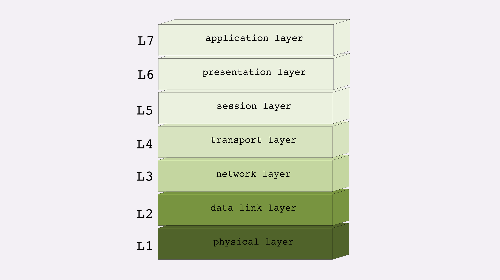
- 第一层：物理层，网络的物理形式，例如电缆、光纤、网卡、集线器等等；
- 第二层：数据链路层，它基本相当于 TCP/IP 的链接层；
- 第三层：网络层，相当于 TCP/IP 里的网际层；
- 第四层：传输层，相当于 TCP/IP 里的传输层；
- 第五层：会话层，维护网络中的连接状态，即保持会话和同步；
- 第六层：表示层，把数据转换为合适、可理解的语法和语义；
- 第七层：应用层，面向具体的应用传输数据。
至此，我们常说的“四层”“七层”就出现了。
不过国际标准组织心里也很清楚，TCP/IP 等协议已经在许多网络上实际运行，再推翻重来是不可能的。所以，OSI 分层模型在发布的时候就明确地表明是一个“参考”，不是强制标准，意思就是说，“你们以后该干什么还干什么，我不管，但面子上还是要按照我说的来”。
但 OSI 模型也是有优点的。对比一下就可以看出，TCP/IP 是一个纯软件的栈，没有网络应有的最根基的电缆、网卡等物理设备的位置。而 OSI 则补足了这个缺失，在理论层面上描述网络更加完整。
还有一个重要的形式上的优点：OSI 为每一层标记了明确了编号，最底层是一层，最上层是七层，而 TCP/IP 的层次从来只有名字而没有编号。显然，在交流的时候说“七层”要比“应用层”更简单快捷，特别是英文，对比一下“Layer seven”与“application layer”。
综合以上几点，在 OSI 模型之后，“四层”“七层”这样的说法就逐渐流行开了。不过在实际工作中你一定要注意，这种说法只是“理论上”的层次，并不是与现实完全对应。
两个分层模型的映射关系
现在我们有了两个网络分层模型：TCP/IP 和 OSI，新的问题又出现了，一个是四层模型，一个是七层模型，这两者应该如何互相映射或者说互相解释呢？
好在 OSI 在设计之初就参考了 TCP/IP 等多个协议，可以比较容易但不是很精确地实现对应关系。

- 第一层：物理层，TCP/IP 里无对应；
- 第二层：数据链路层，对应 TCP/IP 的链接层；
- 第三层：网络层，对应 TCP/IP 的网际层；
- 第四层：传输层，对应 TCP/IP 的传输层；
- 第五、六、七层：统一对应到 TCP/IP 的应用层。
所以你看，这就是“理想与现实”之间的矛盾。理想很美好，有七层，但现实很残酷，只有四层，“多余”的五层、六层就这样“消失”了。
但这也有一定的实际原因。
OSI 的分层模型在四层以上分的太细，而 TCP/IP 实际应用时的会话管理、编码转换、压缩等和具体应用经常联系的很紧密，很难分开。例如，HTTP 协议就同时包含了连接管理和数据格式定义。
到这里，你应该能够明白一开始那些“某某层”的概念了。
所谓的“四层负载均衡”就是指工作在传输层上，基于 TCP/IP 协议的特性，例如 IP 地址、端口号等实现对后端服务器的负载均衡。
所谓的“七层负载均衡”就是指工作在应用层上，看到的是 HTTP 协议，解析 HTTP 报文里的 URI、主机名、资源类型等数据，再用适当的策略转发给后端服务器。
TCP/IP 协议栈的工作方式
TCP/IP 协议栈是如何工作的呢？
你可以把 HTTP 利用 TCP/IP 协议栈传输数据想象成一个发快递的过程。
假设你想把一件毛绒玩具送给朋友，但你要先拿个塑料袋套一下，这件玩具就相当于 HTTP 协议里要传输的内容，比如 HTML，然后 HTTP 协议为它加一个 HTTP 专用附加数据。
你把玩具交给快递小哥，为了保护货物，他又加了层包装再贴了个标签，相当于在 TCP 层给数据再次打包，加上了 TCP 头。
接着快递小哥下楼，把包裹放进了三轮车里，运到集散点，然后再装进更大的卡车里，相当于在 IP 层、MAC 层对 TCP 数据包加上了 IP 头、MAC 头。
之后经过漫长的运输，包裹到达目的地，要卸货再放进另一位快递员的三轮车，就是在 IP 层、MAC 层传输后拆包。
快递员到了你朋友的家门口，撕掉标签，去除了 TCP 层的头，你朋友再拆掉塑料袋包装，也就是 HTTP 头，最后就拿到了玩具，也就是真正的 HTML 页面。
这个比喻里省略了很多 TCP/IP 协议里的细节，比如建连、路由、数据切分与重组、错误检查等，但核心的数据传输过程是差不多的。
HTTP 协议的传输过程就是这样通过协议栈逐层向下，每一层都添加本层的专有数据，层层打包，然后通过下层发送出去。
接收数据是则是相反的操作，从下往上穿过协议栈，逐层拆包，每层去掉本层的专有头，上层就会拿到自己的数据。
但下层的传输过程对于上层是完全“透明”的，上层也不需要关心下层的具体实现细节，所以就 HTTP 层次来看，它不管下层是不是 TCP/IP 协议，看到的只是一个可靠的传输链路，只要把数据加上自己的头，对方就能原样收到。
我为这个过程画了一张图，你可以对照着加深理解。
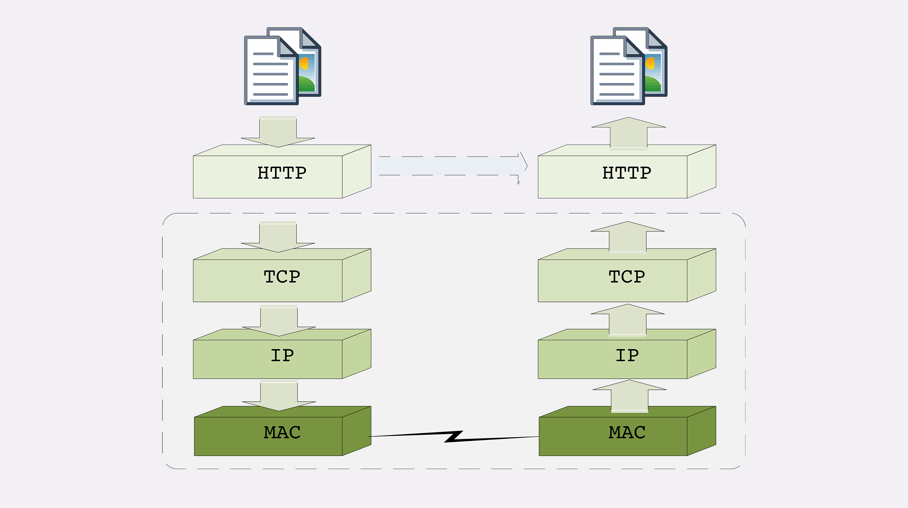
小结
这次我们学习了 HTTP 所在的网络分层模型，它是工作中常用的交流语言，在这里简单小结一下今天的内容。
- TCP/IP 分为四层，核心是二层的 IP 和三层的 TCP，HTTP 在第四层；
- OSI 分为七层，基本对应 TCP/IP，TCP 在第四层，HTTP 在第七层；
- OSI 可以映射到 TCP/IP，但这期间一、五、六层消失了；
- 日常交流的时候我们通常使用 OSI 模型，用四层、七层等术语；
- HTTP 利用 TCP/IP 协议栈逐层打包再拆包，实现了数据传输，但下面的细节并不可见。
有一个辨别四层和七层比较好的（但不是绝对的）小窍门，“两个凡是”：凡是由操作系统负责处理的就是四层或四层以下，否则，凡是需要由应用程序（也就是你自己写代码）负责处理的就是七层。
课下作业
- 你能用自己的话解释一下“二层转发”“三层路由”吗？
- 你认为上一讲中的 DNS 协议位于哪一层呢？
- 你认为 CDN 工作在那一层呢？
欢迎你把自己的答案写在留言区，与我和其他同学一起讨论。如果你觉得有所收获，也欢迎把文章分享给你的朋友。

06 域名里有哪些门道？
在上一讲里，我们学习了 HTTP 协议使用的 TCP/IP 协议栈，知道了 HTTP 协议是运行在 TCP/IP 上的。
IP 协议的职责是“网际互连”，它在 MAC 层之上，使用 IP 地址把 MAC 编号转换成了四位数字，这就对物理网卡的 MAC 地址做了一层抽象，发展出了许多的“新玩法”。
例如，分为 A、B、C、D、E 五种类型，公有地址和私有地址，掩码分割子网等。只要每个小网络在 IP 地址这个概念上达成一致，不管它在 MAC 层有多大的差异，都可以接入 TCP/IP 协议栈，最终汇合进整个互联网。
但接入互联网的计算机越来越多，IP 地址的缺点也就暴露出来了，最主要的是它“对人不友好”，虽然比 MAC 的 16 进制数要好一点，但还是难于记忆和输入。
怎么解决这个问题呢？
那就“以其人之道还治其人之身”，在 IP 地址之上再来一次抽象，把数字形式的 IP 地址转换成更有意义更好记的名字，在字符串的层面上再增加“新玩法”。于是，DNS 域名系统就这么出现了。
域名的形式
在第 4 讲曾经说过，域名是一个有层次的结构，是一串用“.”分隔的多个单词，最右边的被称为“顶级域名”，然后是“二级域名”，层级关系向左依次降低。
最左边的是主机名，通常用来表明主机的用途，比如“www”表示提供万维网服务、“mail”表示提供邮件服务，不过这也不是绝对的，名字的关键是要让我们容易记忆。
看一下极客时间的域名“time.geekbang.org”，这里的“org”就是顶级域名，“geekbang”是二级域名，“time”则是主机名。使用这个域名，DNS 就会把它转换成相应的 IP 地址，你就可以访问极客时间的网站了。
域名不仅能够代替 IP 地址，还有许多其他的用途。
在 Apache、Nginx 这样的 Web 服务器里，域名可以用来标识虚拟主机，决定由哪个虚拟主机来对外提供服务，比如在 Nginx 里就会使用“server_name”指令：
server {
listen 80; # 监听 80 端口
server_name time.geekbang.org; # 主机名是 time.geekbang.org
...
}
域名本质上还是个名字空间系统，使用多级域名就可以划分出不同的国家、地区、组织、公司、部门，每个域名都是独一无二的，可以作为一种身份的标识。
举个例子吧，假设 A 公司里有个小明，B 公司里有个小强，于是他们就可以分别说是“小明.A 公司”，“小强.B 公司”，即使 B 公司里也有个小明也不怕，可以标记为“小明.B 公司”，很好地解决了重名问题。
因为这个特性，域名也被扩展到了其他应用领域，比如 Java 的包机制就采用域名作为命名空间，只是它使用了反序。如果极客时间要开发 Java 应用，那么它的包名可能就是“org.geekbang.time”。
而 XML 里使用 URI 作为名字空间，也是间接使用了域名。
域名的解析
就像 IP 地址必须转换成 MAC 地址才能访问主机一样，域名也必须要转换成 IP 地址，这个过程就是“域名解析”。
目前全世界有几亿个站点，有几十亿网民，而每天网络上发生的 HTTP 流量更是天文数字。这些请求绝大多数都是基于域名来访问网站的，所以 DNS 就成了互联网的重要基础设施，必须要保证域名解析稳定可靠、快速高效。
DNS 的核心系统是一个三层的树状、分布式服务，基本对应域名的结构：
- 根域名服务器（Root DNS Server）：管理顶级域名服务器，返回“com”“net”“cn”等顶级域名服务器的 IP 地址；
- 顶级域名服务器（Top-level DNS Server）：管理各自域名下的权威域名服务器，比如 com 顶级域名服务器可以返回 apple.com 域名服务器的 IP 地址；
- 权威域名服务器（Authoritative DNS Server）：管理自己域名下主机的 IP 地址，比如 apple.com 权威域名服务器可以返回 www.apple.com 的 IP 地址。
在这里根域名服务器是关键，它必须是众所周知的，否则下面的各级服务器就无从谈起了。目前全世界共有 13 组根域名服务器，又有数百台的镜像，保证一定能够被访问到。
有了这个系统以后，任何一个域名都可以在这个树形结构里从顶至下进行查询，就好像是把域名从右到左顺序走了一遍，最终就获得了域名对应的 IP 地址。
例如，你要访问“www.apple.com”，就要进行下面的三次查询：
- 访问根域名服务器，它会告诉你“com”顶级域名服务器的地址；
- 访问“com”顶级域名服务器，它再告诉你“apple.com”域名服务器的地址；
- 最后访问“apple.com”域名服务器，就得到了“www.apple.com”的地址。
虽然核心的 DNS 系统遍布全球，服务能力很强也很稳定，但如果全世界的网民都往这个系统里挤，即使不挤瘫痪了，访问速度也会很慢。
所以在核心 DNS 系统之外，还有两种手段用来减轻域名解析的压力，并且能够更快地获取结果，基本思路就是“缓存”。
首先，许多大公司、网络运行商都会建立自己的 DNS 服务器，作为用户 DNS 查询的代理，代替用户访问核心 DNS 系统。这些“野生”服务器被称为“非权威域名服务器”，可以缓存之前的查询结果，如果已经有了记录，就无需再向根服务器发起查询，直接返回对应的 IP 地址。
这些 DNS 服务器的数量要比核心系统的服务器多很多，而且大多部署在离用户很近的地方。比较知名的 DNS 有 Google 的“8.8.8.8”，Microsoft 的“4.2.2.1”，还有 CloudFlare 的“1.1.1.1”等等。
其次，操作系统里也会对 DNS 解析结果做缓存，如果你之前访问过“www.apple.com”，那么下一次在浏览器里再输入这个网址的时候就不会再跑到 DNS 那里去问了，直接在操作系统里就可以拿到 IP 地址。
另外，操作系统里还有一个特殊的“主机映射”文件，通常是一个可编辑的文本，在 Linux 里是“/etc/hosts”，在 Windows 里是“C:\WINDOWS\system32\drivers\etc\hosts”，如果操作系统在缓存里找不到 DNS 记录，就会找这个文件。
有了上面的“野生”DNS 服务器、操作系统缓存和 hosts 文件后，很多域名解析的工作就都不用“跋山涉水”了，直接在本地或本机就能解决，不仅方便了用户，也减轻了各级 DNS 服务器的压力，效率就大大提升了。
下面的这张图比较完整地表示了现在的 DNS 架构。
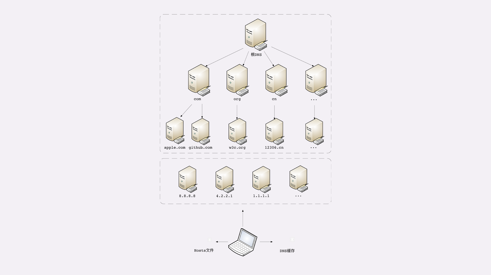
在 Nginx 里有这么一条配置指令“resolver”，它就是用来配置 DNS 服务器的，如果没有它，那么 Nginx 就无法查询域名对应的 IP，也就无法反向代理到外部的网站。
resolver 8.8.8.8 valid=30s; # 指定 Google 的 DNS，缓存 30 秒
域名的“新玩法”
有了域名，又有了可以稳定工作的解析系统，于是我们就可以实现比 IP 地址更多的“新玩法”了。
第一种，也是最简单的，“重定向”。因为域名代替了 IP 地址，所以可以让对外服务的域名不变，而主机的 IP 地址任意变动。当主机有情况需要下线、迁移时，可以更改 DNS 记录，让域名指向其他的机器。
比如，你有一台“buy.tv”的服务器要临时停机维护，那你就可以通知 DNS 服务器：“我这个 buy.tv 域名的地址变了啊，原先是 1.2.3.4，现在是 5.6.7.8，麻烦你改一下。”DNS 于是就修改内部的 IP 地址映射关系，之后再有访问 buy.tv 的请求就不走 1.2.3.4 这台主机，改由 5.6.7.8 来处理，这样就可以保证业务服务不中断。
第二种，因为域名是一个名字空间，所以可以使用 bind9 等开源软件搭建一个在内部使用的 DNS，作为名字服务器。这样我们开发的各种内部服务就都用域名来标记，比如数据库服务都用域名“mysql.inner.app”，商品服务都用“goods.inner.app”，发起网络通信时也就不必再使用写死的 IP 地址了，可以直接用域名，而且这种方式也兼具了第一种“玩法”的优势。
第三种“玩法”包含了前两种，也就是基于域名实现的负载均衡。
这种“玩法”也有两种方式，两种方式可以混用。
第一种方式，因为域名解析可以返回多个 IP 地址，所以一个域名可以对应多台主机，客户端收到多个 IP 地址后，就可以自己使用轮询算法依次向服务器发起请求，实现负载均衡。
第二种方式，域名解析可以配置内部的策略，返回离客户端最近的主机，或者返回当前服务质量最好的主机，这样在 DNS 端把请求分发到不同的服务器，实现负载均衡。
前面我们说的都是可信的 DNS，如果有一些不怀好意的 DNS，那么它也可以在域名这方面“做手脚”，弄一些比较“恶意”的“玩法”，举两个例子：
- “域名屏蔽”，对域名直接不解析，返回错误，让你无法拿到 IP 地址，也就无法访问网站；
- “域名劫持”，也叫“域名污染”，你要访问 A 网站，但 DNS 给了你 B 网站。
好在互联网上还是好人多，而且 DNS 又是互联网的基础设施，这些“恶意 DNS”并不多见，你上网的时候不需要太过担心。
小结
这次我们学习了与 HTTP 协议有重要关系的域名和 DNS，在这里简单小结一下今天的内容：
- 域名使用字符串来代替 IP 地址，方便用户记忆，本质上一个名字空间系统；
- DNS 就像是我们现实世界里的电话本、查号台，统管着互联网世界里的所有网站，是一个“超级大管家”；
- DNS 是一个树状的分布式查询系统，但为了提高查询效率，外围有多级的缓存；
- 使用 DNS 可以实现基于域名的负载均衡，既可以在内网，也可以在外网。
课下作业
- 在浏览器地址栏里随便输入一个不存在的域名，比如就叫“www. 不存在.com”，试着解释一下它的 DNS 解析过程。
- 如果因为某些原因，DNS 失效或者出错了，会出现什么后果？
欢迎你把自己的答案写在留言区，与我和其他同学一起讨论。如果你觉得有所收获，也欢迎把文章分享给你的朋友。
07 自己动手，搭建HTTP实验环境
这一讲是“破冰篇”的最后一讲，我会先简单地回顾一下之前的内容，然后在 Windows 系统上实际操作，用几个应用软件搭建出一个“最小化”的 HTTP 实验环境，方便后续的“基础篇”“进阶篇”“安全篇”的学习。
“破冰篇”回顾
HTTP 协议诞生于 30 年前，设计之初的目的是用来传输纯文本数据。但由于形式灵活，搭配 URI、HTML 等技术能够把互联网上的资源都联系起来，构成一个复杂的超文本系统，让人们自由地获取信息，所以得到了迅猛发展。
HTTP 有多个版本，目前应用的最广泛的是 HTTP/1.1，它几乎可以说是整个互联网的基石。但 HTTP/1.1 的性能难以满足如今的高流量网站，于是又出现了 HTTP/2 和 HTTP/3。不过这两个新版本的协议还没有完全推广开。在可预见的将来，HTTP/1.1 还会继续存在下去。
HTTP 翻译成中文是“超文本传输协议”，是一个应用层的协议，通常基于 TCP/IP，能够在网络的任意两点之间传输文字、图片、音频、视频等数据。
HTTP 协议中的两个端点称为请求方和应答方。请求方通常就是 Web 浏览器，也叫 user agent，应答方是 Web 服务器，存储着网络上的大部分静态或动态的资源。
在浏览器和服务器之间还有一些“中间人”的角色，如 CDN、网关、代理等，它们也同样遵守 HTTP 协议，可以帮助用户更快速、更安全地获取资源。
HTTP 协议不是一个孤立的协议，需要下层很多其他协议的配合。最基本的是 TCP/IP，实现寻址、路由和可靠的数据传输，还有 DNS 协议实现对互联网上主机的定位查找。
对 HTTP 更准确的称呼是“HTTP over TCP/IP”，而另一个“HTTP over SSL/TLS”就是增加了安全功能的 HTTPS。
软件介绍
常言道“实践出真知”，又有俗语“光说不练是假把式”。要研究 HTTP 协议，最好有一个实际可操作、可验证的环境，通过实际的数据、现象来学习，肯定要比单纯的“动嘴皮子”效果要好的多。
现成的环境当然有，只要能用浏览器上网，就会有 HTTP 协议，就可以进行实验。但现实的网络环境又太复杂了，有很多无关的干扰因素，这些“噪音”会“淹没”真正有用的信息。
所以，我给你的建议是：搭建一个“最小化”的环境，在这个环境里仅有 HTTP 协议的两个端点：请求方和应答方，去除一切多余的环节，从而可以抓住重点，快速掌握 HTTP 的本质。

简单说一下这个“最小化”环境用到的应用软件：
- Wireshark
- Chrome/Firefox
- Telnet
- OpenResty
Wireshark是著名的网络抓包工具，能够截获在 TCP/IP 协议栈中传输的所有流量，并按协议类型、地址、端口等任意过滤，功能非常强大，是学习网络协议的必备工具。
它就像是网络世界里的一台“高速摄像机”，把只在一瞬间发生的网络传输过程如实地“拍摄”下来，事后再“慢速回放”，让我们能够静下心来仔细地分析那一瞬到底发生了什么。
Chrome是 Google 开发的浏览器，是目前的主流浏览器之一。它不仅上网方便，也是一个很好的调试器，对 HTTP/1.1、HTTPS、HTTP/2、QUIC 等的协议都支持得非常好，用 F12 打开“开发者工具”还可以非常详细地观测 HTTP 传输全过程的各种数据。
如果你更习惯使用Firefox，那也没问题，其实它和 Chrome 功能上都差不太多，选择自己喜欢的就好。
与 Wireshark 不同，Chrome 和 Firefox 属于“事后诸葛亮”，不能观测 HTTP 传输的过程，只能看到结果。
Telnet是一个经典的虚拟终端，基于 TCP 协议远程登录主机，我们可以使用它来模拟浏览器的行为，连接服务器后手动发送 HTTP 请求，把浏览器的干扰也彻底排除，能够从最原始的层面去研究 HTTP 协议。
OpenResty你可能比较陌生，它是基于 Nginx 的一个“强化包”，里面除了 Nginx 还有一大堆有用的功能模块，不仅支持 HTTP/HTTPS，还特别集成了脚本语言 Lua 简化 Nginx 二次开发，方便快速地搭建动态网关，更能够当成应用容器来编写业务逻辑。
选择 OpenResty 而不直接用 Nginx 的原因是它相当于 Nginx 的“超集”，功能更丰富，安装部署更方便。我也会用 Lua 编写一些服务端脚本，实现简单的 Web 服务器响应逻辑，方便实验。
安装过程
这个“最小化”环境的安装过程也比较简单，大约只需要你半个小时不到的时间就能搭建完成。
我在 GitHub 上为本专栏开了一个项目：http_study，可以直接用“git clone”下载，或者去 Release 页面，下载打好的压缩包。
我使用的操作环境是 Windows 10，如果你用的是 Mac 或者 Linux，可以用 VirtualBox 等虚拟机软件安装一个 Windows 虚拟机，再在里面操作。
首先你要获取最新的 http_study 项目源码，假设 clone 或解压的目录是“D:\http_study”，操作完成后大概是下图这个样子。

Chrome 和 WireShark 的安装比较简单，一路按“下一步”就可以了。版本方面使用最新的就好，我的版本可能不是最新的，Chrome 是 73，WireShark 是 3.0.0。
Windows 10 自带 Telnet，不需要安装，但默认是不启用的，需要你稍微设置一下。
打开 Windows 的设置窗口，搜索“Telnet”，就会找到“启用或关闭 Windows 功能”，在这个窗口里找到“Telnet 客户端”，打上对钩就可以了，可以参考截图。
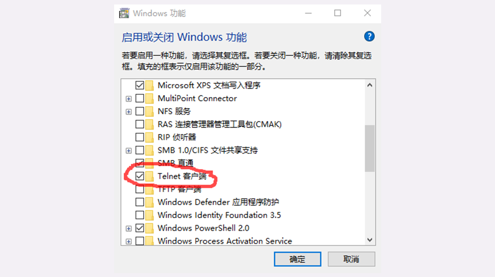
接下来我们要安装 OpenResty，去它的官网，点击左边栏的“Download”，进入下载页面，下载适合你系统的版本（这里我下载的是 64 位的 1.15.8.1，包的名字是“openresty-1.15.8.1-win64.zip”）。

然后要注意，你必须把 OpenResty 的压缩包解压到刚才的“D:\http_study”目录里，并改名为“openresty”。

安装工作马上就要完成了，为了能够让浏览器能够使用 DNS 域名访问我们的实验环境，还要改一下本机的 hosts 文件，位置在“C:\WINDOWS\system32\drivers\etc”，在里面添加三行本机 IP 地址到测试域名的映射，你也可以参考 GitHub 项目里的 hosts 文件，这就相当于在一台物理实机上“托管”了三个虚拟主机。
127.0.0.1 www.chrono.com
127.0.0.1 www.metroid.net
127.0.0.1 origin.io
注意修改 hosts 文件需要管理员权限，直接用记事本编辑是不行的，可以切换管理员身份，或者改用其他高级编辑器，比如 Notepad++，而且改之前最好做个备份。
到这里，我们的安装工作就完成了！之后你就可以用 Wireshark、Chrome、Telnet 在这个环境里随意“折腾”，弄坏了也不要紧，只要把目录删除，再来一遍操作就能复原。
测试验证
实验环境搭建完了，但还需要把它运行起来，做一个简单的测试验证，看是否运转正常。
首先我们要启动 Web 服务器，也就是 OpenResty。
在 http_study 的“www”目录下有四个批处理文件，分别是：

- start：启动 OpenResty 服务器；
- stop：停止 OpenResty 服务器；
- reload：重启 OpenResty 服务器；
- list：列出已经启动的 OpenResty 服务器进程。
使用鼠标双击“start”批处理文件，就会启动 OpenResty 服务器在后台运行，这个过程可能会有 Windows 防火墙的警告，选择“允许”即可。
运行后，鼠标双击“list”可以查看 OpenResty 是否已经正常启动，应该会有两个 nginx.exe 的后台进程，大概是下图的样子。

有了 Web 服务器后，接下来我们要运行 Wireshark，开始抓包。
因为我们的实验环境运行在本机的 127.0.0.1 上，也就是 loopback“环回”地址。所以，在 Wireshark 里要选择“Npcap loopback Adapter”，过滤器选择“HTTP TCP port(80)”，即只抓取 HTTP 相关的数据包。鼠标双击开始界面里的“Npcap loopback Adapter”即可开始抓取本机上的网络数据。
然后我们打开 Chrome，在地址栏输入“http://localhost/”，访问刚才启动的 OpenResty 服务器，就会看到一个简单的欢迎界面，如下图所示。

这时再回头去看 Wireshark，应该会显示已经抓到了一些数据，就可以用鼠标点击工具栏里的“停止捕获”按钮告诉 Wireshark“到此为止”，不再继续抓包。
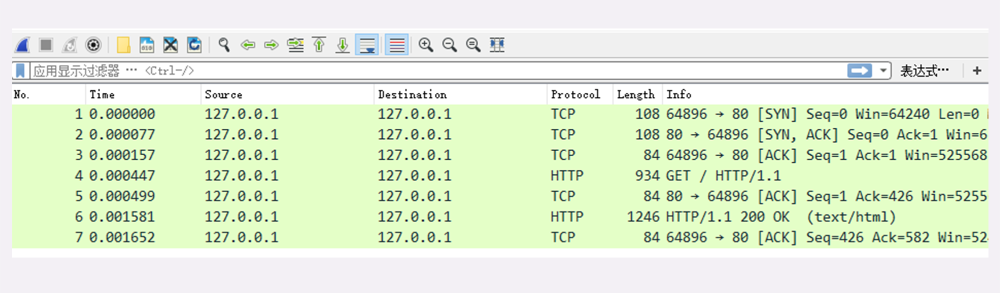
至于这些数据是什么，表示什么含义，我会在下一讲再详细介绍。
如果你能够在自己的电脑上走到这一步，就说明“最小化”的实验环境已经搭建成功了，不要忘了实验结束后运行批处理“stop”停止 OpenResty 服务器。
小结
这次我们学习了如何在自己的电脑上搭建 HTTP 实验环境，在这里简单小结一下今天的内容。
- 现实的网络环境太复杂，有很多干扰因素，搭建“最小化”的环境可以快速抓住重点，掌握 HTTP 的本质；
- 我们选择 Wireshark 作为抓包工具，捕获在 TCP/IP 协议栈中传输的所有流量；
- 我们选择 Chrome 或 Firefox 浏览器作为 HTTP 协议中的 user agent；
- 我们选择 OpenResty 作为 Web 服务器，它是一个 Nginx 的“强化包”，功能非常丰富；
- Telnet 是一个命令行工具，可用来登录主机模拟浏览器操作；
- 在 GitHub 上可以下载到本专栏的专用项目源码，只要把 OpenResty 解压到里面即可完成实验环境的搭建。
课下作业
-
按照今天所学的，在你自己的电脑上搭建出这个 HTTP 实验环境并测试验证。
-
由于篇幅所限，我无法详细介绍 Wireshark，你有时间可以再上网搜索 Wireshark 相关的资料，了解更多的用法。
欢迎你把自己的学习体会写在留言区，与我和其他同学一起讨论。如果你觉得有所收获，也欢迎把文章分享给你的朋友。
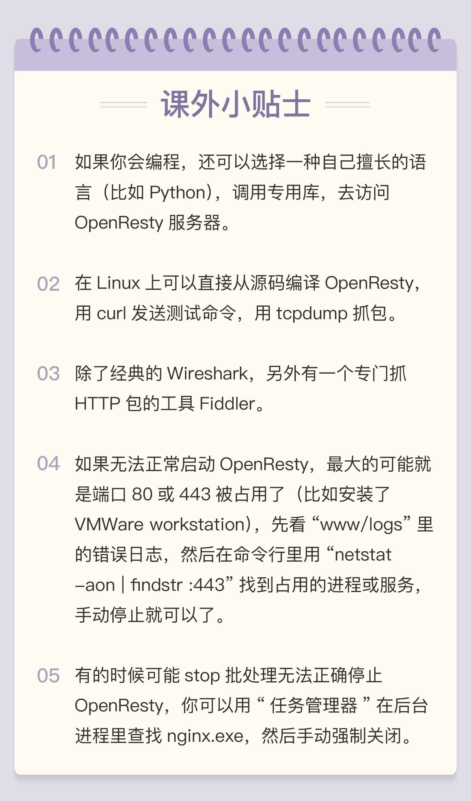
08 键入网址再按下回车，后面究竟发生了什么？
经过上一讲的学习，你是否已经在自己的电脑上搭建好了“最小化”的 HTTP 实验环境呢？
我相信你的答案一定是“Yes”，那么，让我们立刻开始“螺蛳壳里做道场”，在这个实验环境里看一下 HTTP 协议工作的全过程。
使用 IP 地址访问 Web 服务器
首先我们运行 www 目录下的“start”批处理程序，启动本机的 OpenResty 服务器，启动后可以用“list”批处理确认服务是否正常运行。
然后我们打开 Wireshark，选择“HTTP TCP port(80)”过滤器，再鼠标双击“Npcap loopback Adapter”，开始抓取本机 127.0.0.1 地址上的网络数据。
第三步，在 Chrome 浏览器的地址栏里输入http://127.0.0.1/，再按下回车键，等欢迎页面显示出来后 Wireshark 里就会有捕获的数据包，如下图所示。

如果你还没有搭好实验环境，或者捕获与本文里的不一致也没关系。我把这次捕获的数据存成了 pcap 包，文件名是“08-1”，放到了 GitHub 上，你可以下载到本地后再用 Wireshark 打开，完全精确“重放”刚才的 HTTP 传输过程。
抓包分析
在 Wireshark 里你可以看到，这次一共抓到了 11 个包（这里用了滤包功能，滤掉了 3 个包，原本是 14 个包），耗时 0.65 秒，下面我们就来一起分析一下"键入网址按下回车"后数据传输的全过程。
通过前面“破冰篇”的讲解，你应该知道 HTTP 协议是运行在 TCP/IP 基础上的，依靠 TCP/IP 协议来实现数据的可靠传输。所以浏览器要用 HTTP 协议收发数据，首先要做的就是建立 TCP 连接。
因为我们在地址栏里直接输入了 IP 地址“127.0.0.1”，而 Web 服务器的默认端口是 80，所以浏览器就要依照 TCP 协议的规范，使用“三次握手”建立与 Web 服务器的连接。
对应到 Wireshark 里，就是最开始的三个抓包，浏览器使用的端口是 52085，服务器使用的端口是 80，经过 SYN、SYN/ACK、ACK 的三个包之后，浏览器与服务器的 TCP 连接就建立起来了。
有了可靠的 TCP 连接通道后，HTTP 协议就可以开始工作了。于是，浏览器按照 HTTP 协议规定的格式，通过 TCP 发送了一个“GET / HTTP/1.1”请求报文，也就是 Wireshark 里的第四个包。至于包的内容具体是什么现在先不用管，我们下一讲再说。
随后，Web 服务器回复了第五个包，在 TCP 协议层面确认：“刚才的报文我已经收到了”，不过这个 TCP 包 HTTP 协议是看不见的。
Web 服务器收到报文后在内部就要处理这个请求。同样也是依据 HTTP 协议的规定，解析报文，看看浏览器发送这个请求想要干什么。
它一看，原来是要求获取根目录下的默认文件，好吧，那我就从磁盘上把那个文件全读出来，再拼成符合 HTTP 格式的报文，发回去吧。这就是 Wireshark 里的第六个包“HTTP/1.1 200 OK”，底层走的还是 TCP 协议。
同样的，浏览器也要给服务器回复一个 TCP 的 ACK 确认，“你的响应报文收到了，多谢。”，即第七个包。
这时浏览器就收到了响应数据，但里面是什么呢？所以也要解析报文。一看，服务器给我的是个 HTML 文件，好，那我就调用排版引擎、JavaScript 引擎等等处理一下，然后在浏览器窗口里展现出了欢迎页面。
这之后还有两个来回，共四个包，重复了相同的步骤。这是浏览器自动请求了作为网站图标的“favicon.ico”文件，与我们输入的网址无关。但因为我们的实验环境没有这个文件，所以服务器在硬盘上找不到，返回了一个“404 Not Found”。
至此，“键入网址再按下回车”的全过程就结束了。
我为这个过程画了一个交互图，你可以对照着看一下。不过要提醒你，图里 TCP 关闭连接的“四次挥手”在抓包里没有出现，这是因为 HTTP/1.1 长连接特性，默认不会立即关闭连接。
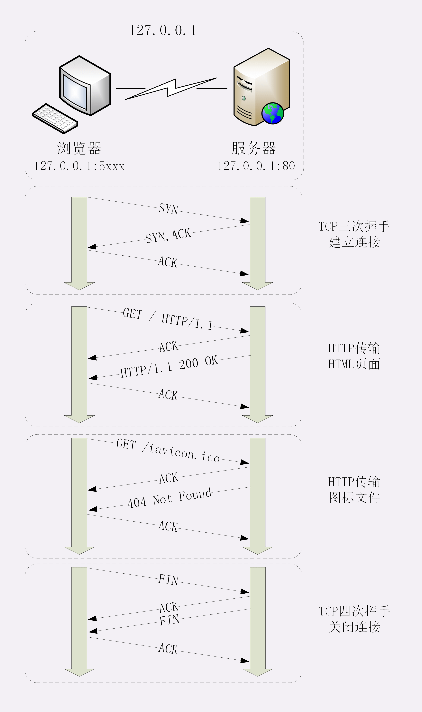
再简要叙述一下这次最简单的浏览器 HTTP 请求过程：
- 浏览器从地址栏的输入中获得服务器的 IP 地址和端口号；
- 浏览器用 TCP 的三次握手与服务器建立连接；
- 浏览器向服务器发送拼好的报文；
- 服务器收到报文后处理请求，同样拼好报文再发给浏览器；
- 浏览器解析报文，渲染输出页面。
使用域名访问 Web 服务器
刚才我们是在浏览器地址栏里直接输入 IP 地址，但绝大多数情况下，我们是不知道服务器 IP 地址的，使用的是域名，那么改用域名后这个过程会有什么不同吗？
还是实际动手试一下吧，把地址栏的输入改成“http://www.Chrono.com”，重复 Wireshark 抓包过程，你会发现，好像没有什么不同，浏览器上同样显示出了欢迎界面，抓到的包也同样是 11 个：先是三次握手，然后是两次 HTTP 传输。
这里就出现了一个问题：浏览器是如何从网址里知道“www.Chrono（加微信：642945106 发送“赠送”领取赠送精品课程 发数字“2”获取众筹列表。）.com”的 IP 地址就是“127.0.0.1”的呢？
还记得我们之前讲过的 DNS 知识吗？浏览器看到了网址里的“www.Chrono（加微信：642945106 发送“赠送”领取赠送精品课程 发数字“2”获取众筹列表。）.com”，发现它不是数字形式的 IP 地址，那就肯定是域名了，于是就会发起域名解析动作，通过访问一系列的域名解析服务器，试图把这个域名翻译成 TCP/IP 协议里的 IP 地址。
不过因为域名解析的全过程实在是太复杂了，如果每一个域名都要大费周折地去网上查一下，那我们上网肯定会慢得受不了。
所以，在域名解析的过程中会有多级的缓存，浏览器首先看一下自己的缓存里有没有，如果没有就向操作系统的缓存要，还没有就检查本机域名解析文件 hosts，也就是上一讲中我们修改的“C:\WINDOWS\system32\drivers\etc\hosts”。
刚好，里面有一行映射关系“127.0.0.1 www.Chrono（加微信：642945106 发送“赠送”领取赠送精品课程 发数字“2”获取众筹列表。）.com”，于是浏览器就知道了域名对应的 IP 地址，就可以愉快地建立 TCP 连接发送 HTTP 请求了。
我把这个过程也画出了一张图，但省略了 TCP/IP 协议的交互部分，里面的浏览器多出了一个访问 hosts 文件的动作，也就是本机的 DNS 解析。

真实的网络世界
通过上面两个在“最小化”环境里的实验，你是否已经对 HTTP 协议的工作流程有了基本的认识呢？
第一个实验是最简单的场景，只有两个角色：浏览器和服务器，浏览器可以直接用 IP 地址找到服务器，两者直接建立 TCP 连接后发送 HTTP 报文通信。
第二个实验在浏览器和服务器之外增加了一个 DNS 的角色，浏览器不知道服务器的 IP 地址，所以必须要借助 DNS 的域名解析功能得到服务器的 IP 地址，然后才能与服务器通信。
真实的互联网世界要比这两个场景要复杂的多，我利用下面的这张图来做一个详细的说明。
如果你用的是电脑台式机，那么你可能会使用带水晶头的双绞线连上网口，由交换机接入固定网络。如果你用的是手机、平板电脑，那么你可能会通过蜂窝网络、WiFi，由电信基站、无线热点接入移动网络。
接入网络的同时，网络运行商会给你的设备分配一个 IP 地址，这个地址可能是静态分配的，也可能是动态分配的。静态 IP 就始终不变，而动态 IP 可能你下次上网就变了。
假设你要访问的是 Apple 网站，显然你是不知道它的真实 IP 地址的，在浏览器里只能使用域名“www.apple.com”访问，那么接下来要做的必然是域名解析。这就要用 DNS 协议开始从操作系统、本地 DNS、根 DNS、顶级 DNS、权威 DNS 的层层解析，当然这中间有缓存，可能不会费太多时间就能拿到结果。
别忘了互联网上还有另外一个重要的角色 CDN，它也会在 DNS 的解析过程中“插上一脚”。DNS 解析可能会给出 CDN 服务器的 IP 地址，这样你拿到的就会是 CDN 服务器而不是目标网站的实际地址。
因为 CDN 会缓存网站的大部分资源，比如图片、CSS 样式表，所以有的 HTTP 请求就不需要再发到 Apple，CDN 就可以直接响应你的请求，把数据发给你。
由 PHP、Java 等后台服务动态生成的页面属于“动态资源”，CDN 无法缓存，只能从目标网站获取。于是你发出的 HTTP 请求就要开始在互联网上的“漫长跋涉”，经过无数的路由器、网关、代理，最后到达目的地。
目标网站的服务器对外表现的是一个 IP 地址，但为了能够扛住高并发，在内部也是一套复杂的架构。通常在入口是负载均衡设备，例如四层的 LVS 或者七层的 Nginx，在后面是许多的服务器，构成一个更强更稳定的集群。
负载均衡设备会先访问系统里的缓存服务器，通常有 memory 级缓存 Redis 和 disk 级缓存 Varnish，它们的作用与 CDN 类似，不过是工作在内部网络里，把最频繁访问的数据缓存几秒钟或几分钟，减轻后端应用服务器的压力。
如果缓存服务器里也没有，那么负载均衡设备就要把请求转发给应用服务器了。这里就是各种开发框架大显神通的地方了，例如 Java 的 Tomcat/Netty/Jetty，Python 的 Django，还有 PHP、Node.js、Golang 等等。它们又会再访问后面的 MySQL、PostgreSQL、MongoDB 等数据库服务，实现用户登录、商品查询、购物下单、扣款支付等业务操作，然后把执行的结果返回给负载均衡设备，同时也可能给缓存服务器里也放一份。
应用服务器的输出到了负载均衡设备这里，请求的处理就算是完成了，就要按照原路再走回去，还是要经过许多的路由器、网关、代理。如果这个资源允许缓存，那么经过 CDN 的时候它也会做缓存，这样下次同样的请求就不会到达源站了。
最后网站的响应数据回到了你的设备，它可能是 HTML、JSON、图片或者其他格式的数据，需要由浏览器解析处理才能显示出来，如果数据里面还有超链接，指向别的资源，那么就又要重走一遍整个流程，直到所有的资源都下载完。
小结
今天我们在本机的环境里做了两个简单的实验，学习了 HTTP 协议请求 - 应答的全过程，在这里做一个小结。
- HTTP 协议基于底层的 TCP/IP 协议，所以必须要用 IP 地址建立连接；
- 如果不知道 IP 地址，就要用 DNS 协议去解析得到 IP 地址，否则就会连接失败；
- 建立 TCP 连接后会顺序收发数据，请求方和应答方都必须依据 HTTP 规范构建和解析报文；
- 为了减少响应时间，整个过程中的每一个环节都会有缓存，能够实现“短路”操作；
- 虽然现实中的 HTTP 传输过程非常复杂，但理论上仍然可以简化成实验里的“两点”模型。
课下作业
- 你能试着解释一下在浏览器里点击页面链接后发生了哪些事情吗？
- 这一节课里讲的都是正常的请求处理流程，如果是一个不存在的域名，那么浏览器的工作流程会是怎么样的呢？
欢迎你把自己的答案写在留言区，与我和其他同学一起讨论。如果你觉得有所收获，也欢迎把文章分享给你的朋友。

09 HTTP报文是什么样子的？
在上一讲里，我们在本机的最小化环境了做了两个 HTTP 协议的实验，使用 Wireshark 抓包，弄清楚了 HTTP 协议基本工作流程，也就是“请求 - 应答”“一发一收”的模式。
可以看到，HTTP 的工作模式是非常简单的，由于 TCP/IP 协议负责底层的具体传输工作，HTTP 协议基本上不用在这方面操心太多。单从这一点上来看，所谓的“超文本传输协议”其实并不怎么管“传输”的事情，有点“名不副实”。
那么 HTTP 协议的核心部分是什么呢？
答案就是它传输的报文内容。
HTTP 协议在规范文档里详细定义了报文的格式，规定了组成部分，解析规则，还有处理策略，所以可以在 TCP/IP 层之上实现更灵活丰富的功能，例如连接控制，缓存管理、数据编码、内容协商等等。
报文结构
你也许对 TCP/UDP 的报文格式有所了解，拿 TCP 报文来举例，它在实际要传输的数据之前附加了一个 20 字节的头部数据，存储 TCP 协议必须的额外信息，例如发送方的端口号、接收方的端口号、包序号、标志位等等。
有了这个附加的 TCP 头，数据包才能够正确传输，到了目的地后把头部去掉，就可以拿到真正的数据。

HTTP 协议也是与 TCP/UDP 类似，同样也需要在实际传输的数据前附加一些头数据，不过与 TCP/UDP 不同的是，它是一个“纯文本”的协议，所以头数据都是 ASCII 码的文本，可以很容易地用肉眼阅读，不用借助程序解析也能够看懂。
HTTP 协议的请求报文和响应报文的结构基本相同，由三大部分组成：
- 起始行（start line）：描述请求或响应的基本信息；
- 头部字段集合（header）：使用 key-value 形式更详细地说明报文；
- 消息正文（entity）：实际传输的数据，它不一定是纯文本，可以是图片、视频等二进制数据。
这其中前两部分起始行和头部字段经常又合称为“请求头”或“响应头”，消息正文又称为“实体”，但与“header”对应，很多时候就直接称为“body”。
HTTP 协议规定报文必须有 header，但可以没有 body，而且在 header 之后必须要有一个“空行”，也就是“CRLF”，十六进制的“0D0A”。
所以，一个完整的 HTTP 报文就像是下图的这个样子，注意在 header 和 body 之间有一个“空行”。
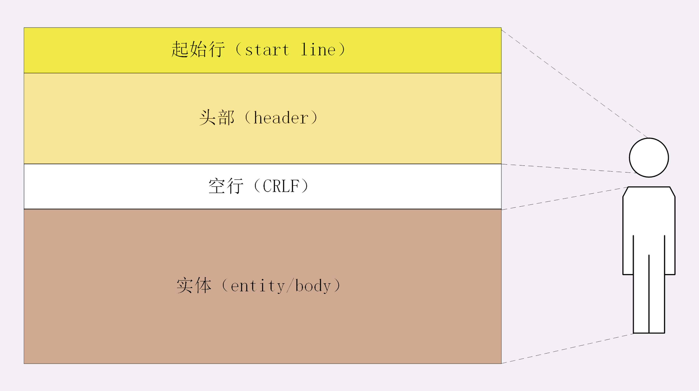
说到这里，我不由得想起了一部老动画片《大头儿子和小头爸爸》，你看，HTTP 的报文结构像不像里面的“大头儿子”？
报文里的 header 就是“大头儿子”的“大头”，空行就是他的“脖子”，而后面的 body 部分就是他的身体了。
看一下我们之前用 Wireshark 抓的包吧。

在这个浏览器发出的请求报文里，第一行“GET / HTTP/1.1”就是请求行，而后面的“Host”“Connection”等等都属于 header，报文的最后是一个空白行结束，没有 body。
在很多时候，特别是浏览器发送 GET 请求的时候都是这样，HTTP 报文经常是只有 header 而没 body，相当于只发了一个超级“大头”过来，你可以想象的出来：每时每刻网络上都会有数不清的“大头儿子”在跑来跑去。
不过这个“大头”也不能太大，虽然 HTTP 协议对 header 的大小没有做限制，但各个 Web 服务器都不允许过大的请求头，因为头部太大可能会占用大量的服务器资源，影响运行效率。
请求行
了解了 HTTP 报文的基本结构后，我们来看看请求报文里的起始行也就是请求行（request line），它简要地描述了客户端想要如何操作服务器端的资源。
请求行由三部分构成：
- 请求方法：是一个动词，如 GET/POST，表示对资源的操作；
- 请求目标：通常是一个 URI，标记了请求方法要操作的资源；
- 版本号：表示报文使用的 HTTP 协议版本。
这三个部分通常使用空格（space）来分隔，最后要用 CRLF 换行表示结束。
还是用 Wireshark 抓包的数据来举例：
GET / HTTP/1.1
在这个请求行里，“GET”是请求方法，“/”是请求目标，“HTTP/1.1”是版本号，把这三部分连起来，意思就是“服务器你好，我想获取网站根目录下的默认文件，我用的协议版本号是 1.1，请不要用 1.0 或者 2.0 回复我。”
别看请求行就一行，貌似很简单，其实这里面的“讲究”是非常多的，尤其是前面的请求方法和请求目标，组合起来变化多端，后面我还会详细介绍。
状态行
看完了请求行，我们再看响应报文里的起始行，在这里它不叫“响应行”，而是叫“状态行”（status line），意思是服务器响应的状态。
比起请求行来说，状态行要简单一些，同样也是由三部分构成：
- 版本号：表示报文使用的 HTTP 协议版本；
- 状态码：一个三位数，用代码的形式表示处理的结果，比如 200 是成功，500 是服务器错误；
- 原因：作为数字状态码补充，是更详细的解释文字，帮助人理解原因。

看一下上一讲里 Wireshark 抓包里的响应报文，状态行是：
HTTP/1.1 200 OK
意思就是：“浏览器你好，我已经处理完了你的请求，这个报文使用的协议版本号是 1.1，状态码是 200，一切 OK。”
而另一个“GET /favicon.ico HTTP/1.1”的响应报文状态行是：
HTTP/1.1 404 Not Found
翻译成人话就是：“抱歉啊浏览器，刚才你的请求收到了，但我没找到你要的资源，错误代码是 404，接下来的事情你就看着办吧。”
头部字段
请求行或状态行再加上头部字段集合就构成了 HTTP 报文里完整的请求头或响应头，我画了两个示意图，你可以看一下。
请求头和响应头的结构是基本一样的，唯一的区别是起始行，所以我把请求头和响应头里的字段放在一起介绍。
头部字段是 key-value 的形式，key 和 value 之间用“:”分隔，最后用 CRLF 换行表示字段结束。比如在“Host: 127.0.0.1”这一行里 key 就是“Host”，value 就是“127.0.0.1”。
HTTP 头字段非常灵活，不仅可以使用标准里的 Host、Connection 等已有头，也可以任意添加自定义头，这就给 HTTP 协议带来了无限的扩展可能。
不过使用头字段需要注意下面几点：
- 字段名不区分大小写，例如“Host”也可以写成“host”，但首字母大写的可读性更好；
- 字段名里不允许出现空格，可以使用连字符“-”，但不能使用下划线“_”。例如，“test-name”是合法的字段名，而“test name”“test_name”是不正确的字段名；
- 字段名后面必须紧接着“:”，不能有空格，而“:”后的字段值前可以有多个空格；
- 字段的顺序是没有意义的，可以任意排列不影响语义；
- 字段原则上不能重复，除非这个字段本身的语义允许，例如 Set-Cookie。
我在实验环境里用 Lua 编写了一个小服务程序，URI 是“/09-1”，效果是输出所有的请求头。
你可以在实验环境里用 Telnet 连接 OpenResty 服务器试一下，手动发送 HTTP 请求头，试验各种正确和错误的情况。
先启动 OpenResty 服务器，然后用组合键“Win+R”运行 telnet，输入命令“open www.chrono.com 80”，就连上了 Web 服务器。
连接上之后按组合键“CTRL+]”，然后按回车键，就进入了编辑模式。在这个界面里，你可以直接用鼠标右键粘贴文本，敲两下回车后就会发送数据，也就是模拟了一次 HTTP 请求。
下面是两个最简单的 HTTP 请求，第一个在“:”后有多个空格，第二个在“:”前有空格。
GET /09-1 HTTP/1.1
Host: www.chrono.com
GET /09-1 HTTP/1.1
Host : www.chrono.com
第一个可以正确获取服务器的响应报文，而第二个得到的会是一个“400 Bad Request”，表示请求报文格式有误，服务器无法正确处理：
HTTP/1.1 400 Bad Request
Server: openresty/1.15.8.1
Connection: close
常用头字段
HTTP 协议规定了非常多的头部字段，实现各种各样的功能，但基本上可以分为四大类：
- 通用字段：在请求头和响应头里都可以出现；
- 请求字段：仅能出现在请求头里，进一步说明请求信息或者额外的附加条件；
- 响应字段：仅能出现在响应头里，补充说明响应报文的信息；
- 实体字段：它实际上属于通用字段，但专门描述 body 的额外信息。
对 HTTP 报文的解析和处理实际上主要就是对头字段的处理，理解了头字段也就理解了 HTTP 报文。
后续的课程中我将会以应用领域为切入点介绍连接管理、缓存控制等头字段，今天先讲几个最基本的头，看完了它们你就应该能够读懂大多数 HTTP 报文了。
首先要说的是Host字段，它属于请求字段，只能出现在请求头里，它同时也是唯一一个 HTTP/1.1 规范里要求必须出现的字段，也就是说，如果请求头里没有 Host，那这就是一个错误的报文。
Host 字段告诉服务器这个请求应该由哪个主机来处理，当一台计算机上托管了多个虚拟主机的时候，服务器端就需要用 Host 字段来选择，有点像是一个简单的“路由重定向”。
例如我们的试验环境，在 127.0.0.1 上有三个虚拟主机：“www.chrono.com”“www.metroid.net”和“origin.io”。那么当使用域名的方式访问时，就必须要用 Host 字段来区分这三个 IP 相同但域名不同的网站，否则服务器就会找不到合适的虚拟主机，无法处理。
User-Agent是请求字段，只出现在请求头里。它使用一个字符串来描述发起 HTTP 请求的客户端，服务器可以依据它来返回最合适此浏览器显示的页面。
但由于历史的原因，User-Agent 非常混乱，每个浏览器都自称是“Mozilla”“Chrome”“Safari”，企图使用这个字段来互相“伪装”，导致 User-Agent 变得越来越长，最终变得毫无意义。
不过有的比较“诚实”的爬虫会在 User-Agent 里用“spider”标明自己是爬虫，所以可以利用这个字段实现简单的反爬虫策略。
Date字段是一个通用字段，但通常出现在响应头里，表示 HTTP 报文创建的时间，客户端可以使用这个时间再搭配其他字段决定缓存策略。
Server字段是响应字段，只能出现在响应头里。它告诉客户端当前正在提供 Web 服务的软件名称和版本号，例如在我们的实验环境里它就是“Server: openresty/1.15.8.1”，即使用的是 OpenResty 1.15.8.1。
Server 字段也不是必须要出现的，因为这会把服务器的一部分信息暴露给外界，如果这个版本恰好存在 bug，那么黑客就有可能利用 bug 攻陷服务器。所以，有的网站响应头里要么没有这个字段，要么就给出一个完全无关的描述信息。
比如 GitHub，它的 Server 字段里就看不出是使用了 Apache 还是 Nginx，只是显示为“GitHub.com”。
实体字段里要说的一个是Content-Length，它表示报文里 body 的长度，也就是请求头或响应头空行后面数据的长度。服务器看到这个字段，就知道了后续有多少数据，可以直接接收。如果没有这个字段，那么 body 就是不定长的，需要使用 chunked 方式分段传输。
小结
今天我们学习了 HTTP 的报文结构，下面做一个简单小结。
- HTTP 报文结构就像是“大头儿子”，由“起始行 + 头部 + 空行 + 实体”组成，简单地说就是“header+body”；
- HTTP 报文可以没有 body，但必须要有 header，而且 header 后也必须要有空行，形象地说就是“大头”必须要带着“脖子”；
- 请求头由“请求行 + 头部字段”构成，响应头由“状态行 + 头部字段”构成；
- 请求行有三部分：请求方法，请求目标和版本号；
- 状态行也有三部分：版本号，状态码和原因字符串；
- 头部字段是 key-value 的形式，用“:”分隔，不区分大小写，顺序任意，除了规定的标准头，也可以任意添加自定义字段，实现功能扩展；
- HTTP/1.1 里唯一要求必须提供的头字段是 Host，它必须出现在请求头里，标记虚拟主机名。
课下作业
- 如果拼 HTTP 报文的时候，在头字段后多加了一个 CRLF，导致出现了一个空行，会发生什么？
- 讲头字段时说“:”后的空格可以有多个，那为什么绝大多数情况下都只使用一个空格呢？
欢迎你把自己的答案写在留言区，与我和其他同学一起讨论。如果你觉得有所收获，也欢迎把文章分享给你的朋友。
10 应该如何理解请求方法？
上一讲我介绍了 HTTP 的报文结构，它是由 header+body 构成，请求头里有请求方法和请求目标，响应头里有状态码和原因短语，今天要说的就是请求头里的请求方法。
标准请求方法
HTTP 协议里为什么要有“请求方法”这个东西呢？
这就要从 HTTP 协议设计时的定位说起了。还记得吗？蒂姆·伯纳斯 - 李最初设想的是要用 HTTP 协议构建一个超链接文档系统，使用 URI 来定位这些文档，也就是资源。那么，该怎么在协议里操作这些资源呢？
很显然，需要有某种“动作的指示”，告诉操作这些资源的方式。所以，就这么出现了“请求方法”。它的实际含义就是客户端发出了一个“动作指令”，要求服务器端对 URI 定位的资源执行这个动作。
目前 HTTP/1.1 规定了八种方法，单词都必须是大写的形式，我先简单地列把它们列出来，后面再详细讲解。
- GET：获取资源，可以理解为读取或者下载数据；
- HEAD：获取资源的元信息；
- POST：向资源提交数据，相当于写入或上传数据；
- PUT：类似 POST；
- DELETE：删除资源；
- CONNECT：建立特殊的连接隧道；
- OPTIONS：列出可对资源实行的方法；
- TRACE：追踪请求 - 响应的传输路径。

看看这些方法，是不是有点像对文件或数据库的“增删改查”操作，只不过这些动作操作的目标不是本地资源，而是远程服务器上的资源，所以只能由客户端“请求”或者“指示”服务器来完成。
既然请求方法是一个“指示”，那么客户端自然就没有决定权，服务器掌控着所有资源，也就有绝对的决策权力。它收到 HTTP 请求报文后，看到里面的请求方法，可以执行也可以拒绝，或者改变动作的含义，毕竟 HTTP 是一个“协议”，两边都要“商量着来”。
比如，你发起了一个 GET 请求，想获取“/orders”这个文件，但这个文件保密级别比较高，不是谁都能看的，服务器就可以有如下的几种响应方式：
- 假装这个文件不存在，直接返回一个 404 Not found 报文；
- 稍微友好一点，明确告诉你有这个文件，但不允许访问，返回一个 403 Forbidden；
- 再宽松一些，返回 405 Method Not Allowed，然后用 Allow 头告诉你可以用 HEAD 方法获取文件的元信息。
GET/HEAD
虽然 HTTP/1.1 里规定了八种请求方法，但只有前四个是比较常用的，所以我们先来看一下这四个方法。
GET方法应该是 HTTP 协议里最知名的请求方法了，也应该是用的最多的，自 0.9 版出现并一直被保留至今，是名副其实的“元老”。
它的含义是请求从服务器获取资源，这个资源既可以是静态的文本、页面、图片、视频，也可以是由 PHP、Java 动态生成的页面或者其他格式的数据。
GET 方法虽然基本动作比较简单，但搭配 URI 和其他头字段就能实现对资源更精细的操作。
例如，在 URI 后使用“#”，就可以在获取页面后直接定位到某个标签所在的位置；使用 If-Modified-Since 字段就变成了“有条件的请求”，仅当资源被修改时才会执行获取动作；使用 Range 字段就是“范围请求”，只获取资源的一部分数据。
HEAD方法与 GET 方法类似，也是请求从服务器获取资源，服务器的处理机制也是一样的，但服务器不会返回请求的实体数据，只会传回响应头，也就是资源的“元信息”。
HEAD 方法可以看做是 GET 方法的一个“简化版”或者“轻量版”。因为它的响应头与 GET 完全相同，所以可以用在很多并不真正需要资源的场合，避免传输 body 数据的浪费。
比如，想要检查一个文件是否存在，只要发个 HEAD 请求就可以了，没有必要用 GET 把整个文件都取下来。再比如，要检查文件是否有最新版本，同样也应该用 HEAD，服务器会在响应头里把文件的修改时间传回来。
你可以在实验环境里试一下这两个方法，运行 Telnet，分别向 URI“/10-1”发送 GET 和 HEAD 请求，观察一下响应头是否一致。
GET /10-1 HTTP/1.1
Host: www.chrono.com
HEAD /10-1 HTTP/1.1
Host: www.chrono.com
POST/PUT
接下来要说的是POST和PUT方法，这两个方法也很像。
GET 和 HEAD 方法是从服务器获取数据，而 POST 和 PUT 方法则是相反操作，向 URI 指定的资源提交数据，数据就放在报文的 body 里。
POST 也是一个经常用到的请求方法，使用频率应该是仅次于 GET，应用的场景也非常多，只要向服务器发送数据，用的大多数都是 POST。
比如，你上论坛灌水，敲了一堆字后点击“发帖”按钮，浏览器就执行了一次 POST 请求，把你的文字放进报文的 body 里，然后拼好 POST 请求头，通过 TCP 协议发给服务器。
又比如，你上购物网站，看到了一件心仪的商品，点击“加入购物车”，这时也会有 POST 请求，浏览器会把商品 ID 发给服务器，服务器再把 ID 写入你的购物车相关的数据库记录。
PUT 的作用与 POST 类似，也可以向服务器提交数据，但与 POST 存在微妙的不同，通常 POST 表示的是“新建”“create”的含义，而 PUT 则是“修改”“update”的含义。
在实际应用中，PUT 用到的比较少。而且，因为它与 POST 的语义、功能太过近似，有的服务器甚至就直接禁止使用 PUT 方法，只用 POST 方法上传数据。
实验环境的“/10-2”模拟了 POST 和 PUT 方法的处理过程，你仍然可以用 Telnet 发送测试请求，看看运行的效果。注意，在发送请求时，头字段“Content-Length”一定要写对，是空行后 body 的长度：
POST /10-2 HTTP/1.1
Host: www.chrono.com
Content-Length: 17
POST DATA IS HERE
PUT /10-2 HTTP/1.1
Host: www.chrono.com
Content-Length: 16
PUT DATA IS HE
其他方法
讲完了 GET/HEAD/POST/PUT，还剩下四个标准请求方法，它们属于比较“冷僻”的方法，应用的不是很多。
DELETE方法指示服务器删除资源，因为这个动作危险性太大，所以通常服务器不会执行真正的删除操作，而是对资源做一个删除标记。当然，更多的时候服务器就直接不处理 DELETE 请求。
CONNECT是一个比较特殊的方法，要求服务器为客户端和另一台远程服务器建立一条特殊的连接隧道，这时 Web 服务器在中间充当了代理的角色。
OPTIONS方法要求服务器列出可对资源实行的操作方法，在响应头的 Allow 字段里返回。它的功能很有限，用处也不大，有的服务器（例如 Nginx）干脆就没有实现对它的支持。
TRACE方法多用于对 HTTP 链路的测试或诊断，可以显示出请求 - 响应的传输路径。它的本意是好的，但存在漏洞，会泄漏网站的信息，所以 Web 服务器通常也是禁止使用。
扩展方法
虽然 HTTP/1.1 里规定了八种请求方法，但它并没有限制我们只能用这八种方法，这也体现了 HTTP 协议良好的扩展性，我们可以任意添加请求动作，只要请求方和响应方都能理解就行。
例如著名的愚人节玩笑 RFC2324，它定义了协议 HTCPCP，即“超文本咖啡壶控制协议”，为 HTTP 协议增加了用来煮咖啡的 BREW 方法，要求添牛奶的 WHEN 方法。
此外，还有一些得到了实际应用的请求方法（WebDAV），例如 MKCOL、COPY、MOVE、LOCK、UNLOCK、PATCH 等。如果有合适的场景，你也可以把它们应用到自己的系统里，比如用 LOCK 方法锁定资源暂时不允许修改，或者使用 PATCH 方法给资源打个小补丁，部分更新数据。但因为这些方法是非标准的，所以需要为客户端和服务器编写额外的代码才能添加支持。
当然了，你也完全可以根据实际需求，自己发明新的方法，比如“PULL”拉取某些资源到本地，“PURGE”清理某个目录下的所有缓存数据。
安全与幂等
关于请求方法还有两个面试时有可能会问到、比较重要的概念：安全与幂等。
在 HTTP 协议里，所谓的“安全”是指请求方法不会“破坏”服务器上的资源，即不会对服务器上的资源造成实质的修改。
按照这个定义，只有 GET 和 HEAD 方法是“安全”的，因为它们是“只读”操作，只要服务器不故意曲解请求方法的处理方式，无论 GET 和 HEAD 操作多少次，服务器上的数据都是“安全的”。
而 POST/PUT/DELETE 操作会修改服务器上的资源，增加或删除数据，所以是“不安全”的。
所谓的“幂等”实际上是一个数学用语，被借用到了 HTTP 协议里，意思是多次执行相同的操作，结果也都是相同的，即多次“幂”后结果“相等”。
很显然，GET 和 HEAD 既是安全的也是幂等的，DELETE 可以多次删除同一个资源，效果都是“资源不存在”，所以也是幂等的。
POST 和 PUT 的幂等性质就略费解一点。
按照 RFC 里的语义，POST 是“新增或提交数据”，多次提交数据会创建多个资源，所以不是幂等的；而 PUT 是“替换或更新数据”，多次更新一个资源，资源还是会第一次更新的状态，所以是幂等的。
我对你的建议是，你可以对比一下 SQL 来加深理解：把 POST 理解成 INSERT，把 PUT 理解成 UPDATE，这样就很清楚了。多次 INSERT 会添加多条记录，而多次 UPDATE 只操作一条记录，而且效果相同。
小结
今天我们学习了 HTTP 报文里请求方法相关的知识，简单小结一下。
- 请求方法是客户端发出的、要求服务器执行的、对资源的一种操作；
- 请求方法是对服务器的“指示”，真正应如何处理由服务器来决定；
- 最常用的请求方法是 GET 和 POST，分别是获取数据和发送数据；
- HEAD 方法是轻量级的 GET，用来获取资源的元信息；
- PUT 基本上是 POST 的同义词，多用于更新数据；
- “安全”与“幂等”是描述请求方法的两个重要属性，具有理论指导意义，可以帮助我们设计系统。
课下作业
- 你能把 GET/POST 等请求方法对应到数据库的“增删改查”操作吗？请求头应该如何设计呢？
- 你觉得 TRACE/OPTIONS/CONNECT 方法能够用 GET 或 POST 间接实现吗？
欢迎你把自己的答案写在留言区，与我和其他同学一起讨论。如果你觉得有所收获，欢迎你把文章分享给你的朋友。

11 你能写出正确的网址吗？
上一讲里我们一起学习了 HTTP 协议里的请求方法，其中最常用的一个是 GET，它用来从服务器上某个资源获取数据，另一个是 POST，向某个资源提交数据。
那么，应该用什么来标记服务器上的资源呢？怎么区分“这个”资源和“那个”资源呢？
经过前几讲的学习，你一定已经知道了，用的是 URI，也就是统一资源标识符（Uniform Resource Identifier）。因为它经常出现在浏览器的地址栏里，所以俗称为“网络地址”，简称“网址”。
严格地说，URI 不完全等同于网址，它包含有 URL 和 URN 两个部分，在 HTTP 世界里用的网址实际上是 URL——统一资源定位符（Uniform Resource Locator）。但因为 URL 实在是太普及了，所以常常把这两者简单地视为相等。
不仅我们生活中的上网要用到 URI，平常的开发、测试、运维的工作中也少不了它。
如果你在客户端做 iOS、 Android 或者某某小程序开发，免不了要连接远程服务，就会调用底层 API 用 URI 访问服务。
如果你使用 Java、PHP 做后台 Web 开发，也会调用 getPath()、parse_url() 等函数来处理 URI，解析里面的各个要素。
在测试、运维配置 Apache、Nginx 等 Web 服务器的时候也必须正确理解 URI，分离静态资源与动态资源，或者设置规则实现网页的重定向跳转。
总之一句话，URI 非常重要，要搞懂 HTTP 甚至网络应用，就必须搞懂 URI。
URI 的格式
不知道你平常上网的时候有没有关注过地址栏里的那一长串字符，有的比较简短，有的则一行都显示不下，有的意思大概能看明白，而有的则带着各种怪字符，有如“天书”。
其实只要你弄清楚了 URI 的格式，就能够轻易地“破解”这些难懂的“天书”了。
URI 本质上是一个字符串，这个字符串的作用是唯一地标记资源的位置或者名字。
这里我要提醒你注意，它不仅能够标记万维网的资源，也可以标记其他的，如邮件系统、本地文件系统等任意资源。而“资源”既可以是存在磁盘上的静态文本、页面数据，也可以是由 Java、PHP 提供的动态服务。
下面的这张图显示了 URI 最常用的形式，由 scheme、host:port、path 和 query 四个部分组成，但有的部分可以视情况省略。

URI 的基本组成
URI 第一个组成部分叫scheme，翻译成中文叫“方案名”或者“协议名”，表示资源应该使用哪种协议来访问。
最常见的当然就是“http”了，表示使用 HTTP 协议。另外还有“https”，表示使用经过加密、安全的 HTTPS 协议。此外还有其他不是很常见的 scheme，例如 ftp、ldap、file、news 等。
浏览器或者你的应用程序看到 URI 里的 scheme，就知道下一步该怎么走了，会调用相应的 HTTP 或者 HTTPS 下层 API。显然，如果一个 URI 没有提供 scheme，即使后面的地址再完善，也是无法处理的。
在 scheme 之后，必须是三个特定的字符“://”，它把 scheme 和后面的部分分离开。
实话实说，这个设计非常的怪异，我最早上网的时候看见地址栏里的“://”就觉得很别扭，直到现在也还是没有太适应。URI 的创造者蒂姆·伯纳斯 - 李也曾经私下承认“://”并非必要，当初有些“过于草率”了。
不过这个设计已经有了三十年的历史，不管我们愿意不愿意，只能接受。
在“://”之后，是被称为“authority”的部分，表示资源所在的主机名，通常的形式是“host:port”，即主机名加端口号。
主机名可以是 IP 地址或者域名的形式，必须要有，否则浏览器就会找不到服务器。但端口号有时可以省略，浏览器等客户端会依据 scheme 使用默认的端口号，例如 HTTP 的默认端口号是 80，HTTPS 的默认端口号是 443。
有了协议名和主机地址、端口号，再加上后面标记资源所在位置的path，浏览器就可以连接服务器访问资源了。
URI 里 path 采用了类似文件系统“目录”“路径”的表示方式，因为早期互联网上的计算机多是 UNIX 系统，所以采用了 UNIX 的“/”风格。其实也比较好理解，它与 scheme 后面的“://”是一致的。
这里我也要再次提醒你注意，URI 的 path 部分必须以“/”开始，也就是必须包含“/”，不要把“/”误认为属于前面 authority。
说了这么多“理论”，来看几个实例。
http://nginx.org
http://www.chrono.com:8080/11-1
https://tools.ietf.org/html/rfc7230
file:///D:/http_study/www/
第一个 URI 算是最简单的了，协议名是“http”，主机名是“nginx.org”，端口号省略，所以是默认的 80，而路径部分也被省略了，默认就是一个“/”，表示根目录。
第二个 URI 是在实验环境里这次课程的专用 URI，主机名是“www.chrono.com”，端口号是 8080，后面的路径是“/11-1”。
第三个是 HTTP 协议标准文档 RFC7230 的 URI，主机名是“tools.ietf.org”，路径是“/html/rfc7230”。
最后一个 URI 要注意了，它的协议名不是“http”，而是“file”，表示这是本地文件，而后面居然有三个斜杠，这是怎么回事？
如果你刚才仔细听了 scheme 的介绍就能明白，这三个斜杠里的前两个属于 URI 特殊分隔符“://”，然后后面的“/D:/http_study/www/”是路径，而中间的主机名被“省略”了。这实际上是 file 类型 URI 的“特例”，它允许省略主机名，默认是本机 localhost。
但对于 HTTP 或 HTTPS 这样的网络通信协议，主机名是绝对不能省略的。原因之前也说了，会导致浏览器无法找到服务器。
我们可以在实验环境里用 Chrome 浏览器再仔细观察一下 HTTP 报文里的 URI。
运行 Chrome，用 F12 打开开发者工具，然后在地址栏里输入“http://www.chrono.com/11-1”，得到的结果如下图。
在开发者工具里依次选“Network”“Doc”，就可以找到请求的 URI。然后在 Headers 页里看 Request Headers，用“view source”就可以看到浏览器发的原始请求头了。
发现了什么特别的没有？
在 HTTP 报文里的 URI“/11-1”与浏览器里输入的“http://www.chrono.com/11-1”有很大的不同，协议名和主机名都不见了，只剩下了后面的部分。
这是因为协议名和主机名已经分别出现在了请求行的版本号和请求头的 Host 字段里，没有必要再重复。当然，在请求行里使用完整的 URI 也是可以的，你可以在课后自己试一下。
通过这个小实验，我们还得到了一个结论：客户端和服务器看到的 URI 是不一样的。客户端看到的必须是完整的 URI，使用特定的协议去连接特定的主机，而服务器看到的只是报文请求行里被删除了协议名和主机名的 URI。
如果你配置过 Nginx，你就应该明白了，Nginx 作为一个 Web 服务器，它的 location、rewrite 等指令操作的 URI 其实指的是真正 URI 里的 path 和后续的部分。
URI 的查询参数
使用“协议名 + 主机名 + 路径”的方式，已经可以精确定位网络上的任何资源了。但这还不够，很多时候我们还想在操作资源的时候附加一些额外的修饰参数。
举几个例子：获取商品图片，但想要一个 32×32 的缩略图版本；获取商品列表，但要按某种规则做分页和排序；跳转页面，但想要标记跳转前的原始页面。
仅用“协议名 + 主机名 + 路径”的方式是无法适应这些场景的，所以 URI 后面还有一个“query”部分，它在 path 之后，用一个“?”开始，但不包含“?”，表示对资源附加的额外要求。这是个很形象的符号，比“://”要好的多，很明显地表示了“查询”的含义。
查询参数 query 有一套自己的格式，是多个“key=value”的字符串，这些 KV 值用字符“&”连接，浏览器和客户端都可以按照这个格式把长串的查询参数解析成可理解的字典或关联数组形式。
你可以在实验环境里用 Chrome 试试下面这个加了 query 参数的 URI：
http://www.chrono.com:8080/11-1?uid=1234&name=mario&referer=xxx
Chrome 的开发者工具也能解码出 query 里的 KV 对，省得我们“人肉”分解。
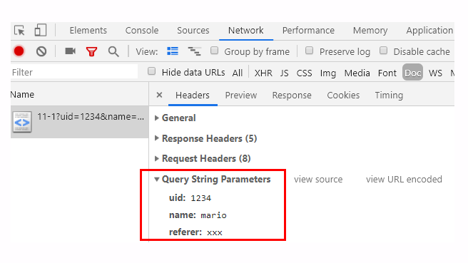
还可以再拿一个实际的 URI 来看一下，这个 URI 是某电商网站的一个商品查询 URI，比较复杂，但相信现在的你能够毫不费力地区分出里面的协议名、主机名、路径和查询参数。
https://search.jd.com/Search?keyword=openresty&enc=utf-8&qrst=1&rt=1&stop=1&vt=2&wq=openresty&psort=3&click=0
你也可以把这个 URI 输入到 Chrome 的地址栏里，再用开发者工具仔细检查它的组成部分。
URI 的完整格式
讲完了 query 参数，URI 就算完整了，HTTP 协议里用到的 URI 绝大多数都是这种形式。
不过必须要说的是，URI 还有一个“真正”的完整形态，如下图所示。
这个“真正”形态比基本形态多了两部分。
第一个多出的部分是协议名之后、主机名之前的身份信息“user:passwd@”，表示登录主机时的用户名和密码，但现在已经不推荐使用这种形式了（RFC7230），因为它把敏感信息以明文形式暴露出来，存在严重的安全隐患。
第二个多出的部分是查询参数后的片段标识符“#fragment”，它是 URI 所定位的资源内部的一个“锚点”或者说是“标签”，浏览器可以在获取资源后直接跳转到它指示的位置。
但片段标识符仅能由浏览器这样的客户端使用，服务器是看不到的。也就是说，浏览器永远不会把带“#fragment”的 URI 发送给服务器，服务器也永远不会用这种方式去处理资源的片段。
URI 的编码
刚才我们看到了，在 URI 里只能使用 ASCII 码，但如果要在 URI 里使用英语以外的汉语、日语等其他语言该怎么办呢？
还有，某些特殊的 URI，会在 path、query 里出现“@&?"等起界定符作用的字符，会导致 URI 解析错误，这时又该怎么办呢？
所以，URI 引入了编码机制，对于 ASCII 码以外的字符集和特殊字符做一个特殊的操作，把它们转换成与 URI 语义不冲突的形式。这在 RFC 规范里称为“escape”和“unescape”，俗称“转义”。
URI 转义的规则有点“简单粗暴”，直接把非 ASCII 码或特殊字符转换成十六进制字节值，然后前面再加上一个“%”。
例如，空格被转义成“%20”，“?”被转义成“%3F”。而中文、日文等则通常使用 UTF-8 编码后再转义，例如“银河”会被转义成“%E9%93%B6%E6%B2%B3”。
有了这个编码规则后，URI 就更加完美了，可以支持任意的字符集用任何语言来标记资源。
不过我们在浏览器的地址栏里通常是不会看到这些转义后的“乱码”的，这实际上是浏览器一种“友好”表现，隐藏了 URI 编码后的“丑陋一面”，不信你可以试试下面的这个 URI。
http://www.chrono.com:8080/11-1? 夸父逐日
先在 Chrome 的地址栏里输入这个 query 里含有中文的 URI，然后点击地址栏，把它再拷贝到其他的编辑器里，它就会“现出原形”：
http://www.chrono.com:8080/11-1?%E5%A4%B8%E7%88%B6%E9%80%90%E6%97%A5
小结
今天我们学习了网址也就是 URI 的知识，在这里小结一下今天的内容。
- URI 是用来唯一标记服务器上资源的一个字符串，通常也称为 URL；
- URI 通常由 scheme、host:port、path 和 query 四个部分组成，有的可以省略；
- scheme 叫“方案名”或者“协议名”，表示资源应该使用哪种协议来访问；
- “host:port”表示资源所在的主机名和端口号；
- path 标记资源所在的位置；
- query 表示对资源附加的额外要求；
- 在 URI 里对“@&/”等特殊字符和汉字必须要做编码，否则服务器收到 HTTP 报文后会无法正确处理。
课下作业
- HTTP 协议允许在在请求行里使用完整的 URI，但为什么浏览器没有这么做呢？
- URI 的查询参数和头字段很相似，都是 key-value 形式，都可以任意自定义，那么它们在使用时该如何区别呢？
欢迎你把自己的答案写在留言区，与我和其他同学一起讨论。如果你觉得有所收获，欢迎你把文章分享给你的朋友。
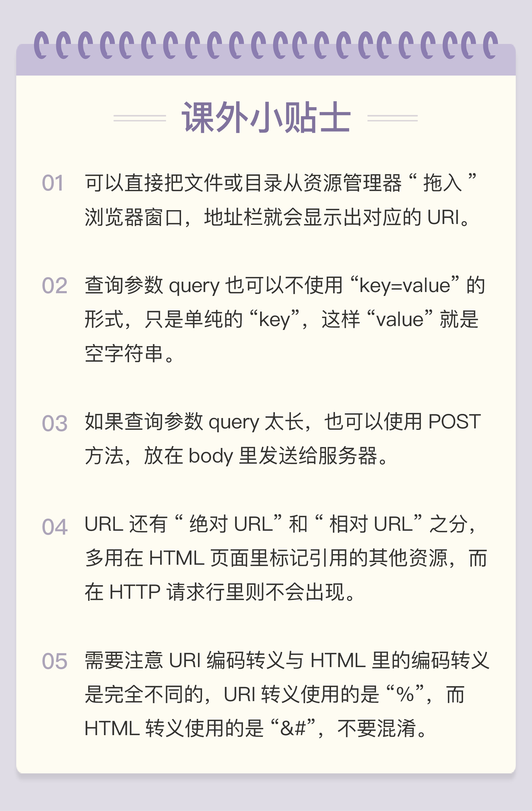
12 响应状态码该怎么用？
前两讲中，我们学习了 HTTP 报文里请求行的组成部分，包括请求方法和 URI。有了请求行，加上后面的头字段就形成了请求头，可以通过 TCP/IP 协议发送给服务器。
服务器收到请求报文，解析后需要进行处理，具体的业务逻辑多种多样，但最后必定是拼出一个响应报文发回客户端。
响应报文由响应头加响应体数据组成，响应头又由状态行和头字段构成。
我们先来复习一下状态行的结构，有三部分：
开头的 Version 部分是 HTTP 协议的版本号，通常是 HTTP/1.1，用处不是很大。
后面的 Reason 部分是原因短语，是状态码的简短文字描述，例如“OK”“Not Found”等等，也可以自定义。但它只是为了兼容早期的文本客户端而存在，提供的信息很有限，目前的大多数客户端都会忽略它。
所以，状态行里有用的就只剩下中间的状态码（Status Code）了。它是一个十进制数字，以代码的形式表示服务器对请求的处理结果，就像我们通常编写程序时函数返回的错误码一样。
不过你要注意，它的名字是“状态码”而不是“错误码”。也就是说，它的含义不仅是错误，更重要的意义在于表达 HTTP 数据处理的“状态”，客户端可以依据代码适时转换处理状态，例如继续发送请求、切换协议，重定向跳转等，有那么点 TCP 状态转换的意思。
状态码
目前 RFC 标准里规定的状态码是三位数，所以取值范围就是从 000 到 999。但如果把代码简单地从 000 开始顺序编下去就显得有点太“low”，不灵活、不利于扩展，所以状态码也被设计成有一定的格式。
RFC 标准把状态码分成了五类，用数字的第一位表示分类，而 0~99 不用，这样状态码的实际可用范围就大大缩小了，由 000~999 变成了 100~599。
这五类的具体含义是：
- 1××：提示信息，表示目前是协议处理的中间状态，还需要后续的操作；
- 2××：成功，报文已经收到并被正确处理；
- 3××：重定向，资源位置发生变动，需要客户端重新发送请求；
- 4××：客户端错误，请求报文有误，服务器无法处理；
- 5××：服务器错误，服务器在处理请求时内部发生了错误。
在 HTTP 协议中，正确地理解并应用这些状态码不是客户端或服务器单方的责任，而是双方共同的责任。
客户端作为请求的发起方，获取响应报文后，需要通过状态码知道请求是否被正确处理，是否要再次发送请求，如果出错了原因又是什么。这样才能进行下一步的动作，要么发送新请求，要么改正错误重发请求。
服务器端作为请求的接收方，也应该很好地运用状态码。在处理请求时，选择最恰当的状态码回复客户端，告知客户端处理的结果，指示客户端下一步应该如何行动。特别是在出错的时候，尽量不要简单地返 400、500 这样意思含糊不清的状态码。
目前 RFC 标准里总共有 41 个状态码，但状态码的定义是开放的，允许自行扩展。所以 Apache、Nginx 等 Web 服务器都定义了一些专有的状态码。如果你自己开发 Web 应用，也完全可以在不冲突的前提下定义新的代码。
在我们的实验环境里也可以对这些状态码做测试验证，访问 URI“/12-1”，用查询参数“code=xxx”来检查这些状态码的效果，服务器不仅会在状态行里显示状态码，还会在响应头里用自定义的“Expect-Code”字段输出这个代码。
例如，在 Chrome 里访问“http://www.chrono.com/12-1?code=405”的结果如下图。

接下来我就挑一些实际开发中比较有价值的状态码逐个详细介绍。
1××
1××类状态码属于提示信息，是协议处理的中间状态，实际能够用到的时候很少。
我们偶尔能够见到的是“101 Switching Protocols”。它的意思是客户端使用 Upgrade 头字段，要求在 HTTP 协议的基础上改成其他的协议继续通信，比如 WebSocket。而如果服务器也同意变更协议，就会发送状态码 101，但这之后的数据传输就不会再使用 HTTP 了。
2××
2××类状态码表示服务器收到并成功处理了客户端的请求，这也是客户端最愿意看到的状态码。
“200 OK”是最常见的成功状态码，表示一切正常，服务器如客户端所期望的那样返回了处理结果，如果是非 HEAD 请求，通常在响应头后都会有 body 数据。
“204 No Content”是另一个很常见的成功状态码，它的含义与“200 OK”基本相同，但响应头后没有 body 数据。所以对于 Web 服务器来说，正确地区分 200 和 204 是很必要的。
“206 Partial Content”是 HTTP 分块下载或断点续传的基础，在客户端发送“范围请求”、要求获取资源的部分数据时出现，它与 200 一样，也是服务器成功处理了请求，但 body 里的数据不是资源的全部，而是其中的一部分。
状态码 206 通常还会伴随着头字段“Content-Range”，表示响应报文里 body 数据的具体范围，供客户端确认，例如“Content-Range: bytes 0-99/2000”，意思是此次获取的是总计 2000 个字节的前 100 个字节。
3××
3××类状态码表示客户端请求的资源发生了变动，客户端必须用新的 URI 重新发送请求获取资源，也就是通常所说的“重定向”，包括著名的 301、302 跳转。
“301 Moved Permanently”俗称“永久重定向”，含义是此次请求的资源已经不存在了，需要改用改用新的 URI 再次访问。
与它类似的是“302 Found”，曾经的描述短语是“Moved Temporarily”，俗称“临时重定向”，意思是请求的资源还在，但需要暂时用另一个 URI 来访问。
301 和 302 都会在响应头里使用字段Location指明后续要跳转的 URI，最终的效果很相似，浏览器都会重定向到新的 URI。两者的根本区别在于语义，一个是“永久”，一个是“临时”，所以在场景、用法上差距很大。
比如，你的网站升级到了 HTTPS，原来的 HTTP 不打算用了，这就是“永久”的，所以要配置 301 跳转，把所有的 HTTP 流量都切换到 HTTPS。
再比如，今天夜里网站后台要系统维护，服务暂时不可用，这就属于“临时”的，可以配置成 302 跳转，把流量临时切换到一个静态通知页面，浏览器看到这个 302 就知道这只是暂时的情况，不会做缓存优化，第二天还会访问原来的地址。
“304 Not Modified” 是一个比较有意思的状态码，它用于 If-Modified-Since 等条件请求，表示资源未修改，用于缓存控制。它不具有通常的跳转含义，但可以理解成“重定向已到缓存的文件”（即“缓存重定向”）。
301、302 和 304 分别涉及了 HTTP 协议里重要的“重定向跳转”和“缓存控制”，在之后的课程中我还会细讲。
4××
4××类状态码表示客户端发送的请求报文有误，服务器无法处理，它就是真正的“错误码”含义了。
“400 Bad Request”是一个通用的错误码，表示请求报文有错误，但具体是数据格式错误、缺少请求头还是 URI 超长它没有明确说，只是一个笼统的错误，客户端看到 400 只会是“一头雾水”“不知所措”。所以，在开发 Web 应用时应当尽量避免给客户端返回 400，而是要用其他更有明确含义的状态码。
“403 Forbidden”实际上不是客户端的请求出错，而是表示服务器禁止访问资源。原因可能多种多样，例如信息敏感、法律禁止等，如果服务器友好一点，可以在 body 里详细说明拒绝请求的原因，不过现实中通常都是直接给一个“闭门羹”。
“404 Not Found”可能是我们最常看见也是最不愿意看到的一个状态码，它的原意是资源在本服务器上未找到，所以无法提供给客户端。但现在已经被“用滥了”，只要服务器“不高兴”就可以给出个 404，而我们也无从得知后面到底是真的未找到，还是有什么别的原因，某种程度上它比 403 还要令人讨厌。
4××里剩下的一些代码较明确地说明了错误的原因，都很好理解，开发中常用的有：
- 405 Method Not Allowed：不允许使用某些方法操作资源，例如不允许 POST 只能 GET；
- 406 Not Acceptable：资源无法满足客户端请求的条件，例如请求中文但只有英文；
- 408 Request Timeout：请求超时，服务器等待了过长的时间；
- 409 Conflict：多个请求发生了冲突，可以理解为多线程并发时的竞态；
- 413 Request Entity Too Large：请求报文里的 body 太大；
- 414 Request-URI Too Long：请求行里的 URI 太大；
- 429 Too Many Requests：客户端发送了太多的请求，通常是由于服务器的限连策略；
- 431 Request Header Fields Too Large：请求头某个字段或总体太大；
5××
5××类状态码表示客户端请求报文正确，但服务器在处理时内部发生了错误，无法返回应有的响应数据，是服务器端的“错误码”。
“500 Internal Server Error”与 400 类似，也是一个通用的错误码，服务器究竟发生了什么错误我们是不知道的。不过对于服务器来说这应该算是好事，通常不应该把服务器内部的详细信息，例如出错的函数调用栈告诉外界。虽然不利于调试，但能够防止黑客的窥探或者分析。
“501 Not Implemented”表示客户端请求的功能还不支持，这个错误码比 500 要“温和”一些，和“即将开业，敬请期待”的意思差不多，不过具体什么时候“开业”就不好说了。
“502 Bad Gateway”通常是服务器作为网关或者代理时返回的错误码，表示服务器自身工作正常，访问后端服务器时发生了错误，但具体的错误原因也是不知道的。
“503 Service Unavailable”表示服务器当前很忙，暂时无法响应服务，我们上网时有时候遇到的“网络服务正忙，请稍后重试”的提示信息就是状态码 503。
503 是一个“临时”的状态，很可能过几秒钟后服务器就不那么忙了，可以继续提供服务，所以 503 响应报文里通常还会有一个“Retry-After”字段，指示客户端可以在多久以后再次尝试发送请求。
小结
- 状态码在响应报文里表示了服务器对请求的处理结果；
- 状态码后的原因短语是简单的文字描述，可以自定义；
- 状态码是十进制的三位数，分为五类，从 100 到 599；
- 2××类状态码表示成功，常用的有 200、204、206；
- 3××类状态码表示重定向，常用的有 301、302、304；
- 4××类状态码表示客户端错误，常用的有 400、403、404；
- 5××类状态码表示服务器错误，常用的有 500、501、502、503。
课下作业
- 你在开发 HTTP 客户端，收到了一个非标准的状态码，比如 4××、5××，应当如何应对呢？
- 你在开发 HTTP 服务器，处理请求时发现报文里缺了一个必需的 query 参数，应该如何告知客户端错误原因呢？
欢迎你把自己的答案写在留言区，与我和其他同学一起讨论。如果你觉得有所收获，欢迎你把文章分享给你的朋友。

13 HTTP有哪些特点？
通过“基础篇”前几讲的学习，你应该已经知道了 HTTP 协议的基本知识，了解它的报文结构，请求头、响应头以及内部的请求方法、URI 和状态码等细节。
你会不会有种疑惑：“HTTP 协议好像也挺简单的啊，凭什么它就能统治互联网这么多年呢？”
所以接下来的这两讲，我会跟你聊聊 HTTP 协议的特点、优点和缺点。既要看到它好的一面，也要正视它不好的一面，只有全方位、多角度了解 HTTP，才能实现“扬长避短”，更好地利用 HTTP。
今天这节课主要说的是 HTTP 协议的特点，但不会讲它们的好坏，这些特点即有可能是优点，也有可能是缺点，你可以边听边思考。

灵活可扩展
首先， HTTP 协议是一个“灵活可扩展”的传输协议。
HTTP 协议最初诞生的时候就比较简单，本着开放的精神只规定了报文的基本格式，比如用空格分隔单词，用换行分隔字段，“header+body”等，报文里的各个组成部分都没有做严格的语法语义限制，可以由开发者任意定制。
所以，HTTP 协议就随着互联网的发展一同成长起来了。在这个过程中，HTTP 协议逐渐增加了请求方法、版本号、状态码、头字段等特性。而 body 也不再限于文本形式的 TXT 或 HTML，而是能够传输图片、音频视频等任意数据，这些都是源于它的“灵活可扩展”的特点。
而那些 RFC 文档，实际上也可以理解为是对已有扩展的“承认和标准化”，实现了“从实践中来，到实践中去”的良性循环。
也正是因为这个特点，HTTP 才能在三十年的历史长河中“屹立不倒”，从最初的低速实验网络发展到现在的遍布全球的高速互联网，始终保持着旺盛的生命力。
可靠传输
第二个特点， HTTP 协议是一个“可靠”的传输协议。
这个特点显而易见，因为 HTTP 协议是基于 TCP/IP 的，而 TCP 本身是一个“可靠”的传输协议，所以 HTTP 自然也就继承了这个特性，能够在请求方和应答方之间“可靠”地传输数据。
它的具体做法与 TCP/UDP 差不多，都是对实际传输的数据（entity）做了一层包装，加上一个头，然后调用 Socket API，通过 TCP/IP 协议栈发送或者接收。
不过我们必须正确地理解“可靠”的含义，HTTP 并不能 100% 保证数据一定能够发送到另一端，在网络繁忙、连接质量差等恶劣的环境下，也有可能收发失败。“可靠”只是向使用者提供了一个“承诺”，会在下层用多种手段“尽量”保证数据的完整送达。
当然，如果遇到光纤被意外挖断这样的极端情况，即使是神仙也不能发送成功。所以，“可靠”传输是指在网络基本正常的情况下数据收发必定成功，借用运维里的术语，大概就是“3 个 9”或者“4 个 9”的程度吧。
应用层协议
第三个特点，HTTP 协议是一个应用层的协议。
这个特点也是不言自明的，但却很重要。
在 TCP/IP 诞生后的几十年里，虽然出现了许多的应用层协议，但它们都仅关注很小的应用领域，局限在很少的应用场景。例如 FTP 只能传输文件、SMTP 只能发送邮件、SSH 只能远程登录等，在通用的数据传输方面“完全不能打”。
所以 HTTP 凭借着可携带任意头字段和实体数据的报文结构，以及连接控制、缓存代理等方便易用的特性，一出现就“技压群雄”，迅速成为了应用层里的“明星”协议。只要不太苛求性能，HTTP 几乎可以传递一切东西，满足各种需求，称得上是一个“万能”的协议。
套用一个网上流行的段子，HTTP 完全可以用开玩笑的口吻说：“不要误会，我不是针对 FTP，我是说在座的应用层各位，都是垃圾。”
请求 - 应答
第四个特点，HTTP 协议使用的是请求 - 应答通信模式。
这个请求 - 应答模式是 HTTP 协议最根本的通信模型，通俗来讲就是“一发一收”“有来有去”，就像是写代码时的函数调用，只要填好请求头里的字段，“调用”后就会收到答复。
请求 - 应答模式也明确了 HTTP 协议里通信双方的定位，永远是请求方先发起连接和请求，是主动的，而应答方只有在收到请求后才能答复，是被动的，如果没有请求时不会有任何动作。
当然，请求方和应答方的角色也不是绝对的，在浏览器 - 服务器的场景里，通常服务器都是应答方，但如果将它用作代理连接后端服务器，那么它就可能同时扮演请求方和应答方的角色。
HTTP 的请求 - 应答模式也恰好契合了传统的 C/S（Client/Server）系统架构，请求方作为客户端、应答方作为服务器。所以，随着互联网的发展就出现了 B/S（Browser/Server）架构，用轻量级的浏览器代替笨重的客户端应用，实现零维护的“瘦”客户端，而服务器则摈弃私有通信协议转而使用 HTTP 协议。
此外，请求 - 应答模式也完全符合 RPC（Remote Procedure Call）的工作模式，可以把 HTTP 请求处理封装成远程函数调用，导致了 WebService、RESTful 和 gPRC 等的出现。
无状态
第五个特点，HTTP 协议是无状态的。
这个所谓的“状态”应该怎么理解呢？
“状态”其实就是客户端或者服务器里保存的一些数据或者标志，记录了通信过程中的一些变化信息。
你一定知道，TCP 协议是有状态的，一开始处于 CLOSED 状态，连接成功后是 ESTABLISHED 状态，断开连接后是 FIN-WAIT 状态，最后又是 CLOSED 状态。
这些“状态”就需要 TCP 在内部用一些数据结构去维护，可以简单地想象成是个标志量，标记当前所处的状态，例如 0 是 CLOSED，2 是 ESTABLISHED 等等。
再来看 HTTP，那么对比一下 TCP 就看出来了，在整个协议里没有规定任何的“状态”，客户端和服务器永远是处在一种“无知”的状态。建立连接前两者互不知情，每次收发的报文也都是互相独立的，没有任何的联系。收发报文也不会对客户端或服务器产生任何影响，连接后也不会要求保存任何信息。
“无状态”形象地来说就是“没有记忆能力”。比如，浏览器发了一个请求，说“我是小明，请给我 A 文件。”，服务器收到报文后就会检查一下权限，看小明确实可以访问 A 文件，于是把文件发回给浏览器。接着浏览器还想要 B 文件，但服务器不会记录刚才的请求状态，不知道第二个请求和第一个请求是同一个浏览器发来的，所以浏览器必须还得重复一次自己的身份才行：“我是刚才的小明，请再给我 B 文件。”
我们可以再对比一下 UDP 协议，不过它是无连接也无状态的，顺序发包乱序收包，数据包发出去后就不管了，收到后也不会顺序整理。而 HTTP 是有连接无状态，顺序发包顺序收包，按照收发的顺序管理报文。
但不要忘了 HTTP 是“灵活可扩展”的，虽然标准里没有规定“状态”，但完全能够在协议的框架里给它“打个补丁”，增加这个特性。
其他特点
除了以上的五大特点，其实 HTTP 协议还可以列出非常多的特点，例如传输的实体数据可缓存可压缩、可分段获取数据、支持身份认证、支持国际化语言等。但这些并不能算是 HTTP 的基本特点，因为这都是由第一个“灵活可扩展”的特点所衍生出来的。
小结
- HTTP 是灵活可扩展的，可以任意添加头字段实现任意功能；
- HTTP 是可靠传输协议，基于 TCP/IP 协议“尽量”保证数据的送达；
- HTTP 是应用层协议，比 FTP、SSH 等更通用功能更多，能够传输任意数据；
- HTTP 使用了请求 - 应答模式，客户端主动发起请求，服务器被动回复请求；
- HTTP 本质上是无状态的，每个请求都是互相独立、毫无关联的，协议不要求客户端或服务器记录请求相关的信息。
课下作业
- 就如同开头我讲的那样，你能说一下今天列出的这些 HTTP 的特点中哪些是优点，哪些是缺点吗？
- 不同的应用场合有不同的侧重方面，你觉得哪个特点对你来说是最重要的呢？
欢迎你把自己的答案写在留言区，与我和其他同学一起讨论。如果你觉得有所收获，欢迎你把文章分享给你的朋友。

14 HTTP有哪些优点？又有哪些缺点？
上一讲我介绍了 HTTP 的五个基本特点，这一讲要说的则是它的优点和缺点。其实这些也应该算是 HTTP 的特点，但这一讲会更侧重于评价它们的优劣和好坏。
上一讲我也留了两道课下作业，不知道你有没有认真思考过，今天可以一起来看看你的答案与我的观点想法是否相符，共同探讨。
不过在正式开讲之前我还要提醒你一下，今天的讨论范围仅限于 HTTP/1.1，所说的优点和缺点也仅针对 HTTP/1.1。实际上，专栏后续要讲的 HTTPS 和 HTTP/2 都是对 HTTP/1.1 优点的发挥和缺点的完善。
简单、灵活、易于扩展
首先，HTTP 最重要也是最突出的优点是“简单、灵活、易于扩展”。
初次接触 HTTP 的人都会认为，HTTP 协议是很“简单”的，基本的报文格式就是“header+body”，头部信息也是简单的文本格式，用的也都是常见的英文单词，即使不去看 RFC 文档，只靠猜也能猜出个“八九不离十”。
可不要小看了“简单”这个优点，它不仅降低了学习和使用的门槛，能够让更多的人研究和开发 HTTP 应用，而且我在[第 1 讲]时就说过，“简单”蕴含了进化和扩展的可能性，所谓“少即是多”，“把简单的系统变复杂”，要比“把复杂的系统变简单”容易得多**。**
所以，在“简单”这个最基本的设计理念之下，HTTP 协议又多出了“灵活和易于扩展”的优点。
“灵活和易于扩展”实际上是一体的，它们互为表里、相互促进，因为“灵活”所以才会“易于扩展”，而“易于扩展”又反过来让 HTTP 更加灵活，拥有更强的表现能力。
HTTP 协议里的请求方法、URI、状态码、原因短语、头字段等每一个核心组成要素都没有被“写死”，允许开发者任意定制、扩充或解释，给予了浏览器和服务器最大程度的信任和自由，也正好符合了互联网“自由与平等”的精神——缺什么功能自己加个字段或者错误码什么的补上就是了。
“请勿跟踪”所使用的头字段 DNT（Do Not Track）就是一个很好的例子。它最早由 Mozilla 提出，用来保护用户隐私，防止网站监测追踪用户的偏好。不过可惜的是 DNT 从推出至今有差不多七八年的历史，但很多网站仍然选择“无视”DNT。虽然 DNT 基本失败了，但这也正说明 HTTP 协议是“灵活自由的”，不会受单方面势力的压制。
“灵活、易于扩展”的特性还表现在 HTTP 对“可靠传输”的定义上，它不限制具体的下层协议，不仅可以使用 TCP、UNIX Domain Socket，还可以使用 SSL/TLS，甚至是基于 UDP 的 QUIC，下层可以随意变化，而上层的语义则始终保持稳定。
应用广泛、环境成熟
HTTP 协议的另一大优点是“应用广泛”，软硬件环境都非常成熟。
随着互联网特别是移动互联网的普及，HTTP 的触角已经延伸到了世界的每一个角落：从简单的 Web 页面到复杂的 JSON、XML 数据，从台式机上的浏览器到手机上的各种 APP，从看新闻、泡论坛到购物、理财、“吃鸡”，你很难找到一个没有使用 HTTP 的地方。
不仅在应用领域，在开发领域 HTTP 协议也得到了广泛的支持。它并不限定某种编程语言或者操作系统，所以天然具有“跨语言、跨平台”的优越性。而且，因为本身的简单特性很容易实现，所以几乎所有的编程语言都有 HTTP 调用库和外围的开发测试工具，这一点我觉得就不用再举例了吧，你可能比我更熟悉。
HTTP 广泛应用的背后还有许多硬件基础设施支持，各个互联网公司和传统行业公司都不遗余力地“触网”，购买服务器开办网站，建设数据中心、CDN 和高速光纤，持续地优化上网体验，让 HTTP 运行的越来越顺畅。
“应用广泛”的这个优点也就决定了：无论是创业者还是求职者，无论是做网站服务器还是写应用客户端，HTTP 协议都是必须要掌握的基本技能。
无状态
看过了两个优点，我们再来看看一把“双刃剑”，也就是上一讲中说到的“无状态”，它对于 HTTP 来说既是优点也是缺点。
“无状态”有什么好处呢？
因为服务器没有“记忆能力”，所以就不需要额外的资源来记录状态信息，不仅实现上会简单一些，而且还能减轻服务器的负担，能够把更多的 CPU 和内存用来对外提供服务。
而且，“无状态”也表示服务器都是相同的，没有“状态”的差异，所以可以很容易地组成集群，让负载均衡把请求转发到任意一台服务器，不会因为状态不一致导致处理出错，使用“堆机器”的“笨办法”轻松实现高并发高可用。
那么，“无状态”又有什么坏处呢？
既然服务器没有“记忆能力”，它就无法支持需要连续多个步骤的“事务”操作。例如电商购物，首先要登录，然后添加购物车，再下单、结算、支付，这一系列操作都需要知道用户的身份才行，但“无状态”服务器是不知道这些请求是相互关联的，每次都得问一遍身份信息，不仅麻烦，而且还增加了不必要的数据传输量。
所以，HTTP 协议最好是既“无状态”又“有状态”，不过还真有“鱼和熊掌”两者兼得这样的好事，这就是“小甜饼”Cookie 技术（第 19 讲）。
明文
HTTP 协议里还有一把优缺点一体的“双刃剑”，就是明文传输。
“明文”意思就是协议里的报文（准确地说是 header 部分）不使用二进制数据，而是用简单可阅读的文本形式。
对比 TCP、UDP 这样的二进制协议，它的优点显而易见，不需要借助任何外部工具，用浏览器、Wireshark 或者 tcpdump 抓包后，直接用肉眼就可以很容易地查看或者修改，为我们的开发调试工作带来极大的便利。
当然，明文的缺点也是一样显而易见，HTTP 报文的所有信息都会暴露在“光天化日之下”，在漫长的传输链路的每一个环节上都毫无隐私可言，不怀好意的人只要侵入了这个链路里的某个设备，简单地“旁路”一下流量，就可以实现对通信的窥视。
你有没有听说过“免费 WiFi 陷阱”之类的新闻呢？
黑客就是利用了 HTTP 明文传输的缺点，在公共场所架设一个 WiFi 热点开始“钓鱼”，诱骗网民上网。一旦你连上了这个 WiFi 热点，所有的流量都会被截获保存，里面如果有银行卡号、网站密码等敏感信息的话那就危险了，黑客拿到了这些数据就可以冒充你为所欲为。
不安全
与“明文”缺点相关但不完全等同的另一个缺点是“不安全”。
安全有很多的方面，明文只是“机密”方面的一个缺点，在“身份认证”和“完整性校验”这两方面 HTTP 也是欠缺的。
“身份认证”简单来说就是“怎么证明你就是你”。在现实生活中比较好办，你可以拿出身份证、驾照或者护照，上面有照片和权威机构的盖章，能够证明你的身份。
但在虚拟的网络世界里这却是个麻烦事。HTTP 没有提供有效的手段来确认通信双方的真实身份。虽然协议里有一个基本的认证机制，但因为刚才所说的明文传输缺点，这个机制几乎可以说是“纸糊的”，非常容易被攻破。如果仅使用 HTTP 协议，很可能你会连到一个页面一模一样但却是个假冒的网站，然后再被“钓”走各种私人信息。
HTTP 协议也不支持“完整性校验”，数据在传输过程中容易被窜改而无法验证真伪。
比如，你收到了一条银行用 HTTP 发来的消息：“小明向你转账一百元”，你无法知道小明是否真的就只转了一百元，也许他转了一千元或者五十元，但被黑客窜改成了一百元，真实情况到底是什么样子 HTTP 协议没有办法给你答案。
虽然银行可以用 MD5、SHA1 等算法给报文加上数字摘要，但还是因为“明文”这个致命缺点，黑客可以连同摘要一同修改，最终还是判断不出报文是否被窜改。
为了解决 HTTP 不安全的缺点，所以就出现了 HTTPS，这个我们以后再说。
性能
最后我们来谈谈 HTTP 的性能，可以用六个字来概括：“不算差，不够好”。
HTTP 协议基于 TCP/IP，并且使用了“请求 - 应答”的通信模式，所以性能的关键就在这两点上。
必须要说的是，TCP 的性能是不差的，否则也不会纵横互联网江湖四十余载了，而且它已经被研究的很透，集成在操作系统内核里经过了细致的优化，足以应付大多数的场景。
只可惜如今的江湖已经不是从前的江湖，现在互联网的特点是移动和高并发，不能保证稳定的连接质量，所以在 TCP 层面上 HTTP 协议有时候就会表现的不够好。
而“请求 - 应答”模式则加剧了 HTTP 的性能问题，这就是著名的“队头阻塞”（Head-of-line blocking），当顺序发送的请求序列中的一个请求因为某种原因被阻塞时，在后面排队的所有请求也一并被阻塞，会导致客户端迟迟收不到数据。
为了解决这个问题，就诞生出了一个专门的研究课题“Web 性能优化”，HTTP 官方标准里就有“缓存”一章（RFC7234），非官方的“花招”就更多了，例如切图、数据内嵌与合并，域名分片、JavaScript“黑科技”等等。
不过现在已经有了终极解决方案：HTTP/2 和 HTTP/3，后面我也会展开来讲。
小结
- HTTP 最大的优点是简单、灵活和易于扩展；
- HTTP 拥有成熟的软硬件环境，应用的非常广泛，是互联网的基础设施；
- HTTP 是无状态的，可以轻松实现集群化，扩展性能，但有时也需要用 Cookie 技术来实现“有状态”；
- HTTP 是明文传输，数据完全肉眼可见，能够方便地研究分析，但也容易被窃听；
- HTTP 是不安全的，无法验证通信双方的身份，也不能判断报文是否被窜改；
- HTTP 的性能不算差，但不完全适应现在的互联网，还有很大的提升空间。
虽然 HTTP 免不了这样那样的缺点，但你也不要怕，别忘了它有一个最重要的“灵活可扩展”的优点，所有的缺点都可以在这个基础上想办法解决，接下来的“进阶篇”和“安全篇”就会讲到。
课下作业
- 你最喜欢的 HTTP 优点是哪个？最不喜欢的缺点又是哪个？为什么？
- 你能够再进一步扩展或补充论述今天提到这些优点或缺点吗？
- 你能试着针对这些缺点提出一些自己的解决方案吗？
欢迎你把自己的答案写在留言区，与我和其他同学一起讨论。如果你觉得有所收获，欢迎你把文章分享给你的朋友。
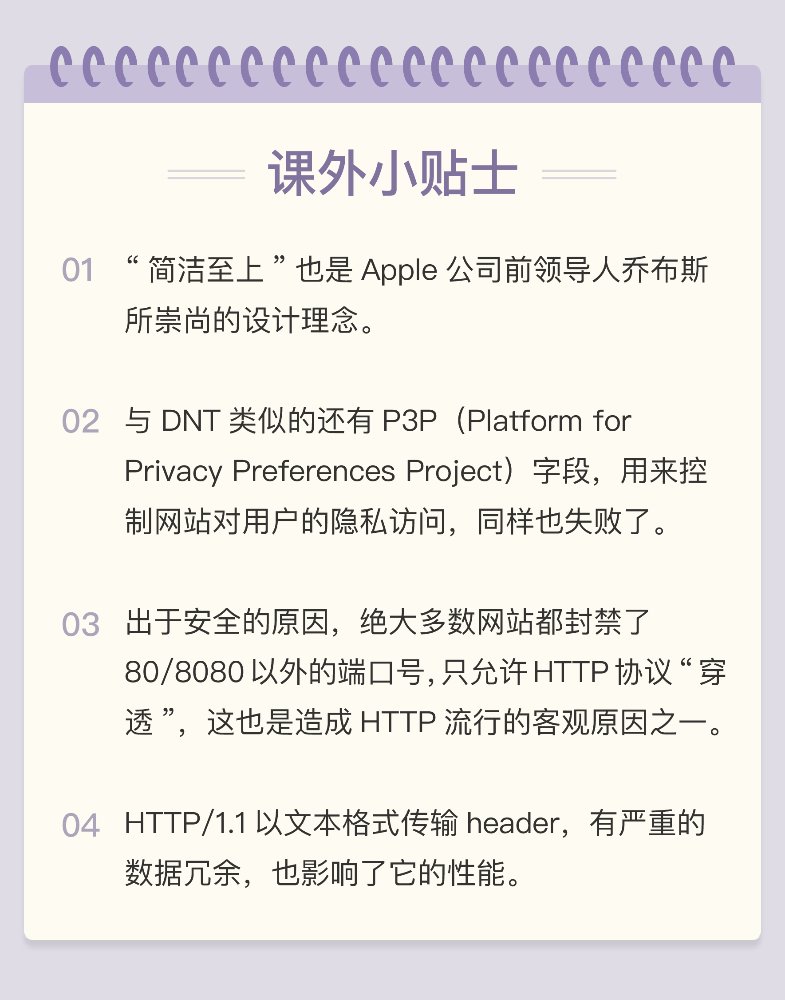
15 海纳百川：HTTP的实体数据
你好，我是 Chrono。
今天我要与你分享的话题是“海纳百川：HTTP 的实体数据”。
这一讲是“进阶篇”的第一讲，从今天开始，我会用连续的 8 讲的篇幅来详细解析 HTTP 协议里的各种头字段，包括定义、功能、使用方式、注意事项等等。学完了这些课程，你就可以完全掌握 HTTP 协议。
在前面的“基础篇”里我们了解了 HTTP 报文的结构，知道一个 HTTP 报文是由“header+body”组成的。但那时我们主要研究的是 header，没有涉及到 body。所以，“进阶篇”的第一讲就从 HTTP 的 body 谈起。
数据类型与编码
在 TCP/IP 协议栈里，传输数据基本上都是“header+body”的格式。但 TCP、UDP 因为是传输层的协议，它们不会关心 body 数据是什么，只要把数据发送到对方就算是完成了任务。
而 HTTP 协议则不同，它是应用层的协议，数据到达之后工作只能说是完成了一半，还必须要告诉上层应用这是什么数据才行，否则上层应用就会“不知所措”。
你可以设想一下，假如 HTTP 没有告知数据类型的功能，服务器把“一大坨”数据发给了浏览器，浏览器看到的是一个“黑盒子”，这时候该怎么办呢？
当然，它可以“猜”。因为很多数据都是有固定格式的，所以通过检查数据的前几个字节也许就能知道这是个 GIF 图片、或者是个 MP3 音乐文件，但这种方式无疑十分低效，而且有很大几率会检查不出来文件类型。
幸运的是，早在 HTTP 协议诞生之前就已经有了针对这种问题的解决方案，不过它是用在电子邮件系统里的，让电子邮件可以发送 ASCII 码以外的任意数据，方案的名字叫做“多用途互联网邮件扩展”（Multipurpose Internet Mail Extensions），简称为 MIME。
MIME 是一个很大的标准规范，但 HTTP 只“顺手牵羊”取了其中的一部分，用来标记 body 的数据类型，这就是我们平常总能听到的“MIME type”。
MIME 把数据分成了八大类，每个大类下再细分出多个子类，形式是“type/subtype”的字符串，巧得很，刚好也符合了 HTTP 明文的特点，所以能够很容易地纳入 HTTP 头字段里。
这里简单列举一下在 HTTP 里经常遇到的几个类别：
- text：即文本格式的可读数据，我们最熟悉的应该就是 text/html 了，表示超文本文档，此外还有纯文本 text/plain、样式表 text/css 等。
- image：即图像文件，有 image/gif、image/jpeg、image/png 等。
- audio/video：音频和视频数据，例如 audio/mpeg、video/mp4 等。
- application：数据格式不固定，可能是文本也可能是二进制，必须由上层应用程序来解释。常见的有 application/json，application/javascript、application/pdf 等，另外，如果实在是不知道数据是什么类型，像刚才说的“黑盒”，就会是 application/octet-stream，即不透明的二进制数据。
但仅有 MIME type 还不够，因为 HTTP 在传输时为了节约带宽，有时候还会压缩数据，为了不要让浏览器继续“猜”，还需要有一个“Encoding type”，告诉数据是用的什么编码格式，这样对方才能正确解压缩，还原出原始的数据。
比起 MIME type 来说，Encoding type 就少了很多，常用的只有下面三种：
- gzip：GNU zip 压缩格式，也是互联网上最流行的压缩格式；
- deflate：zlib（deflate）压缩格式，流行程度仅次于 gzip；
- br：一种专门为 HTTP 优化的新压缩算法（Brotli）。
数据类型使用的头字段
有了 MIME type 和 Encoding type，无论是浏览器还是服务器就都可以轻松识别出 body 的类型，也就能够正确处理数据了。
HTTP 协议为此定义了两个 Accept 请求头字段和两个 Content 实体头字段，用于客户端和服务器进行“内容协商”。也就是说，客户端用 Accept 头告诉服务器希望接收什么样的数据，而服务器用 Content 头告诉客户端实际发送了什么样的数据。
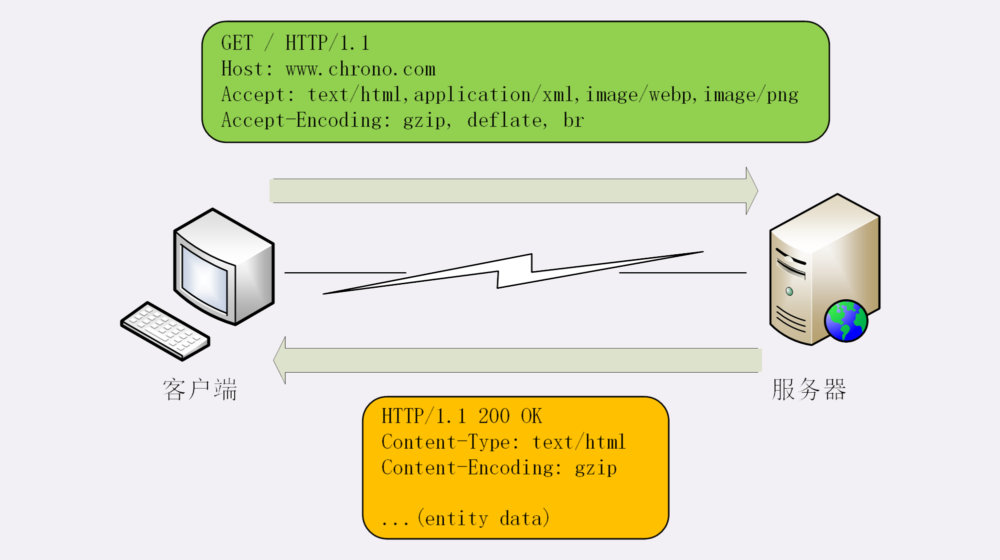
Accept字段标记的是客户端可理解的 MIME type，可以用“,”做分隔符列出多个类型，让服务器有更多的选择余地，例如下面的这个头：
Accept: text/html,application/xml,image/webp,image/png
这就是告诉服务器：“我能够看懂 HTML、XML 的文本，还有 webp 和 png 的图片，请给我这四类格式的数据”。
相应的，服务器会在响应报文里用头字段Content-Type告诉实体数据的真实类型：
Content-Type: text/html
Content-Type: image/png
这样浏览器看到报文里的类型是“text/html”就知道是 HTML 文件，会调用排版引擎渲染出页面，看到“image/png”就知道是一个 PNG 文件，就会在页面上显示出图像。
Accept-Encoding字段标记的是客户端支持的压缩格式，例如上面说的 gzip、deflate 等，同样也可以用“,”列出多个，服务器可以选择其中一种来压缩数据，实际使用的压缩格式放在响应头字段Content-Encoding里。
Accept-Encoding: gzip, deflate, br
Content-Encoding: gzip
不过这两个字段是可以省略的，如果请求报文里没有 Accept-Encoding 字段，就表示客户端不支持压缩数据；如果响应报文里没有 Content-Encoding 字段，就表示响应数据没有被压缩。
语言类型与编码
MIME type 和 Encoding type 解决了计算机理解 body 数据的问题，但互联网遍布全球，不同国家不同地区的人使用了很多不同的语言，虽然都是 text/html，但如何让浏览器显示出每个人都可理解可阅读的语言文字呢？
这实际上就是“国际化”的问题。HTTP 采用了与数据类型相似的解决方案，又引入了两个概念：语言类型与字符集。
所谓的“语言类型”就是人类使用的自然语言，例如英语、汉语、日语等，而这些自然语言可能还有下属的地区性方言，所以在需要明确区分的时候也要使用“type-subtype”的形式，不过这里的格式与数据类型不同，分隔符不是“/”，而是“-”。
举几个例子：en 表示任意的英语，en-US 表示美式英语，en-GB 表示英式英语，而 zh-CN 就表示我们最常使用的汉语。
关于自然语言的计算机处理还有一个更麻烦的东西叫做“字符集”。
在计算机发展的早期，各个国家和地区的人们“各自为政”，发明了许多字符编码方式来处理文字，比如英语世界用的 ASCII、汉语世界用的 GBK、BIG5，日语世界用的 Shift_JIS 等。同样的一段文字，用一种编码显示正常，换另一种编码后可能就会变得一团糟。
所以后来就出现了 Unicode 和 UTF-8，把世界上所有的语言都容纳在一种编码方案里，UTF-8 也成为了互联网上的标准字符集。
语言类型使用的头字段
同样的，HTTP 协议也使用 Accept 请求头字段和 Content 实体头字段，用于客户端和服务器就语言与编码进行“内容协商”。
Accept-Language字段标记了客户端可理解的自然语言，也允许用“,”做分隔符列出多个类型，例如：
Accept-Language: zh-CN, zh, en
这个请求头会告诉服务器：“最好给我 zh-CN 的汉语文字，如果没有就用其他的汉语方言，如果还没有就给英文”。
相应的，服务器应该在响应报文里用头字段Content-Language告诉客户端实体数据使用的实际语言类型：
Content-Language: zh-CN
字符集在 HTTP 里使用的请求头字段是Accept-Charset，但响应头里却没有对应的 Content-Charset，而是在Content-Type字段的数据类型后面用“charset=xxx”来表示，这点需要特别注意。
例如，浏览器请求 GBK 或 UTF-8 的字符集，然后服务器返回的是 UTF-8 编码，就是下面这样：
Accept-Charset: gbk, utf-8
Content-Type: text/html; charset=utf-8
不过现在的浏览器都支持多种字符集，通常不会发送 Accept-Charset，而服务器也不会发送 Content-Language，因为使用的语言完全可以由字符集推断出来，所以在请求头里一般只会有 Accept-Language 字段，响应头里只会有 Content-Type 字段。

内容协商的质量值
在 HTTP 协议里用 Accept、Accept-Encoding、Accept-Language 等请求头字段进行内容协商的时候，还可以用一种特殊的“q”参数表示权重来设定优先级，这里的“q”是“quality factor”的意思。
权重的最大值是 1，最小值是 0.01，默认值是 1，如果值是 0 就表示拒绝。具体的形式是在数据类型或语言代码后面加一个“;”，然后是“q=value”。
这里要提醒的是“;”的用法，在大多数编程语言里“;”的断句语气要强于“,”，而在 HTTP 的内容协商里却恰好反了过来，“;”的意义是小于“,”的。
例如下面的 Accept 字段：
Accept: text/html,application/xml;q=0.9,*/*;q=0.8
它表示浏览器最希望使用的是 HTML 文件，权重是 1，其次是 XML 文件，权重是 0.9，最后是任意数据类型，权重是 0.8。服务器收到请求头后，就会计算权重，再根据自己的实际情况优先输出 HTML 或者 XML。
内容协商的结果
内容协商的过程是不透明的，每个 Web 服务器使用的算法都不一样。但有的时候，服务器会在响应头里多加一个Vary字段，记录服务器在内容协商时参考的请求头字段，给出一点信息，例如：
Vary: Accept-Encoding,User-Agent,Accept
这个 Vary 字段表示服务器依据了 Accept-Encoding、User-Agent 和 Accept 这三个头字段，然后决定了发回的响应报文。
Vary 字段可以认为是响应报文的一个特殊的“版本标记”。每当 Accept 等请求头变化时，Vary 也会随着响应报文一起变化。也就是说，同一个 URI 可能会有多个不同的“版本”，主要用在传输链路中间的代理服务器实现缓存服务，这个之后讲“HTTP 缓存”时还会再提到。
动手实验
上面讲完了理论部分，接下来就是实际动手操作了。可以用我们的实验环境，在 www 目录下有一个 mime 目录，里面预先存放了几个文件，可以用 URI“/15-1?name=file”的形式访问，例如：
http://www.chrono.com/15-1?name=a.json
http://www.chrono.com/15-1?name=a.xml
在 Chrome 里打开开发者工具，就能够看到 Accept 和 Content 头：

你也可以把任意的文件拷贝到 mime 目录下，比如压缩包、MP3、图片、视频等，再用 Chrome 访问，观察更多的 MIME type。
有了这些经验后，你还可以离开实验环境，直接访问各大门户网站，看看真实网络世界里的 HTTP 报文是什么样子的。
小结
今天我们学习了 HTTP 里的数据类型和语言类型，在这里为今天的内容做个小结。

- 数据类型表示实体数据的内容是什么，使用的是 MIME type，相关的头字段是 Accept 和 Content-Type；
- 数据编码表示实体数据的压缩方式，相关的头字段是 Accept-Encoding 和 Content-Encoding；
- 语言类型表示实体数据的自然语言，相关的头字段是 Accept-Language 和 Content-Language；
- 字符集表示实体数据的编码方式，相关的头字段是 Accept-Charset 和 Content-Type；
- 客户端需要在请求头里使用 Accept 等头字段与服务器进行“内容协商”，要求服务器返回最合适的数据；
- Accept 等头字段可以用“,”顺序列出多个可能的选项，还可以用“;q=”参数来精确指定权重。
16 把大象装进冰箱：HTTP传输大文件的方法
上次我们谈到了 HTTP 报文里的 body，知道了 HTTP 可以传输很多种类的数据，不仅是文本，也能传输图片、音频和视频。
早期互联网上传输的基本上都是只有几 K 大小的文本和小图片，现在的情况则大有不同。网页里包含的信息实在是太多了，随随便便一个主页 HTML 就有可能上百 K，高质量的图片都以 M 论，更不要说那些电影、电视剧了，几 G、几十 G 都有可能。
相比之下，100M 的光纤固网或者 4G 移动网络在这些大文件的压力下都变成了“小水管”，无论是上传还是下载，都会把网络传输链路挤的“满满当当”。
所以，如何在有限的带宽下高效快捷地传输这些大文件就成了一个重要的课题。这就好比是已经打开了冰箱门（建立连接），该怎么把大象（文件）塞进去再关上门（完成传输）呢？
今天我们就一起看看 HTTP 协议里有哪些手段能解决这个问题。
数据压缩
还记得上一讲中说到的“数据类型与编码”吗？如果你还有印象的话，肯定能够想到一个最基本的解决方案，那就是“数据压缩”，把大象变成小猪佩奇，再放进冰箱。
通常浏览器在发送请求时都会带着“Accept-Encoding”头字段，里面是浏览器支持的压缩格式列表，例如 gzip、deflate、br 等，这样服务器就可以从中选择一种压缩算法，放进“Content-Encoding”响应头里，再把原数据压缩后发给浏览器。
如果压缩率能有 50%，也就是说 100K 的数据能够压缩成 50K 的大小，那么就相当于在带宽不变的情况下网速提升了一倍，加速的效果是非常明显的。
不过这个解决方法也有个缺点，gzip 等压缩算法通常只对文本文件有较好的压缩率，而图片、音频视频等多媒体数据本身就已经是高度压缩的，再用 gzip 处理也不会变小（甚至还有可能会增大一点），所以它就失效了。
不过数据压缩在处理文本的时候效果还是很好的，所以各大网站的服务器都会使用这个手段作为“保底”。例如，在 Nginx 里就会使用“gzip on”指令，启用对“text/html”的压缩。
分块传输
在数据压缩之外，还能有什么办法来解决大文件的问题呢？
压缩是把大文件整体变小，我们可以反过来思考，如果大文件整体不能变小，那就把它“拆开”，分解成多个小块，把这些小块分批发给浏览器，浏览器收到后再组装复原。
这样浏览器和服务器都不用在内存里保存文件的全部，每次只收发一小部分，网络也不会被大文件长时间占用，内存、带宽等资源也就节省下来了。
这种“化整为零”的思路在 HTTP 协议里就是“chunked”分块传输编码，在响应报文里用头字段“Transfer-Encoding: chunked”来表示，意思是报文里的 body 部分不是一次性发过来的，而是分成了许多的块（chunk）逐个发送。
这就好比是用魔法把大象变成“乐高积木”，拆散了逐个装进冰箱，到达目的地后再施法拼起来“满血复活”。
分块传输也可以用于“流式数据”，例如由数据库动态生成的表单页面，这种情况下 body 数据的长度是未知的，无法在头字段“Content-Length”里给出确切的长度，所以也只能用 chunked 方式分块发送。
“Transfer-Encoding: chunked”和“Content-Length”这两个字段是互斥的，也就是说响应报文里这两个字段不能同时出现，一个响应报文的传输要么是长度已知，要么是长度未知（chunked），这一点你一定要记住。
下面我们来看一下分块传输的编码规则，其实也很简单，同样采用了明文的方式，很类似响应头。
- 每个分块包含两个部分，长度头和数据块；
- 长度头是以 CRLF（回车换行，即\r\n）结尾的一行明文，用 16 进制数字表示长度；
- 数据块紧跟在长度头后，最后也用 CRLF 结尾，但数据不包含 CRLF；
- 最后用一个长度为 0 的块表示结束，即“0\r\n\r\n”。
听起来好像有点难懂，看一下图就好理解了：

实验环境里的 URI“/16-1”简单地模拟了分块传输，可以用 Chrome 访问这个地址看一下效果：
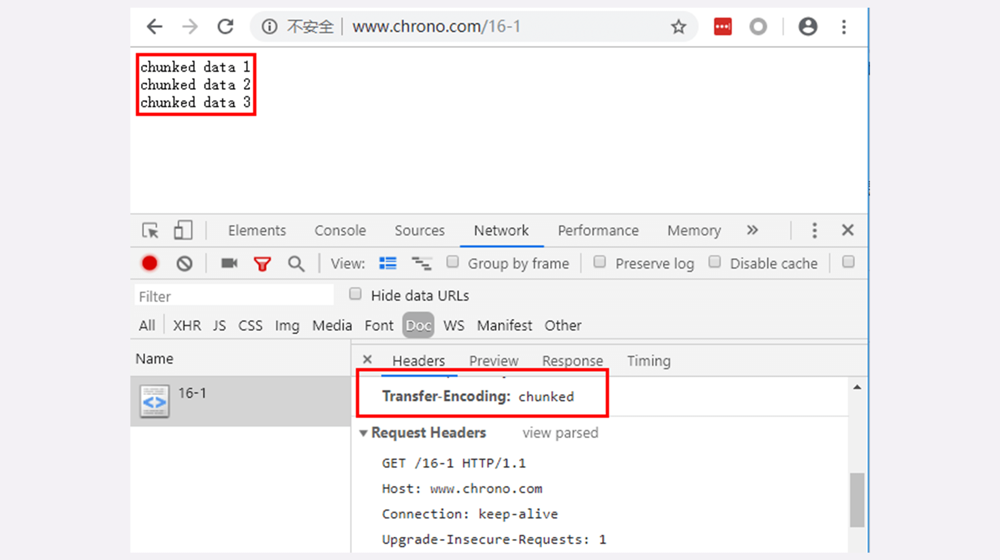
不过浏览器在收到分块传输的数据后会自动按照规则去掉分块编码，重新组装出内容，所以想要看到服务器发出的原始报文形态就得用 Telnet 手工发送请求（或者用 Wireshark 抓包）：
GET /16-1 HTTP/1.1
Host: www.chrono.com
因为 Telnet 只是收到响应报文就完事了，不会解析分块数据，所以可以很清楚地看到响应报文里的 chunked 数据格式：先是一行 16 进制长度，然后是数据，然后再是 16 进制长度和数据，如此重复，最后是 0 长度分块结束。

范围请求
有了分块传输编码，服务器就可以轻松地收发大文件了，但对于上 G 的超大文件，还有一些问题需要考虑。
比如，你在看当下正热播的某穿越剧，想跳过片头，直接看正片，或者有段剧情很无聊，想拖动进度条快进几分钟，这实际上是想获取一个大文件其中的片段数据，而分块传输并没有这个能力。
HTTP 协议为了满足这样的需求，提出了“范围请求”（range requests）的概念，允许客户端在请求头里使用专用字段来表示只获取文件的一部分，相当于是客户端的“化整为零”。
范围请求不是 Web 服务器必备的功能，可以实现也可以不实现，所以服务器必须在响应头里使用字段“Accept-Ranges: bytes”明确告知客户端：“我是支持范围请求的”。
如果不支持的话该怎么办呢？服务器可以发送“Accept-Ranges: none”，或者干脆不发送“Accept-Ranges”字段，这样客户端就认为服务器没有实现范围请求功能，只能老老实实地收发整块文件了。
请求头Range是 HTTP 范围请求的专用字段，格式是“bytes=x-y”，其中的 x 和 y 是以字节为单位的数据范围。
要注意 x、y 表示的是“偏移量”，范围必须从 0 计数，例如前 10 个字节表示为“0-9”，第二个 10 字节表示为“10-19”，而“0-10”实际上是前 11 个字节。
Range 的格式也很灵活，起点 x 和终点 y 可以省略，能够很方便地表示正数或者倒数的范围。假设文件是 100 个字节，那么：
- “0-”表示从文档起点到文档终点，相当于“0-99”，即整个文件；
- “10-”是从第 10 个字节开始到文档末尾，相当于“10-99”；
- “-1”是文档的最后一个字节，相当于“99-99”；
- “-10”是从文档末尾倒数 10 个字节，相当于“90-99”。
服务器收到 Range 字段后，需要做四件事。
第一，它必须检查范围是否合法，比如文件只有 100 个字节，但请求“200-300”，这就是范围越界了。服务器就会返回状态码416，意思是“你的范围请求有误，我无法处理，请再检查一下”。
第二，如果范围正确，服务器就可以根据 Range 头计算偏移量，读取文件的片段了，返回状态码“206 Partial Content”，和 200 的意思差不多，但表示 body 只是原数据的一部分。
第三，服务器要添加一个响应头字段Content-Range，告诉片段的实际偏移量和资源的总大小，格式是“bytes x-y/length”，与 Range 头区别在没有“=”，范围后多了总长度。例如，对于“0-10”的范围请求，值就是“bytes 0-10/100”。
最后剩下的就是发送数据了，直接把片段用 TCP 发给客户端，一个范围请求就算是处理完了。
你可以用实验环境的 URI“/16-2”来测试范围请求，它处理的对象是“/mime/a.txt”。不过我们不能用 Chrome 浏览器，因为它没有编辑 HTTP 请求头的功能（这点上不如 Firefox 方便），所以还是要用 Telnet。
例如下面的这个请求使用 Range 字段获取了文件的前 32 个字节：
GET /16-2 HTTP/1.1
Host: www.chrono.com
Range: bytes=0-31
返回的数据是（去掉了几个无关字段）：
HTTP/1.1 206 Partial Content
Content-Length: 32
Accept-Ranges: bytes
Content-Range: bytes 0-31/96
// this is a plain text json doc
有了范围请求之后，HTTP 处理大文件就更加轻松了，看视频时可以根据时间点计算出文件的 Range，不用下载整个文件，直接精确获取片段所在的数据内容。
不仅看视频的拖拽进度需要范围请求，常用的下载工具里的多段下载、断点续传也是基于它实现的，要点是：
- 先发个 HEAD，看服务器是否支持范围请求，同时获取文件的大小；
- 开 N 个线程，每个线程使用 Range 字段划分出各自负责下载的片段，发请求传输数据；
- 下载意外中断也不怕，不必重头再来一遍，只要根据上次的下载记录，用 Range 请求剩下的那一部分就可以了。
多段数据
刚才说的范围请求一次只获取一个片段，其实它还支持在 Range 头里使用多个“x-y”，一次性获取多个片段数据。
这种情况需要使用一种特殊的 MIME 类型：“multipart/byteranges”，表示报文的 body 是由多段字节序列组成的，并且还要用一个参数“boundary=xxx”给出段之间的分隔标记。
多段数据的格式与分块传输也比较类似，但它需要用分隔标记 boundary 来区分不同的片段，可以通过图来对比一下。

每一个分段必须以“- -boundary”开始（前面加两个“-”），之后要用“Content-Type”和“Content-Range”标记这段数据的类型和所在范围，然后就像普通的响应头一样以回车换行结束，再加上分段数据，最后用一个“- -boundary- -”（前后各有两个“-”）表示所有的分段结束。
例如，我们在实验环境里用 Telnet 发出有两个范围的请求：
GET /16-2 HTTP/1.1
Host: www.chrono.com
Range: bytes=0-9, 20-29
得到的就会是下面这样：
HTTP/1.1 206 Partial Content
Content-Type: multipart/byteranges; boundary=00000000001
Content-Length: 189
Connection: keep-alive
Accept-Ranges: bytes
--00000000001
Content-Type: text/plain
Content-Range: bytes 0-9/96
// this is
--00000000001
Content-Type: text/plain
Content-Range: bytes 20-29/96
ext json d
--00000000001--
报文里的“- -00000000001”就是多段的分隔符，使用它客户端就可以很容易地区分出多段 Range 数据。
小结
今天我们学习了 HTTP 传输大文件相关的知识，在这里做一下简单小结：
- 压缩 HTML 等文本文件是传输大文件最基本的方法；
- 分块传输可以流式收发数据，节约内存和带宽，使用响应头字段“Transfer-Encoding: chunked”来表示，分块的格式是 16 进制长度头 + 数据块；
- 范围请求可以只获取部分数据，即“分块请求”，实现视频拖拽或者断点续传，使用请求头字段“Range”和响应头字段“Content-Range”，响应状态码必须是 206；
- 也可以一次请求多个范围，这时候响应报文的数据类型是“multipart/byteranges”，body 里的多个部分会用 boundary 字符串分隔。
要注意这四种方法不是互斥的，而是可以混合起来使用，例如压缩后再分块传输，或者分段后再分块，实验环境的 URI“/16-3”就模拟了后一种的情形，你可以自己用 Telnet 试一下。
课下作业
- 分块传输数据的时候，如果数据里含有回车换行（\r\n）是否会影响分块的处理呢？
- 如果对一个被 gzip 的文件执行范围请求，比如“Range: bytes=10-19”，那么这个范围是应用于原文件还是压缩后的文件呢？
欢迎你把自己的学习体会写在留言区，与我和其他同学一起讨论。如果你觉得有所收获，也欢迎把文章分享给你的朋友。

17 排队也要讲效率：HTTP的连接管理
在[第 14 讲]里，我曾经提到过 HTTP 的性能问题，用了六个字来概括：“不算差，不够好”。同时，我也谈到了“队头阻塞”，但由于时间的限制没有展开来细讲，这次就来好好地看看 HTTP 在连接这方面的表现。
HTTP 的连接管理也算得上是个“老生常谈”的话题了，你一定曾经听说过“短连接”“长连接”之类的名词，今天让我们一起来把它们弄清楚。
短连接
HTTP 协议最初（0.9/1.0）是个非常简单的协议，通信过程也采用了简单的“请求 - 应答”方式。
它底层的数据传输基于 TCP/IP，每次发送请求前需要先与服务器建立连接，收到响应报文后会立即关闭连接。
因为客户端与服务器的整个连接过程很短暂，不会与服务器保持长时间的连接状态，所以就被称为“短连接”（short-lived connections）。早期的 HTTP 协议也被称为是“无连接”的协议。
短连接的缺点相当严重，因为在 TCP 协议里，建立连接和关闭连接都是非常“昂贵”的操作。TCP 建立连接要有“三次握手”，发送 3 个数据包，需要 1 个 RTT；关闭连接是“四次挥手”，4 个数据包需要 2 个 RTT。
而 HTTP 的一次简单“请求 - 响应”通常只需要 4 个包，如果不算服务器内部的处理时间，最多是 2 个 RTT。这么算下来，浪费的时间就是“3÷5=60%”，有三分之二的时间被浪费掉了，传输效率低得惊人。

单纯地从理论上讲，TCP 协议你可能还不太好理解，我就拿打卡考勤机来做个形象的比喻吧。
假设你的公司买了一台打卡机，放在前台，因为这台机器比较贵，所以专门做了一个保护罩盖着它，公司要求每次上下班打卡时都要先打开盖子，打卡后再盖上盖子。
可是偏偏这个盖子非常牢固，打开关闭要费很大力气，打卡可能只要 1 秒钟，而开关盖子却需要四五秒钟，大部分时间都浪费在了毫无意义的开关盖子操作上了。
可想而知，平常还好说，一到上下班的点在打卡机前就会排起长队，每个人都要重复“开盖 - 打卡 - 关盖”的三个步骤，你说着急不着急。
在这个比喻里，打卡机就相当于服务器，盖子的开关就是 TCP 的连接与关闭，而每个打卡的人就是 HTTP 请求，很显然，短连接的缺点严重制约了服务器的服务能力，导致它无法处理更多的请求。
长连接
针对短连接暴露出的缺点，HTTP 协议就提出了“长连接”的通信方式，也叫“持久连接”（persistent connections）、“连接保活”（keep alive）、“连接复用”（connection reuse）。
其实解决办法也很简单，用的就是“成本均摊”的思路，既然 TCP 的连接和关闭非常耗时间，那么就把这个时间成本由原来的一个“请求 - 应答”均摊到多个“请求 - 应答”上。
这样虽然不能改善 TCP 的连接效率，但基于“分母效应”，每个“请求 - 应答”的无效时间就会降低不少，整体传输效率也就提高了。
这里我画了一个短连接与长连接的对比示意图。

在短连接里发送了三次 HTTP“请求 - 应答”，每次都会浪费 60% 的 RTT 时间。而在长连接的情况下，同样发送三次请求，因为只在第一次时建立连接，在最后一次时关闭连接，所以浪费率就是“3÷9≈33%”，降低了差不多一半的时间损耗。显然，如果在这个长连接上发送的请求越多，分母就越大，利用率也就越高。
继续用刚才的打卡机的比喻，公司也觉得这种反复“开盖 - 打卡 - 关盖”的操作太“反人类”了，于是颁布了新规定，早上打开盖子后就不用关上了，可以自由打卡，到下班后再关上盖子。
这样打卡的效率（即服务能力）就大幅度提升了，原来一次打卡需要五六秒钟，现在只要一秒就可以了，上下班时排长队的景象一去不返，大家都开心。
连接相关的头字段
由于长连接对性能的改善效果非常显著，所以在 HTTP/1.1 中的连接都会默认启用长连接。不需要用什么特殊的头字段指定，只要向服务器发送了第一次请求，后续的请求都会重复利用第一次打开的 TCP 连接，也就是长连接，在这个连接上收发数据。
当然，我们也可以在请求头里明确地要求使用长连接机制，使用的字段是Connection，值是“keep-alive”。
不过不管客户端是否显式要求长连接，如果服务器支持长连接，它总会在响应报文里放一个“Connection: keep-alive”字段，告诉客户端：“我是支持长连接的，接下来就用这个 TCP 一直收发数据吧”。
你可以在实验环境里访问 URI“/17-1”，用 Chrome 看一下服务器返回的响应头：

不过长连接也有一些小缺点，问题就出在它的“长”字上。
因为 TCP 连接长时间不关闭，服务器必须在内存里保存它的状态，这就占用了服务器的资源。如果有大量的空闲长连接只连不发，就会很快耗尽服务器的资源，导致服务器无法为真正有需要的用户提供服务。
所以，长连接也需要在恰当的时间关闭，不能永远保持与服务器的连接，这在客户端或者服务器都可以做到。
在客户端，可以在请求头里加上“Connection: close”字段，告诉服务器：“这次通信后就关闭连接”。服务器看到这个字段，就知道客户端要主动关闭连接，于是在响应报文里也加上这个字段，发送之后就调用 Socket API 关闭 TCP 连接。
服务器端通常不会主动关闭连接，但也可以使用一些策略。拿 Nginx 来举例，它有两种方式：
- 使用“keepalive_timeout”指令，设置长连接的超时时间，如果在一段时间内连接上没有任何数据收发就主动断开连接，避免空闲连接占用系统资源。
- 使用“keepalive_requests”指令，设置长连接上可发送的最大请求次数。比如设置成 1000，那么当 Nginx 在这个连接上处理了 1000 个请求后，也会主动断开连接。
另外，客户端和服务器都可以在报文里附加通用头字段“Keep-Alive: timeout=value”，限定长连接的超时时间。但这个字段的约束力并不强，通信的双方可能并不会遵守，所以不太常见。
我们的实验环境配置了“keepalive_timeout 60”和“keepalive_requests 5”，意思是空闲连接最多 60 秒，最多发送 5 个请求。所以，如果连续刷新五次页面，就能看到响应头里的“Connection: close”了。
把这个过程用 Wireshark 抓一下包，就能够更清晰地看到整个长连接中的握手、收发数据与挥手过程，在课后你可以再实际操作看看。

队头阻塞
看完了短连接和长连接，接下来就要说到著名的“队头阻塞”（Head-of-line blocking，也叫“队首阻塞”）了。
“队头阻塞”与短连接和长连接无关，而是由 HTTP 基本的“请求 - 应答”模型所导致的。
因为 HTTP 规定报文必须是“一发一收”，这就形成了一个先进先出的“串行”队列。队列里的请求没有轻重缓急的优先级，只有入队的先后顺序，排在最前面的请求被最优先处理。
如果队首的请求因为处理的太慢耽误了时间，那么队列里后面的所有请求也不得不跟着一起等待，结果就是其他的请求承担了不应有的时间成本。

还是用打卡机做个比喻。
上班的时间点上，大家都在排队打卡，可这个时候偏偏最前面的那个人遇到了打卡机故障，怎么也不能打卡成功，急得满头大汗。等找人把打卡机修好，后面排队的所有人全迟到了。
性能优化
因为“请求 - 应答”模型不能变，所以“队头阻塞”问题在 HTTP/1.1 里无法解决，只能缓解，有什么办法呢？
公司里可以再多买几台打卡机放在前台，这样大家可以不用挤在一个队伍里，分散打卡，一个队伍偶尔阻塞也不要紧，可以改换到其他不阻塞的队伍。
这在 HTTP 里就是“并发连接”（concurrent connections），也就是同时对一个域名发起多个长连接，用数量来解决质量的问题。
但这种方式也存在缺陷。如果每个客户端都想自己快，建立很多个连接，用户数×并发数就会是个天文数字。服务器的资源根本就扛不住，或者被服务器认为是恶意攻击，反而会造成“拒绝服务”。
所以，HTTP 协议建议客户端使用并发，但不能“滥用”并发。RFC2616 里明确限制每个客户端最多并发 2 个连接。不过实践证明这个数字实在是太小了，众多浏览器都“无视”标准，把这个上限提高到了 6~8。后来修订的 RFC7230 也就“顺水推舟”，取消了这个“2”的限制。
但“并发连接”所压榨出的性能也跟不上高速发展的互联网无止境的需求，还有什么别的办法吗？
公司发展的太快了，员工越来越多，上下班打卡成了迫在眉睫的大问题。前台空间有限，放不下更多的打卡机了，怎么办？那就多开几个打卡的地方，每个楼层、办公区的入口也放上三四台打卡机，把人进一步分流，不要都往前台挤。
这个就是“域名分片”（domain sharding）技术，还是用数量来解决质量的思路。
HTTP 协议和浏览器不是限制并发连接数量吗？好，那我就多开几个域名，比如 shard1.chrono.com、shard2.chrono.com，而这些域名都指向同一台服务器 www.chrono.com，这样实际长连接的数量就又上去了，真是“美滋滋”。不过实在是有点“上有政策，下有对策”的味道。
小结
这一讲中我们学习了 HTTP 协议里的短连接和长连接，简单小结一下今天的内容：
- 早期的 HTTP 协议使用短连接，收到响应后就立即关闭连接，效率很低；
- HTTP/1.1 默认启用长连接，在一个连接上收发多个请求响应，提高了传输效率；
- 服务器会发送“Connection: keep-alive”字段表示启用了长连接；
- 报文头里如果有“Connection: close”就意味着长连接即将关闭；
- 过多的长连接会占用服务器资源，所以服务器会用一些策略有选择地关闭长连接；
- “队头阻塞”问题会导致性能下降，可以用“并发连接”和“域名分片”技术缓解。
课下作业
- 在开发基于 HTTP 协议的客户端时应该如何选择使用的连接模式呢？短连接还是长连接？
- 应当如何降低长连接对服务器的负面影响呢？
欢迎你把自己的学习体会写在留言区，与我和其他同学一起讨论。如果你觉得有所收获，也欢迎把文章分享给你的朋友。

18 四通八达：HTTP的重定向和跳转
在专栏[第 1 讲]时我曾经说过，为了实现在互联网上构建超链接文档系统的设想，蒂姆·伯纳斯 - 李发明了万维网，使用 HTTP 协议传输“超文本”，让全世界的人都能够自由地共享信息。
“超文本”里含有“超链接”，可以从一个“超文本”跳跃到另一个“超文本”，对线性结构的传统文档是一个根本性的变革。
能够使用“超链接”在网络上任意地跳转也是万维网的一个关键特性。它把分散在世界各地的文档连接在一起，形成了复杂的网状结构，用户可以在查看时随意点击链接、转换页面。再加上浏览器又提供了“前进”“后退”“书签”等辅助功能，让用户在文档间跳转时更加方便，有了更多的主动性和交互性。
那么，点击页面“链接”时的跳转是怎样的呢？具体一点，比如在 Nginx 的主页上点了一下“download”链接，会发生什么呢？
结合之前的课程，稍微思考一下你就能得到答案：浏览器首先要解析链接文字里的 URI。
http://nginx.org/en/download.html
再用这个 URI 发起一个新的 HTTP 请求，获取响应报文后就会切换显示内容，渲染出新 URI 指向的页面。
这样的跳转动作是由浏览器的使用者主动发起的，可以称为“主动跳转”，但还有一类跳转是由服务器来发起的，浏览器使用者无法控制，相对地就可以称为“被动跳转”，这在 HTTP 协议里有个专门的名词，叫做“重定向”（Redirection）。
重定向的过程
其实之前我们就已经见过重定向了，在[第 12 讲]里 3××状态码时就说过，301 是“永久重定向”，302 是“临时重定向”，浏览器收到这两个状态码就会跳转到新的 URI。
那么，它们是怎么做到的呢？难道仅仅用这两个代码就能够实现跳转页面吗？
先在实验环境里看一下重定向的过程吧，用 Chrome 访问 URI “/18-1”，它会使用 302 立即跳转到“/index.html”。
从这个实验可以看到，这一次“重定向”实际上发送了两次 HTTP 请求，第一个请求返回了 302，然后第二个请求就被重定向到了“/index.html”。但如果不用开发者工具的话，你是完全看不到这个跳转过程的，也就是说，重定向是“用户无感知”的。
我们再来看看第一个请求返回的响应报文：

这里出现了一个新的头字段“Location: /index.html”，它就是 301/302 重定向跳转的秘密所在。
“Location”字段属于响应字段，必须出现在响应报文里。但只有配合 301/302 状态码才有意义，它标记了服务器要求重定向的 URI，这里就是要求浏览器跳转到“index.html”。
浏览器收到 301/302 报文，会检查响应头里有没有“Location”。如果有，就从字段值里提取出 URI，发出新的 HTTP 请求，相当于自动替我们点击了这个链接。
在“Location”里的 URI 既可以使用绝对 URI，也可以使用相对 URI。所谓“绝对 URI”，就是完整形式的 URI，包括 scheme、host:port、path 等。所谓“相对 URI”，就是省略了 scheme 和 host:port，只有 path 和 query 部分，是不完整的，但可以从请求上下文里计算得到。
例如，刚才的实验例子里的“Location: /index.html”用的就是相对 URI。它没有说明访问 URI 的协议和主机，但因为是由“http://www.chrono.com/18-1”重定向返回的响应报文，所以浏览器就可以拼出完整的 URI：
http://www.chrono.com/index.html
实验环境的 URI“/18-1”还支持使用 query 参数“dst=xxx”，指明重定向的 URI，你可以用这种形式再多试几次重定向，看看浏览器是如何工作的。
http://www.chrono.com/18-1?dst=/15-1?name=a.json
http://www.chrono.com/18-1?dst=/17-1
注意，在重定向时如果只是在站内跳转，你可以放心地使用相对 URI。但如果要跳转到站外，就必须用绝对 URI。
例如，如果想跳转到 Nginx 官网，就必须在“nginx.org”前把“http://”都写出来，否则浏览器会按照相对 URI 去理解，得到的就会是一个不存在的 URI“http://www.chrono.com/nginx.org”
http://www.chrono.com/18-1?dst=nginx.org # 错误
http://www.chrono.com/18-1?dst=http://nginx.org # 正确

那么，如果 301/302 跳转时没有 Location 字段会怎么样呢？
这个你也可以自己试一下，使用第 12 讲里的 URI“/12-1”，查询参数用“code=302”：
http://www.chrono.com/12-1?code=302
重定向状态码
刚才我把重定向的过程基本讲完了，现在来说一下重定向用到的状态码。
最常见的重定向状态码就是 301 和 302，另外还有几个不太常见的，例如 303、307、308 等。它们最终的效果都差不多，让浏览器跳转到新的 URI，但语义上有一些细微的差别，使用的时候要特别注意。
301俗称“永久重定向”（Moved Permanently），意思是原 URI 已经“永久”性地不存在了，今后的所有请求都必须改用新的 URI。
浏览器看到 301，就知道原来的 URI“过时”了，就会做适当的优化。比如历史记录、更新书签，下次可能就会直接用新的 URI 访问，省去了再次跳转的成本。搜索引擎的爬虫看到 301，也会更新索引库，不再使用老的 URI。
302俗称“临时重定向”（“Moved Temporarily”），意思是原 URI 处于“临时维护”状态，新的 URI 是起“顶包”作用的“临时工”。
浏览器或者爬虫看到 302，会认为原来的 URI 仍然有效，但暂时不可用，所以只会执行简单的跳转页面，不记录新的 URI，也不会有其他的多余动作，下次访问还是用原 URI。
301/302 是最常用的重定向状态码，在 3××里剩下的几个还有：
- 303 See Other：类似 302，但要求重定向后的请求改为 GET 方法，访问一个结果页面，避免 POST/PUT 重复操作；
- 307 Temporary Redirect：类似 302，但重定向后请求里的方法和实体不允许变动，含义比 302 更明确；
- 308 Permanent Redirect：类似 307，不允许重定向后的请求变动，但它是 301“永久重定向”的含义。
不过这三个状态码的接受程度较低，有的浏览器和服务器可能不支持，开发时应当慎重，测试确认浏览器的实际效果后才能使用。
重定向的应用场景
理解了重定向的工作原理和状态码的含义，我们就可以在服务器端拥有主动权，控制浏览器的行为，不过要怎么利用重定向才好呢？
使用重定向跳转，核心是要理解“重定向”和“永久 / 临时”这两个关键词。
先来看什么时候需要重定向。
一个最常见的原因就是“资源不可用”，需要用另一个新的 URI 来代替。
至于不可用的原因那就很多了。例如域名变更、服务器变更、网站改版、系统维护，这些都会导致原 URI 指向的资源无法访问，为了避免出现 404，就需要用重定向跳转到新的 URI，继续为网民提供服务。
另一个原因就是“避免重复”，让多个网址都跳转到一个 URI，增加访问入口的同时还不会增加额外的工作量。
例如，有的网站都会申请多个名称类似的域名，然后把它们再重定向到主站上。比如，你可以访问一下“qq.com”“github.com ”“bing.com”（记得事先清理缓存），看看它是如何重定向的。
决定要实行重定向后接下来要考虑的就是“永久”和“临时”的问题了，也就是选择 301 还是 302。
301 的含义是“永久”的。
如果域名、服务器、网站架构发生了大幅度的改变，比如启用了新域名、服务器切换到了新机房、网站目录层次重构，这些都算是“永久性”的改变。原来的 URI 已经不能用了，必须用 301“永久重定向”，通知浏览器和搜索引擎更新到新地址，这也是搜索引擎优化（SEO）要考虑的因素之一。
302 的含义是“临时”的。
原来的 URI 在将来的某个时间点还会恢复正常，常见的应用场景就是系统维护，把网站重定向到一个通知页面，告诉用户过一会儿再来访问。另一种用法就是“服务降级”，比如在双十一促销的时候，把订单查询、领积分等不重要的功能入口暂时关闭，保证核心服务能够正常运行。
重定向的相关问题
重定向的用途很多，掌握了重定向，就能够在架设网站时获得更多的灵活性，不过在使用时还需要注意两个问题。
第一个问题是“性能损耗”。很明显，重定向的机制决定了一个跳转会有两次请求 - 应答，比正常的访问多了一次。
虽然 301/302 报文很小，但大量的跳转对服务器的影响也是不可忽视的。站内重定向还好说，可以长连接复用，站外重定向就要开两个连接，如果网络连接质量差，那成本可就高多了，会严重影响用户的体验。
所以重定向应当适度使用，决不能滥用。
第二个问题是“循环跳转”。如果重定向的策略设置欠考虑，可能会出现“A=>B=>C=>A”的无限循环，不停地在这个链路里转圈圈，后果可想而知。
所以 HTTP 协议特别规定，浏览器必须具有检测“循环跳转”的能力，在发现这种情况时应当停止发送请求并给出错误提示。
实验环境的 URI“/18-2”就模拟了这样的一个“循环跳转”，它跳转到“/18-1”，并用参数“dst=/18-2”再跳回自己，实现了两个 URI 的无限循环。
使用 Chrome 访问这个地址，会得到“该网页无法正常运作”的结果：
小结
今天我们学习了 HTTP 里的重定向和跳转，简单小结一下这次的内容：
- 重定向是服务器发起的跳转，要求客户端改用新的 URI 重新发送请求，通常会自动进行，用户是无感知的；
- 301/302 是最常用的重定向状态码，分别是“永久重定向”和“临时重定向”；
- 响应头字段 Location 指示了要跳转的 URI，可以用绝对或相对的形式；
- 重定向可以把一个 URI 指向另一个 URI，也可以把多个 URI 指向同一个 URI，用途很多；
- 使用重定向时需要当心性能损耗，还要避免出现循环跳转。
课下作业
- 301 和 302 非常相似，试着结合第 12 讲，用自己的理解再描述一下两者的异同点。
- 你能结合自己的实际情况，再列出几个应当使用重定向的场景吗？
欢迎你把自己的学习体会写在留言区，与我和其他同学一起讨论。如果你觉得有所收获，也欢迎把文章分享给你的朋友。

19 让我知道你是谁：HTTP的Cookie机制
在之前的第 13、14 讲中，我曾经说过，HTTP 是“无状态”的，这既是优点也是缺点。优点是服务器没有状态差异，可以很容易地组成集群，而缺点就是无法支持需要记录状态的事务操作。
好在 HTTP 协议是可扩展的，后来发明的 Cookie 技术，给 HTTP 增加了“记忆能力”。
什么是 Cookie？
不知道你有没有看过克里斯托弗·诺兰导演的一部经典电影《记忆碎片》（Memento），里面的主角患有短期失忆症，记不住最近发生的事情。
比如，电影里有个场景，某人刚跟主角说完话，大闹了一通，过了几分钟再回来，主角却是一脸茫然，完全不记得这个人是谁，刚才又做了什么，只能任人摆布。
这种情况就很像 HTTP 里“无状态”的 Web 服务器，只不过服务器的“失忆症”比他还要严重，连一分钟的记忆也保存不了，请求处理完立刻就忘得一干二净。即使这个请求会让服务器发生 500 的严重错误，下次来也会依旧“热情招待”。
如果 Web 服务器只是用来管理静态文件还好说，对方是谁并不重要，把文件从磁盘读出来发走就可以了。但随着 HTTP 应用领域的不断扩大，对“记忆能力”的需求也越来越强烈。比如网上论坛、电商购物，都需要“看客下菜”，只有记住用户的身份才能执行发帖子、下订单等一系列会话事务。
那该怎么样让原本无“记忆能力”的服务器拥有“记忆能力”呢？
看看电影里的主角是怎么做的吧。他通过纹身、贴纸条、立拍得等手段，在外界留下了各种记录，一旦失忆，只要看到这些提示信息，就能够在头脑中快速重建起之前的记忆，从而把因失忆而耽误的事情继续做下去。
HTTP 的 Cookie 机制也是一样的道理，既然服务器记不住，那就在外部想办法记住。相当于是服务器给每个客户端都贴上一张小纸条，上面写了一些只有服务器才能理解的数据，需要的时候客户端把这些信息发给服务器，服务器看到 Cookie，就能够认出对方是谁了。
Cookie 的工作过程
那么，Cookie 这张小纸条是怎么传递的呢？
这要用到两个字段：响应头字段Set-Cookie和请求头字段Cookie。
当用户通过浏览器第一次访问服务器的时候，服务器肯定是不知道他的身份的。所以，就要创建一个独特的身份标识数据，格式是“key=value”，然后放进 Set-Cookie 字段里，随着响应报文一同发给浏览器。
浏览器收到响应报文，看到里面有 Set-Cookie，知道这是服务器给的身份标识，于是就保存起来，下次再请求的时候就自动把这个值放进 Cookie 字段里发给服务器。
因为第二次请求里面有了 Cookie 字段，服务器就知道这个用户不是新人，之前来过，就可以拿出 Cookie 里的值，识别出用户的身份，然后提供个性化的服务。
不过因为服务器的“记忆能力”实在是太差，一张小纸条经常不够用。所以，服务器有时会在响应头里添加多个 Set-Cookie，存储多个“key=value”。但浏览器这边发送时不需要用多个 Cookie 字段，只要在一行里用“;”隔开就行。
我画了一张图来描述这个过程，你看过就能理解了。
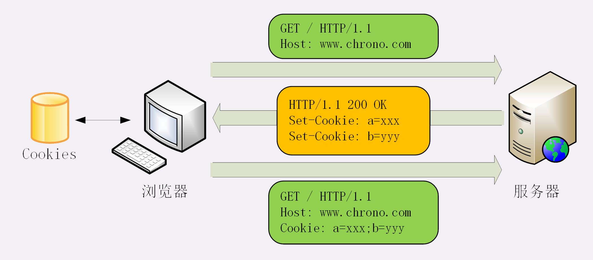
从这张图中我们也能够看到，Cookie 是由浏览器负责存储的，而不是操作系统。所以，它是“浏览器绑定”的，只能在本浏览器内生效。
如果你换个浏览器或者换台电脑，新的浏览器里没有服务器对应的 Cookie，就好像是脱掉了贴着纸条的衣服，“健忘”的服务器也就认不出来了，只能再走一遍 Set-Cookie 流程。
在实验环境里，你可以用 Chrome 访问 URI“/19-1”，实地看一下 Cookie 工作过程。
首次访问时服务器会设置两个 Cookie。

然后刷新这个页面，浏览器就会在请求头里自动送出 Cookie，服务器就能认出你了。
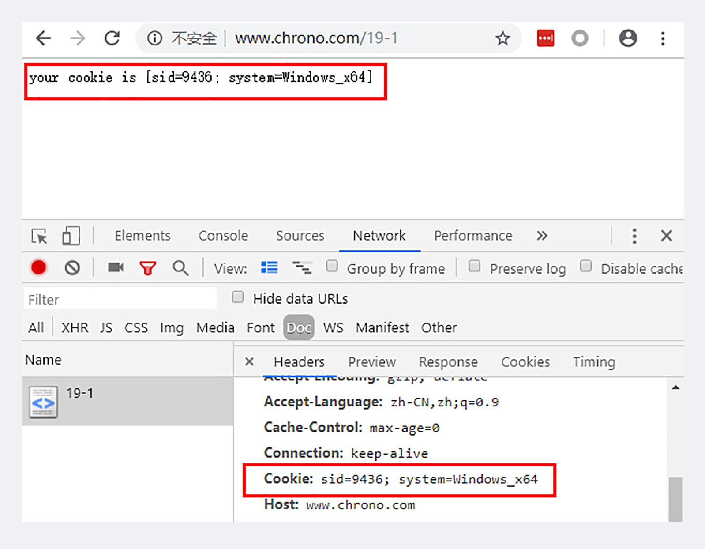
如果换成 Firefox 等其他浏览器，因为 Cookie 是存在 Chrome 里的，所以服务器就又“蒙圈”了，不知道你是谁，就会给 Firefox 再贴上小纸条。
Cookie 的属性
说到这里，你应该知道了，Cookie 就是服务器委托浏览器存储在客户端里的一些数据，而这些数据通常都会记录用户的关键识别信息。所以，就需要在“key=value”外再用一些手段来保护，防止外泄或窃取，这些手段就是 Cookie 的属性。
下面这个截图是实验环境“/19-2”的响应头，我来对着这个实际案例讲一下都有哪些常见的 Cookie 属性。
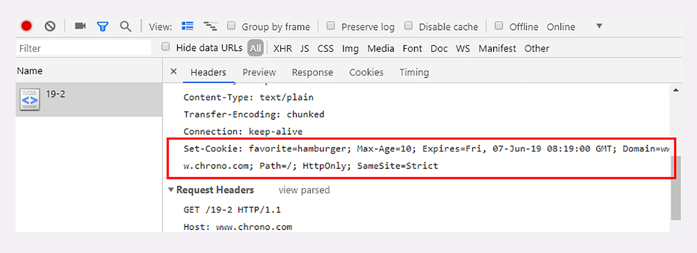
首先，我们应该设置 Cookie 的生存周期，也就是它的有效期，让它只能在一段时间内可用，就像是食品的“保鲜期”，一旦超过这个期限浏览器就认为是 Cookie 失效，在存储里删除，也不会发送给服务器。
Cookie 的有效期可以使用 Expires 和 Max-Age 两个属性来设置。
“Expires”俗称“过期时间”，用的是绝对时间点，可以理解为“截止日期”（deadline）。“Max-Age”用的是相对时间，单位是秒，浏览器用收到报文的时间点再加上 Max-Age，就可以得到失效的绝对时间。
Expires 和 Max-Age 可以同时出现，两者的失效时间可以一致，也可以不一致，但浏览器会优先采用 Max-Age 计算失效期。
比如在这个例子里，Expires 标记的过期时间是“GMT 2019 年 6 月 7 号 8 点 19 分”，而 Max-Age 则只有 10 秒，如果现在是 6 月 6 号零点，那么 Cookie 的实际有效期就是“6 月 6 号零点过 10 秒”。
其次，我们需要设置 Cookie 的作用域，让浏览器仅发送给特定的服务器和 URI，避免被其他网站盗用。
作用域的设置比较简单，“Domain”和“Path”指定了 Cookie 所属的域名和路径，浏览器在发送 Cookie 前会从 URI 中提取出 host 和 path 部分，对比 Cookie 的属性。如果不满足条件，就不会在请求头里发送 Cookie。
使用这两个属性可以为不同的域名和路径分别设置各自的 Cookie，比如“/19-1”用一个 Cookie，“/19-2”再用另外一个 Cookie，两者互不干扰。不过现实中为了省事，通常 Path 就用一个“/”或者直接省略，表示域名下的任意路径都允许使用 Cookie，让服务器自己去挑。
最后要考虑的就是Cookie 的安全性了，尽量不要让服务器以外的人看到。
写过前端的同学一定知道，在 JS 脚本里可以用 document.cookie 来读写 Cookie 数据，这就带来了安全隐患，有可能会导致“跨站脚本”（XSS）攻击窃取数据。
属性“HttpOnly”会告诉浏览器，此 Cookie 只能通过浏览器 HTTP 协议传输，禁止其他方式访问，浏览器的 JS 引擎就会禁用 document.cookie 等一切相关的 API，脚本攻击也就无从谈起了。
另一个属性“SameSite”可以防范“跨站请求伪造”（XSRF）攻击，设置成“SameSite=Strict”可以严格限定 Cookie 不能随着跳转链接跨站发送，而“SameSite=Lax”则略宽松一点，允许 GET/HEAD 等安全方法，但禁止 POST 跨站发送。
还有一个属性叫“Secure”，表示这个 Cookie 仅能用 HTTPS 协议加密传输，明文的 HTTP 协议会禁止发送。但 Cookie 本身不是加密的，浏览器里还是以明文的形式存在。
Chrome 开发者工具是查看 Cookie 的有力工具，在“Network-Cookies”里可以看到单个页面 Cookie 的各种属性，另一个“Application”面板里则能够方便地看到全站的所有 Cookie。
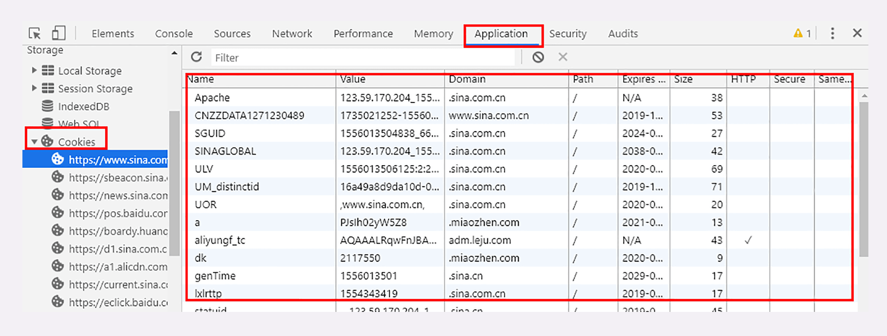
Cookie 的应用
现在回到我们最开始的话题，有了 Cookie，服务器就有了“记忆能力”，能够保存“状态”，那么应该如何使用 Cookie 呢？
Cookie 最基本的一个用途就是身份识别，保存用户的登录信息，实现会话事务。
比如，你用账号和密码登录某电商，登录成功后网站服务器就会发给浏览器一个 Cookie，内容大概是“name=yourid”，这样就成功地把身份标签贴在了你身上。
之后你在网站里随便访问哪件商品的页面，浏览器都会自动把身份 Cookie 发给服务器，所以服务器总会知道你的身份，一方面免去了重复登录的麻烦，另一方面也能够自动记录你的浏览记录和购物下单（在后台数据库或者也用 Cookie），实现了“状态保持”。
Cookie 的另一个常见用途是广告跟踪。
你上网的时候肯定看过很多的广告图片，这些图片背后都是广告商网站（例如 Google），它会“偷偷地”给你贴上 Cookie 小纸条，这样你上其他的网站，别的广告就能用 Cookie 读出你的身份，然后做行为分析，再推给你广告。
这种 Cookie 不是由访问的主站存储的，所以又叫“第三方 Cookie”（third-party cookie）。如果广告商势力很大，广告到处都是，那么就比较“恐怖”了，无论你走到哪里它都会通过 Cookie 认出你来，实现广告“精准打击”。
为了防止滥用 Cookie 搜集用户隐私，互联网组织相继提出了 DNT（Do Not Track）和 P3P（Platform for Privacy Preferences Project），但实际作用不大。
小结
今天我们学习了 HTTP 里的 Cookie 知识。虽然现在已经出现了多种 Local Web Storage 技术，能够比 Cookie 存储更多的数据，但 Cookie 仍然是最通用、兼容性最强的客户端数据存储手段。
简单小结一下今天的内容：
- Cookie 是服务器委托浏览器存储的一些数据，让服务器有了“记忆能力”；
- 响应报文使用 Set-Cookie 字段发送“key=value”形式的 Cookie 值；
- 请求报文里用 Cookie 字段发送多个 Cookie 值；
- 为了保护 Cookie，还要给它设置有效期、作用域等属性，常用的有 Max-Age、Expires、Domain、HttpOnly 等；
- Cookie 最基本的用途是身份识别，实现有状态的会话事务。
还要提醒你一点，因为 Cookie 并不属于 HTTP 标准（RFC6265，而不是 RFC2616/7230），所以语法上与其他字段不太一致，使用的分隔符是“;”，与 Accept 等字段的“,”不同，小心不要弄错了。
课下作业
- 如果 Cookie 的 Max-Age 属性设置为 0，会有什么效果呢？
- Cookie 的好处已经很清楚了，你觉得它有什么缺点呢？
欢迎你把自己的学习体会写在留言区，与我和其他同学一起讨论。如果你觉得有所收获，也欢迎把文章分享给你的朋友。

20 生鲜速递：HTTP的缓存控制
缓存（Cache）是计算机领域里的一个重要概念，是优化系统性能的利器。
由于链路漫长，网络时延不可控，浏览器使用 HTTP 获取资源的成本较高。所以，非常有必要把“来之不易”的数据缓存起来，下次再请求的时候尽可能地复用。这样，就可以避免多次请求 - 应答的通信成本，节约网络带宽，也可以加快响应速度。
试想一下，如果有几十 K 甚至几十 M 的数据，不是从网络而是从本地磁盘获取，那将是多么大的一笔节省，免去多少等待的时间。
实际上，HTTP 传输的每一个环节基本上都会有缓存，非常复杂。
基于“请求 - 应答”模式的特点，可以大致分为客户端缓存和服务器端缓存，因为服务器端缓存经常与代理服务“混搭”在一起，所以今天我先讲客户端——也就是浏览器的缓存。
服务器的缓存控制
为了更好地说明缓存的运行机制，下面我用“生鲜速递”作为比喻，看看缓存是如何工作的。
夏天到了，天气很热。你想吃西瓜消暑，于是打开冰箱，但很不巧，冰箱是空的。不过没事，现在物流很发达，给生鲜超市打个电话，不一会儿，就给你送来一个 8 斤的沙瓤大西瓜，上面还贴着标签：“保鲜期 5 天”。好了，你把它放进冰箱，想吃的时候随时拿出来。
在这个场景里，“生鲜超市”就是 Web 服务器，“你”就是浏览器，“冰箱”就是浏览器内部的缓存。整个流程翻译成 HTTP 就是：
- 浏览器发现缓存无数据，于是发送请求，向服务器获取资源；
- 服务器响应请求，返回资源，同时标记资源的有效期；
- 浏览器缓存资源，等待下次重用。
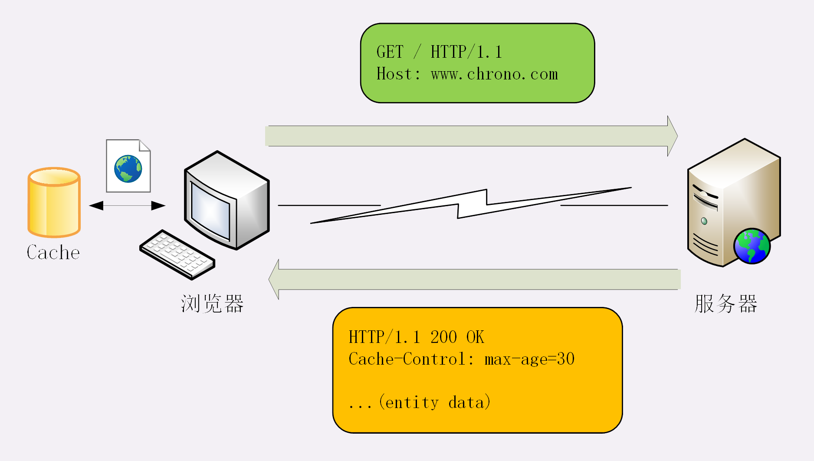
你可以访问实验环境的 URI “/20-1”，看看具体的请求 - 应答过程。

服务器标记资源有效期使用的头字段是“Cache-Control”，里面的值“max-age=30”就是资源的有效时间，相当于告诉浏览器，“这个页面只能缓存 30 秒，之后就算是过期，不能用。”
你可能要问了，让浏览器直接缓存数据就好了，为什么要加个有效期呢？
这是因为网络上的数据随时都在变化，不能保证它稍后的一段时间还是原来的样子。就像生鲜超市给你快递的西瓜，只有 5 天的保鲜期，过了这个期限最好还是别吃，不然可能会闹肚子。
“Cache-Control”字段里的“max-age”和上一讲里 Cookie 有点像，都是标记资源的有效期。
但我必须提醒你注意，这里的 max-age 是“生存时间”（又叫“新鲜度”“缓存寿命”，类似 TTL，Time-To-Live），时间的计算起点是响应报文的创建时刻（即 Date 字段，也就是离开服务器的时刻），而不是客户端收到报文的时刻，也就是说包含了在链路传输过程中所有节点所停留的时间。
比如，服务器设定“max-age=5”，但因为网络质量很糟糕，等浏览器收到响应报文已经过去了 4 秒，那么这个资源在客户端就最多能够再存 1 秒钟，之后就会失效。
“max-age”是 HTTP 缓存控制最常用的属性，此外在响应报文里还可以用其他的属性来更精确地指示浏览器应该如何使用缓存：
- no_store：不允许缓存，用于某些变化非常频繁的数据，例如秒杀页面；
- no_cache：它的字面含义容易与 no_store 搞混，实际的意思并不是不允许缓存，而是可以缓存，但在使用之前必须要去服务器验证是否过期，是否有最新的版本；
- must-revalidate：又是一个和 no_cache 相似的词，它的意思是如果缓存不过期就可以继续使用，但过期了如果还想用就必须去服务器验证。
听的有点糊涂吧。没关系，我拿生鲜速递来举例说明一下：
- no_store：买来的西瓜不允许放进冰箱，要么立刻吃，要么立刻扔掉；
- no_cache：可以放进冰箱，但吃之前必须问超市有没有更新鲜的，有就吃超市里的；
- must-revalidate：可以放进冰箱，保鲜期内可以吃，过期了就要问超市让不让吃。
你看，这超市管的还真多啊，西瓜到了家里怎么吃还得听他。不过没办法，在 HTTP 协议里服务器就是这样的“霸气”。
我把服务器的缓存控制策略画了一个流程图，对照着它你就可以在今后的后台开发里明确“Cache-Control”的用法了。

客户端的缓存控制
现在冰箱里已经有了“缓存”的西瓜，是不是就可以直接开吃了呢？
你可以在 Chrome 里点几次“刷新”按钮，估计你会失望，页面上的 ID 一直在变，根本不是缓存的结果，明明说缓存 30 秒，怎么就不起作用呢？
其实不止服务器可以发“Cache-Control”头，浏览器也可以发“Cache-Control”，也就是说请求 - 应答的双方都可以用这个字段进行缓存控制，互相协商缓存的使用策略。
当你点“刷新”按钮的时候，浏览器会在请求头里加一个“Cache-Control: max-age=0”。因为 max-age 是“生存时间”，max-age=0 的意思就是“我要一个最最新鲜的西瓜”，而本地缓存里的数据至少保存了几秒钟，所以浏览器就不会使用缓存，而是向服务器发请求。服务器看到 max-age=0，也就会用一个最新生成的报文回应浏览器。
Ctrl+F5 的“强制刷新”又是什么样的呢？
它其实是发了一个“Cache-Control: no-cache”，含义和“max-age=0”基本一样，就看后台的服务器怎么理解，通常两者的效果是相同的。
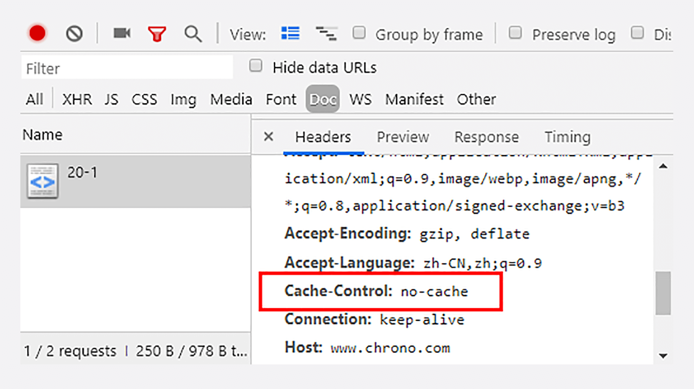
那么，浏览器的缓存究竟什么时候才能生效呢？
别着急，试着点一下浏览器的“前进”“后退”按钮，再看开发者工具，你就会惊喜地发现“from disk cache”的字样，意思是没有发送网络请求，而是读取的磁盘上的缓存。
另外，如果用[第 18 讲]里的重定向跳转功能，也可以发现浏览器使用了缓存：
http://www.chrono.com/18-1?dst=20-1

这几个操作与刷新有什么区别呢？
其实也很简单，在“前进”“后退”“跳转”这些重定向动作中浏览器不会“夹带私货”，只用最基本的请求头，没有“Cache-Control”，所以就会检查缓存，直接利用之前的资源，不再进行网络通信。
这个过程你也可以用 Wireshark 抓包，看看是否真的没有向服务器发请求。
条件请求
浏览器用“Cache-Control”做缓存控制只能是刷新数据，不能很好地利用缓存数据，又因为缓存会失效，使用前还必须要去服务器验证是否是最新版。
那么该怎么做呢？
浏览器可以用两个连续的请求组成“验证动作”：先是一个 HEAD，获取资源的修改时间等元信息，然后与缓存数据比较，如果没有改动就使用缓存，节省网络流量，否则就再发一个 GET 请求，获取最新的版本。
但这样的两个请求网络成本太高了，所以 HTTP 协议就定义了一系列“If”开头的“条件请求”字段，专门用来检查验证资源是否过期，把两个请求才能完成的工作合并在一个请求里做。而且，验证的责任也交给服务器，浏览器只需“坐享其成”。
条件请求一共有 5 个头字段，我们最常用的是“if-Modified-Since”和“If-None-Match”这两个。需要第一次的响应报文预先提供“Last-modified”和“ETag”，然后第二次请求时就可以带上缓存里的原值，验证资源是否是最新的。
如果资源没有变，服务器就回应一个“304 Not Modified”，表示缓存依然有效，浏览器就可以更新一下有效期，然后放心大胆地使用缓存了。
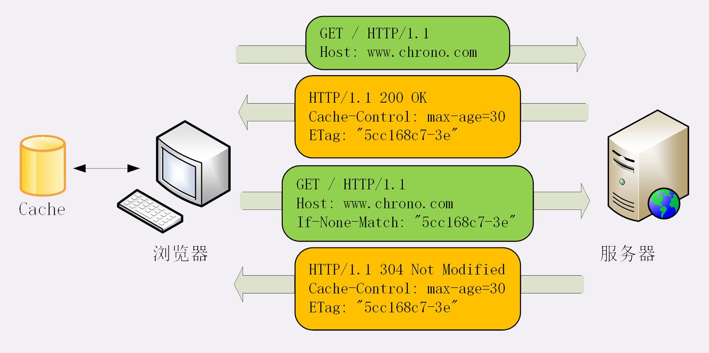
“Last-modified”很好理解，就是文件的最后修改时间。ETag 是什么呢？
ETag 是“实体标签”（Entity Tag）的缩写，是资源的一个唯一标识，主要是用来解决修改时间无法准确区分文件变化的问题。
比如，一个文件在一秒内修改了多次，但因为修改时间是秒级，所以这一秒内的新版本无法区分。
再比如，一个文件定期更新，但有时会是同样的内容，实际上没有变化，用修改时间就会误以为发生了变化，传送给浏览器就会浪费带宽。
使用 ETag 就可以精确地识别资源的变动情况，让浏览器能够更有效地利用缓存。
ETag 还有“强”“弱”之分。
强 ETag 要求资源在字节级别必须完全相符，弱 ETag 在值前有个“W/”标记，只要求资源在语义上没有变化，但内部可能会有部分发生了改变（例如 HTML 里的标签顺序调整，或者多了几个空格）。
还是拿生鲜速递做比喻最容易理解：
你打电话给超市，“我这个西瓜是 3 天前买的，还有最新的吗？”。超市看了一下库存，说：“没有啊，我这里都是 3 天前的。”于是你就知道了，再让超市送货也没用，还是吃冰箱里的西瓜吧。这就是“if-Modified-Since”和“Last-modified”。
但你还是想要最新的，就又打电话：“有不是沙瓤的西瓜吗？”，超市告诉你都是沙瓤的（Match），于是你还是只能吃冰箱里的沙瓤西瓜。这就是“If-None-Match”和“弱 ETag”。
第三次打电话，你说“有不是 8 斤的沙瓤西瓜吗？”，这回超市给了你满意的答复：“有个 10 斤的沙瓤西瓜”。于是，你就扔掉了冰箱里的存货，让超市重新送了一个新的大西瓜。这就是“If-None-Match”和“强 ETag”。
再来看看实验环境的 URI “/20-2”。它为资源增加了 ETag 字段，刷新页面时浏览器就会同时发送缓存控制头“max-age=0”和条件请求头“If-None-Match”，如果缓存有效服务器就会返回 304：

条件请求里其他的三个头字段是“If-Unmodified-Since”“If-Match”和“If-Range”，其实只要你掌握了“if-Modified-Since”和“If-None-Match”，可以轻易地“举一反三”。
小结
今天我们学习了 HTTP 的缓存控制和条件请求，用好它们可以减少响应时间、节约网络流量，一起小结一下今天的内容吧：
- 缓存是优化系统性能的重要手段，HTTP 传输的每一个环节中都可以有缓存；
- 服务器使用“Cache-Control”设置缓存策略，常用的是“max-age”，表示资源的有效期；
- 浏览器收到数据就会存入缓存，如果没过期就可以直接使用，过期就要去服务器验证是否仍然可用；
- 验证资源是否失效需要使用“条件请求”，常用的是“if-Modified-Since”和“If-None-Match”，收到 304 就可以复用缓存里的资源；
- 验证资源是否被修改的条件有两个：“Last-modified”和“ETag”，需要服务器预先在响应报文里设置，搭配条件请求使用；
- 浏览器也可以发送“Cache-Control”字段，使用“max-age=0”或“no_cache”刷新数据。
HTTP 缓存看上去很复杂，但基本原理说白了就是一句话：“没有消息就是好消息”，“没有请求的请求，才是最快的请求。”
课下作业
- Cache 和 Cookie 都是服务器发给客户端并存储的数据，你能比较一下两者的异同吗？
- 即使有“Last-modified”和“ETag”，强制刷新（Ctrl+F5）也能够从服务器获取最新数据（返回 200 而不是 304），请你在实验环境里试一下，观察请求头和响应头，解释原因。
欢迎你把自己的学习体会写在留言区，与我和其他同学一起讨论。如果你觉得有所收获，也欢迎把文章分享给你的朋友。

21 良心中间商：HTTP的代理服务
在前面讲 HTTP 协议的时候，我们严格遵循了 HTTP 的“请求 - 应答”模型，协议中只有两个互相通信的角色，分别是“请求方”浏览器（客户端）和“应答方”服务器。
今天，我们要在这个模型里引入一个新的角色，那就是HTTP 代理。
引入 HTTP 代理后，原来简单的双方通信就变复杂了一些，加入了一个或者多个中间人，但整体上来看，还是一个有顺序关系的链条，而且链条里相邻的两个角色仍然是简单的一对一通信，不会出现越级的情况。
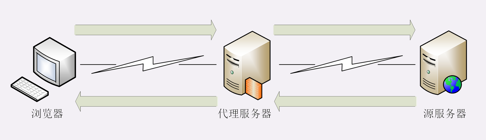
链条的起点还是客户端（也就是浏览器），中间的角色被称为代理服务器（proxy server），链条的终点被称为源服务器（origin server），意思是数据的“源头”“起源”。
代理服务
“代理”这个词听起来好像很神秘，有点“高大上”的感觉。
但其实 HTTP 协议里对它并没有什么特别的描述，它就是在客户端和服务器原本的通信链路中插入的一个中间环节，也是一台服务器，但提供的是“代理服务”。
所谓的“代理服务”就是指服务本身不生产内容，而是处于中间位置转发上下游的请求和响应，具有双重身份：面向下游的用户时，表现为服务器，代表源服务器响应客户端的请求；而面向上游的源服务器时，又表现为客户端，代表客户端发送请求。
还是拿上一讲的“生鲜超市”来打个比方。
之前你都是从超市里买东西，现在楼底下新开了一家 24 小时便利店，由超市直接供货，于是你就可以在便利店里买到原本必须去超市才能买到的商品。
这样超市就不直接和你打交道了，成了“源服务器”，便利店就成了超市的“代理服务器”。
在[第 4 讲]中，我曾经说过，代理有很多的种类，例如匿名代理、透明代理、正向代理和反向代理。
今天我主要讲的是实际工作中最常见的反向代理，它在传输链路中更靠近源服务器，为源服务器提供代理服务。
代理的作用
为什么要有代理呢？换句话说，代理能干什么、带来什么好处呢？
你也许听过这样一句至理名言：“计算机科学领域里的任何问题，都可以通过引入一个中间层来解决”（在这句话后面还可以再加上一句“如果一个中间层解决不了问题，那就再加一个中间层”）。TCP/IP 协议栈是这样，而代理也是这样。
由于代理处在 HTTP 通信过程的中间位置，相应地就对上屏蔽了真实客户端，对下屏蔽了真实服务器，简单的说就是“欺上瞒下”。在这个中间层的“小天地”里就可以做很多的事情，为 HTTP 协议增加更多的灵活性，实现客户端和服务器的“双赢”。
代理最基本的一个功能是负载均衡。因为在面向客户端时屏蔽了源服务器，客户端看到的只是代理服务器，源服务器究竟有多少台、是哪些 IP 地址都不知道。于是代理服务器就可以掌握请求分发的“大权”，决定由后面的哪台服务器来响应请求。

代理中常用的负载均衡算法你应该也有所耳闻吧，比如轮询、一致性哈希等等，这些算法的目标都是尽量把外部的流量合理地分散到多台源服务器，提高系统的整体资源利用率和性能。
在负载均衡的同时，代理服务还可以执行更多的功能，比如：
- 健康检查：使用“心跳”等机制监控后端服务器，发现有故障就及时“踢出”集群，保证服务高可用；
- 安全防护：保护被代理的后端服务器，限制 IP 地址或流量，抵御网络攻击和过载；
- 加密卸载：对外网使用 SSL/TLS 加密通信认证，而在安全的内网不加密，消除加解密成本；
- 数据过滤：拦截上下行的数据，任意指定策略修改请求或者响应；
- 内容缓存：暂存、复用服务器响应，这个与[第 20 讲]密切相关，我们稍后再说。
接着拿刚才的便利店来举例说明。
因为便利店和超市之间是专车配送，所以有了便利店，以后你买东西就更省事了，打电话给便利店让它去帮你取货，不用关心超市是否停业休息、是否人满为患，而且总能买到最新鲜的。
便利店同时也方便了超市，不用额外加大店面就可以增加客源和销量，货物集中装卸也节省了物流成本，由于便利店直接面对客户，所以也可以把恶意骚扰电话挡在外面。
代理相关头字段
代理的好处很多，但因为它“欺上瞒下”的特点，隐藏了真实客户端和服务器，如果双方想要获得这些“丢失”的原始信息，该怎么办呢？
首先，代理服务器需要用字段“Via”标明代理的身份。
Via 是一个通用字段，请求头或响应头里都可以出现。每当报文经过一个代理节点，代理服务器就会把自身的信息追加到字段的末尾，就像是经手人盖了一个章。
如果通信链路中有很多中间代理，就会在 Via 里形成一个链表，这样就可以知道报文究竟走过了多少个环节才到达了目的地。
例如下图中有两个代理：proxy1 和 proxy2，客户端发送请求会经过这两个代理，依次添加就是“Via: proxy1, proxy2”，等到服务器返回响应报文的时候就要反过来走，头字段就是“Via: proxy2, proxy1”。

Via 字段只解决了客户端和源服务器判断是否存在代理的问题，还不能知道对方的真实信息。
但服务器的 IP 地址应该是保密的，关系到企业的内网安全，所以一般不会让客户端知道。不过反过来，通常服务器需要知道客户端的真实 IP 地址，方便做访问控制、用户画像、统计分析。
可惜的是 HTTP 标准里并没有为此定义头字段，但已经出现了很多“事实上的标准”，最常用的两个头字段是“X-Forwarded-For”和“X-Real-IP”。
“X-Forwarded-For”的字面意思是“为谁而转发”，形式上和“Via”差不多，也是每经过一个代理节点就会在字段里追加一个信息。但“Via”追加的是代理主机名（或者域名），而“X-Forwarded-For”追加的是请求方的 IP 地址。所以，在字段里最左边的 IP 地址就客户端的地址。
“X-Real-IP”是另一种获取客户端真实 IP 的手段，它的作用很简单，就是记录客户端 IP 地址，没有中间的代理信息，相当于是“X-Forwarded-For”的简化版。如果客户端和源服务器之间只有一个代理，那么这两个字段的值就是相同的。
我们的实验环境实现了一个反向代理，访问“http://www.chrono.com/21-1”，它会转而访问“http://origin.io”。这里的“origin.io”就是源站，它会在响应报文里输出“Via”“X-Forwarded-For”等代理头字段信息：

单从浏览器的页面上很难看出代理做了哪些工作，因为代理的转发都在后台不可见，所以我把这个过程用 Wireshark 抓了一个包：
从抓包里就可以清晰地看出代理与客户端、源服务器的通信过程：
- 客户端 55061 先用三次握手连接到代理的 80 端口，然后发送 GET 请求；
- 代理不直接生产内容，所以就代表客户端，用 55063 端口连接到源服务器，也是三次握手；
- 代理成功连接源服务器后，发出了一个 HTTP/1.0 的 GET 请求；
- 因为 HTTP/1.0 默认是短连接，所以源服务器发送响应报文后立即用四次挥手关闭连接；
- 代理拿到响应报文后再发回给客户端，完成了一次代理服务。
在这个实验中，你可以看到除了“X-Forwarded-For”和“X-Real-IP”，还出现了两个字段：“X-Forwarded-Host”和“X-Forwarded-Proto”，它们的作用与“X-Real-IP”类似，只记录客户端的信息，分别是客户端请求的原始域名和原始协议名。
代理协议
有了“X-Forwarded-For”等头字段，源服务器就可以拿到准确的客户端信息了。但对于代理服务器来说它并不是一个最佳的解决方案。
因为通过“X-Forwarded-For”操作代理信息必须要解析 HTTP 报文头，这对于代理来说成本比较高，原本只需要简单地转发消息就好，而现在却必须要费力解析数据再修改数据，会降低代理的转发性能。
另一个问题是“X-Forwarded-For”等头必须要修改原始报文，而有些情况下是不允许甚至不可能的（比如使用 HTTPS 通信被加密）。
所以就出现了一个专门的“代理协议”（The PROXY protocol），它由知名的代理软件 HAProxy 所定义，也是一个“事实标准”，被广泛采用（注意并不是 RFC）。
“代理协议”有 v1 和 v2 两个版本，v1 和 HTTP 差不多，也是明文，而 v2 是二进制格式。今天只介绍比较好理解的 v1，它在 HTTP 报文前增加了一行 ASCII 码文本，相当于又多了一个头。
这一行文本其实非常简单，开头必须是“PROXY”五个大写字母，然后是“TCP4”或者“TCP6”，表示客户端的 IP 地址类型，再后面是请求方地址、应答方地址、请求方端口号、应答方端口号，最后用一个回车换行（\r\n）结束。
例如下面的这个例子，在 GET 请求行前多出了 PROXY 信息行，客户端的真实 IP 地址是“1.1.1.1”，端口号是 55555。
PROXY TCP4 1.1.1.1 2.2.2.2 55555 80\r\n
GET / HTTP/1.1\r\n
Host: www.xxx.com\r\n
\r\n
服务器看到这样的报文，只要解析第一行就可以拿到客户端地址，不需要再去理会后面的 HTTP 数据，省了很多事情。
不过代理协议并不支持“X-Forwarded-For”的链式地址形式，所以拿到客户端地址后再如何处理就需要代理服务器与后端自行约定。
小结
- HTTP 代理就是客户端和服务器通信链路中的一个中间环节，为两端提供“代理服务”；
- 代理处于中间层，为 HTTP 处理增加了更多的灵活性，可以实现负载均衡、安全防护、数据过滤等功能；
- 代理服务器需要使用字段“Via”标记自己的身份，多个代理会形成一个列表；
- 如果想要知道客户端的真实 IP 地址，可以使用字段“X-Forwarded-For”和“X-Real-IP”；
- 专门的“代理协议”可以在不改动原始报文的情况下传递客户端的真实 IP。
课下作业
- 你觉得代理有什么缺点？实际应用时如何避免？
- 你知道多少反向代理中使用的负载均衡算法？它们有什么优缺点？
欢迎你把自己的学习体会写在留言区，与我和其他同学一起讨论。如果你觉得有所收获，也欢迎把文章分享给你的朋友。
22 冷链周转：HTTP的缓存代理
在[第 20 讲]中，我介绍了 HTTP 的缓存控制，[第 21 讲]我介绍了 HTTP 的代理服务。那么，把这两者结合起来就是这节课所要说的“缓存代理”，也就是支持缓存控制的代理服务。
之前谈到缓存时，主要讲了客户端（浏览器）上的缓存控制，它能够减少响应时间、节约带宽，提升客户端的用户体验。
但 HTTP 传输链路上，不只是客户端有缓存，服务器上的缓存也是非常有价值的，可以让请求不必走完整个后续处理流程，“就近”获得响应结果。
特别是对于那些“读多写少”的数据，例如突发热点新闻、爆款商品的详情页，一秒钟内可能有成千上万次的请求。即使仅仅缓存数秒钟，也能够把巨大的访问流量挡在外面，让 RPS（request per second）降低好几个数量级，减轻应用服务器的并发压力，对性能的改善是非常显著的。
HTTP 的服务器缓存功能主要由代理服务器来实现（即缓存代理），而源服务器系统内部虽然也经常有各种缓存（如 Memcache、Redis、Varnish 等），但与 HTTP 没有太多关系，所以这里暂且不说。
缓存代理服务
我还是沿用“生鲜速递 + 便利店”的比喻，看看缓存代理是怎么回事。
便利店作为超市的代理，生意非常红火，顾客和超市双方都对现状非常满意。但时间一长，超市发现还有进一步提升的空间，因为每次便利店接到顾客的请求后都要专车跑一趟超市，还是挺麻烦的。
干脆这样吧，给便利店配发一个大冰柜。水果海鲜什么的都可以放在冰柜里，只要产品在保鲜期内，就允许顾客直接从冰柜提货。这样便利店就可以一次进货多次出货，省去了超市之间的运输成本。
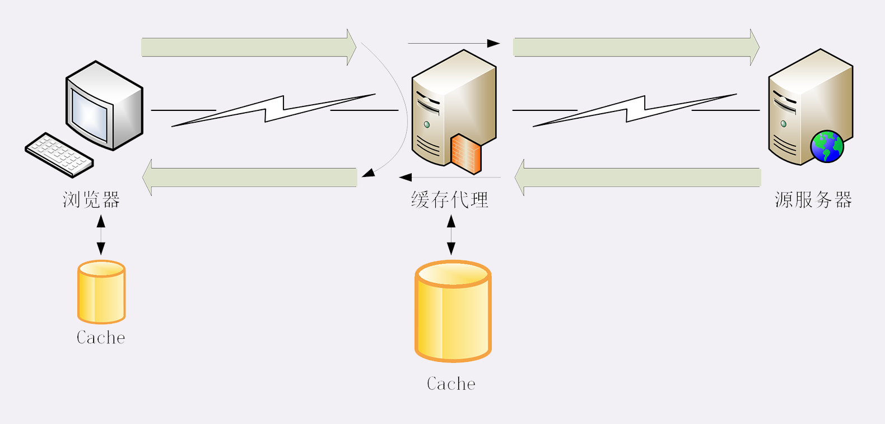
通过这个比喻，你可以看到：在没有缓存的时候，代理服务器每次都是直接转发客户端和服务器的报文，中间不会存储任何数据，只有最简单的中转功能。
加入了缓存后就不一样了。
代理服务收到源服务器发来的响应数据后需要做两件事。第一个当然是把报文转发给客户端，而第二个就是把报文存入自己的 Cache 里。
下一次再有相同的请求，代理服务器就可以直接发送 304 或者缓存数据，不必再从源服务器那里获取。这样就降低了客户端的等待时间，同时节约了源服务器的网络带宽。
在 HTTP 的缓存体系中，缓存代理的身份十分特殊，它“既是客户端，又是服务器”，同时也“既不是客户端，又不是服务器”。
说它“即是客户端又是服务器”，是因为它面向源服务器时是客户端，在面向客户端时又是服务器，所以它即可以用客户端的缓存控制策略也可以用服务器端的缓存控制策略，也就是说它可以同时使用第 20 讲的各种“Cache-Control”属性。
但缓存代理也“即不是客户端又不是服务器”，因为它只是一个数据的“中转站”，并不是真正的数据消费者和生产者，所以还需要有一些新的“Cache-Control”属性来对它做特别的约束。
源服务器的缓存控制
[第 20 讲]介绍了 4 种服务器端的“Cache-Control”属性：max-age、no_store、no_cache 和 must-revalidate，你应该还有印象吧？
这 4 种缓存属性可以约束客户端，也可以约束代理。
但客户端和代理是不一样的，客户端的缓存只是用户自己使用，而代理的缓存可能会为非常多的客户端提供服务。所以，需要对它的缓存再多一些限制条件。
首先，我们要区分客户端上的缓存和代理上的缓存，可以使用两个新属性“private”和“public”。
“private”表示缓存只能在客户端保存，是用户“私有”的，不能放在代理上与别人共享。而“public”的意思就是缓存完全开放，谁都可以存，谁都可以用。
比如你登录论坛，返回的响应报文里用“Set-Cookie”添加了论坛 ID，这就属于私人数据，不能存在代理上。不然，别人访问代理获取了被缓存的响应就麻烦了。
其次，缓存失效后的重新验证也要区分开（即使用条件请求“Last-modified”和“ETag”），“must-revalidate”是只要过期就必须回源服务器验证，而新的“proxy-revalidate”只要求代理的缓存过期后必须验证，客户端不必回源，只验证到代理这个环节就行了。
再次，缓存的生存时间可以使用新的“s-maxage”（s 是 share 的意思，注意 maxage 中间没有“-”），只限定在代理上能够存多久，而客户端仍然使用“max_age”。
还有一个代理专用的属性“no-transform”。代理有时候会对缓存下来的数据做一些优化，比如把图片生成 png、webp 等几种格式，方便今后的请求处理，而“no-transform”就会禁止这样做，不许“偷偷摸摸搞小动作”。
这些新的缓存控制属性比较复杂，还是用“便利店冷柜”来举例好理解一些。
水果上贴着标签“private, max-age=5”。这就是说水果不能放进冷柜，必须直接给顾客，保鲜期 5 天，过期了还得去超市重新进货。
冻鱼上贴着标签“public, max-age=5, s-maxage=10”。这个的意思就是可以在冰柜里存 10 天，但顾客那里只能存 5 天，过期了可以来便利店取，只要在 10 天之内就不必再找超市。
排骨上贴着标签“max-age=30, proxy-revalidate, no-transform”。因为缓存默认是 public 的，那么它在便利店和顾客的冰箱里就都可以存 30 天，过期后便利店必须去超市进新货，而且不能擅自把“大排”改成“小排”。
下面的流程图是完整的服务器端缓存控制策略，可以同时控制客户端和代理。
我还要提醒你一点，源服务器在设置完“Cache-Control”后必须要为报文加上“Last-modified”或“ETag”字段。否则，客户端和代理后面就无法使用条件请求来验证缓存是否有效，也就不会有 304 缓存重定向。
客户端的缓存控制
说完了服务器端的缓存控制策略，稍微歇一口气，我们再来看看客户端。
客户端在 HTTP 缓存体系里要面对的是代理和源服务器，也必须区别对待，这里我就直接上图了，来个“看图说话”。
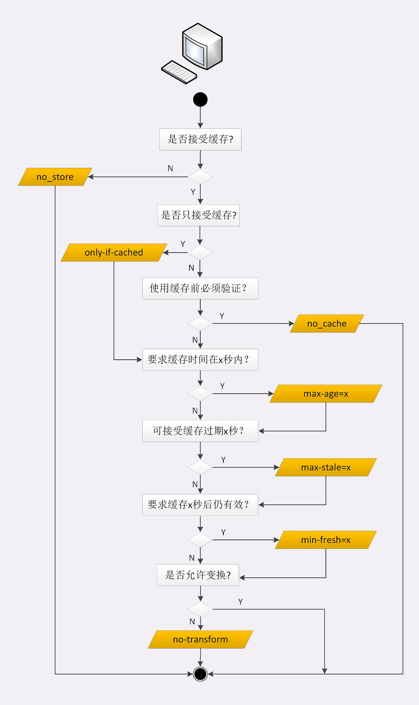
max-age、no_store、no_cache 这三个属性在[第 20 讲]已经介绍过了，它们也是同样作用于代理和源服务器。
关于缓存的生存时间，多了两个新属性“max-stale”和“min-fresh”。
“max-stale”的意思是如果代理上的缓存过期了也可以接受，但不能过期太多，超过 x 秒也会不要。“min-fresh”的意思是缓存必须有效，而且必须在 x 秒后依然有效。
比如，草莓上贴着标签“max-age=5”，现在已经在冰柜里存了 7 天。如果有请求“max-stale=2”，意思是过期两天也能接受，所以刚好能卖出去。
但要是“min-fresh=1”，这是绝对不允许过期的，就不会买走。这时如果有另外一个菠萝是“max-age=10”，那么“7+1<10”，在一天之后还是新鲜的，所以就能卖出去。
有的时候客户端还会发出一个特别的“only-if-cached”属性，表示只接受代理缓存的数据，不接受源服务器的响应。如果代理上没有缓存或者缓存过期，就应该给客户端返回一个 504（Gateway Timeout）。
实验环境
信息量有些大，到这里你是不是有点头疼了，好在我们还有实验环境，用 URI“/22-1”试一下吧。
它设置了“Cache-Control: public, max-age=10, s-maxage=30”，数据可以在浏览器里存 10 秒，在代理上存 30 秒，你可以反复刷新，看看代理和源服务器是怎么响应的，同样也可以配合 Wireshark 抓包。
代理在响应报文里还额外加了“X-Cache”“X-Hit”等自定义头字段，表示缓存是否命中和命中率，方便你观察缓存代理的工作情况。
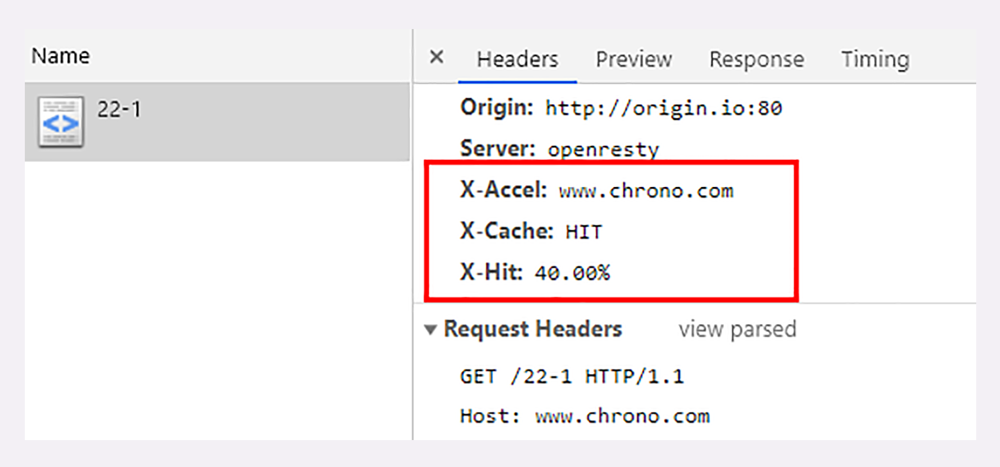
其他问题
缓存代理的知识就快讲完了，下面再简单说两个相关的问题。
第一个是“Vary”字段，在[第 15 讲]曾经说过，它是内容协商的结果，相当于报文的一个版本标记。
同一个请求，经过内容协商后可能会有不同的字符集、编码、浏览器等版本。比如，“Vary: Accept-Encoding”“Vary: User-Agent”，缓存代理必须要存储这些不同的版本。
当再收到相同的请求时，代理就读取缓存里的“Vary”，对比请求头里相应的“ Accept-Encoding”“User-Agent”等字段，如果和上一个请求的完全匹配，比如都是“gzip”“Chrome”，就表示版本一致，可以返回缓存的数据。
另一个问题是“Purge”，也就是“缓存清理”，它对于代理也是非常重要的功能，例如：
- 过期的数据应该及时淘汰，避免占用空间；
- 源站的资源有更新，需要删除旧版本，主动换成最新版（即刷新）；
- 有时候会缓存了一些本不该存储的信息，例如网络谣言或者危险链接，必须尽快把它们删除。
清理缓存的方法有很多，比较常用的一种做法是使用自定义请求方法“PURGE”，发给代理服务器，要求删除 URI 对应的缓存数据。
小结
- 计算机领域里最常用的性能优化手段是“时空转换”，也就是“时间换空间”或者“空间换时间”，HTTP 缓存属于后者；
- 缓存代理是增加了缓存功能的代理服务，缓存源服务器的数据，分发给下游的客户端；
- “Cache-Control”字段也可以控制缓存代理，常用的有“private”“s-maxage”“no-transform”等，同样必须配合“Last-modified”“ETag”等字段才能使用；
- 缓存代理有时候也会带来负面影响，缓存不良数据，需要及时刷新或删除。
课下作业
- 加入了代理后 HTTP 的缓存复杂了很多，试着用自己的语言把这些知识再整理一下，画出有缓存代理时浏览器的工作流程图，加深理解。
- 缓存的时间策略很重要，太大太小都不好，你觉得应该如何设置呢？
欢迎你把自己的学习体会写在留言区，与我和其他同学一起讨论。如果你觉得有所收获，也欢迎把文章分享给你的朋友。
23 HTTPS是什么？SSLTLS又是什么？
从今天开始，我们开始进入全新的“安全篇”，聊聊与安全相关的 HTTPS、SSL、TLS。
在[第 14 讲]中，我曾经谈到过 HTTP 的一些缺点，其中的“无状态”在加入 Cookie 后得到了解决，而另两个缺点——“明文”和“不安全”仅凭 HTTP 自身是无力解决的，需要引入新的 HTTPS 协议。
为什么要有 HTTPS？
简单的回答是“因为 HTTP 不安全”。
由于 HTTP 天生“明文”的特点，整个传输过程完全透明，任何人都能够在链路中截获、修改或者伪造请求 / 响应报文，数据不具有可信性。
比如，前几讲中说过的“代理服务”。它作为 HTTP 通信的中间人，在数据上下行的时候可以添加或删除部分头字段，也可以使用黑白名单过滤 body 里的关键字，甚至直接发送虚假的请求、响应，而浏览器和源服务器都没有办法判断报文的真伪。
这对于网络购物、网上银行、证券交易等需要高度信任的应用场景来说是非常致命的。如果没有基本的安全保护，使用互联网进行各种电子商务、电子政务就根本无从谈起。
对于安全性要求不那么高的新闻、视频、搜索等网站来说，由于互联网上的恶意用户、恶意代理越来越多，也很容易遭到“流量劫持”的攻击，在页面里强行嵌入广告，或者分流用户，导致各种利益损失。
对于你我这样的普通网民来说，HTTP 不安全的隐患就更大了，上网的记录会被轻易截获，网站是否真实也无法验证，黑客可以伪装成银行网站，盗取真实姓名、密码、银行卡等敏感信息，威胁人身安全和财产安全。
总的来说，今天的互联网已经不再是早期的“田园牧歌”时代，而是进入了“黑暗森林”状态。上网的时候必须步步为营、处处小心，否则就会被不知道埋伏在哪里的黑客所“猎杀”。
什么是安全？
既然 HTTP“不安全”，那什么样的通信过程才是安全的呢？
通常认为，如果通信过程具备了四个特性，就可以认为是“安全”的，这四个特性是：机密性、完整性，身份认证和不可否认。
机密性（Secrecy/Confidentiality）是指对数据的“保密”，只能由可信的人访问，对其他人是不可见的“秘密”，简单来说就是不能让不相关的人看到不该看的东西。
比如小明和小红私下聊天，但“隔墙有耳”，被小强在旁边的房间里全偷听到了，这就是没有机密性。我们之前一直用的 Wireshark ，实际上也是利用了 HTTP 的这个特点，捕获了传输过程中的所有数据。
完整性（Integrity，也叫一致性）是指数据在传输过程中没有被窜改，不多也不少，“完完整整”地保持着原状。
机密性虽然可以让数据成为“秘密”，但不能防止黑客对数据的修改，黑客可以替换数据，调整数据的顺序，或者增加、删除部分数据，破坏通信过程。
比如，小明给小红写了张纸条：“明天公园见”。小强把“公园”划掉，模仿小明的笔迹把这句话改成了“明天广场见”。小红收到后无法验证完整性，信以为真，第二天的约会就告吹了。
身份认证（Authentication）是指确认对方的真实身份，也就是“证明你真的是你”，保证消息只能发送给可信的人。
如果通信时另一方是假冒的网站，那么数据再保密也没有用，黑客完全可以使用冒充的身份“套”出各种信息，加密和没加密一样。
比如，小明给小红写了封情书：“我喜欢你”，但不留心发给了小强。小强将错就错，假冒小红回复了一个“白日做梦”，小明不知道这其实是小强的话，误以为是小红的，后果可想而知。
第四个特性是不可否认（Non-repudiation/Undeniable），也叫不可抵赖，意思是不能否认已经发生过的行为，不能“说话不算数”“耍赖皮”。
使用前三个特性，可以解决安全通信的大部分问题，但如果缺了不可否认，那通信的事务真实性就得不到保证，有可能出现“老赖”。
比如，小明借了小红一千元，没写借条，第二天矢口否认，小红也确实拿不出借钱的证据，只能认倒霉。另一种情况是小明借钱后还了小红，但没写收条，小红于是不承认小明还钱的事，说根本没还，要小明再掏出一千元。
所以，只有同时具备了机密性、完整性、身份认证、不可否认这四个特性，通信双方的利益才能有保障，才能算得上是真正的安全。
什么是 HTTPS？
说到这里，终于轮到今天的主角 HTTPS 出场了，它为 HTTP 增加了刚才所说的四大安全特性。
HTTPS 其实是一个“非常简单”的协议，RFC 文档很小，只有短短的 7 页，里面规定了新的协议名“https”，默认端口号 443，至于其他的什么请求 - 应答模式、报文结构、请求方法、URI、头字段、连接管理等等都完全沿用 HTTP，没有任何新的东西。
也就是说，除了协议名“http”和端口号 80 这两点不同，HTTPS 协议在语法、语义上和 HTTP 完全一样，优缺点也“照单全收”（当然要除去“明文”和“不安全”）。
不信你可以用 URI“https://www.chrono.com”访问之前 08 至 21 讲的所有示例，看看它的响应报文是否与 HTTP 一样。
https://www.chrono.com
https://www.chrono.com/11-1
https://www.chrono.com/15-1?name=a.json
https://www.chrono.com/16-1
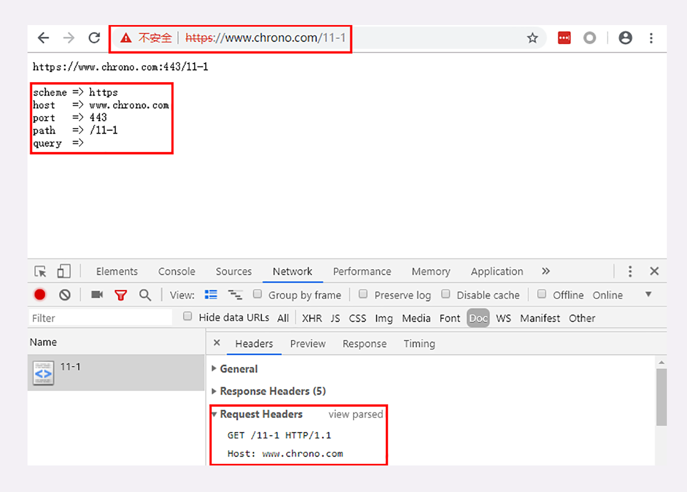
你肯定已经注意到了，在用 HTTPS 访问实验环境时 Chrome 会有不安全提示，必须点击“高级 - 继续前往”才能顺利显示页面。而且如果用 Wireshark 抓包，也会发现与 HTTP 不一样，不再是简单可见的明文，多了“Client Hello”“Server Hello”等新的数据包。
这就是 HTTPS 与 HTTP 最大的区别，它能够鉴别危险的网站，并且尽最大可能保证你的上网安全，防御黑客对信息的窃听、窜改或者“钓鱼”、伪造。
你可能要问了，既然没有新东西，HTTPS 凭什么就能做到机密性、完整性这些安全特性呢？
秘密就在于 HTTPS 名字里的“S”，它把 HTTP 下层的传输协议由 TCP/IP 换成了 SSL/TLS，由“HTTP over TCP/IP”变成了“HTTP over SSL/TLS”，让 HTTP 运行在了安全的 SSL/TLS 协议上（可参考第 4 讲和第 5 讲），收发报文不再使用 Socket API，而是调用专门的安全接口。

所以说，HTTPS 本身并没有什么“惊世骇俗”的本事，全是靠着后面的 SSL/TLS“撑腰”。只要学会了 SSL/TLS，HTTPS 自然就“手到擒来”。
SSL/TLS
现在我们就来看看 SSL/TLS，它到底是个什么来历。
SSL 即安全套接层（Secure Sockets Layer），在 OSI 模型中处于第 5 层（会话层），由网景公司于 1994 年发明，有 v2 和 v3 两个版本，而 v1 因为有严重的缺陷从未公开过。
SSL 发展到 v3 时已经证明了它自身是一个非常好的安全通信协议，于是互联网工程组 IETF 在 1999 年把它改名为 TLS（传输层安全，Transport Layer Security），正式标准化，版本号从 1.0 重新算起，所以 TLS1.0 实际上就是 SSLv3.1。
到今天 TLS 已经发展出了三个版本，分别是 2006 年的 1.1、2008 年的 1.2 和去年（2018）的 1.3，每个新版本都紧跟密码学的发展和互联网的现状，持续强化安全和性能，已经成为了信息安全领域中的权威标准。
目前应用的最广泛的 TLS 是 1.2，而之前的协议（TLS1.1/1.0、SSLv3/v2）都已经被认为是不安全的，各大浏览器即将在 2020 年左右停止支持，所以接下来的讲解都针对的是 TLS1.2。
TLS 由记录协议、握手协议、警告协议、变更密码规范协议、扩展协议等几个子协议组成，综合使用了对称加密、非对称加密、身份认证等许多密码学前沿技术。
浏览器和服务器在使用 TLS 建立连接时需要选择一组恰当的加密算法来实现安全通信，这些算法的组合被称为“密码套件”（cipher suite，也叫加密套件）。
你可以访问实验环境的 URI“/23-1”，对 TLS 和密码套件有个感性的认识。

你可以看到，实验环境使用的 TLS 是 1.2，客户端和服务器都支持非常多的密码套件，而最后协商选定的是“ECDHE-RSA-AES256-GCM-SHA384”。
这么长的名字看着有点晕吧，不用怕，其实 TLS 的密码套件命名非常规范，格式很固定。基本的形式是“密钥交换算法 + 签名算法 + 对称加密算法 + 摘要算法”，比如刚才的密码套件的意思就是：
“握手时使用 ECDHE 算法进行密钥交换，用 RSA 签名和身份认证，握手后的通信使用 AES 对称算法，密钥长度 256 位，分组模式是 GCM，摘要算法 SHA384 用于消息认证和产生随机数。”
OpenSSL
说到 TLS，就不能不谈到 OpenSSL，它是一个著名的开源密码学程序库和工具包，几乎支持所有公开的加密算法和协议，已经成为了事实上的标准，许多应用软件都会使用它作为底层库来实现 TLS 功能，包括常用的 Web 服务器 Apache、Nginx 等。
OpenSSL 是从另一个开源库 SSLeay 发展出来的，曾经考虑命名为“OpenTLS”，但当时（1998 年）TLS 还未正式确立，而 SSL 早已广为人知，所以最终使用了“OpenSSL”的名字。
OpenSSL 目前有三个主要的分支，1.0.2 和 1.1.0 都将在今年（2019）年底不再维护，最新的长期支持版本是 1.1.1，我们的实验环境使用的 OpenSSL 是“1.1.0j”。
由于 OpenSSL 是开源的，所以它还有一些代码分支，比如 Google 的 BoringSSL、OpenBSD 的 LibreSSL，这些分支在 OpenSSL 的基础上删除了一些老旧代码，也增加了一些新特性，虽然背后有“大金主”，但离取代 OpenSSL 还差得很远。
小结
- 因为 HTTP 是明文传输，所以不安全，容易被黑客窃听或窜改；
- 通信安全必须同时具备机密性、完整性，身份认证和不可否认这四个特性；
- HTTPS 的语法、语义仍然是 HTTP，但把下层的协议由 TCP/IP 换成了 SSL/TLS；
- SSL/TLS 是信息安全领域中的权威标准，采用多种先进的加密技术保证通信安全；
- OpenSSL 是著名的开源密码学工具包，是 SSL/TLS 的具体实现。
课下作业
- 你能说出 HTTPS 与 HTTP 有哪些区别吗？
- 你知道有哪些方法能够实现机密性、完整性等安全特性呢？
欢迎你把自己的学习体会写在留言区，与我和其他同学一起讨论。如果你觉得有所收获，也欢迎把文章分享给你的朋友。
24 固若金汤的根本（上）：对称加密与非对称加密
在上一讲中，我们初步学习了 HTTPS，知道 HTTPS 的安全性是由 TLS 来保证的。
你一定很好奇，它是怎么为 HTTP 增加了机密性、完整性，身份认证和不可否认等特性的呢？
先说说机密性。它是信息安全的基础，缺乏机密性 TLS 就会成为“无水之源”“无根之木”。
实现机密性最常用的手段是“加密”（encrypt），就是把消息用某种方式转换成谁也看不懂的乱码，只有掌握特殊“钥匙”的人才能再转换出原始文本。
这里的“钥匙”就叫做“密钥”（key），加密前的消息叫“明文”（plain text/clear text），加密后的乱码叫“密文”（cipher text），使用密钥还原明文的过程叫“解密”（decrypt），是加密的反操作，加密解密的操作过程就是“加密算法”。
所有的加密算法都是公开的，任何人都可以去分析研究，而算法使用的“密钥”则必须保密。那么，这个关键的“密钥”又是什么呢？
由于 HTTPS、TLS 都运行在计算机上，所以“密钥”就是一长串的数字，但约定俗成的度量单位是“位”（bit），而不是“字节”（byte）。比如，说密钥长度是 128，就是 16 字节的二进制串，密钥长度 1024，就是 128 字节的二进制串。
按照密钥的使用方式，加密可以分为两大类：对称加密和非对称加密。
对称加密
“对称加密”很好理解，就是指加密和解密时使用的密钥都是同一个，是“对称”的。只要保证了密钥的安全，那整个通信过程就可以说具有了机密性。
举个例子，你想要登录某网站，只要事先和它约定好使用一个对称密码，通信过程中传输的全是用密钥加密后的密文，只有你和网站才能解密。黑客即使能够窃听，看到的也只是乱码，因为没有密钥无法解出明文，所以就实现了机密性。

TLS 里有非常多的对称加密算法可供选择，比如 RC4、DES、3DES、AES、ChaCha20 等，但前三种算法都被认为是不安全的，通常都禁止使用，目前常用的只有 AES 和 ChaCha20。
AES 的意思是“高级加密标准”（Advanced Encryption Standard），密钥长度可以是 128、192 或 256。它是 DES 算法的替代者，安全强度很高，性能也很好，而且有的硬件还会做特殊优化，所以非常流行，是应用最广泛的对称加密算法。
ChaCha20 是 Google 设计的另一种加密算法，密钥长度固定为 256 位，纯软件运行性能要超过 AES，曾经在移动客户端上比较流行，但 ARMv8 之后也加入了 AES 硬件优化，所以现在不再具有明显的优势，但仍然算得上是一个不错算法。
加密分组模式
对称算法还有一个“分组模式”的概念，它可以让算法用固定长度的密钥加密任意长度的明文，把小秘密（即密钥）转化为大秘密（即密文）。
最早有 ECB、CBC、CFB、OFB 等几种分组模式，但都陆续被发现有安全漏洞，所以现在基本都不怎么用了。最新的分组模式被称为 AEAD（Authenticated Encryption with Associated Data），在加密的同时增加了认证的功能，常用的是 GCM、CCM 和 Poly1305。
把上面这些组合起来，就可以得到 TLS 密码套件中定义的对称加密算法。
比如，AES128-GCM，意思是密钥长度为 128 位的 AES 算法，使用的分组模式是 GCM；ChaCha20-Poly1305 的意思是 ChaCha20 算法，使用的分组模式是 Poly1305。
你可以用实验环境的 URI“/24-1”来测试 OpenSSL 里的 AES128-CBC，在 URI 后用参数“key”“plain”输入密钥和明文，服务器会在响应报文里输出加密解密的结果。
https://www.chrono.com/24-1?key=123456
algo = aes_128_cbc
plain = hello openssl
enc = 93a024a94083bc39fb2c2b9f5ce27c09
dec = hello openssl
非对称加密
对称加密看上去好像完美地实现了机密性，但其中有一个很大的问题：如何把密钥安全地传递给对方，术语叫“密钥交换”。
因为在对称加密算法中只要持有密钥就可以解密。如果你和网站约定的密钥在传递途中被黑客窃取，那他就可以在之后随意解密收发的数据，通信过程也就没有机密性可言了。
这个问题该怎么解决呢？
你或许会说：“把密钥再加密一下发过去就好了”，但传输“加密密钥的密钥”又成了新问题。这就像是“鸡生蛋、蛋生鸡”，可以无限递归下去。只用对称加密算法，是绝对无法解决密钥交换的问题的。
所以，就出现了非对称加密（也叫公钥加密算法）。
它有两个密钥，一个叫“公钥”（public key），一个叫“私钥”（private key）。两个密钥是不同的，“不对称”，公钥可以公开给任何人使用，而私钥必须严格保密。
公钥和私钥有个特别的“单向”性，虽然都可以用来加密解密，但公钥加密后只能用私钥解密，反过来，私钥加密后也只能用公钥解密。
非对称加密可以解决“密钥交换”的问题。网站秘密保管私钥，在网上任意分发公钥，你想要登录网站只要用公钥加密就行了，密文只能由私钥持有者才能解密。而黑客因为没有私钥，所以就无法破解密文。
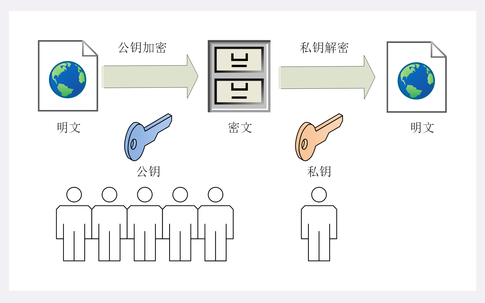
非对称加密算法的设计要比对称算法难得多，在 TLS 里只有很少的几种，比如 DH、DSA、RSA、ECC 等。
RSA 可能是其中最著名的一个，几乎可以说是非对称加密的代名词，它的安全性基于“整数分解”的数学难题，使用两个超大素数的乘积作为生成密钥的材料，想要从公钥推算出私钥是非常困难的。
10 年前 RSA 密钥的推荐长度是 1024，但随着计算机运算能力的提高，现在 1024 已经不安全，普遍认为至少要 2048 位。
ECC（Elliptic Curve Cryptography）是非对称加密里的“后起之秀”，它基于“椭圆曲线离散对数”的数学难题，使用特定的曲线方程和基点生成公钥和私钥，子算法 ECDHE 用于密钥交换，ECDSA 用于数字签名。
目前比较常用的两个曲线是 P-256（secp256r1，在 OpenSSL 称为 prime256v1）和 x25519。P-256 是 NIST（美国国家标准技术研究所）和 NSA（美国国家安全局）推荐使用的曲线，而 x25519 被认为是最安全、最快速的曲线。
ECC 名字里的“椭圆”经常会引起误解，其实它的曲线并不是椭圆形，只是因为方程很类似计算椭圆周长的公式，实际的形状更像抛物线，比如下面的图就展示了两个简单的椭圆曲线。
两个简单的椭圆曲线：y^2=x^3+7，y^2=x^3-x
比起 RSA，ECC 在安全强度和性能上都有明显的优势。160 位的 ECC 相当于 1024 位的 RSA，而 224 位的 ECC 则相当于 2048 位的 RSA。因为密钥短，所以相应的计算量、消耗的内存和带宽也就少，加密解密的性能就上去了，对于现在的移动互联网非常有吸引力。
实验环境的 URI“/24-2”演示了 RSA1024，你在课后可以动手试一下。
混合加密
看到这里，你是不是认为可以抛弃对称加密，只用非对称加密来实现机密性呢？
很遗憾，虽然非对称加密没有“密钥交换”的问题，但因为它们都是基于复杂的数学难题，运算速度很慢，即使是 ECC 也要比 AES 差上好几个数量级。如果仅用非对称加密，虽然保证了安全，但通信速度有如乌龟、蜗牛，实用性就变成了零。
实验环境的 URI“/24-3”对比了 AES 和 RSA 这两种算法的性能，下面列出了一次测试的结果：
aes_128_cbc enc/dec 1000 times : 0.97ms, 13.11MB/s
rsa_1024 enc/dec 1000 times : 138.59ms, 93.80KB/s
rsa_1024/aes ratio = 143.17
rsa_2048 enc/dec 1000 times : 840.35ms, 15.47KB/s
rsa_2048/aes ratio = 868.13
可以看到，RSA 的运算速度是非常慢的，2048 位的加解密大约是 15KB/S（微秒或毫秒级），而 AES128 则是 13MB/S（纳秒级），差了几百倍。
那么，是不是能够把对称加密和非对称加密结合起来呢，两者互相取长补短，即能高效地加密解密，又能安全地密钥交换。
这就是现在 TLS 里使用的混合加密方式，其实说穿了也很简单：
在通信刚开始的时候使用非对称算法，比如 RSA、ECDHE，首先解决密钥交换的问题。
然后用随机数产生对称算法使用的“会话密钥”（session key），再用公钥加密。因为会话密钥很短，通常只有 16 字节或 32 字节，所以慢一点也无所谓。
对方拿到密文后用私钥解密，取出会话密钥。这样，双方就实现了对称密钥的安全交换，后续就不再使用非对称加密，全都使用对称加密。
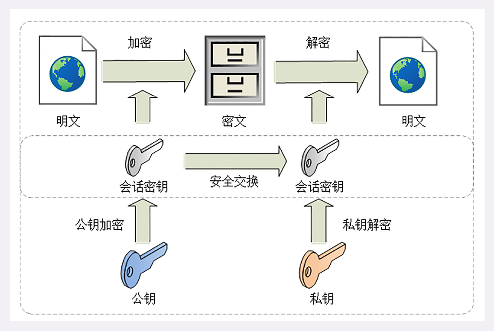
这样混合加密就解决了对称加密算法的密钥交换问题，而且安全和性能兼顾，完美地实现了机密性。
不过这只是“万里长征的第一步”，后面还有完整性、身份认证、不可否认等特性没有实现，所以现在的通信还不是绝对安全，我们下次再说。
小结
- 加密算法的核心思想是“把一个小秘密（密钥）转化为一个大秘密（密文消息）”，守住了小秘密，也就守住了大秘密；
- 对称加密只使用一个密钥，运算速度快，密钥必须保密，无法做到安全的密钥交换，常用的有 AES 和 ChaCha20；
- 非对称加密使用两个密钥：公钥和私钥，公钥可以任意分发而私钥保密，解决了密钥交换问题但速度慢，常用的有 RSA 和 ECC；
- 把对称加密和非对称加密结合起来就得到了“又好又快”的混合加密，也就是 TLS 里使用的加密方式。
课下作业
- 加密算法中“密钥”的名字很形象，你能试着用现实中的锁和钥匙来比喻一下吗？
- 在混合加密中用到了公钥加密，因为只能由私钥解密。那么反过来，私钥加密后任何人都可以用公钥解密，这有什么用呢？
欢迎你把自己的学习体会写在留言区，与我和其他同学一起讨论。如果你觉得有所收获，也欢迎把文章分享给你的朋友。
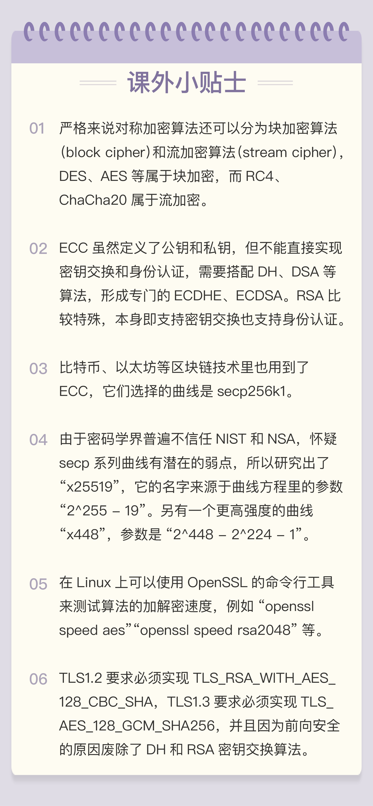
25 固若金汤的根本（下）：数字签名与证书
上一讲中我们学习了对称加密和非对称加密，以及两者结合起来的混合加密，实现了机密性。
但仅有机密性，离安全还差的很远。
黑客虽然拿不到会话密钥，无法破解密文，但可以通过窃听收集到足够多的密文，再尝试着修改、重组后发给网站。因为没有完整性保证，服务器只能“照单全收”，然后他就可以通过服务器的响应获取进一步的线索，最终就会破解出明文。
另外，黑客也可以伪造身份发布公钥。如果你拿到了假的公钥，混合加密就完全失效了。你以为自己是在和“某宝”通信，实际上网线的另一端却是黑客，银行卡号、密码等敏感信息就在“安全”的通信过程中被窃取了。
所以，在机密性的基础上还必须加上完整性、身份认证等特性，才能实现真正的安全。
摘要算法
实现完整性的手段主要是摘要算法（Digest Algorithm），也就是常说的散列函数、哈希函数（Hash Function）。
你可以把摘要算法近似地理解成一种特殊的压缩算法，它能够把任意长度的数据“压缩”成固定长度、而且独一无二的“摘要”字符串，就好像是给这段数据生成了一个数字“指纹”。
换一个角度，也可以把摘要算法理解成特殊的“单向”加密算法，它只有算法，没有密钥，加密后的数据无法解密，不能从摘要逆推出原文。

摘要算法实际上是把数据从一个“大空间”映射到了“小空间”，所以就存在“冲突”（collision，也叫碰撞）的可能性，就如同现实中的指纹一样，可能会有两份不同的原文对应相同的摘要。好的摘要算法必须能够“抵抗冲突”，让这种可能性尽量地小。
因为摘要算法对输入具有“单向性”和“雪崩效应”，输入的微小不同会导致输出的剧烈变化，所以也被 TLS 用来生成伪随机数（PRF，pseudo random function）。
你一定在日常工作中听过、或者用过 MD5（Message-Digest 5）、SHA-1（Secure Hash Algorithm 1），它们就是最常用的两个摘要算法，能够生成 16 字节和 20 字节长度的数字摘要。但这两个算法的安全强度比较低，不够安全，在 TLS 里已经被禁止使用了。
目前 TLS 推荐使用的是 SHA-1 的后继者：SHA-2。
SHA-2 实际上是一系列摘要算法的统称，总共有 6 种，常用的有 SHA224、SHA256、SHA384，分别能够生成 28 字节、32 字节、48 字节的摘要。
你可以用实验环境的 URI“/25-1”来测试一下 TLS 里的各种摘要算法，包括 MD5、SHA-1 和 SHA-2。
https://www.chrono.com/25-1?algo=md5
https://www.chrono.com/25-1?algo=sha1
https://www.chrono.com/25-1?algo=sha256
完整性
摘要算法保证了“数字摘要”和原文是完全等价的。所以，我们只要在原文后附上它的摘要，就能够保证数据的完整性。
比如，你发了条消息：“转账 1000 元”，然后再加上一个 SHA-2 的摘要。网站收到后也计算一下消息的摘要，把这两份“指纹”做个对比，如果一致，就说明消息是完整可信的，没有被修改。
如果黑客在中间哪怕改动了一个标点符号，摘要也会完全不同，网站计算比对就会发现消息被窜改，是不可信的。
不过摘要算法不具有机密性，如果明文传输，那么黑客可以修改消息后把摘要也一起改了，网站还是鉴别不出完整性。
所以，真正的完整性必须要建立在机密性之上，在混合加密系统里用会话密钥加密消息和摘要，这样黑客无法得知明文，也就没有办法动手脚了。
这有个术语，叫哈希消息认证码（HMAC）。
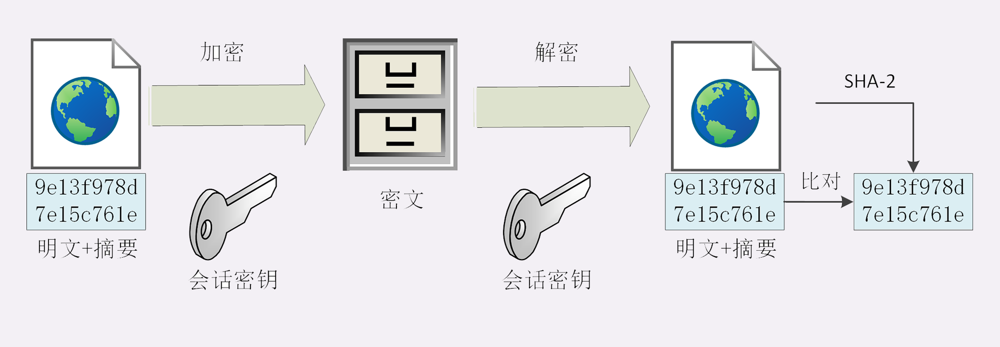
数字签名
加密算法结合摘要算法，我们的通信过程可以说是比较安全了。但这里还有漏洞，就是通信的两个端点（endpoint）。
就像一开始所说的，黑客可以伪装成网站来窃取信息。而反过来，他也可以伪装成你，向网站发送支付、转账等消息，网站没有办法确认你的身份，钱可能就这么被偷走了。
现实生活中，解决身份认证的手段是签名和印章，只要在纸上写下签名或者盖个章，就能够证明这份文件确实是由本人而不是其他人发出的。
你回想一下之前的课程，在 TLS 里有什么东西和现实中的签名、印章很像，只能由本人持有，而其他任何人都不会有呢？只要用这个东西，就能够在数字世界里证明你的身份。
没错，这个东西就是非对称加密里的“私钥”，使用私钥再加上摘要算法，就能够实现“数字签名”，同时实现“身份认证”和“不可否认”。
数字签名的原理其实很简单，就是把公钥私钥的用法反过来，之前是公钥加密、私钥解密，现在是私钥加密、公钥解密。
但又因为非对称加密效率太低，所以私钥只加密原文的摘要，这样运算量就小的多，而且得到的数字签名也很小，方便保管和传输。
签名和公钥一样完全公开，任何人都可以获取。但这个签名只有用私钥对应的公钥才能解开，拿到摘要后，再比对原文验证完整性，就可以像签署文件一样证明消息确实是你发的。

刚才的这两个行为也有专用术语，叫做“签名”和“验签”。
只要你和网站互相交换公钥，就可以用“签名”和“验签”来确认消息的真实性，因为私钥保密，黑客不能伪造签名，就能够保证通信双方的身份。
比如，你用自己的私钥签名一个消息“我是小明”。网站收到后用你的公钥验签，确认身份没问题，于是也用它的私钥签名消息“我是某宝”。你收到后再用它的公钥验一下，也没问题，这样你和网站就都知道对方不是假冒的，后面就可以用混合加密进行安全通信了。
实验环境的 URI“/25-2”演示了 TLS 里的数字签名，它使用的是 RSA1024。
数字证书和 CA
到现在，综合使用对称加密、非对称加密和摘要算法，我们已经实现了安全的四大特性，是不是已经完美了呢？
不是的，这里还有一个“公钥的信任”问题。因为谁都可以发布公钥，我们还缺少防止黑客伪造公钥的手段，也就是说，怎么来判断这个公钥就是你或者某宝的公钥呢？
真是“按下葫芦又起了瓢”，安全还真是个麻烦事啊，“一环套一环”的。
我们可以用类似密钥交换的方法来解决公钥认证问题，用别的私钥来给公钥签名，显然，这又会陷入“无穷递归”。
但这次实在是“没招”了，要终结这个“死循环”，就必须引入“外力”，找一个公认的可信第三方，让它作为“信任的起点，递归的终点”，构建起公钥的信任链。
这个“第三方”就是我们常说的CA（Certificate Authority，证书认证机构）。它就像网络世界里的公安局、教育部、公证中心，具有极高的可信度，由它来给各个公钥签名，用自身的信誉来保证公钥无法伪造，是可信的。
CA 对公钥的签名认证也是有格式的，不是简单地把公钥绑定在持有者身份上就完事了，还要包含序列号、用途、颁发者、有效时间等等，把这些打成一个包再签名，完整地证明公钥关联的各种信息，形成“数字证书”（Certificate）。
知名的 CA 全世界就那么几家，比如 DigiCert、VeriSign、Entrust、Let’s Encrypt 等，它们签发的证书分 DV、OV、EV 三种，区别在于可信程度。
DV 是最低的，只是域名级别的可信，背后是谁不知道。EV 是最高的，经过了法律和审计的严格核查，可以证明网站拥有者的身份（在浏览器地址栏会显示出公司的名字，例如 Apple、GitHub 的网站）。
不过，CA 怎么证明自己呢？
这还是信任链的问题。小一点的 CA 可以让大 CA 签名认证，但链条的最后，也就是Root CA，就只能自己证明自己了，这个就叫“自签名证书”（Self-Signed Certificate）或者“根证书”（Root Certificate）。你必须相信，否则整个证书信任链就走不下去了。

有了这个证书体系，操作系统和浏览器都内置了各大 CA 的根证书，上网的时候只要服务器发过来它的证书，就可以验证证书里的签名，顺着证书链（Certificate Chain）一层层地验证，直到找到根证书，就能够确定证书是可信的，从而里面的公钥也是可信的。
我们的实验环境里使用的证书是“野路子”的自签名证书（在 Linux 上用 OpenSSL 命令行签发），肯定是不会被浏览器所信任的，所以用 Chrome 访问时就会显示成红色，标记为不安全。但你只要把它安装进系统的根证书存储区里，让它作为信任链的根，就不会再有危险警告。
证书体系的弱点
证书体系（PKI，Public Key Infrastructure）虽然是目前整个网络世界的安全基础设施，但绝对的安全是不存在的，它也有弱点，还是关键的“信任”二字。
如果 CA 失误或者被欺骗，签发了错误的证书，虽然证书是真的，可它代表的网站却是假的。
还有一种更危险的情况，CA 被黑客攻陷，或者 CA 有恶意，因为它（即根证书）是信任的源头，整个信任链里的所有证书也就都不可信了。
这两种事情并不是“耸人听闻”，都曾经实际出现过。所以，需要再给证书体系打上一些补丁。
针对第一种，开发出了 CRL（证书吊销列表，Certificate revocation list）和 OCSP（在线证书状态协议，Online Certificate Status Protocol），及时废止有问题的证书。
对于第二种，因为涉及的证书太多，就只能操作系统或者浏览器从根上“下狠手”了，撤销对 CA 的信任，列入“黑名单”，这样它颁发的所有证书就都会被认为是不安全的。
小结
今天我们学习了数字签名和证书、CA，是不是有种“盗梦空间”一层套一层的感觉？你可以在课后再去各大网站，结合它们“小锁头”里的信息来加深理解。
今天的内容可以简单概括为四点：
- 摘要算法用来实现完整性，能够为数据生成独一无二的“指纹”，常用的算法是 SHA-2；
- 数字签名是私钥对摘要的加密，可以由公钥解密后验证，实现身份认证和不可否认；
- 公钥的分发需要使用数字证书，必须由 CA 的信任链来验证，否则就是不可信的；
- 作为信任链的源头 CA 有时也会不可信，解决办法有 CRL、OCSP，还有终止信任。
课下作业
- 为什么公钥能够建立信任链，用对称加密算法里的对称密钥行不行呢？
- 假设有一个三级的证书体系（Root CA=> 一级 CA=> 二级 CA），你能详细解释一下证书信任链的验证过程吗？
欢迎你把自己的学习体会写在留言区，与我和其他同学一起讨论。如果你觉得有所收获，也欢迎把文章分享给你的朋友。

26 信任始于握手：TLS1.2连接过程解析
经过前几讲的介绍，你应该已经熟悉了对称加密与非对称加密、数字签名与证书等密码学知识。
有了这些知识“打底”，现在我们就可以正式开始研究 HTTPS 和 TLS 协议了。
HTTPS 建立连接
当你在浏览器地址栏里键入“https”开头的 URI，再按下回车，会发生什么呢？
回忆一下[第 8 讲]的内容，你应该知道，浏览器首先要从 URI 里提取出协议名和域名。因为协议名是“https”，所以浏览器就知道了端口号是默认的 443，它再用 DNS 解析域名，得到目标的 IP 地址，然后就可以使用三次握手与网站建立 TCP 连接了。
在 HTTP 协议里，建立连接后，浏览器会立即发送请求报文。但现在是 HTTPS 协议，它需要再用另外一个“握手”过程，在 TCP 上建立安全连接，之后才是收发 HTTP 报文。
这个“握手”过程与 TCP 有些类似，是 HTTPS 和 TLS 协议里最重要、最核心的部分，懂了它，你就可以自豪地说自己“掌握了 HTTPS”。
TLS 协议的组成
在讲 TLS 握手之前，我先简单介绍一下 TLS 协议的组成。
TLS 包含几个子协议，你也可以理解为它是由几个不同职责的模块组成，比较常用的有记录协议、警报协议、握手协议、变更密码规范协议等。
记录协议（Record Protocol）规定了 TLS 收发数据的基本单位：记录（record）。它有点像是 TCP 里的 segment，所有的其他子协议都需要通过记录协议发出。但多个记录数据可以在一个 TCP 包里一次性发出，也并不需要像 TCP 那样返回 ACK。
警报协议（Alert Protocol）的职责是向对方发出警报信息，有点像是 HTTP 协议里的状态码。比如，protocol_version 就是不支持旧版本，bad_certificate 就是证书有问题，收到警报后另一方可以选择继续，也可以立即终止连接。
握手协议（Handshake Protocol）是 TLS 里最复杂的子协议，要比 TCP 的 SYN/ACK 复杂的多，浏览器和服务器会在握手过程中协商 TLS 版本号、随机数、密码套件等信息，然后交换证书和密钥参数，最终双方协商得到会话密钥，用于后续的混合加密系统。
最后一个是变更密码规范协议（Change Cipher Spec Protocol），它非常简单，就是一个“通知”，告诉对方，后续的数据都将使用加密保护。那么反过来，在它之前，数据都是明文的。
下面的这张图简要地描述了 TLS 的握手过程，其中每一个“框”都是一个记录，多个记录组合成一个 TCP 包发送。所以，最多经过两次消息往返（4 个消息）就可以完成握手，然后就可以在安全的通信环境里发送 HTTP 报文，实现 HTTPS 协议。
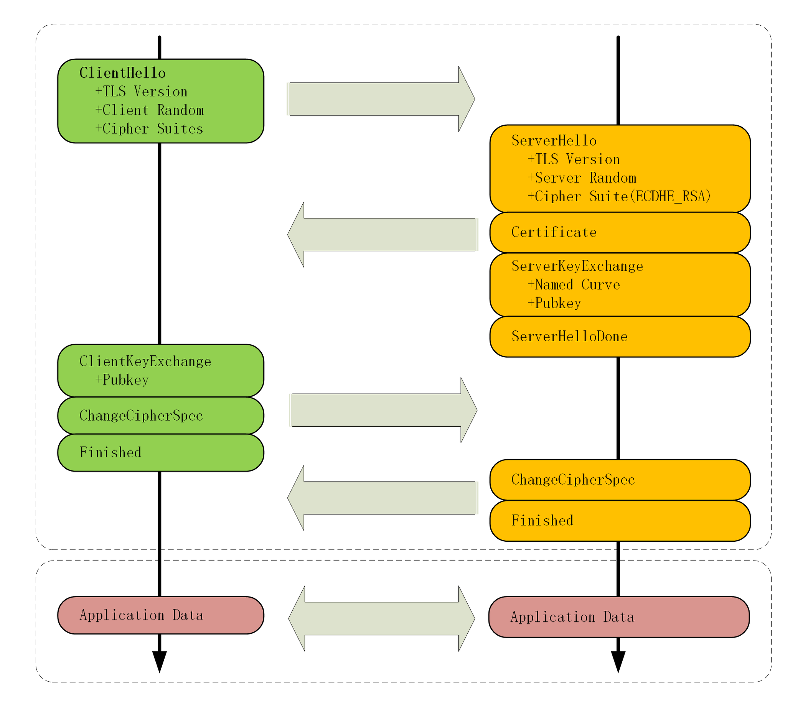
抓包的准备工作
这次我们在实验环境里测试 TLS 握手的 URI 是“/26-1”，看了上面的图你就可以知道，TLS 握手的前几个消息都是明文的，能够在 Wireshark 里直接看。但只要出现了“Change Cipher Spec”，后面的数据就都是密文了，看到的也就会是乱码，不知道究竟是什么东西。
为了更好地分析 TLS 握手过程，你可以再对系统和 Wireshark 做一下设置，让浏览器导出握手过程中的秘密信息，这样 Wireshark 就可以把密文解密，还原出明文。
首先，你需要在 Windows 的设置里新增一个系统变量“SSLKEYLOGFILE”，设置浏览器日志文件的路径，比如“D:\http_study\www\temp\sslkey.log”（具体的设置过程就不详细说了，可以在设置里搜索“系统变量”）。

然后在 Wireshark 里设置“Protocols-TLS”（较早版本的 Wireshark 里是“SSL”），在“(Pre)-Master-Secret log filename”里填上刚才的日志文件。
设置好之后，过滤器选择“tcp port 443”，就可以抓到实验环境里的所有 HTTPS 数据了。
如果你觉得麻烦也没关系，GitHub 上有抓好的包和相应的日志，用 Wireshark 直接打开就行。
ECDHE 握手过程
刚才你看到的是握手过程的简要图，我又画了一个详细图，对应 Wireshark 的抓包，下面我就用这个图来仔细剖析 TLS 的握手过程。
在 TCP 建立连接之后，浏览器会首先发一个“Client Hello”消息，也就是跟服务器“打招呼”。里面有客户端的版本号、支持的密码套件，还有一个随机数（Client Random），用于后续生成会话密钥。
Handshake Protocol: Client Hello
Version: TLS 1.2 (0x0303)
Random: 1cbf803321fd2623408dfe…
Cipher Suites (17 suites)
Cipher Suite: TLS_ECDHE_RSA_WITH_AES_128_GCM_SHA256 (0xc02f)
Cipher Suite: TLS_ECDHE_RSA_WITH_AES_256_GCM_SHA384 (0xc030)
这个的意思就是：“我这边有这些这些信息，你看看哪些是能用的，关键的随机数可得留着。”
作为“礼尚往来”，服务器收到“Client Hello”后，会返回一个“Server Hello”消息。把版本号对一下，也给出一个随机数（Server Random），然后从客户端的列表里选一个作为本次通信使用的密码套件，在这里它选择了“TLS_ECDHE_RSA_WITH_AES_256_GCM_SHA384”。
Handshake Protocol: Server Hello
Version: TLS 1.2 (0x0303)
Random: 0e6320f21bae50842e96…
Cipher Suite: TLS_ECDHE_RSA_WITH_AES_256_GCM_SHA384 (0xc030)
这个的意思就是：“版本号对上了，可以加密，你的密码套件挺多，我选一个最合适的吧，用椭圆曲线加 RSA、AES、SHA384。我也给你一个随机数，你也得留着。”
然后，服务器为了证明自己的身份，就把证书也发给了客户端（Server Certificate）。
接下来是一个关键的操作，因为服务器选择了 ECDHE 算法，所以它会在证书后发送“Server Key Exchange”消息，里面是椭圆曲线的公钥（Server Params），用来实现密钥交换算法，再加上自己的私钥签名认证。
Handshake Protocol: Server Key Exchange
EC Diffie-Hellman Server Params
Curve Type: named_curve (0x03)
Named Curve: x25519 (0x001d)
Pubkey: 3b39deaf00217894e...
Signature Algorithm: rsa_pkcs1_sha512 (0x0601)
Signature: 37141adac38ea4...
这相当于说：“刚才我选的密码套件有点复杂，所以再给你个算法的参数，和刚才的随机数一样有用，别丢了。为了防止别人冒充，我又盖了个章。”
之后是“Server Hello Done”消息，服务器说：“我的信息就是这些，打招呼完毕。”
这样第一个消息往返就结束了（两个 TCP 包），结果是客户端和服务器通过明文共享了三个信息：Client Random、Server Random 和 Server Params。
客户端这时也拿到了服务器的证书，那这个证书是不是真实有效的呢？
这就要用到第 25 讲里的知识了，开始走证书链逐级验证，确认证书的真实性，再用证书公钥验证签名，就确认了服务器的身份：“刚才跟我打招呼的不是骗子，可以接着往下走。”
然后，客户端按照密码套件的要求，也生成一个椭圆曲线的公钥（Client Params），用“Client Key Exchange”消息发给服务器。
Handshake Protocol: Client Key Exchange
EC Diffie-Hellman Client Params
Pubkey: 8c674d0e08dc27b5eaa…
现在客户端和服务器手里都拿到了密钥交换算法的两个参数（Client Params、Server Params），就用 ECDHE 算法一阵算，算出了一个新的东西，叫“Pre-Master”，其实也是一个随机数。
至于具体的计算原理和过程，因为太复杂就不细说了，但算法可以保证即使黑客截获了之前的参数，也是绝对算不出这个随机数的。
现在客户端和服务器手里有了三个随机数：Client Random、Server Random 和 Pre-Master。用这三个作为原始材料，就可以生成用于加密会 话的主密钥，叫“Master Secret”。而黑客因为拿不到“Pre-Master”，所以也就得不到主密钥。
为什么非得这么麻烦，非要三个随机数呢？
这就必须说 TLS 的设计者考虑得非常周到了，他们不信任客户端或服务器伪随机数的可靠性，为了保证真正的“完全随机”“不可预测”，把三个不可靠的随机数混合起来，那么“随机”的程度就非常高了，足够让黑客难以猜测。
你一定很想知道“Master Secret”究竟是怎么算出来的吧，贴一下 RFC 里的公式：
master_secret = PRF(pre_master_secret, "master secret",
ClientHello.random + ServerHello.random)
这里的“PRF”就是伪随机数函数，它基于密码套件里的最后一个参数，比如这次的 SHA384，通过摘要算法来再一次强化“Master Secret”的随机性。
主密钥有 48 字节，但它也不是最终用于通信的会话密钥，还会再用 PRF 扩展出更多的密钥，比如客户端发送用的会话密钥（client_write_key）、服务器发送用的会话密钥（server_write_key）等等，避免只用一个密钥带来的安全隐患。
有了主密钥和派生的会话密钥，握手就快结束了。客户端发一个“Change Cipher Spec”，然后再发一个“Finished”消息，把之前所有发送的数据做个摘要，再加密一下，让服务器做个验证。
意思就是告诉服务器：“后面都改用对称算法加密通信了啊，用的就是打招呼时说的 AES，加密对不对还得你测一下。”
服务器也是同样的操作，发“Change Cipher Spec”和“Finished”消息，双方都验证加密解密 OK，握手正式结束，后面就收发被加密的 HTTP 请求和响应了。
RSA 握手过程
整个握手过程可真是够复杂的，但你可能会问了，好像这个过程和其他地方看到的不一样呢？
刚才说的其实是如今主流的 TLS 握手过程，这与传统的握手有两点不同。
第一个，使用 ECDHE 实现密钥交换，而不是 RSA，所以会在服务器端发出“Server Key Exchange”消息。
第二个，因为使用了 ECDHE，客户端可以不用等到服务器发回“Finished”确认握手完毕，立即就发出 HTTP 报文，省去了一个消息往返的时间浪费。这个叫“TLS False Start”，意思就是“抢跑”，和“TCP Fast Open”有点像，都是不等连接完全建立就提前发应用数据，提高传输的效率。
实验环境在 440 端口（https://www.chrono.com:440/26-1）实现了传统的 RSA 密钥交换，没有“False Start”，你可以课后自己抓包看一下，这里我也画了个图。
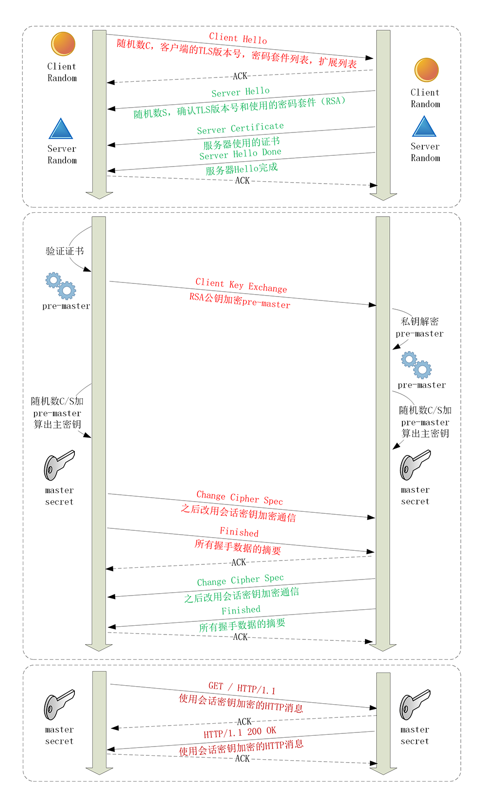
大体的流程没有变，只是“Pre-Master”不再需要用算法生成，而是客户端直接生成随机数，然后用服务器的公钥加密，通过“Client Key Exchange”消息发给服务器。服务器再用私钥解密，这样双方也实现了共享三个随机数，就可以生成主密钥。
双向认证
到这里 TLS 握手就基本讲完了。
不过上面说的是“单向认证”握手过程，只认证了服务器的身份，而没有认证客户端的身份。这是因为通常单向认证通过后已经建立了安全通信，用账号、密码等简单的手段就能够确认用户的真实身份。
但为了防止账号、密码被盗，有的时候（比如网上银行）还会使用 U 盾给用户颁发客户端证书，实现“双向认证”，这样会更加安全。
双向认证的流程也没有太多变化，只是在“Server Hello Done”之后，“Client Key Exchange”之前，客户端要发送“Client Certificate”消息，服务器收到后也把证书链走一遍，验证客户端的身份。
小结
今天我们学习了 HTTPS/TLS 的握手，内容比较多、比较难，不过记住下面四点就可以。
- HTTPS 协议会先与服务器执行 TCP 握手，然后执行 TLS 握手，才能建立安全连接；
- 握手的目标是安全地交换对称密钥，需要三个随机数，第三个随机数“Pre-Master”必须加密传输，绝对不能让黑客破解；
- “Hello”消息交换随机数，“Key Exchange”消息交换“Pre-Master”；
- “Change Cipher Spec”之前传输的都是明文，之后都是对称密钥加密的密文。
课下作业
- 密码套件里的那些算法分别在握手过程中起了什么作用？
- 你能完整地描述一下 RSA 的握手过程吗？
- 你能画出双向认证的流程图吗？
欢迎你把自己的学习体会写在留言区，与我和其他同学一起讨论。如果你觉得有所收获，也欢迎把文章分享给你的朋友。

27 更好更快的握手：TLS1.3特性解析
上一讲中我讲了 TLS1.2 的握手过程，你是不是已经完全掌握了呢？
不过 TLS1.2 已经是 10 年前（2008 年）的“老”协议了，虽然历经考验，但毕竟“岁月不饶人”，在安全、性能等方面已经跟不上如今的互联网了。
于是经过四年、近 30 个草案的反复打磨，TLS1.3 终于在去年（2018 年）“粉墨登场”，再次确立了信息安全领域的新标准。
在抓包分析握手之前，我们先来快速浏览一下 TLS1.3 的三个主要改进目标：兼容、安全与性能。
最大化兼容性
由于 1.1、1.2 等协议已经出现了很多年，很多应用软件、中间代理（官方称为“MiddleBox”）只认老的记录协议格式，更新改造很困难，甚至是不可行（设备僵化）。
在早期的试验中发现，一旦变更了记录头字段里的版本号，也就是由 0x303（TLS1.2）改为 0x304（TLS1.3）的话，大量的代理服务器、网关都无法正确处理，最终导致 TLS 握手失败。
为了保证这些被广泛部署的“老设备”能够继续使用，避免新协议带来的“冲击”，TLS1.3 不得不做出妥协，保持现有的记录格式不变，通过“伪装”来实现兼容，使得 TLS1.3 看上去“像是”TLS1.2。
那么，该怎么区分 1.2 和 1.3 呢？
这要用到一个新的扩展协议（Extension Protocol），它有点“补充条款”的意思，通过在记录末尾添加一系列的“扩展字段”来增加新的功能，老版本的 TLS 不认识它可以直接忽略，这就实现了“后向兼容”。
在记录头的 Version 字段被兼容性“固定”的情况下，只要是 TLS1.3 协议，握手的“Hello”消息后面就必须有“supported_versions”扩展，它标记了 TLS 的版本号，使用它就能区分新旧协议。
其实上一讲 Chrome 在握手时发的就是 TLS1.3 协议，你可以看一下“Client Hello”消息后面的扩展，只是因为服务器不支持 1.3，所以就“后向兼容”降级成了 1.2。
Handshake Protocol: Client Hello
Version: TLS 1.2 (0x0303)
Extension: supported_versions (len=11)
Supported Version: TLS 1.3 (0x0304)
Supported Version: TLS 1.2 (0x0303)
TLS1.3 利用扩展实现了许多重要的功能，比如“supported_groups”“key_share”“signature_algorithms”“server_name”等，这些等后面用到的时候再说。
强化安全
TLS1.2 在十来年的应用中获得了许多宝贵的经验，陆续发现了很多的漏洞和加密算法的弱点，所以 TLS1.3 就在协议里修补了这些不安全因素。
比如：
- 伪随机数函数由 PRF 升级为 HKDF（HMAC-based Extract-and-Expand Key Derivation Function）；
- 明确禁止在记录协议里使用压缩；
- 废除了 RC4、DES 对称加密算法；
- 废除了 ECB、CBC 等传统分组模式；
- 废除了 MD5、SHA1、SHA-224 摘要算法；
- 废除了 RSA、DH 密钥交换算法和许多命名曲线。
经过这一番“减肥瘦身”之后，TLS1.3 里只保留了 AES、ChaCha20 对称加密算法，分组模式只能用 AEAD 的 GCM、CCM 和 Poly1305，摘要算法只能用 SHA256、SHA384，密钥交换算法只有 ECDHE 和 DHE，椭圆曲线也被“砍”到只剩 P-256 和 x25519 等 5 种。
减肥可以让人变得更轻巧灵活，TLS 也是这样。
算法精简后带来了一个意料之中的好处：原来众多的算法、参数组合导致密码套件非常复杂，难以选择，而现在的 TLS1.3 里只有 5 个套件，无论是客户端还是服务器都不会再犯“选择困难症”了。

这里还要特别说一下废除 RSA 和 DH 密钥交换算法的原因。
上一讲用 Wireshark 抓包时你一定看到了，浏览器默认会使用 ECDHE 而不是 RSA 做密钥交换，这是因为它不具有“前向安全”（Forward Secrecy）。
假设有这么一个很有耐心的黑客，一直在长期收集混合加密系统收发的所有报文。如果加密系统使用服务器证书里的 RSA 做密钥交换，一旦私钥泄露或被破解（使用社会工程学或者巨型计算机），那么黑客就能够使用私钥解密出之前所有报文的“Pre-Master”，再算出会话密钥，破解所有密文。
这就是所谓的“今日截获，明日破解”。
而 ECDHE 算法在每次握手时都会生成一对临时的公钥和私钥，每次通信的密钥对都是不同的，也就是“一次一密”，即使黑客花大力气破解了这一次的会话密钥，也只是这次通信被攻击，之前的历史消息不会受到影响，仍然是安全的。
所以现在主流的服务器和浏览器在握手阶段都已经不再使用 RSA，改用 ECDHE，而 TLS1.3 在协议里明确废除 RSA 和 DH 则在标准层面保证了“前向安全”。
提升性能
HTTPS 建立连接时除了要做 TCP 握手，还要做 TLS 握手，在 1.2 中会多花两个消息往返（2-RTT），可能导致几十毫秒甚至上百毫秒的延迟，在移动网络中延迟还会更严重。
现在因为密码套件大幅度简化，也就没有必要再像以前那样走复杂的协商流程了。TLS1.3 压缩了以前的“Hello”协商过程，删除了“Key Exchange”消息，把握手时间减少到了“1-RTT”，效率提高了一倍。
那么它是怎么做的呢？
其实具体的做法还是利用了扩展。客户端在“Client Hello”消息里直接用“supported_groups”带上支持的曲线，比如 P-256、x25519，用“key_share”带上曲线对应的客户端公钥参数，用“signature_algorithms”带上签名算法。
服务器收到后在这些扩展里选定一个曲线和参数，再用“key_share”扩展返回服务器这边的公钥参数，就实现了双方的密钥交换，后面的流程就和 1.2 基本一样了。
我为 1.3 的握手过程画了一张图，你可以对比 1.2 看看区别在哪里。
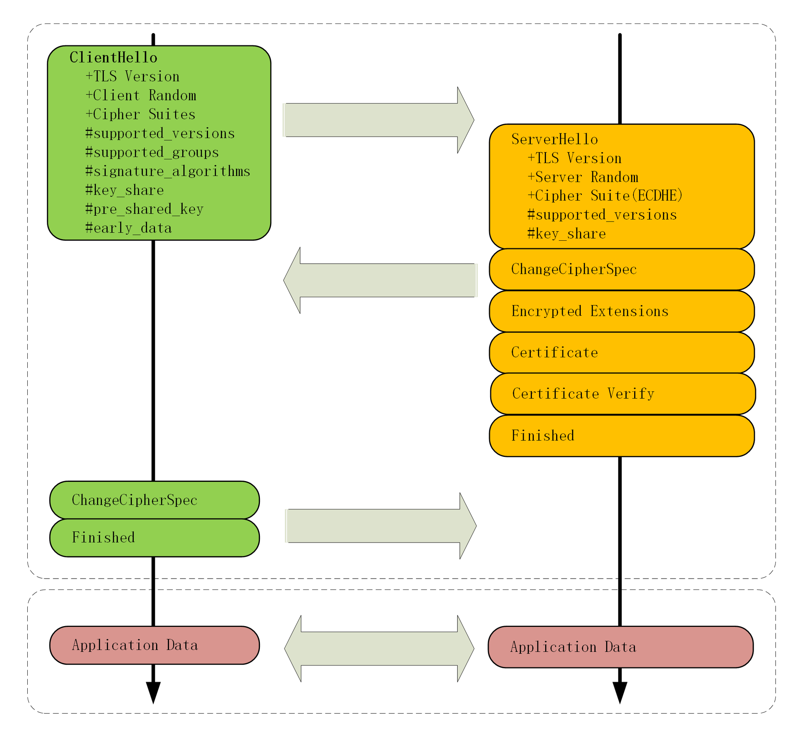
除了标准的“1-RTT”握手，TLS1.3 还引入了“0-RTT”握手，用“pre_shared_key”和“early_data”扩展，在 TCP 连接后立即就建立安全连接发送加密消息，不过这需要有一些前提条件，今天暂且不说。
握手分析
目前 Nginx 等 Web 服务器都能够很好地支持 TLS1.3，但要求底层的 OpenSSL 必须是 1.1.1，而我们实验环境里用的 OpenSSL 是 1.1.0，所以暂时无法直接测试 TLS1.3。
不过我在 Linux 上用 OpenSSL1.1.1 编译了一个支持 TLS1.3 的 Nginx，用 Wireshark 抓包存到了 GitHub 上，用它就可以分析 TLS1.3 的握手过程。

在 TCP 建立连接之后，浏览器首先还是发一个“Client Hello”。
因为 1.3 的消息兼容 1.2，所以开头的版本号、支持的密码套件和随机数（Client Random）结构都是一样的（不过这时的随机数是 32 个字节）。
Handshake Protocol: Client Hello
Version: TLS 1.2 (0x0303)
Random: cebeb6c05403654d66c2329…
Cipher Suites (18 suites)
Cipher Suite: TLS_AES_128_GCM_SHA256 (0x1301)
Cipher Suite: TLS_CHACHA20_POLY1305_SHA256 (0x1303)
Cipher Suite: TLS_AES_256_GCM_SHA384 (0x1302)
Extension: supported_versions (len=9)
Supported Version: TLS 1.3 (0x0304)
Supported Version: TLS 1.2 (0x0303)
Extension: supported_groups (len=14)
Supported Groups (6 groups)
Supported Group: x25519 (0x001d)
Supported Group: secp256r1 (0x0017)
Extension: key_share (len=107)
Key Share extension
Client Key Share Length: 105
Key Share Entry: Group: x25519
Key Share Entry: Group: secp256r1
注意“Client Hello”里的扩展，“supported_versions”表示这是 TLS1.3，“supported_groups”是支持的曲线，“key_share”是曲线对应的参数。
这就好像是说：
“还是照老规矩打招呼，这边有这些这些信息。但我猜你可能会升级，所以再多给你一些东西，也许后面用的上，咱们有话尽量一口气说完。”
服务器收到“Client Hello”同样返回“Server Hello”消息，还是要给出一个随机数（Server Random）和选定密码套件。
Handshake Protocol: Server Hello
Version: TLS 1.2 (0x0303)
Random: 12d2bce6568b063d3dee2…
Cipher Suite: TLS_AES_128_GCM_SHA256 (0x1301)
Extension: supported_versions (len=2)
Supported Version: TLS 1.3 (0x0304)
Extension: key_share (len=36)
Key Share extension
Key Share Entry: Group: x25519, Key Exchange length: 32
表面上看和 TLS1.2 是一样的，重点是后面的扩展。“supported_versions”里确认使用的是 TLS1.3，然后在“key_share”扩展带上曲线和对应的公钥参数。
服务器的“Hello”消息大概是这个意思：
“还真让你给猜对了，虽然还是按老规矩打招呼，但咱们来个‘旧瓶装新酒’。刚才你给的我都用上了，我再给几个你缺的参数，这次加密就这么定了。”
这时只交换了两条消息，客户端和服务器就拿到了四个共享信息：Client Random和Server Random、Client Params和Server Params，两边就可以各自用 ECDHE 算出“Pre-Master”，再用 HKDF 生成主密钥“Master Secret”，效率比 TLS1.2 提高了一大截。
在算出主密钥后，服务器立刻发出“Change Cipher Spec”消息，比 TLS1.2 提早进入加密通信，后面的证书等就都是加密的了，减少了握手时的明文信息泄露。
这里 TLS1.3 还有一个安全强化措施，多了个“Certificate Verify”消息，用服务器的私钥把前面的曲线、套件、参数等握手数据加了签名，作用和“Finished”消息差不多。但由于是私钥签名，所以强化了身份认证和和防窜改。
这两个“Hello”消息之后，客户端验证服务器证书，再发“Finished”消息，就正式完成了握手，开始收发 HTTP 报文。
虽然我们的实验环境暂时不能抓包测试 TLS1.3，但互联网上很多网站都已经支持了 TLS1.3，比如Nginx、GitHub，你可以课后自己用 Wireshark 试试。
在 Chrome 的开发者工具里，可以看到这些网站的 TLS1.3 应用情况。
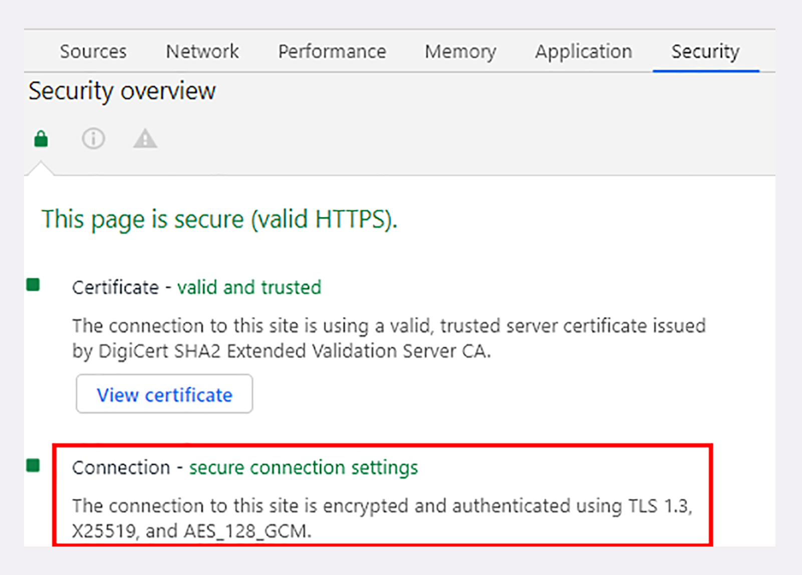
小结
今天我们一起学习了 TLS1.3 的新特性，用抓包研究了它的握手过程，不过 TLS1.3 里的内容很多，还有一些特性没有谈到，后面会继续讲。
- 为了兼容 1.1、1.2 等“老”协议，TLS1.3 会“伪装”成 TLS1.2，新特性在“扩展”里实现；
- 1.1、1.2 在实践中发现了很多安全隐患，所以 TLS1.3 大幅度删减了加密算法，只保留了 ECDHE、AES、ChaCha20、SHA-2 等极少数算法，强化了安全；
- TLS1.3 也简化了握手过程，完全握手只需要一个消息往返，提升了性能。
课下作业
- TLS1.3 里的密码套件没有指定密钥交换算法和签名算法，那么在握手的时候会不会有问题呢？
- 结合上一讲的 RSA 握手过程，解释一下为什么 RSA 密钥交换不具有“前向安全”。
- TLS1.3 的握手过程与 TLS1.2 的“False Start”有什么异同？
欢迎你把自己的学习体会写在留言区，与我和其他同学一起讨论。如果你觉得有所收获，也欢迎把文章分享给你的朋友。

28 连接太慢该怎么办：HTTPS的优化
你可能或多或少听别人说过，“HTTPS 的连接很慢”。那么“慢”的原因是什么呢？
通过前两讲的学习，你可以看到，HTTPS 连接大致上可以划分为两个部分，第一个是建立连接时的非对称加密握手，第二个是握手后的对称加密报文传输。
由于目前流行的 AES、ChaCha20 性能都很好，还有硬件优化，报文传输的性能损耗可以说是非常地小，小到几乎可以忽略不计了。所以，通常所说的“HTTPS 连接慢”指的就是刚开始建立连接的那段时间。
在 TCP 建连之后，正式数据传输之前，HTTPS 比 HTTP 增加了一个 TLS 握手的步骤，这个步骤最长可以花费两个消息往返，也就是 2-RTT。而且在握手消息的网络耗时之外，还会有其他的一些“隐形”消耗，比如：
- 产生用于密钥交换的临时公私钥对（ECDHE）；
- 验证证书时访问 CA 获取 CRL 或者 OCSP；
- 非对称加密解密处理“Pre-Master”。
在最差的情况下，也就是不做任何的优化措施，HTTPS 建立连接可能会比 HTTP 慢上几百毫秒甚至几秒，这其中既有网络耗时，也有计算耗时，就会让人产生“打开一个 HTTPS 网站好慢啊”的感觉。
不过刚才说的情况早就是“过去时”了，现在已经有了很多行之有效的 HTTPS 优化手段，运用得好可以把连接的额外耗时降低到几十毫秒甚至是“零”。
我画了一张图，把 TLS 握手过程中影响性能的部分都标记了出来，对照着它就可以“有的放矢”地来优化 HTTPS。

硬件优化
在计算机世界里的“优化”可以分成“硬件优化”和“软件优化”两种方式，先来看看有哪些硬件的手段。
硬件优化，说白了就是“花钱”。但花钱也是有门道的，要“有钱用在刀刃上”，不能大把的银子撒出去“只听见响”。
HTTPS 连接是计算密集型，而不是 I/O 密集型。所以，如果你花大价钱去买网卡、带宽、SSD 存储就是“南辕北辙”了，起不到优化的效果。
那该用什么样的硬件来做优化呢？
首先，你可以选择更快的 CPU，最好还内建 AES 优化，这样即可以加速握手，也可以加速传输。
其次，你可以选择“SSL 加速卡”，加解密时调用它的 API，让专门的硬件来做非对称加解密，分担 CPU 的计算压力。
不过“SSL 加速卡”也有一些缺点，比如升级慢、支持算法有限，不能灵活定制解决方案等。
所以，就出现了第三种硬件加速方式：“SSL 加速服务器”，用专门的服务器集群来彻底“卸载”TLS 握手时的加密解密计算，性能自然要比单纯的“加速卡”要强大的多。
软件优化
不过硬件优化方式中除了 CPU，其他的通常可不是靠简单花钱就能买到的，还要有一些开发适配工作，有一定的实施难度。比如，“加速服务器”中关键的一点是通信必须是“异步”的，不能阻塞应用服务器，否则加速就没有意义了。
所以，软件优化的方式相对来说更可行一些，性价比高，能够“少花钱，多办事”。
软件方面的优化还可以再分成两部分：一个是软件升级，一个是协议优化。
软件升级实施起来比较简单，就是把现在正在使用的软件尽量升级到最新版本，比如把 Linux 内核由 2.x 升级到 4.x，把 Nginx 由 1.6 升级到 1.16，把 OpenSSL 由 1.0.1 升级到 1.1.0/1.1.1。
由于这些软件在更新版本的时候都会做性能优化、修复错误，只要运维能够主动配合，这种软件优化是最容易做的，也是最容易达成优化效果的。
但对于很多大中型公司来说，硬件升级或软件升级都是个棘手的问题，有成千上万台各种型号的机器遍布各个机房，逐一升级不仅需要大量人手，而且有较高的风险，可能会影响正常的线上服务。
所以，在软硬件升级都不可行的情况下，我们最常用的优化方式就是在现有的环境下挖掘协议自身的潜力。
协议优化
从刚才的 TLS 握手图中你可以看到影响性能的一些环节，协议优化就要从这些方面着手，先来看看核心的密钥交换过程。
如果有可能，应当尽量采用 TLS1.3，它大幅度简化了握手的过程，完全握手只要 1-RTT，而且更加安全。
如果暂时不能升级到 1.3，只能用 1.2，那么握手时使用的密钥交换协议应当尽量选用椭圆曲线的 ECDHE 算法。它不仅运算速度快，安全性高，还支持“False Start”，能够把握手的消息往返由 2-RTT 减少到 1-RTT，达到与 TLS1.3 类似的效果。
另外，椭圆曲线也要选择高性能的曲线，最好是 x25519，次优选择是 P-256。对称加密算法方面，也可以选用“AES_128_GCM”，它能比“AES_256_GCM”略快一点点。
在 Nginx 里可以用“ssl_ciphers”“ssl_ecdh_curve”等指令配置服务器使用的密码套件和椭圆曲线，把优先使用的放在前面，例如：
ssl_ciphers TLS13-AES-256-GCM-SHA384:TLS13-CHACHA20-POLY1305-SHA256:EECDH+CHACHA20；
ssl_ecdh_curve X25519:P-256;
证书优化
除了密钥交换，握手过程中的证书验证也是一个比较耗时的操作，服务器需要把自己的证书链全发给客户端，然后客户端接收后再逐一验证。
这里就有两个优化点，一个是证书传输，一个是证书验证。
服务器的证书可以选择椭圆曲线（ECDSA）证书而不是 RSA 证书，因为 224 位的 ECC 相当于 2048 位的 RSA，所以椭圆曲线证书的“个头”要比 RSA 小很多，即能够节约带宽也能减少客户端的运算量，可谓“一举两得”。
客户端的证书验证其实是个很复杂的操作，除了要公钥解密验证多个证书签名外，因为证书还有可能会被撤销失效，客户端有时还会再去访问 CA，下载 CRL 或者 OCSP 数据，这又会产生 DNS 查询、建立连接、收发数据等一系列网络通信，增加好几个 RTT。
CRL（Certificate revocation list，证书吊销列表）由 CA 定期发布，里面是所有被撤销信任的证书序号，查询这个列表就可以知道证书是否有效。
但 CRL 因为是“定期”发布，就有“时间窗口”的安全隐患，而且随着吊销证书的增多，列表会越来越大，一个 CRL 经常会上 MB。想象一下，每次需要预先下载几 M 的“无用数据”才能连接网站，实用性实在是太低了。
所以，现在 CRL 基本上不用了，取而代之的是 OCSP（在线证书状态协议，Online Certificate Status Protocol），向 CA 发送查询请求，让 CA 返回证书的有效状态。
但 OCSP 也要多出一次网络请求的消耗，而且还依赖于 CA 服务器，如果 CA 服务器很忙，那响应延迟也是等不起的。
于是又出来了一个“补丁”，叫“OCSP Stapling”（OCSP 装订），它可以让服务器预先访问 CA 获取 OCSP 响应，然后在握手时随着证书一起发给客户端，免去了客户端连接 CA 服务器查询的时间。
会话复用
到这里，我们已经讨论了四种 HTTPS 优化手段（硬件优化、软件优化、协议优化、证书优化），那么，还有没有其他更好的方式呢？
我们再回想一下 HTTPS 建立连接的过程：先是 TCP 三次握手，然后是 TLS 一次握手。这后一次握手的重点是算出主密钥“Master Secret”，而主密钥每次连接都要重新计算，未免有点太浪费了，如果能够把“辛辛苦苦”算出来的主密钥缓存一下“重用”，不就可以免去了握手和计算的成本了吗？
这种做法就叫“会话复用”（TLS session resumption），和 HTTP Cache 一样，也是提高 HTTPS 性能的“大杀器”，被浏览器和服务器广泛应用。
会话复用分两种，第一种叫“Session ID”，就是客户端和服务器首次连接后各自保存一个会话的 ID 号，内存里存储主密钥和其他相关的信息。当客户端再次连接时发一个 ID 过来，服务器就在内存里找，找到就直接用主密钥恢复会话状态，跳过证书验证和密钥交换，只用一个消息往返就可以建立安全通信。
实验环境的端口 441 实现了“Session ID”的会话复用，你可以访问 URI “https://www.chrono.com:441/28-1”，刷新几次，用 Wireshark 抓包看看实际的效果。
Handshake Protocol: Client Hello
Version: TLS 1.2 (0x0303)
Session ID: 13564734eeec0a658830cd…
Cipher Suites Length: 34
Handshake Protocol: Server Hello
Version: TLS 1.2 (0x0303)
Session ID: 13564734eeec0a658830cd…
Cipher Suite: TLS_ECDHE_RSA_WITH_AES_256_GCM_SHA384 (0xc030)
通过抓包可以看到，服务器在“ServerHello”消息后直接发送了“Change Cipher Spec”和“Finished”消息，复用会话完成了握手。

会话票证
“Session ID”是最早出现的会话复用技术，也是应用最广的，但它也有缺点，服务器必须保存每一个客户端的会话数据，对于拥有百万、千万级别用户的网站来说存储量就成了大问题，加重了服务器的负担。
于是，又出现了第二种“Session Ticket”方案。
它有点类似 HTTP 的 Cookie，存储的责任由服务器转移到了客户端，服务器加密会话信息，用“New Session Ticket”消息发给客户端，让客户端保存。
重连的时候，客户端使用扩展“session_ticket”发送“Ticket”而不是“Session ID”，服务器解密后验证有效期，就可以恢复会话，开始加密通信。
这个过程也可以在实验环境里测试，端口号是 442，URI 是“https://www.chrono.com:442/28-1”。
不过“Session Ticket”方案需要使用一个固定的密钥文件（ticket_key）来加密 Ticket，为了防止密钥被破解，保证“前向安全”，密钥文件需要定期轮换，比如设置为一小时或者一天。
预共享密钥
“False Start”“Session ID”“Session Ticket”等方式只能实现 1-RTT，而 TLS1.3 更进一步实现了“0-RTT”，原理和“Session Ticket”差不多，但在发送 Ticket 的同时会带上应用数据（Early Data），免去了 1.2 里的服务器确认步骤，这种方式叫“Pre-shared Key”，简称为“PSK”。

但“PSK”也不是完美的，它为了追求效率而牺牲了一点安全性，容易受到“重放攻击”（Replay attack）的威胁。黑客可以截获“PSK”的数据，像复读机那样反复向服务器发送。
解决的办法是只允许安全的 GET/HEAD 方法（参见[第 10 讲]），在消息里加入时间戳、“nonce”验证，或者“一次性票证”限制重放。
小结
- 可以有多种硬件和软件手段减少网络耗时和计算耗时，让 HTTPS 变得和 HTTP 一样快，最可行的是软件优化；
- 应当尽量使用 ECDHE 椭圆曲线密码套件，节约带宽和计算量，还能实现“False Start”；
- 服务器端应当开启“OCSP Stapling”功能，避免客户端访问 CA 去验证证书；
- 会话复用的效果类似 Cache，前提是客户端必须之前成功建立连接，后面就可以用“Session ID”“Session Ticket”等凭据跳过密钥交换、证书验证等步骤，直接开始加密通信。
课下作业
- 你能比较一下“Session ID”“Session Ticket”“PSK”这三种会话复用手段的异同吗？
- 你觉得哪些优化手段是你在实际工作中能用到的？应该怎样去用？
欢迎你把自己的学习体会写在留言区，与我和其他同学一起讨论。如果你觉得有所收获，也欢迎把文章分享给你的朋友。
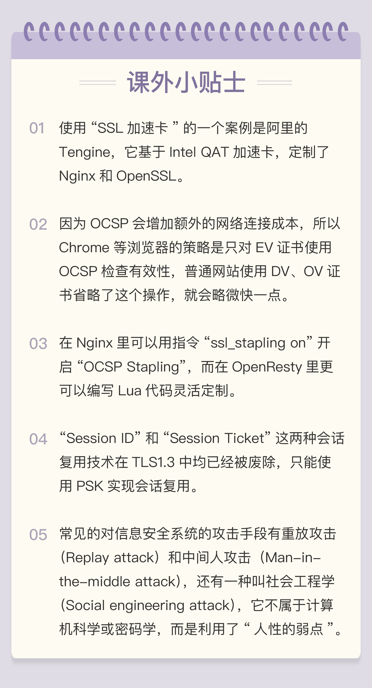
29 我应该迁移到HTTPS吗？
今天是“安全篇”的最后一讲，我们已经学完了 HTTPS、TLS 相关的大部分知识。不过，或许你心里还会有一些困惑：
“HTTPS 这么复杂，我是否应该迁移到 HTTPS 呢？它能带来哪些好处呢？具体又应该怎么实施迁移呢？”
这些问题不单是你，也是其他很多人，还有当初的我的真实想法，所以今天我就来跟你聊聊这方面的事情。
迁移的必要性
如果你做移动应用开发的话，那么就一定知道，Apple、Android、某信等开发平台在 2017 年就相继发出通知，要求所有的应用必须使用 HTTPS 连接，禁止不安全的 HTTP。
在台式机上，主流的浏览器 Chrome、Firefox 等也早就开始“强推”HTTPS，把 HTTP 站点打上“不安全”的标签，给用户以“心理压力”。
Google 等搜索巨头还利用自身的“话语权”优势，降低 HTTP 站点的排名，而给 HTTPS 更大的权重，力图让网民只访问到 HTTPS 网站。
这些手段都逐渐“挤压”了纯明文 HTTP 的生存空间，“迁移到 HTTPS”已经不是“要不要做”的问题，而是“要怎么做”的问题了。HTTPS 的大潮无法阻挡，如果还是死守着 HTTP，那么无疑会被冲刷到互联网的角落里。
目前国内外的许多知名大站都已经实现了“全站 HTTPS”，打开常用的某宝、某东、某浪，
都可以在浏览器的地址栏里看到“小锁头”，如果你正在维护的网站还没有实施 HTTPS，那可要抓点紧了。
迁移的顾虑
据我观察，阻碍 HTTPS 实施的因素还有一些这样、那样的顾虑，我总结出了三个比较流行的观点：“慢、贵、难”。
所谓“慢”，是指惯性思维，拿以前的数据来评估 HTTPS 的性能，认为 HTTPS 会增加服务器的成本，增加客户端的时延，影响用户体验。
其实现在服务器和客户端的运算能力都已经有了很大的提升，性能方面完全没有担心的必要，而且还可以应用很多的优化解决方案（参见[第 28 讲]）。根据 Google 等公司的评估，在经过适当优化之后，HTTPS 的额外 CPU 成本小于 1%，额外的网络成本小于 2%，可以说是与无加密的 HTTP 相差无几。
所谓“贵”，主要是指证书申请和维护的成本太高，网站难以承担。
这也属于惯性思维，在早几年的确是个问题，向 CA 申请证书的过程不仅麻烦，而且价格昂贵，每年要交几千甚至几万元。
但现在就不一样了，为了推广 HTTPS，很多云服务厂商都提供了一键申请、价格低廉的证书，而且还出现了专门颁发免费证书的 CA，其中最著名的就是“Let’s Encrypt”。
所谓的“难”，是指 HTTPS 涉及的知识点太多、太复杂，有一定的技术门槛，不能很快上手。
这第三个顾虑比较现实，HTTPS 背后关联到了密码学、TLS、PKI 等许多领域，不是短短几周、几个月就能够精通的。但实施 HTTPS 也并不需要把这些完全掌握，只要抓住少数几个要点就好，下面我就来帮你逐个解决一些关键的“难点”。
申请证书
要把网站从 HTTP 切换到 HTTPS，首先要做的就是为网站申请一张证书。
大型网站出于信誉、公司形象的考虑，通常会选择向传统的 CA 申请证书，例如 DigiCert、GlobalSign，而中小型网站完全可以选择使用“Let’s Encrypt”这样的免费证书，效果也完全不输于那些收费的证书。
“Let’s Encrypt”一直在推动证书的自动化部署，为此还实现了专门的 ACME 协议（RFC8555）。有很多的客户端软件可以完成申请、验证、下载、更新的“一条龙”操作，比如 Certbot、acme.sh 等等，都可以在“Let’s Encrypt”网站上找到，用法很简单，相关的文档也很详细，几分钟就能完成申请，所以我在这里就不细说了。
不过我必须提醒你几个注意事项。
第一，申请证书时应当同时申请 RSA 和 ECDSA 两种证书，在 Nginx 里配置成双证书验证，这样服务器可以自动选择快速的椭圆曲线证书，同时也兼容只支持 RSA 的客户端。
第二，如果申请 RSA 证书，私钥至少要 2048 位，摘要算法应该选用 SHA-2，例如 SHA256、SHA384 等。
第三，出于安全的考虑，“Let’s Encrypt”证书的有效期很短，只有 90 天，时间一到就会过期失效，所以必须要定期更新。你可以在 crontab 里加个每周或每月任务，发送更新请求，不过很多 ACME 客户端会自动添加这样的定期任务，完全不用你操心。
配置 HTTPS
搞定了证书，接下来就是配置 Web 服务器，在 443 端口上开启 HTTPS 服务了。
这在 Nginx 上非常简单，只要在“listen”指令后面加上参数“ssl”，再配上刚才的证书文件就可以实现最基本的 HTTPS。
listen 443 ssl;
ssl_certificate xxx_rsa.crt; #rsa2048 cert
ssl_certificate_key xxx_rsa.key; #rsa2048 private key
ssl_certificate xxx_ecc.crt; #ecdsa cert
ssl_certificate_key xxx_ecc.key; #ecdsa private ke
为了提高 HTTPS 的安全系数和性能，你还可以强制 Nginx 只支持 TLS1.2 以上的协议，打开“Session Ticket”会话复用：
ssl_protocols TLSv1.2 TLSv1.3;
ssl_session_timeout 5m;
ssl_session_tickets on;
ssl_session_ticket_key ticket.key;
密码套件的选择方面，我给你的建议是以服务器的套件优先。这样可以避免恶意客户端故意选择较弱的套件、降低安全等级，然后密码套件向 TLS1.3“看齐”，只使用 ECDHE、AES 和 ChaCha20，支持“False Start”。
ssl_prefer_server_ciphers on;
ssl_ciphers ECDHE-ECDSA-AES256-GCM-SHA384:ECDHE-RSA-AES256-GCM-SHA384:ECDHE-RSA-AES128-GCM-SHA256:ECDHE-RSA-CHACHA20-POLY1305:ECDHE+AES128:!MD5:!SHA1;
如果你的服务器上使用了 OpenSSL 的分支 BorringSSL，那么还可以使用一个特殊的“等价密码组”（Equal preference cipher groups）特性，它可以让服务器配置一组“等价”的密码套件，在这些套件里允许客户端优先选择，比如这么配置：
ssl_ciphers
[ECDHE-ECDSA-AES128-GCM-SHA256|ECDHE-ECDSA-CHACHA20-POLY1305];
如果客户端硬件没有 AES 优化，服务器就会顺着客户端的意思，优先选择与 AES“等价”的 ChaCha20 算法，让客户端能够快一点。
全部配置完成后，你可以访问“SSLLabs”网站，测试网站的安全程度，它会模拟多种客户端发起测试，打出一个综合的评分。
下图就是 GitHub 网站的评分结果：
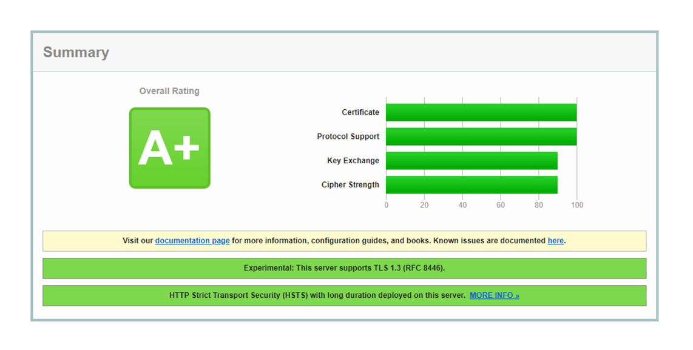
服务器名称指示
配置 HTTPS 服务时还有一个“虚拟主机”的问题需要解决。
在 HTTP 协议里，多个域名可以同时在一个 IP 地址上运行，这就是“虚拟主机”，Web 服务器会使用请求头里的 Host 字段（参见[第 9 讲]）来选择。
但在 HTTPS 里，因为请求头只有在 TLS 握手之后才能发送，在握手时就必须选择“虚拟主机”对应的证书，TLS 无法得知域名的信息，就只能用 IP 地址来区分。所以，最早的时候每个 HTTPS 域名必须使用独立的 IP 地址，非常不方便。
那么怎么解决这个问题呢？
这还是得用到 TLS 的“扩展”，给协议加个SNI（Server Name Indication）的“补充条款”。它的作用和 Host 字段差不多，客户端会在“Client Hello”时带上域名信息，这样服务器就可以根据名字而不是 IP 地址来选择证书。
Extension: server_name (len=19)
Server Name Indication extension
Server Name Type: host_name (0)
Server Name: www.chrono.com
Nginx 很早就基于 SNI 特性支持了 HTTPS 的虚拟主机，但在 OpenResty 里可还以编写 Lua 脚本，利用 Redis、MySQL 等数据库更灵活快速地加载证书。
重定向跳转
现在有了 HTTPS 服务，但原来的 HTTP 站点也不能马上弃用，还是会有很多网民习惯在地址栏里直接敲域名（或者是旧的书签、超链接），默认使用 HTTP 协议访问。
所以，我们就需要用到第 18 讲里的“重定向跳转”技术了，把不安全的 HTTP 网址用 301 或 302“重定向”到新的 HTTPS 网站，这在 Nginx 里也很容易做到，使用“return”或“rewrite”都可以。
return 301 https://$host$request_uri; # 永久重定向
rewrite ^ https://$host$request_uri permanent; # 永久重定向
但这种方式有两个问题。一个是重定向增加了网络成本，多出了一次请求；另一个是存在安全隐患，重定向的响应可能会被“中间人”窜改，实现“会话劫持”，跳转到恶意网站。
不过有一种叫“HSTS”（HTTP 严格传输安全，HTTP Strict Transport Security）的技术可以消除这种安全隐患。HTTPS 服务器需要在发出的响应头里添加一个“Strict-Transport-Security”的字段，再设定一个有效期，例如：
Strict-Transport-Security: max-age=15768000; includeSubDomains
这相当于告诉浏览器：我这个网站必须严格使用 HTTPS 协议，在半年之内（182.5 天）都不允许用 HTTP，你以后就自己做转换吧，不要再来麻烦我了。
有了“HSTS”的指示，以后浏览器再访问同样的域名的时候就会自动把 URI 里的“http”改成“https”，直接访问安全的 HTTPS 网站。这样“中间人”就失去了攻击的机会，而且对于客户端来说也免去了一次跳转，加快了连接速度。
比如，如果在实验环境的配置文件里用“add_header”指令添加“HSTS”字段：
add_header Strict-Transport-Security max-age=15768000; #182.5days
那么 Chrome 浏览器只会在第一次连接时使用 HTTP 协议，之后就会都走 HTTPS 协议。
小结
今天我介绍了一些 HTTPS 迁移的技术要点，掌握了它们你就可以搭建出一个完整的 HTTPS 站点了。
但想要实现大型网站的“全站 HTTPS”还是需要有很多的细枝末节的工作要做，比如使用 CSP（Content Security Policy）的各种指令和标签来配置安全策略，使用反向代理来集中“卸载”SSL，话题太大，以后有机会再细谈吧。
简单小结一下今天的内容：
- 从 HTTP 迁移到 HTTPS 是“大势所趋”，能做就应该尽早做；
- 升级 HTTPS 首先要申请数字证书，可以选择免费好用的“Let’s Encrypt”；
- 配置 HTTPS 时需要注意选择恰当的 TLS 版本和密码套件，强化安全；
- 原有的 HTTP 站点可以保留作为过渡，使用 301 重定向到 HTTPS。
课下作业
- 结合你的实际工作，分析一下迁移 HTTPS 的难点有哪些，应该如何克服？
- 参考上一讲，你觉得配置 HTTPS 时还应该加上哪些部分？
欢迎你把自己的学习体会写在留言区，与我和其他同学一起讨论。如果你觉得有所收获，也欢迎把文章分享给你的朋友。
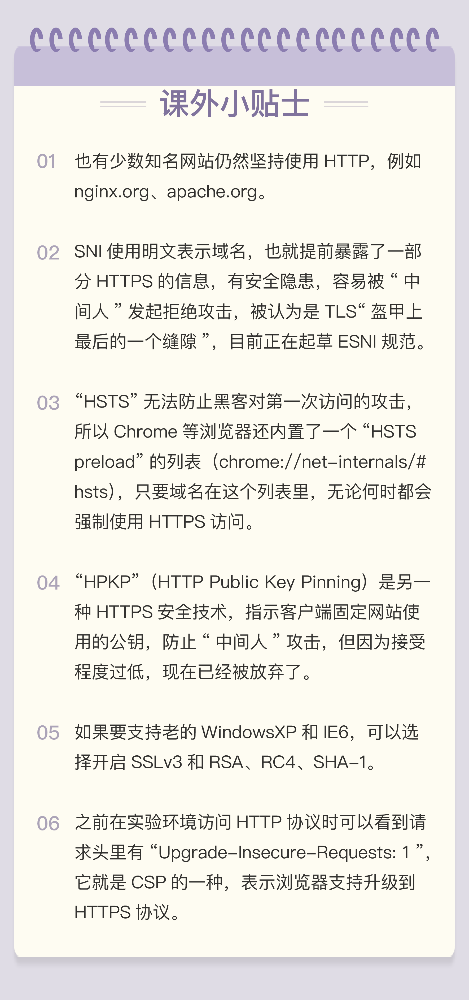
30 时代之风（上）：HTTP2特性概览
在[第 14 讲]里，我们看到 HTTP 有两个主要的缺点：安全不足和性能不高。
刚结束的“安全篇”里的 HTTPS，通过引入 SSL/TLS 在安全上达到了“极致”，但在性能提升方面却是乏善可陈，只优化了握手加密的环节，对于整体的数据传输没有提出更好的改进方案，还只能依赖于“长连接”这种“落后”的技术（参见[第 17 讲]）。
所以，在 HTTPS 逐渐成熟之后，HTTP 就向着性能方面开始“发力”，走出了另一条进化的道路。
在[第 1 讲]的 HTTP 历史中你也看到了，“秦失其鹿，天下共逐之”，Google 率先发明了 SPDY 协议，并应用于自家的浏览器 Chrome，打响了 HTTP 性能优化的“第一枪”。
随后互联网标准化组织 IETF 以 SPDY 为基础，综合其他多方的意见，终于推出了 HTTP/1 的继任者，也就是今天的主角“HTTP/2”，在性能方面有了一个大的飞跃。
为什么不是 HTTP/2.0
你一定很想知道，为什么 HTTP/2 不像之前的“1.0”“1.1”那样叫“2.0”呢？
这个也是很多初次接触 HTTP/2 的人问的最多的一个问题，对此 HTTP/2 工作组特别给出了解释。
他们认为以前的“1.0”“1.1”造成了很多的混乱和误解，让人在实际的使用中难以区分差异，所以就决定 HTTP 协议不再使用小版本号（minor version），只使用大版本号（major version），从今往后 HTTP 协议不会出现 HTTP/2.0、2.1，只会有“HTTP/2”“HTTP/3”……
这样就可以明确无误地辨别出协议版本的“跃进程度”，让协议在一段较长的时期内保持稳定，每当发布新版本的 HTTP 协议都会有本质的不同，绝不会有“零敲碎打”的小改良。
兼容 HTTP/1
由于 HTTPS 已经在安全方面做的非常好了，所以 HTTP/2 的唯一目标就是改进性能。
但它不仅背负着众多的期待，同时还背负着 HTTP/1 庞大的历史包袱，所以协议的修改必须小心谨慎，兼容性是首要考虑的目标，否则就会破坏互联网上无数现有的资产，这方面 TLS 已经有了先例（为了兼容 TLS1.2 不得不进行“伪装”）。
那么，HTTP/2 是怎么做的呢？
因为必须要保持功能上的兼容，所以 HTTP/2 把 HTTP 分解成了“语义”和“语法”两个部分，“语义”层不做改动，与 HTTP/1 完全一致（即 RFC7231）。比如请求方法、URI、状态码、头字段等概念都保留不变，这样就消除了再学习的成本，基于 HTTP 的上层应用也不需要做任何修改，可以无缝转换到 HTTP/2。
特别要说的是，与 HTTPS 不同，HTTP/2 没有在 URI 里引入新的协议名，仍然用“http”表示明文协议，用“https”表示加密协议。
这是一个非常了不起的决定，可以让浏览器或者服务器去自动升级或降级协议，免去了选择的麻烦，让用户在上网的时候都意识不到协议的切换，实现平滑过渡。
在“语义”保持稳定之后，HTTP/2 在“语法”层做了“天翻地覆”的改造，完全变更了 HTTP 报文的传输格式。
头部压缩
首先，HTTP/2 对报文的头部做了一个“大手术”。
通过“进阶篇”的学习你应该知道，HTTP/1 里可以用头字段“Content-Encoding”指定 Body 的编码方式，比如用 gzip 压缩来节约带宽，但报文的另一个组成部分——Header 却被无视了，没有针对它的优化手段。
由于报文 Header 一般会携带“User Agent”“Cookie”“Accept”“Server”等许多固定的头字段，多达几百字节甚至上千字节，但 Body 却经常只有几十字节（比如 GET 请求、204/301/304 响应），成了不折不扣的“大头儿子”。更要命的是，成千上万的请求响应报文里有很多字段值都是重复的，非常浪费，“长尾效应”导致大量带宽消耗在了这些冗余度极高的数据上。
所以，HTTP/2 把“头部压缩”作为性能改进的一个重点，优化的方式你也肯定能想到，还是“压缩”。
不过 HTTP/2 并没有使用传统的压缩算法，而是开发了专门的“HPACK”算法，在客户端和服务器两端建立“字典”，用索引号表示重复的字符串，还釆用哈夫曼编码来压缩整数和字符串，可以达到 50%~90% 的高压缩率。
二进制格式
你可能已经很习惯于 HTTP/1 里纯文本形式的报文了，它的优点是“一目了然”，用最简单的工具就可以开发调试，非常方便。
但 HTTP/2 在这方面没有“妥协”，决定改变延续了十多年的现状，不再使用肉眼可见的 ASCII 码，而是向下层的 TCP/IP 协议“靠拢”，全面采用二进制格式。
这样虽然对人不友好，但却大大方便了计算机的解析。原来使用纯文本的时候容易出现多义性，比如大小写、空白字符、回车换行、多字少字等等，程序在处理时必须用复杂的状态机，效率低，还麻烦。
而二进制里只有“0”和“1”，可以严格规定字段大小、顺序、标志位等格式，“对就是对，错就是错”，解析起来没有歧义，实现简单，而且体积小、速度快，做到“内部提效”。
以二进制格式为基础，HTTP/2 就开始了“大刀阔斧”的改革。
它把 TCP 协议的部分特性挪到了应用层，把原来的“Header+Body”的消息“打散”为数个小片的二进制“帧”（Frame），用“HEADERS”帧存放头数据、“DATA”帧存放实体数据。
这种做法有点像是“Chunked”分块编码的方式（参见[第 16 讲]），也是“化整为零”的思路，但 HTTP/2 数据分帧后“Header+Body”的报文结构就完全消失了，协议看到的只是一个个的“碎片”。
虚拟的“流”
消息的“碎片”到达目的地后应该怎么组装起来呢？
HTTP/2 为此定义了一个“流”（Stream）的概念，它是二进制帧的双向传输序列，同一个消息往返的帧会分配一个唯一的流 ID。你可以想象把它成是一个虚拟的“数据流”，在里面流动的是一串有先后顺序的数据帧，这些数据帧按照次序组装起来就是 HTTP/1 里的请求报文和响应报文。
因为“流”是虚拟的，实际上并不存在，所以 HTTP/2 就可以在一个 TCP 连接上用“流”同时发送多个“碎片化”的消息，这就是常说的“多路复用”（ Multiplexing）——多个往返通信都复用一个连接来处理。
在“流”的层面上看，消息是一些有序的“帧”序列，而在“连接”的层面上看，消息却是乱序收发的“帧”。多个请求 / 响应之间没有了顺序关系，不需要排队等待，也就不会再出现“队头阻塞”问题，降低了延迟，大幅度提高了连接的利用率。
为了更好地利用连接，加大吞吐量，HTTP/2 还添加了一些控制帧来管理虚拟的“流”，实现了优先级和流量控制，这些特性也和 TCP 协议非常相似。
HTTP/2 还在一定程度上改变了传统的“请求 - 应答”工作模式，服务器不再是完全被动地响应请求，也可以新建“流”主动向客户端发送消息。比如，在浏览器刚请求 HTML 的时候就提前把可能会用到的 JS、CSS 文件发给客户端，减少等待的延迟，这被称为“服务器推送”（Server Push，也叫 Cache Push）。
强化安全
出于兼容的考虑，HTTP/2 延续了 HTTP/1 的“明文”特点，可以像以前一样使用明文传输数据，不强制使用加密通信，不过格式还是二进制，只是不需要解密。
但由于 HTTPS 已经是大势所趋，而且主流的浏览器 Chrome、Firefox 等都公开宣布只支持加密的 HTTP/2，所以“事实上”的 HTTP/2 是加密的。也就是说，互联网上通常所能见到的 HTTP/2 都是使用“https”协议名，跑在 TLS 上面。
为了区分“加密”和“明文”这两个不同的版本，HTTP/2 协议定义了两个字符串标识符：“h2”表示加密的 HTTP/2，“h2c”表示明文的 HTTP/2，多出的那个字母“c”的意思是“clear text”。
在 HTTP/2 标准制定的时候（2015 年）已经发现了很多 SSL/TLS 的弱点，而新的 TLS1.3 还未发布，所以加密版本的 HTTP/2 在安全方面做了强化，要求下层的通信协议必须是 TLS1.2 以上，还要支持前向安全和 SNI，并且把几百个弱密码套件列入了“黑名单”，比如 DES、RC4、CBC、SHA-1 都不能在 HTTP/2 里使用，相当于底层用的是“TLS1.25”。
协议栈
下面的这张图对比了 HTTP/1、HTTPS 和 HTTP/2 的协议栈，你可以清晰地看到，HTTP/2 是建立在“HPack”“Stream”“TLS1.2”基础之上的，比 HTTP/1、HTTPS 复杂了一些。
虽然 HTTP/2 的底层实现很复杂，但它的“语义”还是简单的 HTTP/1，之前学习的知识不会过时，仍然能够用得上。
我们的实验环境在新的域名“www.metroid.net”上启用了 HTTP/2 协议，你可以把之前“进阶篇”“安全篇”的测试用例都走一遍，再用 Wireshark 抓一下包，实际看看 HTTP/2 的效果和对老协议的兼容性（例如“http://www.metroid.net/11-1”）。
在今天这节课专用的 URI“/30-1”里，你还可以看到服务器输出了 HTTP 的版本号“2”和标识符“h2”，表示这是加密的 HTTP/2，如果改用“https://www.chrono.com/30-1”访问就会是“1.1”和空。
你可能还会注意到 URI 里的一个小变化，端口使用的是“8443”而不是“443”。这是因为 443 端口已经被“www.chrono.com”的 HTTPS 协议占用，Nginx 不允许在同一个端口上根据域名选择性开启 HTTP/2，所以就不得不改用了“8443”。
小结
今天我简略介绍了 HTTP/2 的一些重要特性，比较偏重理论，下一次我会用 Wireshark 抓包，具体讲解 HTTP/2 的头部压缩、二进制帧和流等特性。
- HTTP 协议取消了小版本号，所以 HTTP/2 的正式名字不是 2.0；
- HTTP/2 在“语义”上兼容 HTTP/1，保留了请求方法、URI 等传统概念；
- HTTP/2 使用“HPACK”算法压缩头部信息，消除冗余数据节约带宽；
- HTTP/2 的消息不再是“Header+Body”的形式，而是分散为多个二进制“帧”；
- HTTP/2 使用虚拟的“流”传输消息，解决了困扰多年的“队头阻塞”问题，同时实现了“多路复用”，提高连接的利用率；
- HTTP/2 也增强了安全性，要求至少是 TLS1.2，而且禁用了很多不安全的密码套件。
课下作业
- 你觉得明文形式的 HTTP/2（h2c）有什么好处，应该如何使用呢？
- 你觉得应该怎样理解 HTTP/2 里的“流”，为什么它是“虚拟”的？
- 你能对比一下 HTTP/2 与 HTTP/1、HTTPS 的相同点和不同点吗？
欢迎你把自己的学习体会写在留言区，与我和其他同学一起讨论。如果你觉得有所收获，也欢迎把文章分享给你的朋友。
31 时代之风（下）：HTTP2内核剖析
今天我们继续上一讲的话题，深入 HTTP/2 协议的内部，看看它的实现细节。

这次实验环境的 URI 是“/31-1”，我用 Wireshark 把请求响应的过程抓包存了下来，文件放在 GitHub 的“wireshark”目录。今天我们就对照着抓包来实地讲解 HTTP/2 的头部压缩、二进制帧等特性。
连接前言
由于 HTTP/2“事实上”是基于 TLS，所以在正式收发数据之前，会有 TCP 握手和 TLS 握手，这两个步骤相信你一定已经很熟悉了，所以这里就略过去不再细说。
TLS 握手成功之后，客户端必须要发送一个“连接前言”（connection preface），用来确认建立 HTTP/2 连接。
这个“连接前言”是标准的 HTTP/1 请求报文，使用纯文本的 ASCII 码格式，请求方法是特别注册的一个关键字“PRI”，全文只有 24 个字节：
PRI * HTTP/2.0\r\n\r\nSM\r\n\r\n
在 Wireshark 里，HTTP/2 的“连接前言”被称为“Magic”，意思就是“不可知的魔法”。
所以，就不要问“为什么会是这样”了，只要服务器收到这个“有魔力的字符串”，就知道客户端在 TLS 上想要的是 HTTP/2 协议，而不是其他别的协议，后面就会都使用 HTTP/2 的数据格式。
头部压缩
确立了连接之后，HTTP/2 就开始准备请求报文。
因为语义上它与 HTTP/1 兼容，所以报文还是由“Header+Body”构成的，但在请求发送前，必须要用“HPACK”算法来压缩头部数据。
“HPACK”算法是专门为压缩 HTTP 头部定制的算法，与 gzip、zlib 等压缩算法不同，它是一个“有状态”的算法，需要客户端和服务器各自维护一份“索引表”，也可以说是“字典”（这有点类似 brotli），压缩和解压缩就是查表和更新表的操作。
为了方便管理和压缩，HTTP/2 废除了原有的起始行概念，把起始行里面的请求方法、URI、状态码等统一转换成了头字段的形式，并且给这些“不是头字段的头字段”起了个特别的名字——“伪头字段”（pseudo-header fields）。而起始行里的版本号和错误原因短语因为没什么大用，顺便也给废除了。
为了与“真头字段”区分开来，这些“伪头字段”会在名字前加一个“:”，比如“:authority” “:method” “:status”，分别表示的是域名、请求方法和状态码。
现在 HTTP 报文头就简单了，全都是“Key-Value”形式的字段，于是 HTTP/2 就为一些最常用的头字段定义了一个只读的“静态表”（Static Table）。
下面的这个表格列出了“静态表”的一部分，这样只要查表就可以知道字段名和对应的值，比如数字“2”代表“GET”，数字“8”代表状态码 200。

但如果表里只有 Key 没有 Value，或者是自定义字段根本找不到该怎么办呢？
这就要用到“动态表”（Dynamic Table），它添加在静态表后面，结构相同，但会在编码解码的时候随时更新。
比如说，第一次发送请求时的“user-agent”字段长是一百多个字节，用哈夫曼压缩编码发送之后，客户端和服务器都更新自己的动态表，添加一个新的索引号“65”。那么下一次发送的时候就不用再重复发那么多字节了，只要用一个字节发送编号就好。

你可以想象得出来，随着在 HTTP/2 连接上发送的报文越来越多，两边的“字典”也会越来越丰富，最终每次的头部字段都会变成一两个字节的代码，原来上千字节的头用几十个字节就可以表示了，压缩效果比 gzip 要好得多。
二进制帧
头部数据压缩之后，HTTP/2 就要把报文拆成二进制的帧准备发送。
HTTP/2 的帧结构有点类似 TCP 的段或者 TLS 里的记录，但报头很小，只有 9 字节，非常地节省（可以对比一下 TCP 头，它最少是 20 个字节）。
二进制的格式也保证了不会有歧义，而且使用位运算能够非常简单高效地解析。

帧开头是 3 个字节的长度（但不包括头的 9 个字节），默认上限是 2^14，最大是 2^24，也就是说 HTTP/2 的帧通常不超过 16K，最大是 16M。
长度后面的一个字节是帧类型，大致可以分成数据帧和控制帧两类，HEADERS 帧和 DATA 帧属于数据帧，存放的是 HTTP 报文，而 SETTINGS、PING、PRIORITY 等则是用来管理流的控制帧。
HTTP/2 总共定义了 10 种类型的帧，但一个字节可以表示最多 256 种，所以也允许在标准之外定义其他类型实现功能扩展。这就有点像 TLS 里扩展协议的意思了，比如 Google 的 gRPC 就利用了这个特点，定义了几种自用的新帧类型。
第 5 个字节是非常重要的帧标志信息，可以保存 8 个标志位，携带简单的控制信息。常用的标志位有END_HEADERS表示头数据结束，相当于 HTTP/1 里头后的空行（“\r\n”），END_STREAM表示单方向数据发送结束（即 EOS，End of Stream），相当于 HTTP/1 里 Chunked 分块结束标志（“0\r\n\r\n”）。
报文头里最后 4 个字节是流标识符，也就是帧所属的“流”，接收方使用它就可以从乱序的帧里识别出具有相同流 ID 的帧序列，按顺序组装起来就实现了虚拟的“流”。
流标识符虽然有 4 个字节，但最高位被保留不用，所以只有 31 位可以使用，也就是说，流标识符的上限是 2^31，大约是 21 亿。
好了，把二进制头理清楚后，我们来看一下 Wireshark 抓包的帧实例：

在这个帧里，开头的三个字节是“00010a”，表示数据长度是 266 字节。
帧类型是 1，表示 HEADERS 帧，负载（payload）里面存放的是被 HPACK 算法压缩的头部信息。
标志位是 0x25，转换成二进制有 3 个位被置 1。PRIORITY 表示设置了流的优先级，END_HEADERS 表示这一个帧就是完整的头数据，END_STREAM 表示单方向数据发送结束，后续再不会有数据帧（即请求报文完毕，不会再有 DATA 帧 /Body 数据）。
最后 4 个字节的流标识符是整数 1，表示这是客户端发起的第一个流，后面的响应数据帧也会是这个 ID，也就是说在 stream[1] 里完成这个请求响应。
流与多路复用
弄清楚了帧结构后我们就来看 HTTP/2 的流与多路复用，它是 HTTP/2 最核心的部分。
在上一讲里我简单介绍了流的概念，不知道你“悟”得怎么样了？这里我再重复一遍：流是二进制帧的双向传输序列。
要搞明白流，关键是要理解帧头里的流 ID。
在 HTTP/2 连接上，虽然帧是乱序收发的，但只要它们都拥有相同的流 ID，就都属于一个流，而且在这个流里帧不是无序的，而是有着严格的先后顺序。
比如在这次的 Wireshark 抓包里，就有“0、1、3”一共三个流，实际上就是分配了三个流 ID 号，把这些帧按编号分组，再排一下队，就成了流。
在概念上，一个 HTTP/2 的流就等同于一个 HTTP/1 里的“请求 - 应答”。在 HTTP/1 里一个“请求 - 响应”报文来回是一次 HTTP 通信，在 HTTP/2 里一个流也承载了相同的功能。
你还可以对照着 TCP 来理解。TCP 运行在 IP 之上，其实从 MAC 层、IP 层的角度来看，TCP 的“连接”概念也是“虚拟”的。但从功能上看，无论是 HTTP/2 的流，还是 TCP 的连接，都是实际存在的，所以你以后大可不必再纠结于流的“虚拟”性，把它当做是一个真实存在的实体来理解就好。
HTTP/2 的流有哪些特点呢？我给你简单列了一下：
- 流是可并发的，一个 HTTP/2 连接上可以同时发出多个流传输数据，也就是并发多请求，实现“多路复用”；
- 客户端和服务器都可以创建流，双方互不干扰；
- 流是双向的，一个流里面客户端和服务器都可以发送或接收数据帧，也就是一个“请求 - 应答”来回；
- 流之间没有固定关系，彼此独立，但流内部的帧是有严格顺序的；
- 流可以设置优先级，让服务器优先处理，比如先传 HTML/CSS，后传图片，优化用户体验；
- 流 ID 不能重用，只能顺序递增，客户端发起的 ID 是奇数，服务器端发起的 ID 是偶数；
- 在流上发送“RST_STREAM”帧可以随时终止流，取消接收或发送；
- 第 0 号流比较特殊，不能关闭，也不能发送数据帧，只能发送控制帧，用于流量控制。
这里我又画了一张图，把上次的图略改了一下，显示了连接中无序的帧是如何依据流 ID 重组成流的。

从这些特性中，我们还可以推理出一些深层次的知识点。
比如说，HTTP/2 在一个连接上使用多个流收发数据，那么它本身默认就会是长连接，所以永远不需要“Connection”头字段（keepalive 或 close）。
你可以再看一下 Wireshark 的抓包，里面发送了两个请求“/31-1”和“/favicon.ico”，始终用的是“56095<->8443”这个连接，对比一下[第 8 讲]，你就能够看出差异了。
又比如，下载大文件的时候想取消接收，在 HTTP/1 里只能断开 TCP 连接重新“三次握手”，成本很高，而在 HTTP/2 里就可以简单地发送一个“RST_STREAM”中断流，而长连接会继续保持。
再比如，因为客户端和服务器两端都可以创建流，而流 ID 有奇数偶数和上限的区分，所以大多数的流 ID 都会是奇数，而且客户端在一个连接里最多只能发出 2^30，也就是 10 亿个请求。
所以就要问了：ID 用完了该怎么办呢？这个时候可以再发一个控制帧“GOAWAY”，真正关闭 TCP 连接。
流状态转换
流很重要，也很复杂。为了更好地描述运行机制，HTTP/2 借鉴了 TCP，根据帧的标志位实现流状态转换。当然，这些状态也是虚拟的，只是为了辅助理解。
HTTP/2 的流也有一个状态转换图，虽然比 TCP 要简单一点，但也不那么好懂，所以今天我只画了一个简化的图，对应到一个标准的 HTTP“请求 - 应答”。

最开始的时候流都是“空闲”（idle）状态，也就是“不存在”，可以理解成是待分配的“号段资源”。
当客户端发送 HEADERS 帧后，有了流 ID，流就进入了“打开”状态，两端都可以收发数据，然后客户端发送一个带“END_STREAM”标志位的帧，流就进入了“半关闭”状态。
这个“半关闭”状态很重要，意味着客户端的请求数据已经发送完了，需要接受响应数据，而服务器端也知道请求数据接收完毕，之后就要内部处理，再发送响应数据。
响应数据发完了之后，也要带上“END_STREAM”标志位，表示数据发送完毕，这样流两端就都进入了“关闭”状态，流就结束了。
刚才也说过，流 ID 不能重用，所以流的生命周期就是 HTTP/1 里的一次完整的“请求 - 应答”，流关闭就是一次通信结束。
下一次再发请求就要开一个新流（而不是新连接），流 ID 不断增加，直到到达上限，发送“GOAWAY”帧开一个新的 TCP 连接，流 ID 就又可以重头计数。
你再看看这张图，是不是和 HTTP/1 里的标准“请求 - 应答”过程很像，只不过这是发生在虚拟的“流”上，而不是实际的 TCP 连接，又因为流可以并发，所以 HTTP/2 就可以实现无阻塞的多路复用。
小结
HTTP/2 的内容实在是太多了，为了方便学习，我砍掉了一些特性，比如流的优先级、依赖关系、流量控制等。
但只要你掌握了今天的这些内容，以后再看 RFC 文档都不会有难度了。
- HTTP/2 必须先发送一个“连接前言”字符串，然后才能建立正式连接；
- HTTP/2 废除了起始行，统一使用头字段，在两端维护字段“Key-Value”的索引表，使用“HPACK”算法压缩头部；
- HTTP/2 把报文切分为多种类型的二进制帧，报头里最重要的字段是流标识符，标记帧属于哪个流；
- 流是 HTTP/2 虚拟的概念，是帧的双向传输序列，相当于 HTTP/1 里的一次“请求 - 应答”；
- 在一个 HTTP/2 连接上可以并发多个流，也就是多个“请求 - 响应”报文，这就是“多路复用”。
课下作业
- HTTP/2 的动态表维护、流状态转换很复杂，你认为 HTTP/2 还是“无状态”的吗？
- HTTP/2 的帧最大可以达到 16M，你觉得大帧好还是小帧好？
- 结合这两讲，谈谈 HTTP/2 是如何解决“队头阻塞”问题的。
欢迎你把自己的学习体会写在留言区，与我和其他同学一起讨论。如果你觉得有所收获，也欢迎把文章分享给你的朋友。
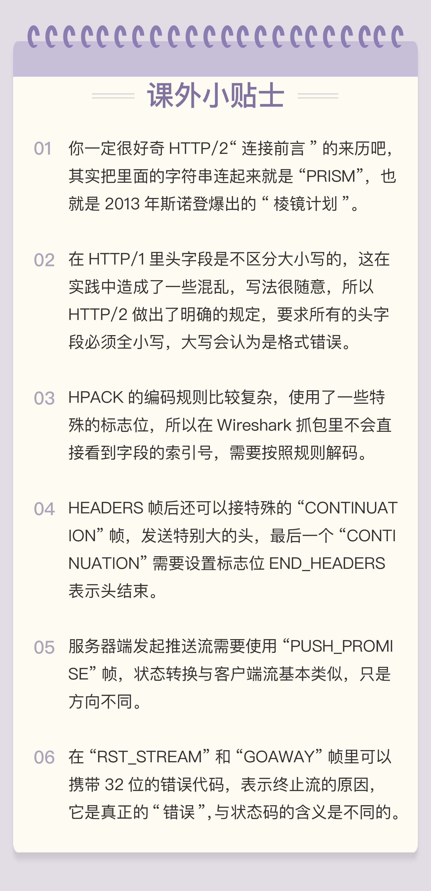
32 未来之路：HTTP3展望
在前面的两讲里，我们一起学习了 HTTP/2，你也应该看到了 HTTP/2 做出的许多努力，比如头部压缩、二进制分帧、虚拟的“流”与多路复用，性能方面比 HTTP/1 有了很大的提升，“基本上”解决了“队头阻塞”这个“老大难”问题。
HTTP/2 的“队头阻塞”
等等，你可能要发出疑问了：为什么说是“基本上”，而不是“完全”解决了呢？
这是因为 HTTP/2 虽然使用“帧”“流”“多路复用”，没有了“队头阻塞”，但这些手段都是在应用层里，而在下层，也就是 TCP 协议里，还是会发生“队头阻塞”。
这是怎么回事呢？
让我们从协议栈的角度来仔细看一下。在 HTTP/2 把多个“请求 - 响应”分解成流，交给 TCP 后，TCP 会再拆成更小的包依次发送（其实在 TCP 里应该叫 segment，也就是“段”）。
在网络良好的情况下，包可以很快送达目的地。但如果网络质量比较差，像手机上网的时候，就有可能会丢包。而 TCP 为了保证可靠传输，有个特别的“丢包重传”机制，丢失的包必须要等待重新传输确认，其他的包即使已经收到了，也只能放在缓冲区里，上层的应用拿不出来，只能“干着急”。
我举个简单的例子：
客户端用 TCP 发送了三个包，但服务器所在的操作系统只收到了后两个包，第一个包丢了。那么内核里的 TCP 协议栈就只能把已经收到的包暂存起来，“停下”等着客户端重传那个丢失的包，这样就又出现了“队头阻塞”。
由于这种“队头阻塞”是 TCP 协议固有的，所以 HTTP/2 即使设计出再多的“花样”也无法解决。
Google 在推 SPDY 的时候就已经意识到了这个问题，于是就又发明了一个新的“QUIC”协议，让 HTTP 跑在 QUIC 上而不是 TCP 上。
而这个“HTTP over QUIC”就是 HTTP 协议的下一个大版本，HTTP/3。它在 HTTP/2 的基础上又实现了质的飞跃，真正“完美”地解决了“队头阻塞”问题。
不过 HTTP/3 目前还处于草案阶段，正式发布前可能会有变动，所以今天我尽量不谈那些不稳定的细节。
这里先贴一下 HTTP/3 的协议栈图，让你对它有个大概的了解。
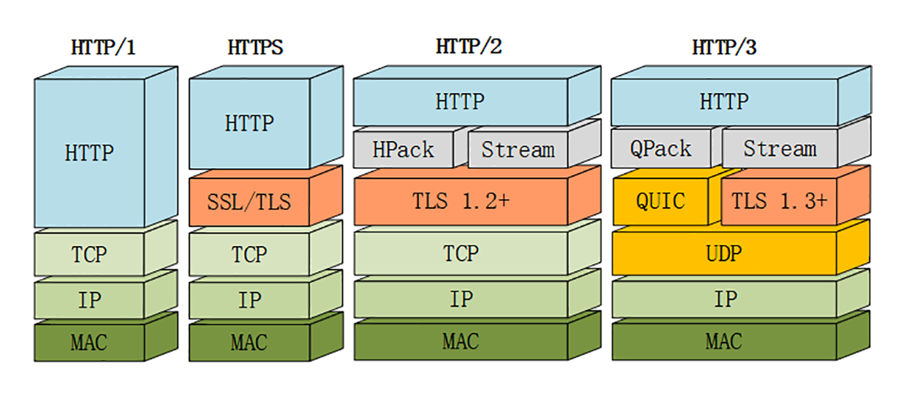
QUIC 协议
从这张图里，你可以看到 HTTP/3 有一个关键的改变，那就是它把下层的 TCP“抽掉”了，换成了 UDP。因为 UDP 是无序的，包之间没有依赖关系，所以就从根本上解决了“队头阻塞”。
你一定知道，UDP 是一个简单、不可靠的传输协议，只是对 IP 协议的一层很薄的包装，和 TCP 相比，它实际应用的较少。
不过正是因为它简单，不需要建连和断连，通信成本低，也就非常灵活、高效，“可塑性”很强。
所以，QUIC 就选定了 UDP，在它之上把 TCP 的那一套连接管理、拥塞窗口、流量控制等“搬”了过来，“去其糟粕，取其精华”，打造出了一个全新的可靠传输协议，可以认为是“新时代的 TCP”。
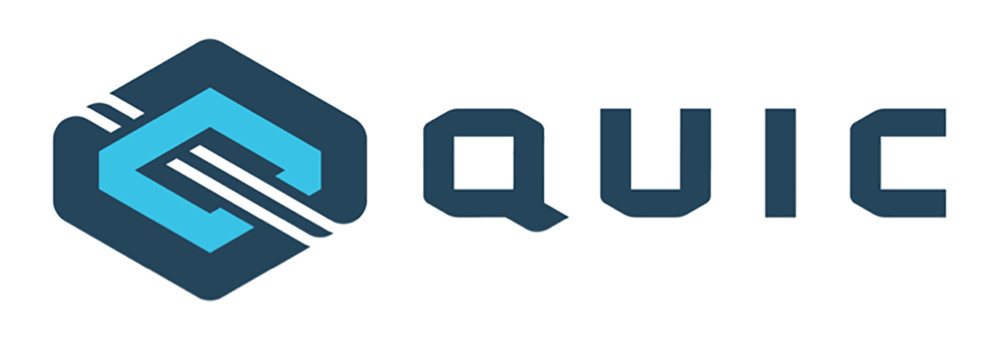
QUIC 最早是由 Google 发明的，被称为 gQUIC。而当前正在由 IETF 标准化的 QUIC 被称为 iQUIC。两者的差异非常大，甚至比当年的 SPDY 与 HTTP/2 的差异还要大。
gQUIC 混合了 UDP、TLS、HTTP，是一个应用层的协议。而 IETF 则对 gQUIC 做了“清理”，把应用部分分离出来，形成了 HTTP/3，原来的 UDP 部分“下放”到了传输层，所以 iQUIC 有时候也叫“QUIC-transport”。
接下来要说的 QUIC 都是指 iQUIC，要记住，它与早期的 gQUIC 不同，是一个传输层的协议，和 TCP 是平级的。
QUIC 的特点
QUIC 基于 UDP，而 UDP 是“无连接”的，根本就不需要“握手”和“挥手”，所以天生就要比 TCP 快。
就像 TCP 在 IP 的基础上实现了可靠传输一样，QUIC 也基于 UDP 实现了可靠传输，保证数据一定能够抵达目的地。它还引入了类似 HTTP/2 的“流”和“多路复用”，单个“流”是有序的，可能会因为丢包而阻塞，但其他“流”不会受到影响。
为了防止网络上的中间设备（Middle Box）识别协议的细节，QUIC 全面采用加密通信，可以很好地抵御窜改和“协议僵化”（ossification）。
而且，因为 TLS1.3 已经在去年（2018）正式发布，所以 QUIC 就直接应用了 TLS1.3，顺便也就获得了 0-RTT、1-RTT 连接的好处。
但 QUIC 并不是建立在 TLS 之上，而是内部“包含”了 TLS。它使用自己的帧“接管”了 TLS 里的“记录”，握手消息、警报消息都不使用 TLS 记录，直接封装成 QUIC 的帧发送，省掉了一次开销。
QUIC 内部细节
由于 QUIC 在协议栈里比较偏底层，所以我只简略介绍两个内部的关键知识点。
QUIC 的基本数据传输单位是包（packet）和帧（frame），一个包由多个帧组成，包面向的是“连接”，帧面向的是“流”。
QUIC 使用不透明的“连接 ID”来标记通信的两个端点，客户端和服务器可以自行选择一组 ID 来标记自己，这样就解除了 TCP 里连接对“IP 地址 + 端口”（即常说的四元组）的强绑定，支持“连接迁移”（Connection Migration）。

比如你下班回家，手机会自动由 4G 切换到 WiFi。这时 IP 地址会发生变化，TCP 就必须重新建立连接。而 QUIC 连接里的两端连接 ID 不会变，所以连接在“逻辑上”没有中断，它就可以在新的 IP 地址上继续使用之前的连接，消除重连的成本，实现连接的无缝迁移。
QUIC 的帧里有多种类型，PING、ACK 等帧用于管理连接，而 STREAM 帧专门用来实现流。
QUIC 里的流与 HTTP/2 的流非常相似，也是帧的序列，你可以对比着来理解。但 HTTP/2 里的流都是双向的，而 QUIC 则分为双向流和单向流。

QUIC 帧普遍采用变长编码，最少只要 1 个字节，最多有 8 个字节。流 ID 的最大可用位数是 62，数量上比 HTTP/2 的 2^31 大大增加。
流 ID 还保留了最低两位用作标志，第 1 位标记流的发起者，0 表示客户端，1 表示服务器；第 2 位标记流的方向，0 表示双向流，1 表示单向流。
所以 QUIC 流 ID 的奇偶性质和 HTTP/2 刚好相反，客户端的 ID 是偶数，从 0 开始计数。
HTTP/3 协议
了解了 QUIC 之后，再来看 HTTP/3 就容易多了。
因为 QUIC 本身就已经支持了加密、流和多路复用，所以 HTTP/3 的工作减轻了很多，把流控制都交给 QUIC 去做。调用的不再是 TLS 的安全接口，也不是 Socket API，而是专门的 QUIC 函数。不过这个“QUIC 函数”还没有形成标准，必须要绑定到某一个具体的实现库。
HTTP/3 里仍然使用流来发送“请求 - 响应”，但它自身不需要像 HTTP/2 那样再去定义流，而是直接使用 QUIC 的流，相当于做了一个“概念映射”。
HTTP/3 里的“双向流”可以完全对应到 HTTP/2 的流，而“单向流”在 HTTP/3 里用来实现控制和推送，近似地对应 HTTP/2 的 0 号流。
由于流管理被“下放”到了 QUIC，所以 HTTP/3 里帧的结构也变简单了。
帧头只有两个字段：类型和长度，而且同样都采用变长编码，最小只需要两个字节。
HTTP/3 里的帧仍然分成数据帧和控制帧两类，HEADERS 帧和 DATA 帧传输数据，但其他一些帧因为在下层的 QUIC 里有了替代，所以在 HTTP/3 里就都消失了，比如 RST_STREAM、WINDOW_UPDATE、PING 等。
头部压缩算法在 HTTP/3 里升级成了“QPACK”，使用方式上也做了改变。虽然也分成静态表和动态表，但在流上发送 HEADERS 帧时不能更新字段，只能引用，索引表的更新需要在专门的单向流上发送指令来管理，解决了 HPACK 的“队头阻塞”问题。
另外，QPACK 的字典也做了优化，静态表由之前的 61 个增加到了 98 个，而且序号从 0 开始，也就是说“:authority”的编号是 0。
HTTP/3 服务发现
讲了这么多，不知道你注意到了没有：HTTP/3 没有指定默认的端口号，也就是说不一定非要在 UDP 的 80 或者 443 上提供 HTTP/3 服务。
那么，该怎么“发现”HTTP/3 呢？
这就要用到 HTTP/2 里的“扩展帧”了。浏览器需要先用 HTTP/2 协议连接服务器，然后服务器可以在启动 HTTP/2 连接后发送一个“Alt-Svc”帧，包含一个“h3=host:port”的字符串，告诉浏览器在另一个端点上提供等价的 HTTP/3 服务。
浏览器收到“Alt-Svc”帧，会使用 QUIC 异步连接指定的端口，如果连接成功，就会断开 HTTP/2 连接，改用新的 HTTP/3 收发数据。
小结
HTTP/3 综合了我们之前讲的所有技术（HTTP/1、SSL/TLS、HTTP/2），包含知识点很多，比如队头阻塞、0-RTT 握手、虚拟的“流”、多路复用，算得上是“集大成之作”，需要多下些功夫好好体会。
- HTTP/3 基于 QUIC 协议，完全解决了“队头阻塞”问题，弱网环境下的表现会优于 HTTP/2；
- QUIC 是一个新的传输层协议，建立在 UDP 之上，实现了可靠传输；
- QUIC 内含了 TLS1.3，只能加密通信，支持 0-RTT 快速建连；
- QUIC 的连接使用“不透明”的连接 ID，不绑定在“IP 地址 + 端口”上，支持“连接迁移”；
- QUIC 的流与 HTTP/2 的流很相似，但分为双向流和单向流；
- HTTP/3 没有指定默认端口号，需要用 HTTP/2 的扩展帧“Alt-Svc”来发现。
课下作业
- IP 协议要比 UDP 协议省去 8 个字节的成本，也更通用，QUIC 为什么不构建在 IP 协议之上呢？
- 说一说你理解的 QUIC、HTTP/3 的好处。
- 对比一下 HTTP/3 和 HTTP/2 各自的流、帧，有什么相同点和不同点。
欢迎你把自己的学习体会写在留言区，与我和其他同学一起讨论。如果你觉得有所收获，也欢迎把文章分享给你的朋友。
33 我应该迁移到HTTP2吗？
这一讲是“飞翔篇”的最后一讲，而 HTTP 的所有知识也差不多快学完了。
前面你已经看到了新的 HTTP/2 和 HTTP/3 协议，了解了它们的特点和工作原理，如果再联系上前几天“安全篇”的 HTTPS，你可能又会发出疑问：
“刚费了好大的力气升级到 HTTPS，这又出了一个 HTTP/2，还有再次升级的必要吗？”
与各大浏览器“强推”HTTPS 的待遇不一样，HTTP/2 的公布可谓是“波澜不惊”。虽然它是 HTTP 协议的一个重大升级，但 Apple、Google 等科技巨头并没有像 HTTPS 那样给予大量资源的支持。
直到今天，HTTP/2 在互联网上还是处于“不温不火”的状态，虽然已经有了不少的网站改造升级到了 HTTP/2，但普及的速度远不及 HTTPS。
所以，你有这样的疑问也是很自然的，升级到 HTTP/2 究竟能给我们带来多少好处呢？到底“值不值”呢？
HTTP/2 的优点
前面的几讲主要关注了 HTTP/2 的内部实现，今天我们就来看看它有哪些优点和缺点。
首先要说的是，HTTP/2 最大的一个优点是完全保持了与 HTTP/1 的兼容，在语义上没有任何变化，之前在 HTTP 上的所有投入都不会浪费。
因为兼容 HTTP/1，所以 HTTP/2 也具有 HTTP/1 的所有优点，并且“基本”解决了 HTTP/1 的所有缺点，安全与性能兼顾，可以认为是“更安全的 HTTP、更快的 HTTPS”。
在安全上，HTTP/2 对 HTTPS 在各方面都做了强化。下层的 TLS 至少是 1.2，而且只能使用前向安全的密码套件（即 ECDHE），这同时也就默认实现了“TLS False Start”，支持 1-RTT 握手，所以不需要再加额外的配置就可以自动实现 HTTPS 加速。
安全有了保障，再来看 HTTP/2 在性能方面的改进。
你应该知道，影响网络速度的两个关键因素是“带宽”和“延迟”，HTTP/2 的头部压缩、多路复用、流优先级、服务器推送等手段其实都是针对这两个要点。
所谓的“带宽”就是网络的传输速度。从最早的 56K/s，到如今的 100M/s，虽然网速已经是“今非昔比”，比从前快了几十倍、几百倍，但仍然是“稀缺资源”，图片、视频这样的多媒体数据很容易会把带宽用尽。
节约带宽的基本手段就是压缩，在 HTTP/1 里只能压缩 body，而 HTTP/2 则可以用 HPACK 算法压缩 header，这对高流量的网站非常有价值，有数据表明能节省大概 5%~10% 的流量，这是实实在在的“真金白银”。
与 HTTP/1“并发多个连接”不同，HTTP/2 的“多路复用”特性要求对一个域名（或者 IP）只用一个 TCP 连接，所有的数据都在这一个连接上传输，这样不仅节约了客户端、服务器和网络的资源，还可以把带宽跑满，让 TCP 充分“吃饱”。
这是为什么呢？
我们来看一下在 HTTP/1 里的长连接，虽然是双向通信，但任意一个时间点实际上还是单向的：上行请求时下行空闲，下行响应时上行空闲，再加上“队头阻塞”，实际的带宽打了个“对折”还不止（可参考[第 17 讲]）。
而在 HTTP/2 里，“多路复用”则让 TCP 开足了马力，“全速狂奔”，多个请求响应并发，每时每刻上下行方向上都有流在传输数据，没有空闲的时候，带宽的利用率能够接近 100%。所以，HTTP/2 只使用一个连接，就能抵得过 HTTP/1 里的五六个连接。
不过流也可能会有依赖关系，可能会存在等待导致的阻塞，这就是“延迟”，所以 HTTP/2 的其他特性就派上了用场。
“优先级”可以让客户端告诉服务器，哪个文件更重要，更需要优先传输，服务器就可以调高流的优先级，合理地分配有限的带宽资源，让高优先级的 HTML、图片更快地到达客户端，尽早加载显示。
“服务器推送”也是降低延迟的有效手段，它不需要客户端预先请求，服务器直接就发给客户端，这就省去了客户端解析 HTML 再请求的时间。
HTTP/2 的缺点
说了一大堆 HTTP/2 的优点，再来看看它有什么缺点吧。
听过上一讲 HTTP/3 的介绍，你就知道 HTTP/2 在 TCP 级别还是存在“队头阻塞”的问题。所以，如果网络连接质量差，发生丢包，那么 TCP 会等待重传，传输速度就会降低。
另外，在移动网络中发生 IP 地址切换的时候，下层的 TCP 必须重新建连，要再次“握手”，经历“慢启动”，而且之前连接里积累的 HPACK 字典也都消失了，必须重头开始计算，导致带宽浪费和时延。
刚才也说了，HTTP/2 对一个域名只开一个连接，所以一旦这个连接出问题，那么整个网站的体验也就变差了。
而这些情况下 HTTP/1 反而不会受到影响，因为它“本来就慢”，而且还会对一个域名开 6~8 个连接，顶多其中的一两个连接会“更慢”，其他的连接不会受到影响。
应该迁移到 HTTP/2 吗？
说到这里，你对迁移到 HTTP/2 是否已经有了自己的判断呢？
在我看来，HTTP/2 处于一个略“尴尬”的位置，前面有“老前辈”HTTP/1，后面有“新来者”HTTP/3，即有“老前辈”的“打压”，又有“新来者”的“追赶”，也就难怪没有获得市场的大力“吹捧”了。
但这绝不是说 HTTP/2“一无是处”，实际上 HTTP/2 的性能改进效果是非常明显的，Top 1000 的网站中已经有超过 40% 运行在了 HTTP/2 上，包括知名的 Apple、Facebook、Google、Twitter 等等。仅用了四年的时间，HTTP/2 就拥有了这么大的市场份额和巨头的认可，足以证明它的价值。
因为 HTTP/2 的侧重点是“性能”，所以“是否迁移”就需要在这方面进行评估。如果网站的流量很大，那么 HTTP/2 就可以带来可观的收益；反之，如果网站流量比较小，那么升级到 HTTP/2 就没有太多必要了，只要利用现有的 HTTP 再优化就足矣。
不过如果你是新建网站，我觉得完全可以跳过 HTTP/1、HTTPS，直接“一步到位”，上 HTTP/2，这样不仅可以获得性能提升，还免去了老旧的“历史包袱”，日后也不会再有迁移的烦恼。
顺便再多嘴一句，HTTP/2 毕竟是“下一代”HTTP 协议，它的很多特性也延续到了 HTTP/3，提早升级到 HTTP/2 还可以让你在 HTTP/3 到来时有更多的技术积累和储备，不至于落后于时代。
配置 HTTP/2
假设你已经决定要使用 HTTP/2，应该如何搭建服务呢？
因为 HTTP/2“事实上”是加密的，所以如果你已经在“安全篇”里成功迁移到了 HTTPS，那么在 Nginx 里启用 HTTP/2 简直可以说是“不费吹灰之力”，只需要在 server 配置里再多加一个参数就可以搞定了。
server {
listen 443 ssl http2;
server_name www.xxx.net;
ssl_certificate xxx.crt;
ssl_certificate_key xxx.key;
注意“listen”指令，在“ssl”后面多了一个“http2”，这就表示在 443 端口上开启了 SSL 加密，然后再启用 HTTP/2。
配置服务器推送特性可以使用指令“http2_push”和“http2_push_preload”：
http2_push /style/xxx.css;
http2_push_preload on;
不过如何合理地配置推送是个难题，如果推送给浏览器不需要的资源，反而浪费了带宽。
这方面暂时没有一般性的原则指导，你必须根据自己网站的实际情况去“猜测”客户端最需要的数据。
优化方面，HTTPS 的一些策略依然适用，比如精简密码套件、ECC 证书、会话复用、HSTS 减少重定向跳转等等。
但还有一些优化手段在 HTTP/2 里是不适用的，而且还会有反效果，比如说常见的精灵图（Spriting）、资源内联（inlining）、域名分片（Sharding）等，至于原因是什么，我把它留给你自己去思考（提示，与缓存有关）。
还要注意一点，HTTP/2 默认启用 header 压缩（HPACK），但并没有默认启用 body 压缩，所以不要忘了在 Nginx 配置文件里加上“gzip”指令，压缩 HTML、JS 等文本数据。
应用层协议协商（ALPN）
最后说一下 HTTP/2 的“服务发现”吧。
你有没有想过，在 URI 里用的都是 HTTPS 协议名，没有版本标记，浏览器怎么知道服务器支持 HTTP/2 呢？为什么上来就能用 HTTP/2，而不是用 HTTP/1 通信呢？
答案在 TLS 的扩展里，有一个叫“ALPN”（Application Layer Protocol Negotiation）的东西，用来与服务器就 TLS 上跑的应用协议进行“协商”。
客户端在发起“Client Hello”握手的时候，后面会带上一个“ALPN”扩展，里面按照优先顺序列出客户端支持的应用协议。
就像下图这样，最优先的是“h2”，其次是“http/1.1”，以前还有“spdy”，以后还可能会有“h3”。

服务器看到 ALPN 扩展以后就可以从列表里选择一种应用协议，在“Server Hello”里也带上“ALPN”扩展，告诉客户端服务器决定使用的是哪一种。因为我们在 Nginx 配置里使用了 HTTP/2 协议，所以在这里它选择的就是“h2”。

这样在 TLS 握手结束后，客户端和服务器就通过“ALPN”完成了应用层的协议协商，后面就可以使用 HTTP/2 通信了。
小结
今天我们讨论了是否应该迁移到 HTTP/2，还有应该如何迁移到 HTTP/2。
- HTTP/2 完全兼容 HTTP/1，是“更安全的 HTTP、更快的 HTTPS”，头部压缩、多路复用等技术可以充分利用带宽，降低延迟，从而大幅度提高上网体验；
- TCP 协议存在“队头阻塞”，所以 HTTP/2 在弱网或者移动网络下的性能表现会不如 HTTP/1；
- 迁移到 HTTP/2 肯定会有性能提升，但高流量网站效果会更显著；
- 如果已经升级到了 HTTPS，那么再升级到 HTTP/2 会很简单；
- TLS 协议提供“ALPN”扩展，让客户端和服务器协商使用的应用层协议，“发现”HTTP/2 服务。
课下作业
- 和“安全篇”的第 29 讲类似，结合自己的实际情况，分析一下是否应该迁移到 HTTP/2，有没有难点？
- 精灵图（Spriting）、资源内联（inlining）、域名分片（Sharding）这些手段为什么会对 HTTP/2 的性能优化造成反效果呢？
欢迎你把自己的学习体会写在留言区，与我和其他同学一起讨论。如果你觉得有所收获，也欢迎把文章分享给你的朋友。
34 Nginx：高性能的Web服务器
经过前面几大模块的学习，你已经完全掌握了 HTTP 的所有知识，那么接下来请收拾一下行囊，整理一下装备，跟我一起去探索 HTTP 之外的广阔天地。
现在的互联网非常发达，用户越来越多，网速越来越快，HTTPS 的安全加密、HTTP/2 的多路复用等特性都对 Web 服务器提出了非常高的要求。一个好的 Web 服务器必须要具备稳定、快速、易扩展、易维护等特性，才能够让网站“立于不败之地”。
那么，在搭建网站的时候，应该选择什么样的服务器软件呢？
在开头的几讲里我也提到过，Web 服务器就那么几款，目前市面上主流的只有两个：Apache 和 Nginx，两者合计占据了近 90% 的市场份额。
今天我要说的就是其中的 Nginx，它是 Web 服务器的“后起之秀”，虽然比 Apache 小了 10 岁，但增长速度十分迅猛，已经达到了与 Apache“平起平坐”的地位，而在“Top Million”网站中更是超过了 Apache，拥有超过 50% 的用户（参考数据）。
在这里必须要说一下 Nginx 的正确发音，它应该读成“Engine X”，但我个人感觉“X”念起来太“拗口”，还是比较倾向于读做“Engine ks”，这也与 UNIX、Linux 的发音一致。
作为一个 Web 服务器，Nginx 的功能非常完善，完美支持 HTTP/1、HTTPS 和 HTTP/2，而且还在不断进步。当前的主线版本已经发展到了 1.17，正在进行 HTTP/3 的研发，或许一年之后就能在 Nginx 上跑 HTTP/3 了。
Nginx 也是我个人的主要研究领域，我也写过相关的书，按理来说今天的课程应该是“手拿把攥”，但真正动笔的时候还是有些犹豫的：很多要点都已经在书里写过了，这次的专栏如果再重复相同的内容就不免有“骗稿费”的嫌疑，应该有些“不一样的东西”。
所以我决定抛开书本，换个角度，结合 HTTP 协议来讲 Nginx，带你窥视一下 HTTP 处理的内幕，看看 Web 服务器的工作原理。
进程池
你也许听说过，Nginx 是个“轻量级”的 Web 服务器，那么这个所谓的“轻量级”是什么意思呢？
“轻量级”是相对于“重量级”而言的。“重量级”就是指服务器进程很“重”，占用很多资源，当处理 HTTP 请求时会消耗大量的 CPU 和内存，受到这些资源的限制很难提高性能。
而 Nginx 作为“轻量级”的服务器，它的 CPU、内存占用都非常少，同样的资源配置下就能够为更多的用户提供服务，其奥秘在于它独特的工作模式。
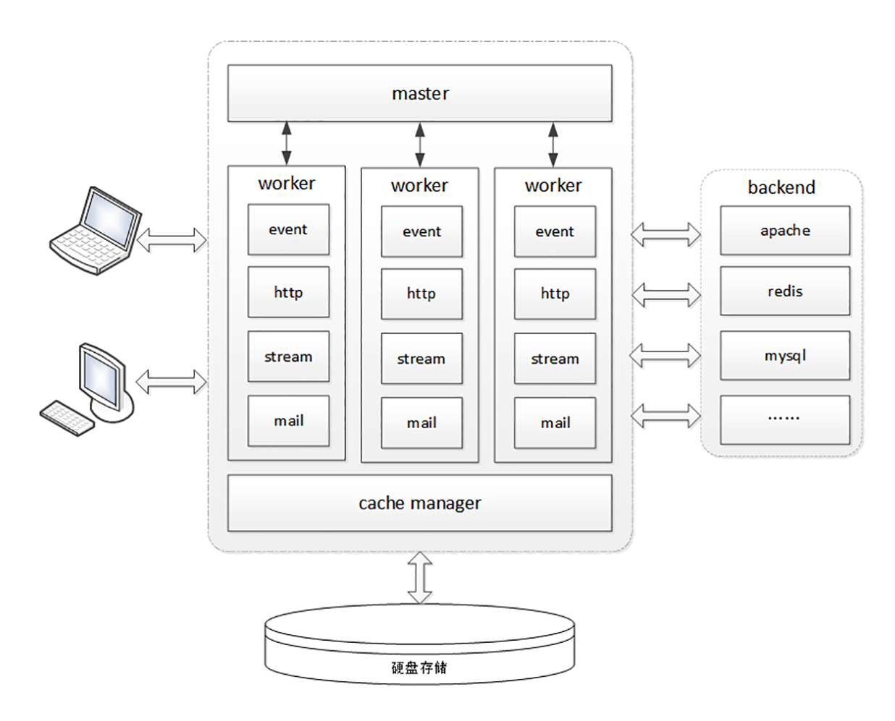
在 Nginx 之前，Web 服务器的工作模式大多是“Per-Process”或者“Per-Thread”，对每一个请求使用单独的进程或者线程处理。这就存在创建进程或线程的成本，还会有进程、线程“上下文切换”的额外开销。如果请求数量很多，CPU 就会在多个进程、线程之间切换时“疲于奔命”，平白地浪费了计算时间。
Nginx 则完全不同，“一反惯例”地没有使用多线程，而是使用了“进程池 + 单线程”的工作模式。
Nginx 在启动的时候会预先创建好固定数量的 worker 进程，在之后的运行过程中不会再 fork 出新进程，这就是进程池，而且可以自动把进程“绑定”到独立的 CPU 上，这样就完全消除了进程创建和切换的成本，能够充分利用多核 CPU 的计算能力。
在进程池之上，还有一个“master”进程，专门用来管理进程池。它的作用有点像是 supervisor（一个用 Python 编写的进程管理工具），用来监控进程，自动恢复发生异常的 worker，保持进程池的稳定和服务能力。
不过 master 进程完全是 Nginx 自行用 C 语言实现的，这就摆脱了外部的依赖，简化了 Nginx 的部署和配置。
I/O 多路复用
如果你用 Java、C 等语言写过程序，一定很熟悉“多线程”的概念，使用多线程能够很容易实现并发处理。
但多线程也有一些缺点，除了刚才说到的“上下文切换”成本，还有编程模型复杂、数据竞争、同步等问题，写出正确、快速的多线程程序并不是一件容易的事情。
所以 Nginx 就选择了单线程的方式，带来的好处就是开发简单，没有互斥锁的成本，减少系统消耗。
那么，疑问也就产生了：为什么单线程的 Nginx，处理能力却能够超越其他多线程的服务器呢？
这要归功于 Nginx 利用了 Linux 内核里的一件“神兵利器”，I/O 多路复用接口，“大名鼎鼎”的 epoll。
“多路复用”这个词我们已经在之前的 HTTP/2、HTTP/3 里遇到过好几次，如果你理解了那里的“多路复用”，那么面对 Nginx 的 epoll“多路复用”也就好办了。
Web 服务器从根本上来说是“I/O 密集型”而不是“CPU 密集型”，处理能力的关键在于网络收发而不是 CPU 计算（这里暂时不考虑 HTTPS 的加解密），而网络 I/O 会因为各式各样的原因不得不等待，比如数据还没到达、对端没有响应、缓冲区满发不出去等等。
这种情形就有点像是 HTTP 里的“队头阻塞”。对于一般的单线程来说 CPU 就会“停下来”，造成浪费。而多线程的解决思路有点类似“并发连接”，虽然有的线程可能阻塞，但由于多个线程并行，总体上看阻塞的情况就不会太严重了。
Nginx 里使用的 epoll，就好像是 HTTP/2 里的“多路复用”技术，它把多个 HTTP 请求处理打散成碎片，都“复用”到一个单线程里，不按照先来后到的顺序处理，而是只当连接上真正可读、可写的时候才处理，如果可能发生阻塞就立刻切换出去，处理其他的请求。
通过这种方式，Nginx 就完全消除了 I/O 阻塞，把 CPU 利用得“满满当当”，又因为网络收发并不会消耗太多 CPU 计算能力，也不需要切换进程、线程，所以整体的 CPU 负载是相当低的。
这里我画了一张 Nginx“I/O 多路复用”的示意图，你可以看到，它的形式与 HTTP/2 的流非常相似，每个请求处理单独来看是分散、阻塞的，但因为都复用到了一个线程里，所以资源的利用率非常高。

epoll 还有一个特点，大量的连接管理工作都是在操作系统内核里做的，这就减轻了应用程序的负担，所以 Nginx 可以为每个连接只分配很小的内存维护状态，即使有几万、几十万的并发连接也只会消耗几百 M 内存，而其他的 Web 服务器这个时候早就“Memory not enough”了。
多阶段处理
有了“进程池”和“I/O 多路复用”，Nginx 是如何处理 HTTP 请求的呢？
Nginx 在内部也采用的是“化整为零”的思路，把整个 Web 服务器分解成了多个“功能模块”，就好像是乐高积木，可以在配置文件里任意拼接搭建，从而实现了高度的灵活性和扩展性。
Nginx 的 HTTP 处理有四大类模块：
- handler 模块：直接处理 HTTP 请求；
- filter 模块：不直接处理请求，而是加工过滤响应报文；
- upstream 模块：实现反向代理功能，转发请求到其他服务器；
- balance 模块：实现反向代理时的负载均衡算法。
因为 upstream 模块和 balance 模块实现的是代理功能，Nginx 作为“中间人”，运行机制比较复杂，所以我今天只讲 handler 模块和 filter 模块。
不知道你有没有了解过“设计模式”这方面的知识，其中有一个非常有用的模式叫做“职责链”。它就好像是工厂里的流水线，原料从一头流入，线上有许多工人会进行各种加工处理，最后从另一头出来的就是完整的产品。
Nginx 里的 handler 模块和 filter 模块就是按照“职责链”模式设计和组织的，HTTP 请求报文就是“原材料”，各种模块就是工厂里的工人，走完模块构成的“流水线”，出来的就是处理完成的响应报文。
下面的这张图显示了 Nginx 的“流水线”，在 Nginx 里的术语叫“阶段式处理”（Phases），一共有 11 个阶段，每个阶段里又有许多各司其职的模块。

我简单列几个与我们的课程相关的模块吧：
- charset 模块实现了字符集编码转换；（[第 15 讲]）
- chunked 模块实现了响应数据的分块传输；（[第 16 讲]）
- range 模块实现了范围请求，只返回数据的一部分；（[第 16 讲]）
- rewrite 模块实现了重定向和跳转，还可以使用内置变量自定义跳转的 URI；（[第 18 讲]）
- not_modified 模块检查头字段“if-Modified-Since”和“If-None-Match”，处理条件请求；（[第 20 讲]）
- realip 模块处理“X-Real-IP”“X-Forwarded-For”等字段，获取客户端的真实 IP 地址；（[第 21 讲]）
- ssl 模块实现了 SSL/TLS 协议支持，读取磁盘上的证书和私钥，实现 TLS 握手和 SNI、ALPN 等扩展功能；（[安全篇]）
- http_v2 模块实现了完整的 HTTP/2 协议。（[飞翔篇]）
在这张图里，你还可以看到 limit_conn、limit_req、access、log 等其他模块，它们实现的是限流限速、访问控制、日志等功能，不在 HTTP 协议规定之内，但对于运行在现实世界的 Web 服务器却是必备的。
如果你有 C 语言基础，感兴趣的话可以下载 Nginx 的源码，在代码级别仔细看看 HTTP 的处理过程。
小结
- Nginx 是一个高性能的 Web 服务器，它非常的轻量级，消耗的 CPU、内存很少；
- Nginx 采用“master/workers”进程池架构，不使用多线程，消除了进程、线程切换的成本；
- Nginx 基于 epoll 实现了“I/O 多路复用”，不会阻塞，所以性能很高；
- Nginx 使用了“职责链”模式，多个模块分工合作，自由组合，以流水线的方式处理 HTTP 请求。
课下作业
- 你是怎么理解进程、线程上下文切换时的成本的，为什么 Nginx 要尽量避免？
- 试着自己描述一下 Nginx 用进程、epoll、模块流水线处理 HTTP 请求的过程。
欢迎你把自己的学习体会写在留言区，与我和其他同学一起讨论。如果你觉得有所收获，也欢迎把文章分享给你的朋友。
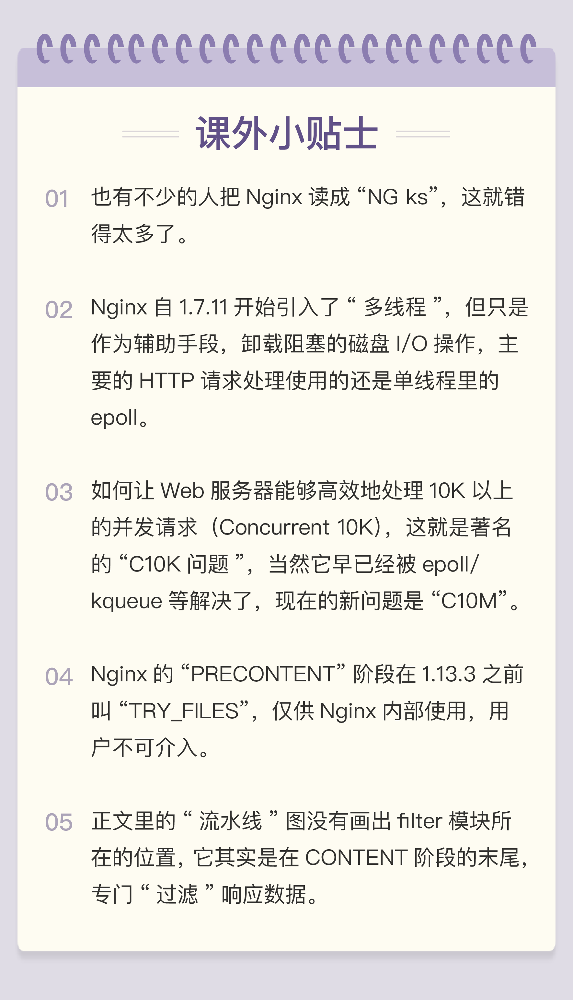
35 OpenResty：更灵活的Web服务器
在上一讲里，我们看到了高性能的 Web 服务器 Nginx，它资源占用少，处理能力高，是搭建网站的首选。
虽然 Nginx 成为了 Web 服务器领域无可争议的“王者”，但它也并不是没有缺点的，毕竟它已经 15 岁了。
“一个人很难超越时代，而时代却可以轻易超越所有人”，Nginx 当初设计时针对的应用场景已经发生了变化，它的一些缺点也就暴露出来了。
Nginx 的服务管理思路延续了当时的流行做法，使用磁盘上的静态配置文件，所以每次修改后必须重启才能生效。
这在业务频繁变动的时候是非常致命的（例如流行的微服务架构），特别是对于拥有成千上万台服务器的网站来说，仅仅增加或者删除一行配置就要分发、重启所有的机器，对运维是一个非常大的挑战，要耗费很多的时间和精力，成本很高，很不灵活，难以“随需应变”。
那么，有没有这样的一个 Web 服务器，它有 Nginx 的优点却没有 Nginx 的缺点，既轻量级、高性能，又灵活、可动态配置呢？
这就是我今天要说的 OpenResty，它是一个“更好更灵活的 Nginx”。
OpenResty 是什么？
其实你对 OpenResty 并不陌生，这个专栏的实验环境就是用 OpenResty 搭建的，这么多节课程下来，你应该或多或少对它有了一些印象吧。
OpenResty 诞生于 2009 年，到现在刚好满 10 周岁。它的创造者是当时就职于某宝的“神级”程序员章亦春，网名叫“agentzh”。
OpenResty 并不是一个全新的 Web 服务器，而是基于 Nginx，它利用了 Nginx 模块化、可扩展的特性，开发了一系列的增强模块，并把它们打包整合，形成了一个**“一站式”的 Web 开发平台**。
虽然 OpenResty 的核心是 Nginx，但它又超越了 Nginx，关键就在于其中的 ngx_lua 模块，把小巧灵活的 Lua 语言嵌入了 Nginx，可以用脚本的方式操作 Nginx 内部的进程、多路复用、阶段式处理等各种构件。
脚本语言的好处你一定知道，它不需要编译，随写随执行，这就免去了 C 语言编写模块漫长的开发周期。而且 OpenResty 还把 Lua 自身的协程与 Nginx 的事件机制完美结合在一起，优雅地实现了许多其他语言所没有的“同步非阻塞”编程范式，能够轻松开发出高性能的 Web 应用。
目前 OpenResty 有两个分支，分别是开源、免费的“OpenResty”和闭源、商业产品的“OpenResty+”，运作方式有社区支持、OpenResty 基金会、OpenResty.Inc 公司，还有其他的一些外界赞助（例如 Kong、CloudFlare），正在蓬勃发展。

顺便说一下 OpenResty 的官方 logo，是一只展翅飞翔的海鸥，选择海鸥是因为“鸥”与 OpenResty 的发音相同。另外，这个 logo 的形状也像是左手比出的一个“OK”姿势，正好也是一个“O”。
动态的 Lua
刚才说了，OpenResty 里的一个关键模块是 ngx_lua，它为 Nginx 引入了脚本语言 Lua。
Lua 是一个比较“小众”的语言，虽然历史比较悠久，但名气却没有 PHP、Python、JavaScript 大，这主要与它的自身定位有关。
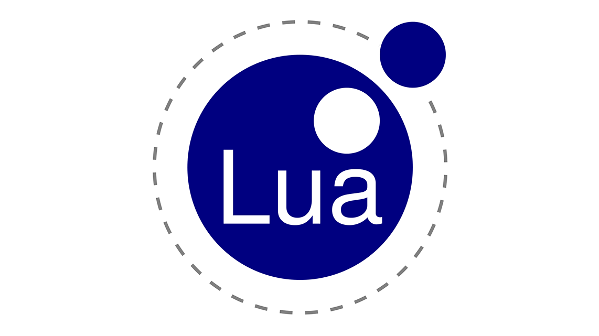
Lua 的设计目标是嵌入到其他应用程序里运行，为其他编程语言带来“脚本化”能力，所以它的“个头”比较小，功能集有限，不追求“大而全”，而是“小而美”，大多数时间都“隐匿”在其他应用程序的后面，是“无名英雄”。
你或许玩过或者听说过《魔兽世界》《愤怒的小鸟》吧，它们就在内部嵌入了 Lua，使用 Lua 来调用底层接口，充当“胶水语言”（glue language），编写游戏逻辑脚本，提高开发效率。
OpenResty 选择 Lua 作为“工作语言”也是基于同样的考虑。因为 Nginx C 开发实在是太麻烦了，限制了 Nginx 的真正实力。而 Lua 作为“最快的脚本语言”恰好可以成为 Nginx 的完美搭档，既可以简化开发，性能上又不会有太多的损耗。
作为脚本语言，Lua 还有一个重要的“代码热加载”特性，不需要重启进程，就能够从磁盘、Redis 或者任何其他地方加载数据，随时替换内存里的代码片段。这就带来了“动态配置”，让 OpenResty 能够永不停机，在微秒、毫秒级别实现配置和业务逻辑的实时更新，比起 Nginx 秒级的重启是一个极大的进步。
你可以看一下实验环境的“www/lua”目录，里面存放了我写的一些测试 HTTP 特性的 Lua 脚本，代码都非常简单易懂，就像是普通的英语“阅读理解”，这也是 Lua 的另一个优势：易学习、易上手。
高效率的 Lua
OpenResty 能够高效运行的一大“秘技”是它的“同步非阻塞”编程范式，如果你要开发 OpenResty 应用就必须时刻铭记于心。
“同步非阻塞”本质上还是一种“多路复用”，我拿上一讲的 Nginx epoll 来对比解释一下。
epoll 是操作系统级别的“多路复用”，运行在内核空间。而 OpenResty 的“同步非阻塞”则是基于 Lua 内建的“协程”，是应用程序级别的“多路复用”，运行在用户空间，所以它的资源消耗要更少。
OpenResty 里每一段 Lua 程序都由协程来调度运行。和 Linux 的 epoll 一样，每当可能发生阻塞的时候“协程”就会立刻切换出去，执行其他的程序。这样单个处理流程是“阻塞”的，但整个 OpenResty 却是“非阻塞的”，多个程序都“复用”在一个 Lua 虚拟机里运行。
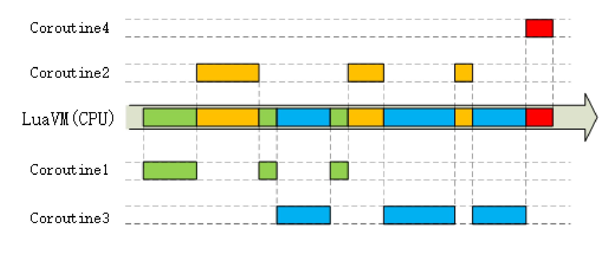
下面的代码是一个简单的例子，读取 POST 发送的 body 数据，然后再发回客户端：
ngx.req.read_body() -- 同步非阻塞 (1)
local data = ngx.req.get_body_data()
if data then
ngx.print("body: ", data) -- 同步非阻塞 (2)
end
代码中的“ngx.req.read_body”和“ngx.print”分别是数据的收发动作，只有收到数据才能发送数据，所以是“同步”的。
但即使因为网络原因没收到或者发不出去，OpenResty 也不会在这里阻塞“干等着”，而是做个“记号”，把等待的这段 CPU 时间用来处理其他的请求，等网络可读或者可写时再“回来”接着运行。
假设收发数据的等待时间是 10 毫秒，而真正 CPU 处理的时间是 0.1 毫秒，那么 OpenResty 就可以在这 10 毫秒内同时处理 100 个请求，而不是把这 100 个请求阻塞排队，用 1000 毫秒来处理。
除了“同步非阻塞”，OpenResty 还选用了LuaJIT作为 Lua 语言的“运行时（Runtime）”，进一步“挖潜增效”。
LuaJIT 是一个高效的 Lua 虚拟机，支持 JIT（Just In Time）技术，可以把 Lua 代码即时编译成“本地机器码”，这样就消除了脚本语言解释运行的劣势，让 Lua 脚本跑得和原生 C 代码一样快。
另外，LuaJIT 还为 Lua 语言添加了一些特别的增强，比如二进制位运算库 bit，内存优化库 table，还有 FFI（Foreign Function Interface），让 Lua 直接调用底层 C 函数，比原生的压栈调用快很多。
阶段式处理
和 Nginx 一样，OpenResty 也使用“流水线”来处理 HTTP 请求，底层的运行基础是 Nginx 的“阶段式处理”，但它又有自己的特色。
Nginx 的“流水线”是由一个个 C 模块组成的，只能在静态文件里配置，开发困难，配置麻烦（相对而言）。而 OpenResty 的“流水线”则是由一个个的 Lua 脚本组成的，不仅可以从磁盘上加载，也可以从 Redis、MySQL 里加载，而且编写、调试的过程非常方便快捷。
下面我画了一张图，列出了 OpenResty 的阶段，比起 Nginx，OpenResty 的阶段更注重对 HTTP 请求响应报文的加工和处理。
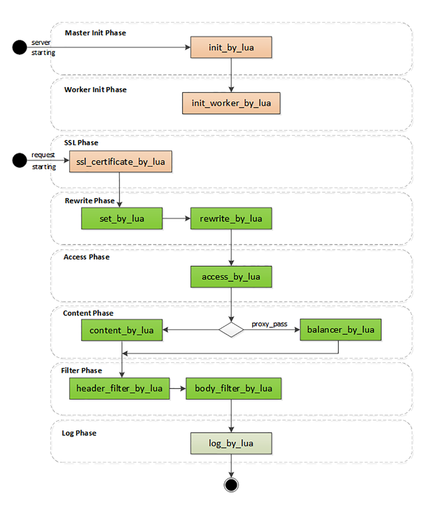
OpenResty 里有几个阶段与 Nginx 是相同的，比如 rewrite、access、content、filter，这些都是标准的 HTTP 处理。
在这几个阶段里可以用“xxx_by_lua”指令嵌入 Lua 代码，执行重定向跳转、访问控制、产生响应、负载均衡、过滤报文等功能。因为 Lua 的脚本语言特性，不用考虑内存分配、资源回收释放等底层的细节问题，可以专注于编写非常复杂的业务逻辑，比 C 模块的开发效率高很多，即易于扩展又易于维护。
OpenResty 里还有两个不同于 Nginx 的特殊阶段。
一个是“init 阶段”，它又分成“master init”和“worker init”，在 master 进程和 worker 进程启动的时候运行。这个阶段还没有开始提供服务，所以慢一点也没关系，可以调用一些阻塞的接口初始化服务器，比如读取磁盘、MySQL，加载黑白名单或者数据模型，然后放进共享内存里供运行时使用。
另一个是“ssl 阶段”，这算得上是 OpenResty 的一大创举，可以在 TLS 握手时动态加载证书，或者发送“OCSP Stapling”。
还记得[第 29 讲]里说的“SNI 扩展”吗？Nginx 可以依据“服务器名称指示”来选择证书实现 HTTPS 虚拟主机，但静态配置很不灵活，要编写很多雷同的配置块。虽然后来 Nginx 增加了变量支持，但它每次握手都要读磁盘，效率很低。
而在 OpenResty 里就可以使用指令“ssl_certificate_by_lua”，编写 Lua 脚本，读取 SNI 名字后，直接从共享内存或者 Redis 里获取证书。不仅没有读盘阻塞，而且证书也是完全动态可配置的，无需修改配置文件就能够轻松支持大量的 HTTPS 虚拟主机。
小结
- Nginx 依赖于磁盘上的静态配置文件，修改后必须重启才能生效，缺乏灵活性；
- OpenResty 基于 Nginx，打包了很多有用的模块和库，是一个高性能的 Web 开发平台；
- OpenResty 的工作语言是 Lua，它小巧灵活，执行效率高，支持“代码热加载”；
- OpenResty 的核心编程范式是“同步非阻塞”，使用协程，不需要异步回调函数；
- OpenResty 也使用“阶段式处理”的工作模式，但因为在阶段里执行的都是 Lua 代码，所以非常灵活，配合 Redis 等外部数据库能够实现各种动态配置。
课下作业
- 谈一下这些天你对实验环境里 OpenResty 的感想和认识。
- 你觉得 Nginx 和 OpenResty 的“阶段式处理”有什么好处？对你的实际工作有没有启发？
欢迎你把自己的学习体会写在留言区，与我和其他同学一起讨论。如果你觉得有所收获，也欢迎把文章分享给你的朋友。
36 WAF：保护我们的网络服务
在前些天的“安全篇”里，我谈到了 HTTPS，它使用了 SSL/TLS 协议，加密整个通信过程，能够防止恶意窃听和窜改，保护我们的数据安全。
但 HTTPS 只是网络安全中很小的一部分，仅仅保证了“通信链路安全”，让第三方无法得知传输的内容。在通信链路的两端，也就是客户端和服务器，它是无法提供保护的。
因为 HTTP 是一个开放的协议，Web 服务都运行在公网上，任何人都可以访问，所以天然就会成为黑客的攻击目标。
而且黑客的本领比我们想象的还要大得多。虽然不能在传输过程中做手脚，但他们还可以“假扮”成合法的用户访问系统，然后伺机搞破坏。
Web 服务遇到的威胁
黑客都有哪些手段来攻击 Web 服务呢？我给你大概列出几种常见的方式。
第一种叫“DDoS”攻击（distributed denial-of-service attack），有时候也叫“洪水攻击”。
黑客会控制许多“僵尸”计算机，向目标服务器发起大量无效请求。因为服务器无法区分正常用户和黑客，只能“照单全收”，这样就挤占了正常用户所应有的资源。如果黑客的攻击强度很大，就会像“洪水”一样对网站的服务能力造成冲击，耗尽带宽、CPU 和内存，导致网站完全无法提供正常服务。
“DDoS”攻击方式比较“简单粗暴”，虽然很有效，但不涉及 HTTP 协议内部的细节，“技术含量”比较低，不过下面要说的几种手段就不一样了。
网站后台的 Web 服务经常会提取出 HTTP 报文里的各种信息，应用于业务，有时会缺乏严格的检查。因为 HTTP 报文在语义结构上非常松散、灵活，URI 里的 query 字符串、头字段、body 数据都可以任意设置，这就带来了安全隐患，给了黑客“代码注入”的可能性。
黑客可以精心编制 HTTP 请求报文，发送给服务器，服务程序如果没有做防备，就会“上当受骗”，执行黑客设定的代码。
“SQL 注入”（SQL injection）应该算是最著名的一种“代码注入”攻击了，它利用了服务器字符串拼接形成 SQL 语句的漏洞，构造出非正常的 SQL 语句，获取数据库内部的敏感信息。
另一种“HTTP 头注入”攻击的方式也是类似的原理，它在“Host”“User-Agent”“X-Forwarded-For”等字段里加入了恶意数据或代码，服务端程序如果解析不当，就会执行预设的恶意代码。
在之前的[第 19 讲]里，也说过一种利用 Cookie 的攻击手段，“跨站脚本”（XSS）攻击，它属于“JS 代码注入”，利用 JavaScript 脚本获取未设防的 Cookie。
网络应用防火墙
面对这么多的黑客攻击手段，我们应该怎么防御呢？
这就要用到“网络应用防火墙”（Web Application Firewall）了，简称为“WAF”。
你可能对传统的“防火墙”比较熟悉。传统“防火墙”工作在三层或者四层，隔离了外网和内网，使用预设的规则，只允许某些特定 IP 地址和端口号的数据包通过，拒绝不符合条件的数据流入或流出内网，实质上是一种网络数据过滤设备。
WAF 也是一种“防火墙”，但它工作在七层，看到的不仅是 IP 地址和端口号，还能看到整个 HTTP 报文，所以就能够对报文内容做更深入细致的审核，使用更复杂的条件、规则来过滤数据。
说白了，WAF 就是一种“HTTP 入侵检测和防御系统”。
WAF 都能干什么呢？
通常一款产品能够称为 WAF，要具备下面的一些功能：
- IP 黑名单和白名单，拒绝黑名单上地址的访问，或者只允许白名单上的用户访问；
- URI 黑名单和白名单，与 IP 黑白名单类似，允许或禁止对某些 URI 的访问；
- 防护 DDoS 攻击，对特定的 IP 地址限连限速；
- 过滤请求报文，防御“代码注入”攻击；
- 过滤响应报文，防御敏感信息外泄；
- 审计日志，记录所有检测到的入侵操作。
听起来 WAF 好像很高深，但如果你理解了它的工作原理，其实也不难。
它就像是平时编写程序时必须要做的函数入口参数检查，拿到 HTTP 请求、响应报文，用字符串处理函数看看有没有关键字、敏感词，或者用正则表达式做一下模式匹配，命中了规则就执行对应的动作，比如返回 403/404。
如果你比较熟悉 Apache、Nginx、OpenResty，可以自己改改配置文件，写点 JS 或者 Lua 代码，就能够实现基本的 WAF 功能。
比如说，在 Nginx 里实现 IP 地址黑名单，可以利用“map”指令，从变量 $remote_addr 获取 IP 地址，在黑名单上就映射为值 1，然后在“if”指令里判断：
map $remote_addr $blocked {
default 0;
"1.2.3.4" 1;
"5.6.7.8" 1;
}
if ($blocked) {
return 403 "you are blocked.";
}
Nginx 的配置文件只能静态加载，改名单必须重启，比较麻烦。如果换成 OpenResty 就会非常方便，在 access 阶段进行判断，IP 地址列表可以使用 cosocket 连接外部的 Redis、MySQL 等数据库，实现动态更新：
local ip_addr = ngx.var.remote_addr
local rds = redis:new()
if rds:get(ip_addr) == 1 then
ngx.exit(403)
end
看了上面的两个例子，你是不是有种“跃跃欲试”的冲动了，想自己动手开发一个 WAF？
不过我必须要提醒你，在网络安全领域必须时刻记得“木桶效应”（也叫“短板效应”）。网站的整体安全不在于你加固的最强的那个方向，而是在于你可能都没有意识到的“短板”。黑客往往会“避重就轻”，只要发现了网站的一个弱点，就可以“一点突破”，其他方面的安全措施也就都成了“无用功”。
所以，使用 WAF 最好“不要重新发明轮子”，而是使用现有的、比较成熟的、经过实际考验的 WAF 产品。
全面的 WAF 解决方案
这里我就要“隆重”介绍一下 WAF 领域里的最顶级产品了：ModSecurity，它可以说是 WAF 界“事实上的标准”。
ModSecurity 是一个开源的、生产级的 WAF 工具包，历史很悠久，比 Nginx 还要大几岁。它开始于一个私人项目，后来被商业公司 Breach Security 收购，现在则是由 TrustWave 公司的 SpiderLabs 团队负责维护。
ModSecurity 最早是 Apache 的一个模块，只能运行在 Apache 上。因为其品质出众，大受欢迎，后来的 2.x 版添加了 Nginx 和 IIS 支持，但因为底层架构存在差异，不够稳定。
所以，这两年 SpiderLabs 团队就开发了全新的 3.0 版本，移除了对 Apache 架构的依赖，使用新的“连接器”来集成进 Apache 或者 Nginx，比 2.x 版更加稳定和快速，误报率也更低。
ModSecurity 有两个核心组件。第一个是“规则引擎”，它实现了自定义的“SecRule”语言，有自己特定的语法。但“SecRule”主要基于正则表达式，还是不够灵活，所以后来也引入了 Lua，实现了脚本化配置。
ModSecurity 的规则引擎使用 C++11 实现，可以从GitHub上下载源码，然后集成进 Nginx。因为它比较庞大，编译很费时间，所以最好编译成动态模块，在配置文件里用指令“load_module”加载：
load_module modules/ngx_http_modsecurity_module.so;
只有引擎还不够，要让引擎运转起来，还需要完善的防御规则，所以 ModSecurity 的第二个核心组件就是它的“规则集”。
ModSecurity 源码提供一个基本的规则配置文件“modsecurity.conf-recommended”，使用前要把它的后缀改成“conf”。
有了规则集，就可以在 Nginx 配置文件里加载，然后启动规则引擎：
modsecurity on;
modsecurity_rules_file /path/to/modsecurity.conf;
“modsecurity.conf”文件默认只有检测功能，不提供入侵阻断，这是为了防止误杀误报，把“SecRuleEngine”后面改成“On”就可以开启完全的防护：
#SecRuleEngine DetectionOnly
SecRuleEngine On
基本的规则集之外，ModSecurity 还额外提供一个更完善的规则集，为网站提供全面可靠的保护。这个规则集的全名叫“OWASP ModSecurity 核心规则集”（Open Web Application Security Project ModSecurity Core Rule Set），因为名字太长了，所以有时候会简称为“核心规则集”或者“CRS”。
CRS 也是完全开源、免费的，可以从 GitHub 上下载：
git clone https://github.com/SpiderLabs/owasp-modsecurity-crs.git
其中有一个“crs-setup.conf.example”的文件，它是 CRS 的基本配置，可以用“Include”命令添加到“modsecurity.conf”里，然后再添加“rules”里的各种规则。
Include /path/to/crs-setup.conf
Include /path/to/rules/*.conf
你如果有兴趣可以看一下这些配置文件，里面用“SecRule”定义了很多的规则，基本的形式是“SecRule 变量 运算符 动作”。不过 ModSecurity 的这套语法“自成一体”，比较复杂，要完全掌握不是一朝一夕的事情，我就不详细解释了。
另外，ModSecurity 还有强大的审计日志（Audit Log）功能，记录任何可疑的数据，供事后离线分析。但在生产环境中会遇到大量的攻击，日志会快速增长，消耗磁盘空间，而且写磁盘也会影响 Nginx 的性能，所以一般建议把它关闭：
SecAuditEngine off #RelevantOnly
SecAuditLog /var/log/modsec_audit.log
小结
今天我们一起学习了“网络应用防火墙”，也就是 WAF，使用它可以加固 Web 服务。
- Web 服务通常都运行在公网上，容易受到“DDoS”、“代码注入”等各种黑客攻击，影响正常的服务，所以必须要采取措施加以保护；
- WAF 是一种“HTTP 入侵检测和防御系统”，工作在七层，为 Web 服务提供全面的防护；
- ModSecurity 是一个开源的、生产级的 WAF 产品，核心组成部分是“规则引擎”和“规则集”，两者的关系有点像杀毒引擎和病毒特征库；
- WAF 实质上是模式匹配与数据过滤，所以会消耗 CPU，增加一些计算成本，降低服务能力，使用时需要在安全与性能之间找到一个“平衡点”。
课下作业
- HTTPS 为什么不能防御 DDoS、代码注入等攻击呢？
- 你还知道有哪些手段能够抵御网络攻击吗？
欢迎你把自己的学习体会写在留言区，与我和其他同学一起讨论。如果你觉得有所收获，也欢迎把文章分享给你的朋友。
37 CDN：加速我们的网络服务
在正式开讲前，我们先来看看到现在为止 HTTP 手头都有了哪些“武器”。
协议方面，HTTPS 强化通信链路安全、HTTP/2 优化传输效率；应用方面，Nginx/OpenResty 提升网站服务能力，WAF 抵御网站入侵攻击，讲到这里，你是不是感觉还少了点什么？
没错，在应用领域，还缺一个在外部加速 HTTP 协议的服务，这个就是我们今天要说的 CDN（Content Delivery Network 或 Content Distribution Network），中文名叫“内容分发网络”。
为什么要有网络加速？
你可能要问了，HTTP 的传输速度也不算差啊，而且还有更好的 HTTP/2，为什么还要再有一个额外的 CDN 来加速呢？是不是有点“多此一举”呢？
这里我们就必须要考虑现实中会遇到的问题了。你一定知道，光速是有限的，虽然每秒 30 万公里，但这只是真空中的上限，在实际的电缆、光缆中的速度会下降到原本的三分之二左右，也就是 20 万公里 / 秒，这样一来，地理位置的距离导致的传输延迟就会变得比较明显了。
比如，北京到广州直线距离大约是 2000 公里，按照刚才的 20 万公里 / 秒来算的话，发送一个请求单程就要 10 毫秒，往返要 20 毫秒，即使什么都不干，这个“硬性”的时延也是躲不过的。
另外不要忘了， 互联网从逻辑上看是一张大网，但实际上是由许多小网络组成的，这其中就有小网络“互连互通”的问题，典型的就是各个电信运营商的网络，比如国内的电信、联通、移动三大家。
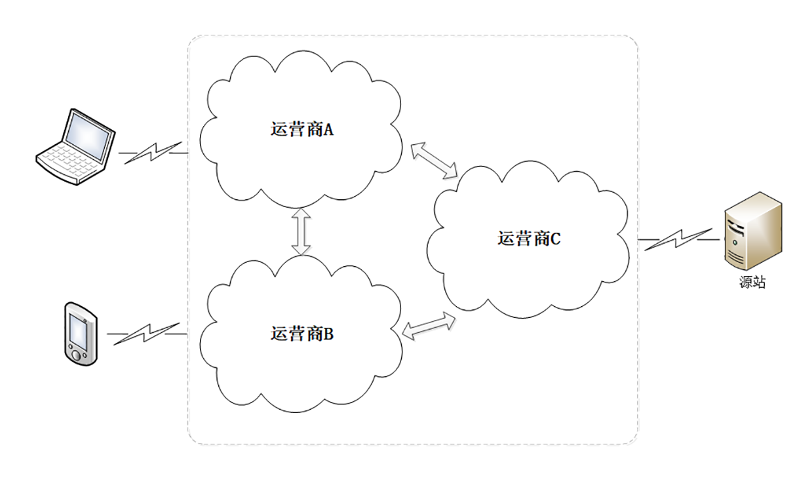
这些小网络内部的沟通很顺畅，但网络之间却只有很少的联通点。如果你在 A 网络，而网站在 C 网络，那么就必须“跨网”传输，和成千上万的其他用户一起去“挤”连接点的“独木桥”。而带宽终究是有限的，能抢到多少只能看你的运气。
还有，网络中还存在许多的路由器、网关，数据每经过一个节点，都要停顿一下，在二层、三层解析转发，这也会消耗一定的时间，带来延迟。
把这些因素再放到全球来看，地理距离、运营商网络、路由转发的影响就会成倍增加。想象一下，你在北京，访问旧金山的网站，要跨越半个地球，中间会有多少环节，会增加多少时延？
最终结果就是，如果仅用现有的 HTTP 传输方式，大多数网站都会访问速度缓慢、用户体验糟糕。
什么是 CDN？
这个时候 CDN 就出现了，它就是专门为解决“长距离”上网络访问速度慢而诞生的一种网络应用服务。
从名字上看，CDN 有三个关键词：“内容”“分发”和“网络”。
先看一下“网络”的含义。CDN 的最核心原则是“就近访问”，如果用户能够在本地几十公里的距离之内获取到数据，那么时延就基本上变成 0 了。
所以 CDN 投入了大笔资金，在全国、乃至全球的各个大枢纽城市都建立了机房，部署了大量拥有高存储高带宽的节点，构建了一个专用网络。这个网络是跨运营商、跨地域的，虽然内部也划分成多个小网络，但它们之间用高速专有线路连接，是真正的“信息高速公路”，基本上可以认为不存在网络拥堵。
有了这个高速的专用网之后，CDN 就要“分发”源站的“内容”了，用到的就是在[第 22 讲]说过的“缓存代理”技术。使用“推”或者“拉”的手段，把源站的内容逐级缓存到网络的每一个节点上。
于是，用户在上网的时候就不直接访问源站，而是访问离他“最近的”一个 CDN 节点，术语叫“边缘节点”（edge node），其实就是缓存了源站内容的代理服务器，这样一来就省去了“长途跋涉”的时间成本，实现了“网络加速”。

那么，CDN 都能加速什么样的“内容”呢？
在 CDN 领域里，“内容”其实就是 HTTP 协议里的“资源”，比如超文本、图片、视频、应用程序安装包等等。
资源按照是否可缓存又分为“静态资源”和“动态资源”。所谓的“静态资源”是指数据内容“静态不变”，任何时候来访问都是一样的，比如图片、音频。所谓的“动态资源”是指数据内容是“动态变化”的，也就是由后台服务计算生成的，每次访问都不一样，比如商品的库存、微博的粉丝数等。
很显然，只有静态资源才能够被缓存加速、就近访问，而动态资源只能由源站实时生成，即使缓存了也没有意义。不过，如果动态资源指定了“Cache-Control”，允许缓存短暂的时间，那它在这段时间里也就变成了“静态资源”，可以被 CDN 缓存加速。
套用一句广告词来形容 CDN 吧，我觉得非常恰当：“我们不生产内容，我们只是内容的搬运工。”
CDN，正是把“数据传输”这件看似简单的事情“做大做强”“做专做精”，就像专门的快递公司一样，在互联网世界里实现了它的价值。
CDN 的负载均衡
我们再来看看 CDN 是具体怎么运行的，它有两个关键组成部分：全局负载均衡和缓存系统，对应的是 DNS（[第 6 讲]）和缓存代理（[第 21 讲]、[第 22 讲]）技术。
全局负载均衡（Global Sever Load Balance）一般简称为 GSLB，它是 CDN 的“大脑”，主要的职责是当用户接入网络的时候在 CDN 专网中挑选出一个“最佳”节点提供服务，解决的是用户如何找到“最近的”边缘节点，对整个 CDN 网络进行“负载均衡”。

GSLB 最常见的实现方式是“DNS 负载均衡”，这个在[第 6 讲]里也说过，不过 GSLB 的方式要略微复杂一些。
原来没有 CDN 的时候，权威 DNS 返回的是网站自己服务器的实际 IP 地址，浏览器收到 DNS 解析结果后直连网站。
但加入 CDN 后就不一样了，权威 DNS 返回的不是 IP 地址，而是一个 CNAME( Canonical Name ) 别名记录，指向的就是 CDN 的 GSLB。它有点像是 HTTP/2 里“Alt-Svc”的意思，告诉外面：“我这里暂时没法给你真正的地址，你去另外一个地方再查查看吧。”
因为没拿到 IP 地址，于是本地 DNS 就会向 GSLB 再发起请求，这样就进入了 CDN 的全局负载均衡系统，开始“智能调度”，主要的依据有这么几个：
- 看用户的 IP 地址，查表得知地理位置，找相对最近的边缘节点；
- 看用户所在的运营商网络，找相同网络的边缘节点；
- 检查边缘节点的负载情况，找负载较轻的节点；
- 其他，比如节点的“健康状况”、服务能力、带宽、响应时间等。
GSLB 把这些因素综合起来，用一个复杂的算法，最后找出一台“最合适”的边缘节点，把这个节点的 IP 地址返回给用户，用户就可以“就近”访问 CDN 的缓存代理了。
CDN 的缓存代理
缓存系统是 CDN 的另一个关键组成部分，相当于 CDN 的“心脏”。如果缓存系统的服务能力不够，不能很好地满足用户的需求，那 GSLB 调度算法再优秀也没有用。
但互联网上的资源是无穷无尽的，不管 CDN 厂商有多大的实力，也不可能把所有资源都缓存起来。所以，缓存系统只能有选择地缓存那些最常用的那些资源。
这里就有两个 CDN 的关键概念：“命中”和“回源”。
“命中”就是指用户访问的资源恰好在缓存系统里，可以直接返回给用户；“回源”则正相反，缓存里没有，必须用代理的方式回源站取。
相应地，也就有了两个衡量 CDN 服务质量的指标：“命中率”和“回源率”。命中率就是命中次数与所有访问次数之比，回源率是回源次数与所有访问次数之比。显然，好的 CDN 应该是命中率越高越好，回源率越低越好。现在的商业 CDN 命中率都在 90% 以上，相当于把源站的服务能力放大了 10 倍以上。
怎么样才能尽可能地提高命中率、降低回源率呢？
首先，最基本的方式就是在存储系统上下功夫，硬件用高速 CPU、大内存、万兆网卡，再搭配 TB 级别的硬盘和快速的 SSD。软件方面则不断“求新求变”，各种新的存储软件都会拿来尝试，比如 Memcache、Redis、Ceph，尽可能地高效利用存储，存下更多的内容。
其次，缓存系统也可以划分出层次，分成一级缓存节点和二级缓存节点。一级缓存配置高一些，直连源站，二级缓存配置低一些，直连用户。回源的时候二级缓存只找一级缓存，一级缓存没有才回源站，这样最终“扇入度”就缩小了，可以有效地减少真正的回源。
第三个就是使用高性能的缓存服务，据我所知，目前国内的 CDN 厂商内部都是基于开源软件定制的。最常用的是专门的缓存代理软件 Squid、Varnish，还有新兴的 ATS（Apache Traffic Server），而 Nginx 和 OpenResty 作为 Web 服务器领域的“多面手”，凭借着强大的反向代理能力和模块化、易于扩展的优点，也在 CDN 里占据了不少的份额。
小结
CDN 发展到现在已经有二十来年的历史了，早期的 CDN 功能比较简单，只能加速静态资源。随着这些年 Web 2.0、HTTPS、视频、直播等新技术、新业务的崛起，它也在不断进步，增加了很多的新功能，比如 SSL 加速、内容优化（数据压缩、图片格式转换、视频转码）、资源防盗链、WAF 安全防护等等。
现在，再说 CDN 是“搬运工”已经不太准确了，它更像是一个“无微不至”的“网站保姆”，让网站只安心生产优质的内容，其他的“杂事”都由它去代劳。
- 由于客观地理距离的存在，直连网站访问速度会很慢，所以就出现了 CDN；
- CDN 构建了全国、全球级别的专网，让用户就近访问专网里的边缘节点，降低了传输延迟，实现了网站加速；
- GSLB 是 CDN 的“大脑”，使用 DNS 负载均衡技术，智能调度边缘节点提供服务；
- 缓存系统是 CDN 的“心脏”，使用 HTTP 缓存代理技术，缓存命中就返回给用户，否则就要回源。
课下作业
- 网站也可以自建同城、异地多处机房，构建集群来提高服务能力，为什么非要选择 CDN 呢？
- 对于无法缓存的动态资源，你觉得 CDN 也能有加速效果吗？
欢迎你把自己的学习体会写在留言区，与我和其他同学一起讨论。如果你觉得有所收获，也欢迎把文章分享给你的朋友。

38 WebSocket：沙盒里的TCP
在之前讲 TCP/IP 协议栈的时候，我说过有“TCP Socket”，它实际上是一种功能接口，通过这些接口就可以使用 TCP/IP 协议栈在传输层收发数据。
那么，你知道还有一种东西叫“WebSocket”吗？
单从名字上看，“Web”指的是 HTTP，“Socket”是套接字调用，那么这两个连起来又是什么意思呢？
所谓“望文生义”，大概你也能猜出来，“WebSocket”就是运行在“Web”，也就是 HTTP 上的 Socket 通信规范，提供与“TCP Socket”类似的功能，使用它就可以像“TCP Socket”一样调用下层协议栈，任意地收发数据。

更准确地说，“WebSocket”是一种基于 TCP 的轻量级网络通信协议，在地位上是与 HTTP“平级”的。
为什么要有 WebSocket
不过，已经有了被广泛应用的 HTTP 协议，为什么要再出一个 WebSocket 呢？它有哪些好处呢？
其实 WebSocket 与 HTTP/2 一样，都是为了解决 HTTP 某方面的缺陷而诞生的。HTTP/2 针对的是“队头阻塞”，而 WebSocket 针对的是“请求 - 应答”通信模式。
那么，“请求 - 应答”有什么不好的地方呢？
“请求 - 应答”是一种“半双工”的通信模式，虽然可以双向收发数据，但同一时刻只能一个方向上有动作，传输效率低。更关键的一点，它是一种“被动”通信模式，服务器只能“被动”响应客户端的请求，无法主动向客户端发送数据。
虽然后来的 HTTP/2、HTTP/3 新增了 Stream、Server Push 等特性，但“请求 - 应答”依然是主要的工作方式。这就导致 HTTP 难以应用在动态页面、即时消息、网络游戏等要求“实时通信”的领域。
在 WebSocket 出现之前，在浏览器环境里用 JavaScript 开发实时 Web 应用很麻烦。因为浏览器是一个“受限的沙盒”，不能用 TCP，只有 HTTP 协议可用，所以就出现了很多“变通”的技术，“轮询”（polling）就是比较常用的的一种。
简单地说，轮询就是不停地向服务器发送 HTTP 请求，问有没有数据，有数据的话服务器就用响应报文回应。如果轮询的频率比较高，那么就可以近似地实现“实时通信”的效果。
但轮询的缺点也很明显，反复发送无效查询请求耗费了大量的带宽和 CPU 资源，非常不经济。
所以，为了克服 HTTP“请求 - 应答”模式的缺点，WebSocket 就“应运而生”了。它原来是 HTML5 的一部分，后来“自立门户”，形成了一个单独的标准，RFC 文档编号是 6455。
WebSocket 的特点
WebSocket 是一个真正“全双工”的通信协议，与 TCP 一样，客户端和服务器都可以随时向对方发送数据，而不用像 HTTP“你拍一，我拍一”那么“客套”。于是，服务器就可以变得更加“主动”了。一旦后台有新的数据，就可以立即“推送”给客户端，不需要客户端轮询，“实时通信”的效率也就提高了。
WebSocket 采用了二进制帧结构，语法、语义与 HTTP 完全不兼容，但因为它的主要运行环境是浏览器，为了便于推广和应用，就不得不“搭便车”，在使用习惯上尽量向 HTTP 靠拢，这就是它名字里“Web”的含义。
服务发现方面，WebSocket 没有使用 TCP 的“IP 地址 + 端口号”，而是延用了 HTTP 的 URI 格式，但开头的协议名不是“http”，引入的是两个新的名字：“ws”和“wss”，分别表示明文和加密的 WebSocket 协议。
WebSocket 的默认端口也选择了 80 和 443，因为现在互联网上的防火墙屏蔽了绝大多数的端口，只对 HTTP 的 80、443 端口“放行”，所以 WebSocket 就可以“伪装”成 HTTP 协议，比较容易地“穿透”防火墙，与服务器建立连接。具体是怎么“伪装”的，我稍后再讲。
下面我举几个 WebSocket 服务的例子，你看看，是不是和 HTTP 几乎一模一样：
ws://www.chrono.com
ws://www.chrono.com:8080/srv
wss://www.chrono.com:445/im?user_id=xxx
要注意的一点是，WebSocket 的名字容易让人产生误解，虽然大多数情况下我们会在浏览器里调用 API 来使用 WebSocket，但它不是一个“调用接口的集合”，而是一个通信协议，所以我觉得把它理解成“TCP over Web”会更恰当一些。
WebSocket 的帧结构
刚才说了，WebSocket 用的也是二进制帧，有之前 HTTP/2、HTTP/3 的经验，相信你这次也能很快掌握 WebSocket 的报文结构。
不过 WebSocket 和 HTTP/2 的关注点不同，WebSocket 更侧重于“实时通信”，而 HTTP/2 更侧重于提高传输效率，所以两者的帧结构也有很大的区别。
WebSocket 虽然有“帧”，但却没有像 HTTP/2 那样定义“流”，也就不存在“多路复用”“优先级”等复杂的特性，而它自身就是“全双工”的，也就不需要“服务器推送”。所以综合起来，WebSocket 的帧学习起来会简单一些。
下图就是 WebSocket 的帧结构定义，长度不固定，最少 2 个字节，最多 14 字节，看着好像很复杂，实际非常简单。

开头的两个字节是必须的，也是最关键的。
第一个字节的第一位“FIN”是消息结束的标志位，相当于 HTTP/2 里的“END_STREAM”，表示数据发送完毕。一个消息可以拆成多个帧，接收方看到“FIN”后，就可以把前面的帧拼起来，组成完整的消息。
“FIN”后面的三个位是保留位，目前没有任何意义，但必须是 0。
第一个字节的后 4 位很重要，叫**“Opcode**”，操作码，其实就是帧类型，比如 1 表示帧内容是纯文本，2 表示帧内容是二进制数据，8 是关闭连接，9 和 10 分别是连接保活的 PING 和 PONG。
第二个字节第一位是掩码标志位“MASK”，表示帧内容是否使用异或操作（xor）做简单的加密。目前的 WebSocket 标准规定，客户端发送数据必须使用掩码，而服务器发送则必须不使用掩码。
第二个字节后 7 位是“Payload len”，表示帧内容的长度。它是另一种变长编码，最少 7 位，最多是 7+64 位，也就是额外增加 8 个字节，所以一个 WebSocket 帧最大是 2^64。
长度字段后面是“Masking-key”，掩码密钥，它是由上面的标志位“MASK”决定的，如果使用掩码就是 4 个字节的随机数，否则就不存在。
这么分析下来，其实 WebSocket 的帧头就四个部分：“结束标志位 + 操作码 + 帧长度 + 掩码”，只是使用了变长编码的“小花招”，不像 HTTP/2 定长报文头那么简单明了。
我们的实验环境利用 OpenResty 的“lua-resty-websocket”库，实现了一个简单的 WebSocket 通信，你可以访问 URI“/38-1”，它会连接后端的 WebSocket 服务“ws://127.0.0.1/38-0”，用 Wireshark 抓包就可以看到 WebSocket 的整个通信过程。
下面的截图是其中的一个文本帧，因为它是客户端发出的，所以需要掩码，报文头就在两个字节之外多了四个字节的“Masking-key”，总共是 6 个字节。
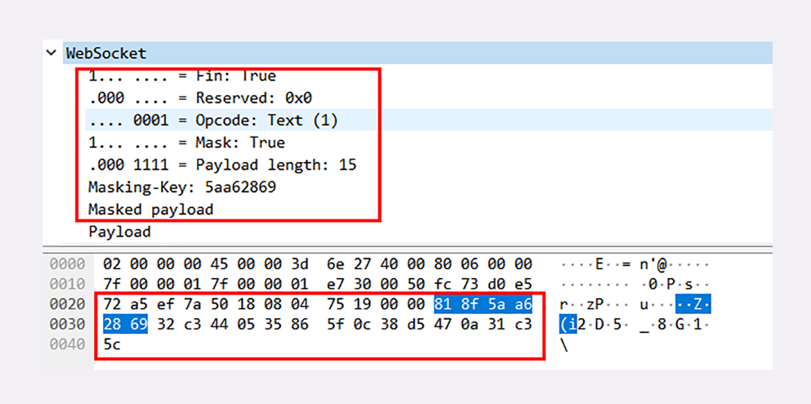
而报文内容经过掩码，不是直接可见的明文，但掩码的安全强度几乎是零，用“Masking-key”简单地异或一下就可以转换出明文。
WebSocket 的握手
和 TCP、TLS 一样，WebSocket 也要有一个握手过程，然后才能正式收发数据。
这里它还是搭上了 HTTP 的“便车”，利用了 HTTP 本身的“协议升级”特性，“伪装”成 HTTP，这样就能绕过浏览器沙盒、网络防火墙等等限制，这也是 WebSocket 与 HTTP 的另一个重要关联点。
WebSocket 的握手是一个标准的 HTTP GET 请求，但要带上两个协议升级的专用头字段：
- “Connection: Upgrade”，表示要求协议“升级”；
- “Upgrade: websocket”，表示要“升级”成 WebSocket 协议。
另外，为了防止普通的 HTTP 消息被“意外”识别成 WebSocket，握手消息还增加了两个额外的认证用头字段（所谓的“挑战”，Challenge）：
- Sec-WebSocket-Key：一个 Base64 编码的 16 字节随机数，作为简单的认证密钥；
- Sec-WebSocket-Version：协议的版本号，当前必须是 13。
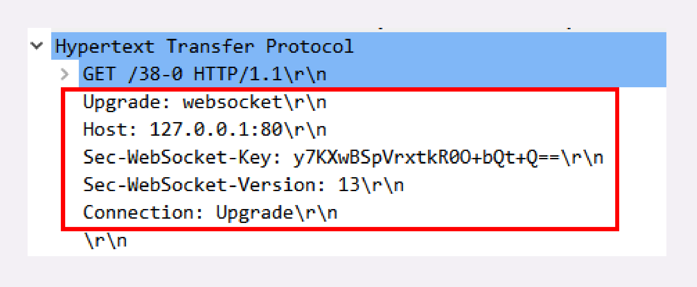
服务器收到 HTTP 请求报文，看到上面的四个字段，就知道这不是一个普通的 GET 请求，而是 WebSocket 的升级请求，于是就不走普通的 HTTP 处理流程，而是构造一个特殊的“101 Switching Protocols”响应报文，通知客户端，接下来就不用 HTTP 了，全改用 WebSocket 协议通信。（有点像 TLS 的“Change Cipher Spec”）
WebSocket 的握手响应报文也是有特殊格式的，要用字段“Sec-WebSocket-Accept”验证客户端请求报文，同样也是为了防止误连接。
具体的做法是把请求头里“Sec-WebSocket-Key”的值，加上一个专用的 UUID “258EAFA5-E914-47DA-95CA-C5AB0DC85B11”，再计算 SHA-1 摘要。
encode_base64(
sha1(
Sec-WebSocket-Key + '258EAFA5-E914-47DA-95CA-C5AB0DC85B11' ))
客户端收到响应报文，就可以用同样的算法，比对值是否相等，如果相等，就说明返回的报文确实是刚才握手时连接的服务器，认证成功。
握手完成，后续传输的数据就不再是 HTTP 报文，而是 WebSocket 格式的二进制帧了。

小结
浏览器是一个“沙盒”环境，有很多的限制，不允许建立 TCP 连接收发数据，而有了 WebSocket，我们就可以在浏览器里与服务器直接建立“TCP 连接”，获得更多的自由。
不过自由也是有代价的，WebSocket 虽然是在应用层，但使用方式却与“TCP Socket”差不多，过于“原始”，用户必须自己管理连接、缓存、状态，开发上比 HTTP 复杂的多，所以是否要在项目中引入 WebSocket 必须慎重考虑。
- HTTP 的“请求 - 应答”模式不适合开发“实时通信”应用，效率低，难以实现动态页面，所以出现了 WebSocket；
- WebSocket 是一个“全双工”的通信协议，相当于对 TCP 做了一层“薄薄的包装”，让它运行在浏览器环境里；
- WebSocket 使用兼容 HTTP 的 URI 来发现服务，但定义了新的协议名“ws”和“wss”，端口号也沿用了 80 和 443；
- WebSocket 使用二进制帧，结构比较简单，特殊的地方是有个“掩码”操作，客户端发数据必须掩码，服务器则不用；
- WebSocket 利用 HTTP 协议实现连接握手，发送 GET 请求要求“协议升级”，握手过程中有个非常简单的认证机制，目的是防止误连接。
课下作业
- WebSocket 与 HTTP/2 有很多相似点，比如都可以从 HTTP/1 升级，都采用二进制帧结构，你能比较一下这两个协议吗？
- 试着自己解释一下 WebSocket 里的”Web“和”Socket“的含义。
- 结合自己的实际工作，你觉得 WebSocket 适合用在哪些场景里？
欢迎你把自己的学习体会写在留言区，与我和其他同学一起讨论。如果你觉得有所收获，也欢迎把文章分享给你的朋友。

39 HTTP性能优化面面观（上）
“透视 HTTP 协议”这个专栏已经陪伴了你近三个月的时间，在最后的这两讲里，我将把散落在前面各个章节的零散知识点整合起来，做一个总结，和你一起聊聊 HTTP 的性能优化。
由于 HTTPS（SSL/TLS）的优化已经在[第 28 讲]里介绍的比较详细了，所以这次就暂时略过不谈，你可以课后再找机会复习。
既然要做性能优化，那么，我们就需要知道：什么是性能？它都有哪些指标，又应该如何度量，进而采取哪些手段去优化？
“性能”其实是一个复杂的概念。不同的人、不同的应用场景都会对它有不同的定义。对于 HTTP 来说，它又是一个非常复杂的系统，里面有非常多的角色，所以很难用一两个简单的词就能把性能描述清楚。
还是从 HTTP 最基本的“请求 - 应答”模型来着手吧。在这个模型里有两个角色：客户端和服务器，还有中间的传输链路，考查性能就可以看这三个部分。

HTTP 服务器
我们先来看看服务器，它一般运行在 Linux 操作系统上，用 Apache、Nginx 等 Web 服务器软件对外提供服务，所以，性能的含义就是它的服务能力，也就是尽可能多、尽可能快地处理用户的请求。
衡量服务器性能的主要指标有三个：吞吐量（requests per second）、并发数（concurrency）和响应时间（time per request）。
吞吐量就是我们常说的 RPS，每秒的请求次数，也有叫 TPS、QPS，它是服务器最基本的性能指标，RPS 越高就说明服务器的性能越好。
并发数反映的是服务器的负载能力，也就是服务器能够同时支持的客户端数量，当然也是越多越好，能够服务更多的用户。
响应时间反映的是服务器的处理能力，也就是快慢程度，响应时间越短，单位时间内服务器就能够给越多的用户提供服务，提高吞吐量和并发数。
除了上面的三个基本性能指标，服务器还要考虑 CPU、内存、硬盘和网卡等系统资源的占用程度，利用率过高或者过低都可能有问题。
在 HTTP 多年的发展过程中，已经出现了很多成熟的工具来测量这些服务器的性能指标，开源的、商业的、命令行的、图形化的都有。
在 Linux 上，最常用的性能测试工具可能就是 ab（Apache Bench）了，比如，下面的命令指定了并发数 100，总共发送 10000 个请求：
ab -c 100 -n 10000 'http://www.xxx.com'
系统资源监控方面，Linux 自带的工具也非常多，常用的有 uptime、top、vmstat、netstat、sar 等等，可能你比我还要熟悉，我就列几个简单的例子吧：
top # 查看 CPU 和内存占用情况
vmstat 2 # 每 2 秒检查一次系统状态
sar -n DEV 2 # 看所有网卡的流量，定时 2 秒检查
理解了这些性能指标，我们就知道了服务器的性能优化方向：合理利用系统资源，提高服务器的吞吐量和并发数，降低响应时间。
HTTP 客户端
看完了服务器的性能指标，我们再来看看如何度量客户端的性能。
客户端是信息的消费者，一切数据都要通过网络从服务器获取，所以它最基本的性能指标就是“延迟”（latency）。
之前在讲 HTTP/2 的时候就简单介绍过延迟。所谓的“延迟”其实就是“等待”，等待数据到达客户端时所花费的时间。但因为 HTTP 的传输链路很复杂，所以延迟的原因也就多种多样。
首先，我们必须谨记有一个“不可逾越”的障碍——光速，因为地理距离而导致的延迟是无法克服的，访问数千公里外的网站显然会有更大的延迟。
其次，第二个因素是带宽，它又包括接入互联网时的电缆、WiFi、4G 和运营商内部网络、运营商之间网络的各种带宽，每一处都有可能成为数据传输的瓶颈，降低传输速度，增加延迟。
第三个因素是 DNS 查询，如果域名在本地没有缓存，就必须向 DNS 系统发起查询，引发一连串的网络通信成本，而在获取 IP 地址之前客户端只能等待，无法访问网站，
第四个因素是 TCP 握手，你应该对它比较熟悉了吧，必须要经过 SYN、SYN/ACK、ACK 三个包之后才能建立连接，它带来的延迟由光速和带宽共同决定。
建立 TCP 连接之后，就是正常的数据收发了，后面还有解析 HTML、执行 JavaScript、排版渲染等等，这些也会耗费一些时间。不过它们已经不属于 HTTP 了，所以不在今天的讨论范围之内。
之前讲 HTTPS 时介绍过一个专门的网站“SSLLabs”，而对于 HTTP 性能优化，也有一个专门的测试网站“WebPageTest”。它的特点是在世界各地建立了很多的测试点，可以任意选择地理位置、机型、操作系统和浏览器发起测试，非常方便，用法也很简单。
网站测试的最终结果是一个直观的“瀑布图”（Waterfall Chart），清晰地列出了页面中所有资源加载的先后顺序和时间消耗，比如下图就是对 GitHub 首页的一次测试。
Chrome 等浏览器自带的开发者工具也可以很好地观察客户端延迟指标，面板左边有每个 URI 具体消耗的时间，面板的右边也是类似的瀑布图。
点击某个 URI，在 Timing 页里会显示出一个小型的“瀑布图”，是这个资源消耗时间的详细分解，延迟的原因都列的清清楚楚，比如下面的这张图：

图里面的这些指标都是什么含义呢？我给你解释一下：
- 因为有“队头阻塞”，浏览器对每个域名最多开 6 个并发连接（HTTP/1.1），当页面里链接很多的时候就必须排队等待（Queued、Queueing），这里它就等待了 1.62 秒，然后才被浏览器正式处理；
- 浏览器要预先分配资源，调度连接，花费了 11.56 毫秒（Stalled）;
- 连接前必须要解析域名，这里因为有本地缓存，所以只消耗了 0.41 毫秒（DNS Lookup）；
- 与网站服务器建立连接的成本很高，总共花费了 270.87 毫秒，其中有 134.89 毫秒用于 TLS 握手，那么 TCP 握手的时间就是 135.98 毫秒（Initial connection、SSL）；
- 实际发送数据非常快，只用了 0.11 毫秒（Request sent）；
- 之后就是等待服务器的响应，专有名词叫 TTFB（Time To First Byte），也就是“首字节响应时间”，里面包括了服务器的处理时间和网络传输时间，花了 124.2 毫秒；
- 接收数据也是非常快的，用了 3.58 毫秒（Content Dowload）。
从这张图你可以看到，一次 HTTP“请求 - 响应”的过程中延迟的时间是非常惊人的，总时间 415.04 毫秒里占了差不多 99%。
所以，客户端 HTTP 性能优化的关键就是：降低延迟。
HTTP 传输链路
以 HTTP 基本的“请求 - 应答”模型为出发点，刚才我们得到了 HTTP 性能优化的一些指标，现在，我们来把视角放大到“真实的世界”，看看客户端和服务器之间的传输链路，它也是影响 HTTP 性能的关键。
还记得[第 8 讲])里的互联网示意图吗？我把它略微改了一下，划分出了几个区域，这就是所谓的“第一公里”“中间一公里”和“最后一公里”（在英语原文中是 mile，英里）。

“第一公里”是指网站的出口，也就是服务器接入互联网的传输线路，它的带宽直接决定了网站对外的服务能力，也就是吞吐量等指标。显然，优化性能应该在这“第一公里”加大投入，尽量购买大带宽，接入更多的运营商网络。
“中间一公里”就是由许多小网络组成的实际的互联网，其实它远不止“一公里”，而是非常非常庞大和复杂的网络，地理距离、网络互通都严重影响了传输速度。好在这里面有一个 HTTP 的“好帮手”——CDN，它可以帮助网站跨越“千山万水”，让这段距离看起来真的就好像只有“一公里”。
“最后一公里”是用户访问互联网的入口，对于固网用户就是光纤、网线，对于移动用户就是 WiFi、基站。以前它是客户端性能的主要瓶颈，延迟大带宽小，但随着近几年 4G 和高速宽带的普及，“最后一公里”的情况已经好了很多，不再是制约性能的主要因素了。
除了这“三公里”，我个人认为还有一个“第零公里”， 就是网站内部的 Web 服务系统。它其实也是一个小型的网络（当然也可能会非常大），中间的数据处理、传输会导致延迟，增加服务器的响应时间，也是一个不可忽视的优化点。
在上面整个互联网传输链路中，末端的“最后一公里”我们是无法控制的，所以我们只能在“第零公里”“第一公里”和“中间一公里”这几个部分下功夫，增加带宽降低延迟，优化传输速度。
小结
- 性能优化是一个复杂的概念，在 HTTP 里可以分解为服务器性能优化、客户端性能优化和传输链路优化；
- 服务器有三个主要的性能指标：吞吐量、并发数和响应时间，此外还需要考虑资源利用率；
- 客户端的基本性能指标是延迟，影响因素有地理距离、带宽、DNS 查询、TCP 握手等；
- 从服务器到客户端的传输链路可以分为三个部分，我们能够优化的是前两个部分，也就是“第一公里”和“中间一公里”；
- 有很多工具可以测量这些指标，服务器端有 ab、top、sar 等，客户端可以使用测试网站，浏览器的开发者工具。
课下作业
- 你有 HTTP 性能优化的经验吗？常用的有哪些方法？
- 你是怎么理解客户端的“延迟”的？应该怎样降低延迟？
欢迎你把自己的学习体会写在留言区，与我和其他同学一起讨论。如果你觉得有所收获，也欢迎把文章分享给你的朋友。

40 HTTP性能优化面面观（下）
今天我们继续上次的话题，看看 HTTP 性能优化有哪些行之有效的手段。
上一讲里我说到了，在整个 HTTP 系统里有三个可优化的环节，分别是服务器、客户端和传输链路（“第一公里”和“中间一公里”）。但因为我们是无法完全控制客户端的，所以实际上的优化工作通常是在服务器端。这里又可以细分为后端和前端，后端是指网站的后台服务，而前端就是 HTML、CSS、图片等展现在客户端的代码和数据。
知道了大致的方向，HTTP 性能优化具体应该怎么做呢？
总的来说，任何计算机系统的优化都可以分成这么几类：硬件软件、内部外部、花钱不花钱。
投资购买现成的硬件最简单的优化方式，比如换上更强的 CPU、更快的网卡、更大的带宽、更多的服务器，效果也会“立竿见影”，直接提升网站的服务能力，也就实现了 HTTP 优化。
另外，花钱购买外部的软件或者服务也是一种行之有效的优化方式，最“物有所值”的应该算是 CDN 了（参见[第 37 讲]）。CDN 专注于网络内容交付，帮助网站解决“中间一公里”的问题，还有很多其他非常专业的优化功能。把网站交给 CDN 运营，就好像是“让网站坐上了喷气飞机”，能够直达用户，几乎不需要费什么力气就能够达成很好的优化效果。
不过这些“花钱”的手段实在是太没有“技术含量”了，属于“懒人”（无贬义）的做法，所以我就不再细说，接下来重点就讲讲在网站内部、“不花钱”的软件优化。
我把这方面的 HTTP 性能优化概括为三个关键词：开源、节流、缓存。
开源
这个“开源”可不是 Open Source，而是指抓“源头”，开发网站服务器自身的潜力，在现有条件不变的情况下尽量挖掘出更多的服务能力。
首先，我们应该选用高性能的 Web 服务器，最佳选择当然就是 Nginx/OpenResty 了，尽量不要选择基于 Java、Python、Ruby 的其他服务器，它们用来做后面的业务逻辑服务器更好。利用 Nginx 强大的反向代理能力实现“动静分离”，动态页面交给 Tomcat、Django、Rails，图片、样式表等静态资源交给 Nginx。
Nginx 或者 OpenResty 自身也有很多配置参数可以用来进一步调优，举几个例子，比如说禁用负载均衡锁、增大连接池，绑定 CPU 等等，相关的资料有很多。
特别要说的是，对于 HTTP 协议一定要启用长连接。在[第 39 讲]里你也看到了，TCP 和 SSL 建立新连接的成本是非常高的，有可能会占到客户端总延迟的一半以上。长连接虽然不能优化连接握手，但可以把成本“均摊”到多次请求里，这样只有第一次请求会有延迟，之后的请求就不会有连接延迟，总体的延迟也就降低了。
另外，在现代操作系统上都已经支持 TCP 的新特性“TCP Fast Open”（Win10、iOS9、Linux 4.1），它的效果类似 TLS 的“False Start”，可以在初次握手的时候就传输数据，也就是 0-RTT，所以我们应该尽可能在操作系统和 Nginx 里开启这个特性，减少外网和内网里的握手延迟。
下面给出一个简短的 Nginx 配置示例，启用了长连接等优化参数，实现了动静分离：
server {
listen 80 deferred reuseport backlog=4096 fastopen=1024;
keepalive_timeout 60;
keepalive_requests 10000;
location ~* \.(png)$ {
root /var/images/png/;
}
location ~* \.(php)$ {
proxy_pass http://php_back_end;
}
}
节流
“节流”是指减少客户端和服务器之间收发的数据量，在有限的带宽里传输更多的内容。
“节流”最基本的做法就是使用 HTTP 协议内置的“数据压缩”编码，不仅可以选择标准的 gzip，还可以积极尝试新的压缩算法 br，它有更好的压缩效果。
不过在数据压缩的时候应当注意选择适当的压缩率，不要追求最高压缩比，否则会耗费服务器的计算资源，增加响应时间，降低服务能力，反而会“得不偿失”。
gzip 和 br 是通用的压缩算法，对于 HTTP 协议传输的各种格式数据，我们还可以有针对性地采用特殊的压缩方式。
HTML/CSS/JS 属于纯文本，就可以采用特殊的“压缩”，去掉源码里多余的空格、换行、注释等元素。这样“压缩”之后的文本虽然看起来很混乱，对“人类”不友好，但计算机仍然能够毫无障碍地阅读，不影响浏览器上的运行效果。
图片在 HTTP 传输里占有非常高的比例，虽然它本身已经被压缩过了，不能被 gzip、br 处理，但仍然有优化的空间。比如说，去除图片里的拍摄时间、地点、机型等元数据，适当降低分辨率，缩小尺寸。图片的格式也很关键，尽量选择高压缩率的格式，有损格式应该用 JPEG，无损格式应该用 Webp 格式。
对于小文本或者小图片，还有一种叫做“资源合并”（Concatenation）的优化方式，就是把许多小资源合并成一个大资源，用一个请求全下载到客户端，然后客户端再用 JS、CSS 切分后使用，好处是节省了请求次数，但缺点是处理比较麻烦。
刚才说的几种数据压缩都是针对的 HTTP 报文里的 body，在 HTTP/1 里没有办法可以压缩 header，但我们也可以采取一些手段来减少 header 的大小，不必要的字段就尽量不发（例如 Server、X-Powered-By）。
网站经常会使用 Cookie 来记录用户的数据，浏览器访问网站时每次都会带上 Cookie，冗余度很高。所以应当少使用 Cookie，减少 Cookie 记录的数据量，总使用 domain 和 path 属性限定 Cookie 的作用域，尽可能减少 Cookie 的传输。如果客户端是现代浏览器，还可以使用 HTML5 里定义的 Web Local Storage，避免使用 Cookie。
压缩之外，“节流”还有两个优化点，就是域名和重定向。
DNS 解析域名会耗费不少的时间，如果网站拥有多个域名，那么域名解析获取 IP 地址就是一个不小的成本，所以应当适当“收缩”域名，限制在两三个左右，减少解析完整域名所需的时间，让客户端尽快从系统缓存里获取解析结果。
重定向引发的客户端延迟也很高，它不仅增加了一次请求往返，还有可能导致新域名的 DNS 解析，是 HTTP 前端性能优化的“大忌”。除非必要，应当尽量不使用重定向，或者使用 Web 服务器的“内部重定向”。
缓存
在[第 20 讲]里，我就说到了“缓存”，它不仅是 HTTP，也是任何计算机系统性能优化的“法宝”，把它和上面的“开源”“节流”搭配起来应用于传输链路，就能够让 HTTP 的性能再上一个台阶。
在“第零公里”，也就是网站系统内部，可以使用 Memcache、Redis、Varnish 等专门的缓存服务，把计算的中间结果和资源存储在内存或者硬盘里，Web 服务器首先检查缓存系统，如果有数据就立即返回给客户端，省去了访问后台服务的时间。
在“中间一公里”，缓存更是性能优化的重要手段，CDN 的网络加速功能就是建立在缓存的基础之上的，可以这么说，如果没有缓存，那就没有 CDN。
利用好缓存功能的关键是理解它的工作原理（参见[第 20 讲]和[第 22 讲]），为每个资源都添加 ETag 和 Last-modified 字段，再用 Cache-Control、Expires 设置好缓存控制属性。
其中最基本的是 max-age 有效期，标记资源可缓存的时间。对于图片、CSS 等静态资源可以设置较长的时间，比如一天或者一个月，对于动态资源，除非是实时性非常高，也可以设置一个较短的时间，比如 1 秒或者 5 秒。
这样一旦资源到达客户端，就会被缓存起来，在有效期内都不会再向服务器发送请求，也就是：“没有请求的请求，才是最快的请求。”
HTTP/2
在“开源”“节流”和“缓存”这三大策略之外，HTTP 性能优化还有一个选择，那就是把协议由 HTTP/1 升级到 HTTP/2。
通过“飞翔篇”的学习，你已经知道了 HTTP/2 的很多优点，它消除了应用层的队头阻塞，拥有头部压缩、二进制帧、多路复用、流量控制、服务器推送等许多新特性，大幅度提升了 HTTP 的传输效率。
实际上这些特性也是在“开源”和“节流”这两点上做文章，但因为这些都已经内置在了协议内，所以只要换上 HTTP/2，网站就能够立刻获得显著的性能提升。
不过你要注意，一些在 HTTP/1 里的优化手段到了 HTTP/2 里会有“反效果”。
对于 HTTP/2 来说，一个域名使用一个 TCP 连接才能够获得最佳性能，如果开多个域名，就会浪费带宽和服务器资源，也会降低 HTTP/2 的效率，所以“域名收缩”在 HTTP/2 里是必须要做的。
“资源合并”在 HTTP/1 里减少了多次请求的成本，但在 HTTP/2 里因为有头部压缩和多路复用，传输小文件的成本很低，所以合并就失去了意义。而且“资源合并”还有一个缺点，就是降低了缓存的可用性，只要一个小文件更新，整个缓存就完全失效，必须重新下载。
所以在现在的大带宽和 CDN 应用场景下，应当尽量少用资源合并（JS、CSS 图片合并，数据内嵌），让资源的粒度尽可能地小，才能更好地发挥缓存的作用。
小结
- 花钱购买硬件、软件或者服务可以直接提升网站的服务能力，其中最有价值的是 CDN；
- 不花钱也可以优化 HTTP，三个关键词是“开源”“节流”和“缓存”；
- 后端应该选用高性能的 Web 服务器，开启长连接，提升 TCP 的传输效率；
- 前端应该启用 gzip、br 压缩，减小文本、图片的体积，尽量少传不必要的头字段；
- 缓存是无论何时都不能忘记的性能优化利器，应该总使用 Etag 或 Last-modified 字段标记资源；
- 升级到 HTTP/2 能够直接获得许多方面的性能提升，但要留意一些 HTTP/1 的“反模式”。
到这里，专栏的全部课程就学完了，在这三个月的时间里你是否有了很多的收获呢？
接下来，就请在广阔的网络世界里去实践这些知识吧，祝你成功！
结束语 做兴趣使然的Hero
从今年年初与极客时间编辑的初次接触开始，到这个月底专栏的正式结束，经过了差不多 7 个月的时间。这段历程有痛苦也有欢乐，有迷惘也有清朗，有困惑也有顿悟，有挫折也有奋进，各种感受五味杂陈，一言难尽。
无论如何，首先要感谢的，就是你——感谢你对我和这个专栏的支持，Many thanks to you。
写文章都讲究“首尾呼应”，所以在这篇“结束语”里，我就顺着“开篇词”，和你聊些轻松的话题，唠唠家常、说说心里话。
我是怎么写专栏的
咱们都是吃计算机这碗饭的，应该知道通信协议这个东西很不好学，更是很难讲，因为它真的是太“虚”了。不像编程语言、算法、数据结构、开发框架、操作系统那样，有实实在在的代码，协议只是一个文本规范，是一个动态的过程，而不是在计算机系统里真实存在的东西，你不能用 GDB 直接去调试，内存里也看不见。
所以，讲协议的书本、课程实在是少之又少。
落到 HTTP 协议，就如同我在专栏一开始时所说的，它“既简单又不简单”，而且历史悠久，涉及的范围很广，关联的技能点很多、很杂。当我接下写专栏的任务时，甚至有点“懵”的感觉，千头万绪不知从何谈起。
好在我一直有写学习笔记的习惯，最早是用“原始”的 word 文档，近几年改用云端笔记工具，随时记录、整理散乱的知识碎片。
既然暂时“无从下手”，那就先读文章、记笔记好了。
于是，我开始大量地粗读、精读现有资料，在阅读的过程中慢慢搜集思维中闪现的“火花”，即使是一两个零星的词汇也不放过。一个多月的辛苦整理过后，这才逐渐理清了脉络，有了模糊的写作思路，全程有点“垃圾堆里筛金子”的感觉。
虽然我有写书的经验，但写专栏则是完全不同的体验，在正式动笔写作的时候（严格来说应该是“敲键盘码字”），我才意识到，它与传统的技术类书籍有很大的不同。
书籍的阅读场景通常会比较安静、放松，读者会有比较长的思考时间，可以翻来覆去地看，再时不时拿起铅笔画个重点、做个记号，一段时间的阅读下来可以关注很多的知识点，然后再慢慢思索，总结串联。
而专栏的阅读场景则更可能是在地铁、公交车里，周围人挤人、人挨人，拿着手机，或看或听，还要时刻当心别坐过站。在这种情况下，读者很难有足够的思考时间和精力，更希望能够高效率、便捷地在短短几分钟的碎片时间里吸取知识，如果有太多的知识点就难以接受，一两个略有深度的点会更好。
所以，这次的专栏写作我就改换了风格，开始“口语化写作”，不再像写书那样斟词酌句，为一两句话的用词反复思量、咬文嚼字，而是完全“放飞自我”，定下每篇文章的主旨、要点后就笔随心动，把头脑里的思绪完全“dump”出来。
这样虽然在一定程度上降低了文字的信息密度，却会让文章形式更流畅、更易理解，做为补充，文章的末尾我再用小结的形式集中强化一下要点，实现了“浅入深出”。
现在看来效果似乎还算不错，不知道你以为如何呢？
兴趣使然的 HERO
虽然风格定了，但专栏写作过程中的困难程度还是我当初没有预计到的，写书是一个“慢功夫”，可以慢慢思考，有想法了就写一点，没有灵感可能十天半个月都动不了笔。
而写专栏却有“硬性”的时间限制，和编辑确定了写作大纲后就开始了“奴隶”一样的日子：每周固定要交两、三篇，每篇三四千字，相当于毎天要产出至少一千的有效文字，这简直成了“夺命连环 call”，同时还有构思、画图、编码、试验、核查等其他工作，压力非常大，真是一次“触及灵魂”之旅。
记得有一句名言：“兴趣是最好的老师”，支撑着我把这个专栏按时交付下去的最大动力，可能就是对学习计算机知识的兴趣和探索欲了。每当 get 到一个以前没有注意的知识点，每当成功领会了协议背后的设计意图，我的心底都会产生由衷的喜悦，前面钻研过程中的苦恼和烦躁也就瞬间“烟消云散”了。
所以，只要发自内心地对一件事情产生兴趣和喜爱，那么即使有再多的困难，也会想办法去克服、去解决。
说到这里，我联想到了《一拳超人》里的主角埼玉，他可以算得上是典型的“兴趣使然的 Hero”，纯粹是因为自己的“兴趣”而走上了“打怪升级”的道路，不图名不图利，不在意排名，也不在意奖励。单纯而快乐的生活，也许正是我们很多人想要追求的目标。
当然，除了兴趣，更重要的是恒心、毅力和坚持。埼玉之所以成为“无敌的存在”，就是因为他每天坚持做 100 个俯卧撑、100 个仰卧起坐、100 个下蹲，天天如此，从不间断。
我在这几个月的专栏写作过程中，遇到的困难和烦恼是以前写书的好几倍，经常是坐在电脑前，脑子里有很多乱麻一样想法，却无法“落地”转化成合适的词语，有时候会就这么干坐上一两个小时，焦灼的心情可想而知。
幸运的是最终我在“兴趣”这个原动力的支撑下坚持到了最后，另外还有了一个意外的收获。每天夜里码字没有思路的时候，我会走出家门，在小区里慢跑两三圈，呼吸新鲜空气顺便“放空”大脑。到专栏结束的这个时间点，居然减掉了差不多 8 斤的体重。
所以你看，“兴趣”给我带来的好处还真是不少呢。
相濡以沫，不如相忘于江湖
“透视 HTTP”这个专栏马上就要结束了，但 HTTP 协议的学习还远没有结束。
这有点像是调查兵团历经磨难和牺牲，终于看到了大海，但在海的另一头，还会更多更大的挑战等待着他们（看过《进击的巨人》的朋友一定能领会这种情景吧）。
在这篇“结束语”的留言区里，希望大家都能“冒个泡”，看看当时定下的“小目标”有没有达成，一起分享一下在这个专栏中的收获和心路历程，还有将来的打算。也欢迎你访问专栏的 GitHub 主页，提 issue 和 PR，把 HTTP 的学习、实践继续下去。